10 Deep Learning
10.1 Conceptual
10.1.1 Question 1
Consider a neural network with two hidden layers: \(p = 4\) input units, 2 units in the first hidden layer, 3 units in the second hidden layer, and a single output.
- Draw a picture of the network, similar to Figures 10.1 or 10.4.
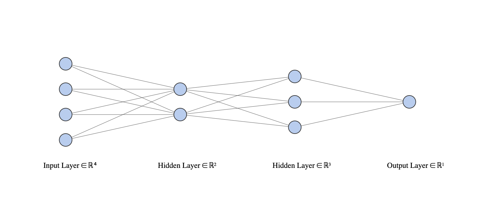
- Write out an expression for \(f(X)\), assuming ReLU activation functions. Be as explicit as you can!
The three layers (from our final output layer back to the start of our network) can be described as:
\[\begin{align*} f(X) &= g(w_{0}^{(3)} + \sum^{K_2}_{l=1} w_{l}^{(3)} A_l^{(2)}) \\ A_l^{(2)} &= h_l^{(2)}(X) = g(w_{l0}^{(2)} + \sum_{k=1}^{K_1} w_{lk}^{(2)} A_k^{(1)})\\ A_k^{(1)} &= h_k^{(1)}(X) = g(w_{k0}^{(1)} + \sum_{j=1}^p w_{kj}^{(1)} X_j) \\ \end{align*}\]
for \(l = 1, ..., K_2 = 3\) and \(k = 1, ..., K_1 = 2\) and \(p = 4\), where,
\[ g(z) = (z)_+ = \begin{cases} 0, & \text{if } z < 0 \\ z, & \text{otherwise} \end{cases} \]
- Now plug in some values for the coefficients and write out the value of \(f(X)\).
We can perhaps achieve this most easily by fitting a real model. Note, in the plot shown here, we also include the “bias” or intercept terms.
library(ISLR2)
library(neuralnet)
library(sigmoid)
set.seed(5)
train <- sample(seq_len(nrow(ISLR2::Boston)), nrow(ISLR2::Boston) * 2/3)
net <- neuralnet(crim ~ lstat + medv + ptratio + rm,
data = ISLR2::Boston[train, ],
act.fct = relu,
hidden = c(2, 3)
)
plot(net)We can make a prediction for a given observation using this object.
Firstly, let’s find an “ambiguous” test sample
p <- predict(net, ISLR2::Boston[-train, ])
x <- ISLR2::Boston[-train, ][which.min(abs(p - mean(c(max(p), min(p))))), ]
x <- x[, c("lstat", "medv", "ptratio", "rm")]
predict(net, x)## [,1]
## 441 19.14392Or, repeating by “hand”:
g <- function(x) ifelse(x > 0, x, 0) # relu activation function
w <- net$weights[[1]] # the estimated weights for each layer
v <- as.numeric(x) # our input predictors
# to calculate our prediction we can take the dot product of our predictors
# (with 1 at the start for the bias term) and our layer weights, lw)
for (lw in w) v <- g(c(1, v) %*% lw)
v## [,1]
## [1,] 19.14392
- How many parameters are there?
length(unlist(net$weights))## [1] 23There are \(4*2+2 + 2*3+3 + 3*1+1 = 23\) parameters.
10.1.2 Question 2
Consider the softmax function in (10.13) (see also (4.13) on page 141) for modeling multinomial probabilities.
- In (10.13), show that if we add a constant \(c\) to each of the \(z_l\), then the probability is unchanged.
If we add a constant \(c\) to each \(Z_l\) in equation 10.13 we get:
\[\begin{align*} Pr(Y=m|X) &= \frac{e^{Z_m+c}}{\sum_{l=0}^9e^{Z_l+c}} \\ &= \frac{e^{Z_m}e^c}{\sum_{l=0}^9e^{Z_l}e^c} \\ &= \frac{e^{Z_m}e^c}{e^c\sum_{l=0}^9e^{Z_l}} \\ &= \frac{e^{Z_m}}{\sum_{l=0}^9e^{Z_l}} \\ \end{align*}\]
which is just equation 10.13.
- In (4.13), show that if we add constants \(c_j\), \(j = 0,1,...,p\), to each of the corresponding coefficients for each of the classes, then the predictions at any new point \(x\) are unchanged.
4.13 is
\[ Pr(Y=k|X=x) = \frac {e^{\beta_{K0} + \beta_{K1}x_1 + ... + \beta_{Kp}x_p}} {\sum_{l=1}^K e^{\beta_{l0} + \beta_{l1}x1 + ... + \beta_{lp}x_p}} \]
adding constants \(c_j\) to each class gives:
\[\begin{align*} Pr(Y=k|X=x) &= \frac {e^{\beta_{K0} + \beta_{K1}x_1 + c_1 + ... + \beta_{Kp}x_p + c_p}} {\sum_{l=1}^K e^{\beta_{l0} + \beta_{l1}x1 + c_1 + ... + \beta_{lp}x_p + c_p}} \\ &= \frac {e^{c1 + ... + c_p}e^{\beta_{K0} + \beta_{K1}x_1 + ... + \beta_{Kp}x_p}} {\sum_{l=1}^K e^{c1 + ... + c_p}e^{\beta_{l0} + \beta_{l1}x1 + ... + \beta_{lp}x_p}} \\ &= \frac {e^{c1 + ... + c_p}e^{\beta_{K0} + \beta_{K1}x_1 + ... + \beta_{Kp}x_p}} {e^{c1 + ... + c_p}\sum_{l=1}^K e^{\beta_{l0} + \beta_{l1}x1 + ... + \beta_{lp}x_p}} \\ &= \frac {e^{\beta_{K0} + \beta_{K1}x_1 + ... + \beta_{Kp}x_p}} {\sum_{l=1}^K e^{\beta_{l0} + \beta_{l1}x1 + ... + \beta_{lp}x_p}} \\ \end{align*}\]
which collapses to 4.13 (with the same argument as above).
This shows that the softmax function is over-parametrized. However, regularization and SGD typically constrain the solutions so that this is not a problem.
10.1.3 Question 3
Show that the negative multinomial log-likelihood (10.14) is equivalent to the negative log of the likelihood expression (4.5) when there are \(M = 2\) classes.
Equation 10.14 is
\[ -\sum_{i=1}^n \sum_{m=0}^9 y_{im}\log(f_m(x_i)) \]
Equation 4.5 is:
\[ \ell(\beta_0, \beta_1) = \prod_{i:y_i=1}p(x_i) \prod_{i':y_i'=0}(1-p(x_i')) \]
So, \(\log(\ell)\) is:
\[\begin{align*} \log(\ell) &= \log \left( \prod_{i:y_i=1}p(x_i) \prod_{i':y_i'=0}(1-p(x_i')) \right ) \\ &= \sum_{i:y_1=1}\log(p(x_i)) + \sum_{i':y_i'=0}\log(1-p(x_i')) \\ \end{align*}\]
If we set \(y_i\) to be an indicator variable such that \(y_{i1}\) and \(y_{i0}\) are 1 and 0 (or 0 and 1) when our \(i\)th observation is 1 (or 0) respectively, then we can write:
\[ \log(\ell) = \sum_{i}y_{i1}\log(p(x_i)) + \sum_{i}y_{i0}\log(1-p(x_i')) \]
If we also let \(f_1(x) = p(x)\) and \(f_0(x) = 1 - p(x)\) then:
\[\begin{align*} \log(\ell) &= \sum_i y_{i1}\log(f_1(x_i)) + \sum_{i}y_{i0}\log(f_0(x_i')) \\ &= \sum_i \sum_{m=0}^1 y_{im}\log(f_m(x_i)) \\ \end{align*}\]
When we take the negative of this, it is equivalent to 10.14 for two classes (\(m = 0,1\)).
10.1.4 Question 4
Consider a CNN that takes in \(32 \times 32\) grayscale images and has a single convolution layer with three \(5 \times 5\) convolution filters (without boundary padding).
- Draw a sketch of the input and first hidden layer similar to Figure 10.8.
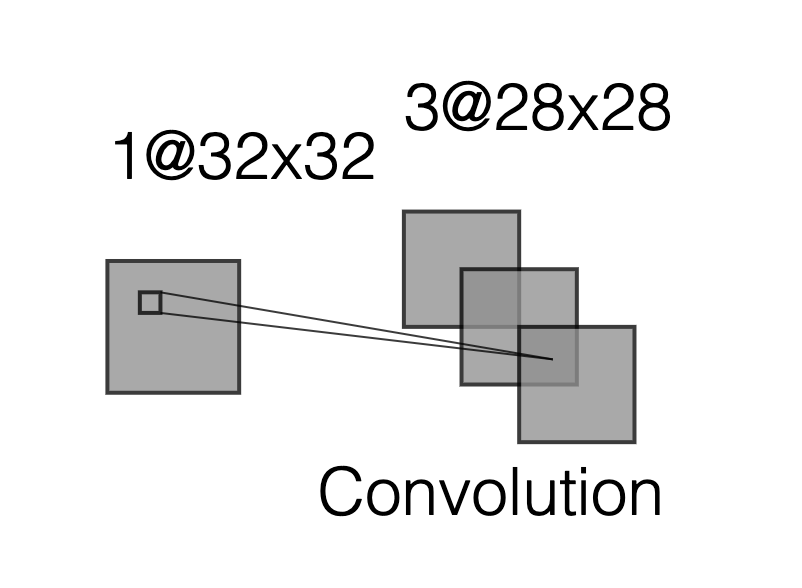
- How many parameters are in this model?
There are 5 convolution matrices each with 5x5 weights (plus 5 bias terms) to estimate, therefore 130 parameters
- Explain how this model can be thought of as an ordinary feed-forward neural network with the individual pixels as inputs, and with constraints on the weights in the hidden units. What are the constraints?
We can think of a convolution layer as a regularized fully connected layer. The regularization in this case is due to not all inputs being connected to all outputs, and weights being shared between connections.
Each output node in the convolved image can be thought of as taking inputs from a limited number of input pixels (the neighboring pixels), with a set of weights specified by the convolution layer which are then shared by the connections to all other output nodes.
- If there were no constraints, then how many weights would there be in the ordinary feed-forward neural network in (c)?
With no constraints, we would connect each output pixel in our 5x32x32 convolution layer to each node in the 32x32 original image (plus 5 bias terms), giving a total of 5,242,885 weights to estimate.
10.1.5 Question 5
In Table 10.2 on page 433, we see that the ordering of the three methods with respect to mean absolute error is different from the ordering with respect to test set \(R^2\). How can this be?
Mean absolute error considers absolute differences between predictions and observed values, whereas \(R^2\) considers the (normalized) sum of squared differences, thus larger errors contribute relatively ore to \(R^2\) than mean absolute error.
10.2 Applied
10.2.1 Question 6
Consider the simple function \(R(\beta) = sin(\beta) + \beta/10\).
- Draw a graph of this function over the range \(\beta \in [−6, 6]\).
r <- function(x) sin(x) + x/10
x <- seq(-6, 6, 0.1)
plot(x, r(x), type = "l")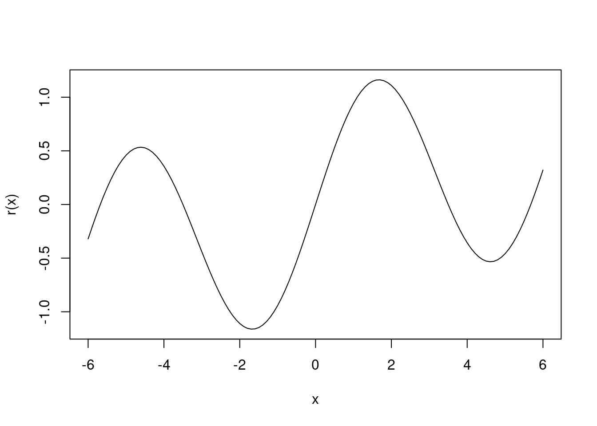
- What is the derivative of this function?
\[ cos(x) + 1/10 \]
- Given \(\beta^0 = 2.3\), run gradient descent to find a local minimum of \(R(\beta)\) using a learning rate of \(\rho = 0.1\). Show each of \(\beta^0, \beta^1, ...\) in your plot, as well as the final answer.
The derivative of our function, i.e. \(cos(x) + 1/10\) gives us the gradient for a given \(x\). For gradient descent, we move \(x\) a little in the opposite direction, for some learning rate \(\rho = 0.1\):
\[ x^{m+1} = x^m - \rho (cos(x^m) + 1/10) \]
iter <- function(x, rho) x - rho*(cos(x) + 1/10)
gd <- function(start, rho = 0.1) {
b <- start
v <- b
while(abs(b - iter(b, 0.1)) > 1e-8) {
b <- iter(b, 0.1)
v <- c(v, b)
}
v
}
res <- gd(2.3)
res[length(res)]## [1] 4.612221plot(x, r(x), type = "l")
points(res, r(res), col = "red", pch = 19)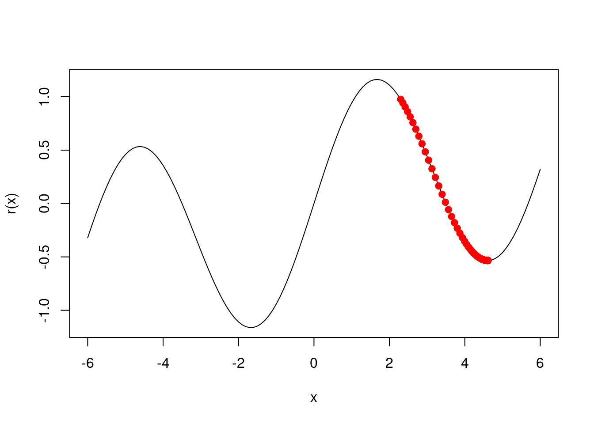
- Repeat with \(\beta^0 = 1.4\).
res <- gd(1.4)
res[length(res)]## [1] -1.670964plot(x, r(x), type = "l")
points(res, r(res), col = "red", pch = 19)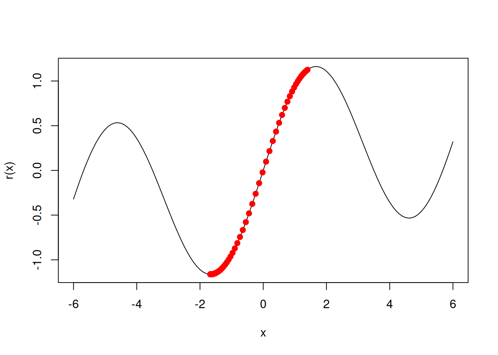
10.2.2 Question 7
Fit a neural network to the
Defaultdata. Use a single hidden layer with 10 units, and dropout regularization. Have a look at Labs 10.9.1–-10.9.2 for guidance. Compare the classification performance of your model with that of linear logistic regression.
library(keras)
dat <- ISLR2::Boston
x <- scale(model.matrix(crim ~ . - 1, data = dat))
n <- nrow(dat)
ntest <- trunc(n / 3)
testid <- sample(1:n, ntest)
y <- dat$crim
# logistic regression
lfit <- lm(crim ~ ., data = dat[-testid, ])
lpred <- predict(lfit, dat[testid, ])
with(dat[testid, ], mean(abs(lpred - crim)))## [1] 2.99129# keras
nn <- keras_model_sequential() |>
layer_dense(units = 10, activation = "relu", input_shape = ncol(x)) |>
layer_dropout(rate = 0.4) |>
layer_dense(units = 1)
compile(nn, loss = "mse",
optimizer = optimizer_rmsprop(),
metrics = list("mean_absolute_error")
)
history <- fit(nn,
x[-testid, ], y[-testid],
epochs = 100,
batch_size = 26,
validation_data = list(x[testid, ], y[testid]),
verbose = 0
)
plot(history, smooth = FALSE)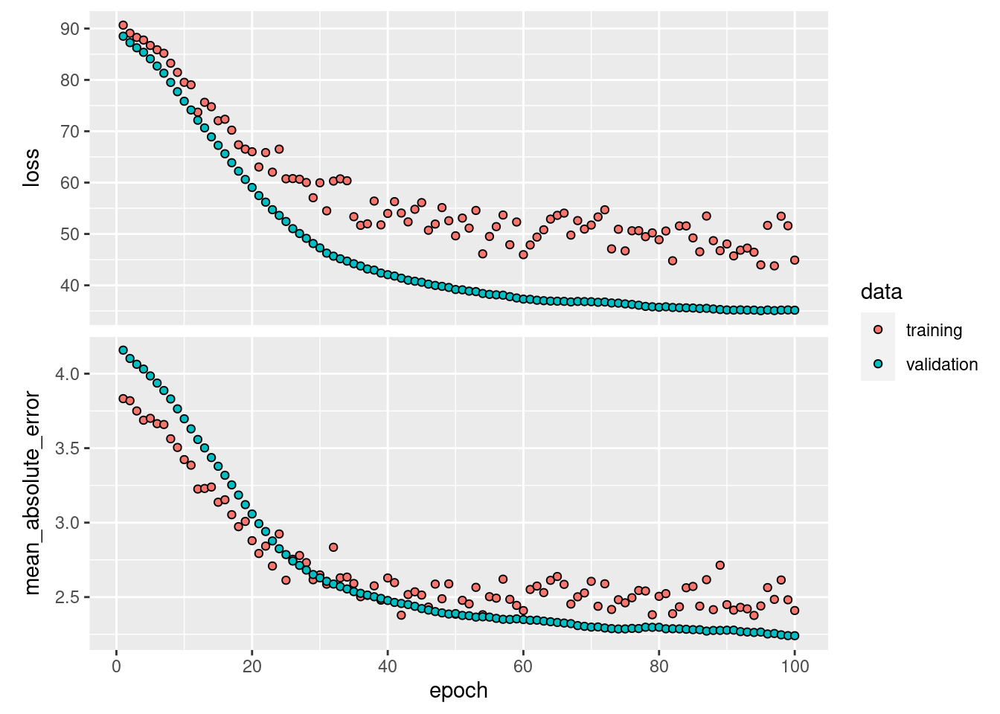
npred <- predict(nn, x[testid, ])## 6/6 - 0s - 80ms/epoch - 13ms/stepmean(abs(y[testid] - npred))## [1] 2.208451In this case, the neural network outperforms logistic regression having a lower absolute error rate on the test data.
10.2.3 Question 8
From your collection of personal photographs, pick 10 images of animals (such as dogs, cats, birds, farm animals, etc.). If the subject does not occupy a reasonable part of the image, then crop the image. Now use a pretrained image classification CNN as in Lab 10.9.4 to predict the class of each of your images, and report the probabilities for the top five predicted classes for each image.


 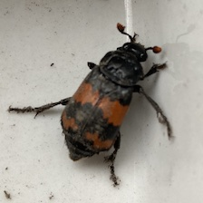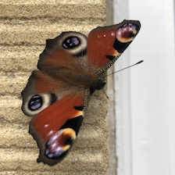
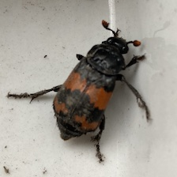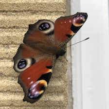
library(keras)
images <- list.files("images/animals")
x <- array(dim = c(length(images), 224, 224, 3))
for (i in seq_len(length(images))) {
img <- image_load(paste0("images/animals/", images[i]), target_size = c(224, 224))
x[i,,,] <- image_to_array(img)
}
model <- application_resnet50(weights = "imagenet")## Downloading data from https://storage.googleapis.com/tensorflow/keras-applications/resnet/resnet50_weights_tf_dim_ordering_tf_kernels.h5
##
8192/102967424 [..............................] - ETA: 0s
794624/102967424 [..............................] - ETA: 6s
4276224/102967424 [>.............................] - ETA: 2s
6438912/102967424 [>.............................] - ETA: 2s
10256384/102967424 [=>............................] - ETA: 1s
12206080/102967424 [==>...........................] - ETA: 1s
17719296/102967424 [====>.........................] - ETA: 1s
22528000/102967424 [=====>........................] - ETA: 1s
28950528/102967424 [=======>......................] - ETA: 1s
33562624/102967424 [========>.....................] - ETA: 1s
35446784/102967424 [=========>....................] - ETA: 1s
37445632/102967424 [=========>....................] - ETA: 1s
38461440/102967424 [==========>...................] - ETA: 1s
40951808/102967424 [==========>...................] - ETA: 1s
43220992/102967424 [===========>..................] - ETA: 1s
50339840/102967424 [=============>................] - ETA: 0s
55951360/102967424 [===============>..............] - ETA: 0s
59965440/102967424 [================>.............] - ETA: 0s
64872448/102967424 [=================>............] - ETA: 0s
72056832/102967424 [===================>..........] - ETA: 0s
75874304/102967424 [=====================>........] - ETA: 0s
76398592/102967424 [=====================>........] - ETA: 0s
79380480/102967424 [======================>.......] - ETA: 0s
79740928/102967424 [======================>.......] - ETA: 0s
80691200/102967424 [======================>.......] - ETA: 0s
82509824/102967424 [=======================>......] - ETA: 0s
83755008/102967424 [=======================>......] - ETA: 0s
85196800/102967424 [=======================>......] - ETA: 0s
86376448/102967424 [========================>.....] - ETA: 0s
87785472/102967424 [========================>.....] - ETA: 0s
90701824/102967424 [=========================>....] - ETA: 0s
92282880/102967424 [=========================>....] - ETA: 0s
99041280/102967424 [===========================>..] - ETA: 0s
102967424/102967424 [==============================] - 2s 0us/steppred <- model |>
predict(x) |>
imagenet_decode_predictions(top = 5)## 1/1 - 2s - 2s/epoch - 2s/step
## Downloading data from https://storage.googleapis.com/download.tensorflow.org/data/imagenet_class_index.json
##
8192/35363 [=====>........................] - ETA: 0s
35363/35363 [==============================] - 0s 0us/stepnames(pred) <- images
print(pred)## $bird.jpg
## class_name class_description score
## 1 n01819313 sulphur-crested_cockatoo 0.33546200
## 2 n01580077 jay 0.18020970
## 3 n02441942 weasel 0.08320857
## 4 n02058221 albatross 0.07002062
## 5 n01855672 goose 0.05195739
##
## $bird2.jpg
## class_name class_description score
## 1 n02006656 spoonbill 0.840428472
## 2 n02012849 crane 0.016258644
## 3 n01819313 sulphur-crested_cockatoo 0.009740725
## 4 n02007558 flamingo 0.007816143
## 5 n01667778 terrapin 0.007497453
##
## $bird3.jpg
## class_name class_description score
## 1 n01833805 hummingbird 0.9767876863
## 2 n02033041 dowitcher 0.0111254957
## 3 n02028035 redshank 0.0042764517
## 4 n02009229 little_blue_heron 0.0012727635
## 5 n02002724 black_stork 0.0008971388
##
## $bug.jpg
## class_name class_description score
## 1 n02190166 fly 0.67558527
## 2 n02167151 ground_beetle 0.10097039
## 3 n02172182 dung_beetle 0.05490864
## 4 n02169497 leaf_beetle 0.03541907
## 5 n02168699 long-horned_beetle 0.03515299
##
## $butterfly.jpg
## class_name class_description score
## 1 n02951585 can_opener 0.20600396
## 2 n03476684 hair_slide 0.09360597
## 3 n04074963 remote_control 0.06316849
## 4 n02110185 Siberian_husky 0.05179003
## 5 n02123597 Siamese_cat 0.03785338
##
## $butterfly2.jpg
## class_name class_description score
## 1 n02276258 admiral 9.999689e-01
## 2 n01580077 jay 1.388064e-05
## 3 n02277742 ringlet 1.235034e-05
## 4 n02279972 monarch 3.037841e-06
## 5 n02281787 lycaenid 1.261880e-06
##
## $elba.jpg
## class_name class_description score
## 1 n02085620 Chihuahua 0.29892060
## 2 n02091032 Italian_greyhound 0.20332736
## 3 n02109961 Eskimo_dog 0.08477223
## 4 n02086910 papillon 0.05140284
## 5 n02110185 Siberian_husky 0.05064525
##
## $hamish.jpg
## class_name class_description score
## 1 n02097209 standard_schnauzer 0.6361451745
## 2 n02097047 miniature_schnauzer 0.3450846076
## 3 n02097130 giant_schnauzer 0.0164217167
## 4 n02097298 Scotch_terrier 0.0019116012
## 5 n02096177 cairn 0.0002054324
##
## $poodle.jpg
## class_name class_description score
## 1 n02113799 standard_poodle 0.829671621
## 2 n02088094 Afghan_hound 0.074567690
## 3 n02113712 miniature_poodle 0.032005500
## 4 n02102973 Irish_water_spaniel 0.018583080
## 5 n02102318 cocker_spaniel 0.008629762
##
## $tortoise.jpg
## class_name class_description score
## 1 n04033995 quilt 0.28395903
## 2 n02110958 pug 0.15959541
## 3 n03188531 diaper 0.14018075
## 4 n02108915 French_bulldog 0.09364162
## 5 n04235860 sleeping_bag 0.0260839710.2.4 Question 9
Fit a lag-5 autoregressive model to the
NYSEdata, as described in the text and Lab 10.9.6. Refit the model with a 12-level factor representing the month. Does this factor improve the performance of the model?
Fitting the model as described in the text.
library(tidyverse)## ── Attaching core tidyverse packages ──────────────────────── tidyverse 2.0.0 ──
## ✔ dplyr 1.1.3 ✔ readr 2.1.4
## ✔ forcats 1.0.0 ✔ stringr 1.5.0
## ✔ ggplot2 3.4.3 ✔ tibble 3.2.1
## ✔ lubridate 1.9.2 ✔ tidyr 1.3.0
## ✔ purrr 1.0.2
## ── Conflicts ────────────────────────────────────────── tidyverse_conflicts() ──
## ✖ dplyr::compute() masks neuralnet::compute()
## ✖ dplyr::filter() masks stats::filter()
## ✖ dplyr::lag() masks stats::lag()
## ℹ Use the conflicted package (<http://conflicted.r-lib.org/>) to force all conflicts to become errorslibrary(ISLR2)
xdata <- data.matrix(NYSE[, c("DJ_return", "log_volume","log_volatility")])
istrain <- NYSE[, "train"]
xdata <- scale(xdata)
lagm <- function(x, k = 1) {
n <- nrow(x)
pad <- matrix(NA, k, ncol(x))
rbind(pad, x[1:(n - k), ])
}
arframe <- data.frame(
log_volume = xdata[, "log_volume"],
L1 = lagm(xdata, 1),
L2 = lagm(xdata, 2),
L3 = lagm(xdata, 3),
L4 = lagm(xdata, 4),
L5 = lagm(xdata, 5)
)
arframe <- arframe[-(1:5), ]
istrain <- istrain[-(1:5)]
arfit <- lm(log_volume ~ ., data = arframe[istrain, ])
arpred <- predict(arfit, arframe[!istrain, ])
V0 <- var(arframe[!istrain, "log_volume"])
1 - mean((arpred - arframe[!istrain, "log_volume"])^2) / V0## [1] 0.413223Now we add month (and work with tidyverse).
arframe$month = as.factor(str_match(NYSE$date, "-(\\d+)-")[,2])[-(1:5)]
arfit2 <- lm(log_volume ~ ., data = arframe[istrain, ])
arpred2 <- predict(arfit2, arframe[!istrain, ])
V0 <- var(arframe[!istrain, "log_volume"])
1 - mean((arpred2 - arframe[!istrain, "log_volume"])^2) / V0## [1] 0.4170418Adding month as a factor marginally improves the \(R^2\) of our model (from 0.413223 to 0.4170418). This is a significant improvement in fit and model 2 has a lower AIC.
anova(arfit, arfit2)## Analysis of Variance Table
##
## Model 1: log_volume ~ L1.DJ_return + L1.log_volume + L1.log_volatility +
## L2.DJ_return + L2.log_volume + L2.log_volatility + L3.DJ_return +
## L3.log_volume + L3.log_volatility + L4.DJ_return + L4.log_volume +
## L4.log_volatility + L5.DJ_return + L5.log_volume + L5.log_volatility
## Model 2: log_volume ~ L1.DJ_return + L1.log_volume + L1.log_volatility +
## L2.DJ_return + L2.log_volume + L2.log_volatility + L3.DJ_return +
## L3.log_volume + L3.log_volatility + L4.DJ_return + L4.log_volume +
## L4.log_volatility + L5.DJ_return + L5.log_volume + L5.log_volatility +
## month
## Res.Df RSS Df Sum of Sq F Pr(>F)
## 1 4260 1791.0
## 2 4249 1775.8 11 15.278 3.3234 0.000143 ***
## ---
## Signif. codes: 0 '***' 0.001 '**' 0.01 '*' 0.05 '.' 0.1 ' ' 1AIC(arfit, arfit2)## df AIC
## arfit 17 8447.663
## arfit2 28 8433.03110.2.5 Question 10
In Section 10.9.6, we showed how to fit a linear AR model to the
NYSEdata using thelm()function. However, we also mentioned that we can “flatten” the short sequences produced for the RNN model in order to fit a linear AR model. Use this latter approach to fit a linear AR model to the NYSE data. Compare the test \(R^2\) of this linear AR model to that of the linear AR model that we fit in the lab. What are the advantages/disadvantages of each approach?
The lm model is the same as that fit above:
arfit <- lm(log_volume ~ ., data = arframe[istrain, ])
arpred <- predict(arfit, arframe[!istrain, ])
V0 <- var(arframe[!istrain, "log_volume"])
1 - mean((arpred - arframe[!istrain, "log_volume"])^2) / V0## [1] 0.4170418Now we reshape the data for the RNN
n <- nrow(arframe)
xrnn <- data.matrix(arframe[, -1])
xrnn <- array(xrnn, c(n, 3, 5))
xrnn <- xrnn[, , 5:1]
xrnn <- aperm(xrnn, c(1, 3, 2))We can add a “flatten” layer to turn the reshaped data into a long vector of predictors resulting in a linear AR model.
model <- keras_model_sequential() |>
layer_flatten(input_shape = c(5, 3)) |>
layer_dense(units = 1)Now let’s fit this model.
model |>
compile(optimizer = optimizer_rmsprop(), loss = "mse")
history <- model |>
fit(
xrnn[istrain,, ],
arframe[istrain, "log_volume"],
batch_size = 64,
epochs = 200,
validation_data = list(xrnn[!istrain,, ], arframe[!istrain, "log_volume"]),
verbose = 0
)
plot(history, smooth = FALSE)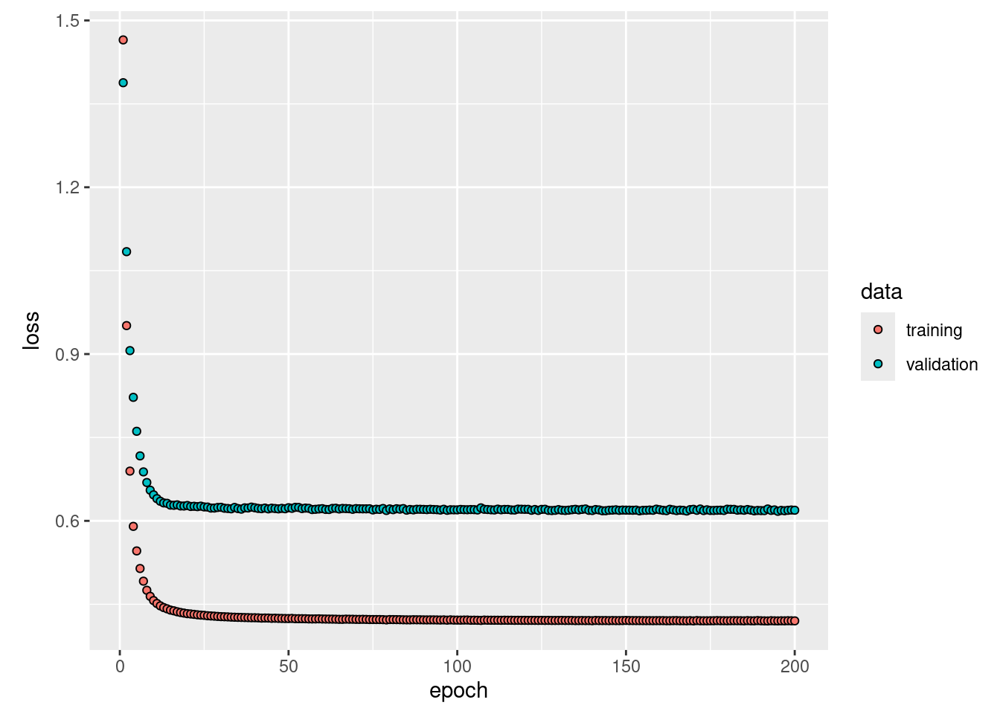
kpred <- predict(model, xrnn[!istrain,, ])## 56/56 - 0s - 83ms/epoch - 1ms/step1 - mean((kpred - arframe[!istrain, "log_volume"])^2) / V0## [1] 0.4122502Both models estimate the same number of coefficients/weights (16):
coef(arfit)## (Intercept) L1.DJ_return L1.log_volume L1.log_volatility
## 0.067916689 0.094410214 0.498673056 0.586274266
## L2.DJ_return L2.log_volume L2.log_volatility L3.DJ_return
## -0.027299158 0.036903027 -0.931509135 0.037995916
## L3.log_volume L3.log_volatility L4.DJ_return L4.log_volume
## 0.070312741 0.216160520 -0.004954842 0.117079461
## L4.log_volatility L5.DJ_return L5.log_volume L5.log_volatility
## -0.039752786 -0.029620296 0.096034795 0.144510264
## month02 month03 month04 month05
## -0.100003367 -0.143781381 -0.028242819 -0.131120579
## month06 month07 month08 month09
## -0.125993911 -0.141608808 -0.163030102 -0.018889698
## month10 month11 month12
## -0.017206826 -0.037298183 0.008361380model$get_weights()## [[1]]
## [,1]
## [1,] -0.029327272
## [2,] 0.103345163
## [3,] 0.102228619
## [4,] -0.004322919
## [5,] 0.117159531
## [6,] 0.067508325
## [7,] 0.036995903
## [8,] 0.078570746
## [9,] 0.123983733
## [10,] -0.027677640
## [11,] 0.041501138
## [12,] -0.887193859
## [13,] 0.094431937
## [14,] 0.508295298
## [15,] 0.562657773
##
## [[2]]
## [1] -0.003215878The flattened RNN has a lower \(R^2\) on the test data than our lm model
above. The lm model is quicker to fit and conceptually simpler also
giving us the ability to inspect the coefficients for different variables.
The flattened RNN is regularized to some extent as data are processed in batches.
10.2.6 Question 11
Repeat the previous exercise, but now fit a nonlinear AR model by “flattening” the short sequences produced for the RNN model.
From the book:
To fit a nonlinear AR model, we could add in a hidden layer.
xfun::cache_rds({
model <- keras_model_sequential() |>
layer_flatten(input_shape = c(5, 3)) |>
layer_dense(units = 32, activation = "relu") |>
layer_dropout(rate = 0.4) |>
layer_dense(units = 1)
model |> compile(
loss = "mse",
optimizer = optimizer_rmsprop(),
metrics = "mse"
)
history <- model |>
fit(
xrnn[istrain,, ],
arframe[istrain, "log_volume"],
batch_size = 64,
epochs = 200,
validation_data = list(xrnn[!istrain,, ], arframe[!istrain, "log_volume"]),
verbose = 0
)
plot(history, smooth = FALSE, metrics = "mse")
kpred <- predict(model, xrnn[!istrain,, ])
1 - mean((kpred - arframe[!istrain, "log_volume"])^2) / V0
})## 56/56 - 0s - 94ms/epoch - 2ms/step## [1] 0.427145This approach improves our \(R^2\) over the linear model above.
10.2.7 Question 12
Consider the RNN fit to the
NYSEdata in Section 10.9.6. Modify the code to allow inclusion of the variableday_of_week, and fit the RNN. Compute the test \(R^2\).
To accomplish this, I’ll include day of the week as one of the lagged variables in the RNN. Thus, our input for each observation will be 4 x 5 (rather than 3 x 5).
xfun::cache_rds({
xdata <- data.matrix(
NYSE[, c("day_of_week", "DJ_return", "log_volume","log_volatility")]
)
istrain <- NYSE[, "train"]
xdata <- scale(xdata)
arframe <- data.frame(
log_volume = xdata[, "log_volume"],
L1 = lagm(xdata, 1),
L2 = lagm(xdata, 2),
L3 = lagm(xdata, 3),
L4 = lagm(xdata, 4),
L5 = lagm(xdata, 5)
)
arframe <- arframe[-(1:5), ]
istrain <- istrain[-(1:5)]
n <- nrow(arframe)
xrnn <- data.matrix(arframe[, -1])
xrnn <- array(xrnn, c(n, 4, 5))
xrnn <- xrnn[,, 5:1]
xrnn <- aperm(xrnn, c(1, 3, 2))
dim(xrnn)
model <- keras_model_sequential() |>
layer_simple_rnn(units = 12,
input_shape = list(5, 4),
dropout = 0.1,
recurrent_dropout = 0.1
) |>
layer_dense(units = 1)
model |> compile(optimizer = optimizer_rmsprop(), loss = "mse")
history <- model |>
fit(
xrnn[istrain,, ],
arframe[istrain, "log_volume"],
batch_size = 64,
epochs = 200,
validation_data = list(xrnn[!istrain,, ], arframe[!istrain, "log_volume"]),
verbose = 0
)
kpred <- predict(model, xrnn[!istrain,, ])
1 - mean((kpred - arframe[!istrain, "log_volume"])^2) / V0
})## 56/56 - 0s - 215ms/epoch - 4ms/step## [1] 0.445066910.2.8 Question 13
Repeat the analysis of Lab 10.9.5 on the
IMDbdata using a similarly structured neural network. There we used a dictionary of size 10,000. Consider the effects of varying the dictionary size. Try the values 1000, 3000, 5000, and 10,000, and compare the results.
xfun::cache_rds({
library(knitr)
accuracy <- c()
for(max_features in c(1000, 3000, 5000, 10000)) {
imdb <- dataset_imdb(num_words = max_features)
c(c(x_train, y_train), c(x_test, y_test)) %<-% imdb
maxlen <- 500
x_train <- pad_sequences(x_train, maxlen = maxlen)
x_test <- pad_sequences(x_test, maxlen = maxlen)
model <- keras_model_sequential() |>
layer_embedding(input_dim = max_features, output_dim = 32) |>
layer_lstm(units = 32) |>
layer_dense(units = 1, activation = "sigmoid")
model |> compile(
optimizer = "rmsprop",
loss = "binary_crossentropy",
metrics = "acc"
)
history <- fit(model, x_train, y_train,
epochs = 10,
batch_size = 128,
validation_data = list(x_test, y_test),
verbose = 1
)
predy <- predict(model, x_test) > 0.5
accuracy <- c(accuracy, mean(abs(y_test == as.numeric(predy))))
}
tibble(
"Max Features" = c(1000, 3000, 5000, 10000),
"Accuracy" = accuracy
) |>
kable()
})## Downloading data from https://storage.googleapis.com/tensorflow/tf-keras-datasets/imdb.npz
##
8192/17464789 [..............................] - ETA: 0s
1835008/17464789 [==>...........................] - ETA: 0s
8101888/17464789 [============>.................] - ETA: 0s
8396800/17464789 [=============>................] - ETA: 0s
14950400/17464789 [========================>.....] - ETA: 0s
17464789/17464789 [==============================] - 0s 0us/step
## Epoch 1/10
##
1/196 [..............................] - ETA: 7:18 - loss: 0.6934 - acc: 0.4688
2/196 [..............................] - ETA: 38s - loss: 0.6936 - acc: 0.4883
3/196 [..............................] - ETA: 37s - loss: 0.6940 - acc: 0.4766
4/196 [..............................] - ETA: 37s - loss: 0.6937 - acc: 0.4805
5/196 [..............................] - ETA: 36s - loss: 0.6936 - acc: 0.4781
6/196 [..............................] - ETA: 35s - loss: 0.6935 - acc: 0.4818
7/196 [>.............................] - ETA: 35s - loss: 0.6934 - acc: 0.4888
8/196 [>.............................] - ETA: 35s - loss: 0.6933 - acc: 0.4902
9/196 [>.............................] - ETA: 34s - loss: 0.6932 - acc: 0.4931
10/196 [>.............................] - ETA: 34s - loss: 0.6931 - acc: 0.4930
11/196 [>.............................] - ETA: 34s - loss: 0.6932 - acc: 0.4929
12/196 [>.............................] - ETA: 34s - loss: 0.6932 - acc: 0.4948
13/196 [>.............................] - ETA: 33s - loss: 0.6932 - acc: 0.4970
14/196 [=>............................] - ETA: 33s - loss: 0.6931 - acc: 0.4972
15/196 [=>............................] - ETA: 33s - loss: 0.6930 - acc: 0.5026
16/196 [=>............................] - ETA: 33s - loss: 0.6930 - acc: 0.4990
17/196 [=>............................] - ETA: 32s - loss: 0.6931 - acc: 0.4954
18/196 [=>............................] - ETA: 32s - loss: 0.6930 - acc: 0.5026
19/196 [=>............................] - ETA: 32s - loss: 0.6930 - acc: 0.5029
20/196 [==>...........................] - ETA: 32s - loss: 0.6931 - acc: 0.4992
21/196 [==>...........................] - ETA: 32s - loss: 0.6929 - acc: 0.5041
22/196 [==>...........................] - ETA: 31s - loss: 0.6929 - acc: 0.5060
23/196 [==>...........................] - ETA: 31s - loss: 0.6928 - acc: 0.5088
24/196 [==>...........................] - ETA: 31s - loss: 0.6927 - acc: 0.5081
25/196 [==>...........................] - ETA: 31s - loss: 0.6928 - acc: 0.5066
26/196 [==>...........................] - ETA: 31s - loss: 0.6928 - acc: 0.5063
27/196 [===>..........................] - ETA: 30s - loss: 0.6927 - acc: 0.5098
28/196 [===>..........................] - ETA: 30s - loss: 0.6927 - acc: 0.5078
29/196 [===>..........................] - ETA: 30s - loss: 0.6927 - acc: 0.5102
30/196 [===>..........................] - ETA: 30s - loss: 0.6927 - acc: 0.5109
31/196 [===>..........................] - ETA: 30s - loss: 0.6926 - acc: 0.5118
32/196 [===>..........................] - ETA: 30s - loss: 0.6926 - acc: 0.5129
33/196 [====>.........................] - ETA: 29s - loss: 0.6926 - acc: 0.5128
34/196 [====>.........................] - ETA: 29s - loss: 0.6926 - acc: 0.5126
35/196 [====>.........................] - ETA: 29s - loss: 0.6925 - acc: 0.5167
36/196 [====>.........................] - ETA: 29s - loss: 0.6924 - acc: 0.5204
37/196 [====>.........................] - ETA: 29s - loss: 0.6924 - acc: 0.5226
38/196 [====>.........................] - ETA: 29s - loss: 0.6924 - acc: 0.5206
39/196 [====>.........................] - ETA: 28s - loss: 0.6924 - acc: 0.5228
40/196 [=====>........................] - ETA: 28s - loss: 0.6923 - acc: 0.5248
41/196 [=====>........................] - ETA: 28s - loss: 0.6922 - acc: 0.5265
42/196 [=====>........................] - ETA: 28s - loss: 0.6923 - acc: 0.5260
43/196 [=====>........................] - ETA: 28s - loss: 0.6922 - acc: 0.5271
44/196 [=====>........................] - ETA: 28s - loss: 0.6922 - acc: 0.5259
45/196 [=====>........................] - ETA: 27s - loss: 0.6921 - acc: 0.5281
46/196 [======>.......................] - ETA: 27s - loss: 0.6921 - acc: 0.5307
47/196 [======>.......................] - ETA: 27s - loss: 0.6920 - acc: 0.5326
48/196 [======>.......................] - ETA: 27s - loss: 0.6919 - acc: 0.5353
49/196 [======>.......................] - ETA: 27s - loss: 0.6918 - acc: 0.5370
50/196 [======>.......................] - ETA: 27s - loss: 0.6917 - acc: 0.5375
51/196 [======>.......................] - ETA: 26s - loss: 0.6915 - acc: 0.5398
52/196 [======>.......................] - ETA: 26s - loss: 0.6915 - acc: 0.5380
53/196 [=======>......................] - ETA: 26s - loss: 0.6915 - acc: 0.5374
54/196 [=======>......................] - ETA: 26s - loss: 0.6915 - acc: 0.5376
55/196 [=======>......................] - ETA: 26s - loss: 0.6915 - acc: 0.5366
56/196 [=======>......................] - ETA: 25s - loss: 0.6915 - acc: 0.5357
57/196 [=======>......................] - ETA: 25s - loss: 0.6915 - acc: 0.5363
58/196 [=======>......................] - ETA: 25s - loss: 0.6914 - acc: 0.5370
59/196 [========>.....................] - ETA: 25s - loss: 0.6914 - acc: 0.5372
60/196 [========>.....................] - ETA: 25s - loss: 0.6913 - acc: 0.5380
61/196 [========>.....................] - ETA: 24s - loss: 0.6912 - acc: 0.5403
62/196 [========>.....................] - ETA: 24s - loss: 0.6911 - acc: 0.5412
63/196 [========>.....................] - ETA: 24s - loss: 0.6910 - acc: 0.5415
64/196 [========>.....................] - ETA: 24s - loss: 0.6909 - acc: 0.5420
65/196 [========>.....................] - ETA: 24s - loss: 0.6909 - acc: 0.5423
66/196 [=========>....................] - ETA: 23s - loss: 0.6907 - acc: 0.5449
67/196 [=========>....................] - ETA: 23s - loss: 0.6905 - acc: 0.5457
68/196 [=========>....................] - ETA: 23s - loss: 0.6904 - acc: 0.5455
69/196 [=========>....................] - ETA: 23s - loss: 0.6904 - acc: 0.5455
70/196 [=========>....................] - ETA: 23s - loss: 0.6902 - acc: 0.5482
71/196 [=========>....................] - ETA: 23s - loss: 0.6901 - acc: 0.5490
72/196 [==========>...................] - ETA: 22s - loss: 0.6898 - acc: 0.5507
73/196 [==========>...................] - ETA: 22s - loss: 0.6896 - acc: 0.5520
74/196 [==========>...................] - ETA: 22s - loss: 0.6894 - acc: 0.5522
75/196 [==========>...................] - ETA: 22s - loss: 0.6891 - acc: 0.5540
76/196 [==========>...................] - ETA: 22s - loss: 0.6891 - acc: 0.5538
77/196 [==========>...................] - ETA: 21s - loss: 0.6887 - acc: 0.5555
78/196 [==========>...................] - ETA: 21s - loss: 0.6883 - acc: 0.5577
79/196 [===========>..................] - ETA: 21s - loss: 0.6880 - acc: 0.5580
80/196 [===========>..................] - ETA: 21s - loss: 0.6874 - acc: 0.5599
81/196 [===========>..................] - ETA: 21s - loss: 0.6867 - acc: 0.5603
82/196 [===========>..................] - ETA: 21s - loss: 0.6861 - acc: 0.5616
83/196 [===========>..................] - ETA: 20s - loss: 0.6856 - acc: 0.5627
84/196 [===========>..................] - ETA: 20s - loss: 0.6851 - acc: 0.5635
85/196 [============>.................] - ETA: 20s - loss: 0.6845 - acc: 0.5650
86/196 [============>.................] - ETA: 20s - loss: 0.6837 - acc: 0.5662
87/196 [============>.................] - ETA: 20s - loss: 0.6837 - acc: 0.5656
88/196 [============>.................] - ETA: 20s - loss: 0.6832 - acc: 0.5661
89/196 [============>.................] - ETA: 19s - loss: 0.6827 - acc: 0.5680
90/196 [============>.................] - ETA: 19s - loss: 0.6819 - acc: 0.5691
91/196 [============>.................] - ETA: 19s - loss: 0.6811 - acc: 0.5707
92/196 [=============>................] - ETA: 19s - loss: 0.6804 - acc: 0.5714
93/196 [=============>................] - ETA: 19s - loss: 0.6800 - acc: 0.5725
94/196 [=============>................] - ETA: 18s - loss: 0.6790 - acc: 0.5746
95/196 [=============>................] - ETA: 18s - loss: 0.6780 - acc: 0.5764
96/196 [=============>................] - ETA: 18s - loss: 0.6773 - acc: 0.5768
97/196 [=============>................] - ETA: 18s - loss: 0.6766 - acc: 0.5780
98/196 [==============>...............] - ETA: 18s - loss: 0.6758 - acc: 0.5792
99/196 [==============>...............] - ETA: 17s - loss: 0.6754 - acc: 0.5795
100/196 [==============>...............] - ETA: 17s - loss: 0.6749 - acc: 0.5809
101/196 [==============>...............] - ETA: 17s - loss: 0.6742 - acc: 0.5821
102/196 [==============>...............] - ETA: 17s - loss: 0.6734 - acc: 0.5839
103/196 [==============>...............] - ETA: 17s - loss: 0.6727 - acc: 0.5850
104/196 [==============>...............] - ETA: 16s - loss: 0.6718 - acc: 0.5868
105/196 [===============>..............] - ETA: 16s - loss: 0.6705 - acc: 0.5888
106/196 [===============>..............] - ETA: 16s - loss: 0.6698 - acc: 0.5895
107/196 [===============>..............] - ETA: 16s - loss: 0.6688 - acc: 0.5905
108/196 [===============>..............] - ETA: 16s - loss: 0.6675 - acc: 0.5920
109/196 [===============>..............] - ETA: 16s - loss: 0.6668 - acc: 0.5927
110/196 [===============>..............] - ETA: 15s - loss: 0.6664 - acc: 0.5935
111/196 [===============>..............] - ETA: 15s - loss: 0.6657 - acc: 0.5951
112/196 [================>.............] - ETA: 15s - loss: 0.6642 - acc: 0.5972
113/196 [================>.............] - ETA: 15s - loss: 0.6634 - acc: 0.5984
114/196 [================>.............] - ETA: 15s - loss: 0.6622 - acc: 0.5998
115/196 [================>.............] - ETA: 14s - loss: 0.6613 - acc: 0.6007
116/196 [================>.............] - ETA: 14s - loss: 0.6598 - acc: 0.6026
117/196 [================>.............] - ETA: 14s - loss: 0.6595 - acc: 0.6034
118/196 [=================>............] - ETA: 14s - loss: 0.6583 - acc: 0.6045
119/196 [=================>............] - ETA: 14s - loss: 0.6574 - acc: 0.6060
120/196 [=================>............] - ETA: 14s - loss: 0.6565 - acc: 0.6072
121/196 [=================>............] - ETA: 13s - loss: 0.6555 - acc: 0.6085
122/196 [=================>............] - ETA: 13s - loss: 0.6545 - acc: 0.6099
123/196 [=================>............] - ETA: 13s - loss: 0.6542 - acc: 0.6102
124/196 [=================>............] - ETA: 13s - loss: 0.6532 - acc: 0.6111
125/196 [==================>...........] - ETA: 13s - loss: 0.6522 - acc: 0.6123
126/196 [==================>...........] - ETA: 12s - loss: 0.6513 - acc: 0.6133
127/196 [==================>...........] - ETA: 12s - loss: 0.6501 - acc: 0.6146
128/196 [==================>...........] - ETA: 12s - loss: 0.6492 - acc: 0.6157
129/196 [==================>...........] - ETA: 12s - loss: 0.6479 - acc: 0.6171
130/196 [==================>...........] - ETA: 12s - loss: 0.6474 - acc: 0.6179
131/196 [===================>..........] - ETA: 12s - loss: 0.6470 - acc: 0.6179
132/196 [===================>..........] - ETA: 11s - loss: 0.6463 - acc: 0.6191
133/196 [===================>..........] - ETA: 11s - loss: 0.6450 - acc: 0.6207
134/196 [===================>..........] - ETA: 11s - loss: 0.6441 - acc: 0.6219
135/196 [===================>..........] - ETA: 11s - loss: 0.6428 - acc: 0.6230
136/196 [===================>..........] - ETA: 11s - loss: 0.6422 - acc: 0.6237
137/196 [===================>..........] - ETA: 10s - loss: 0.6412 - acc: 0.6248
138/196 [====================>.........] - ETA: 10s - loss: 0.6404 - acc: 0.6253
139/196 [====================>.........] - ETA: 10s - loss: 0.6394 - acc: 0.6266
140/196 [====================>.........] - ETA: 10s - loss: 0.6387 - acc: 0.6275
141/196 [====================>.........] - ETA: 10s - loss: 0.6376 - acc: 0.6288
142/196 [====================>.........] - ETA: 9s - loss: 0.6369 - acc: 0.6295
143/196 [====================>.........] - ETA: 9s - loss: 0.6359 - acc: 0.6305
144/196 [=====================>........] - ETA: 9s - loss: 0.6346 - acc: 0.6317
145/196 [=====================>........] - ETA: 9s - loss: 0.6337 - acc: 0.6325
146/196 [=====================>........] - ETA: 9s - loss: 0.6336 - acc: 0.6326
147/196 [=====================>........] - ETA: 9s - loss: 0.6328 - acc: 0.6335
148/196 [=====================>........] - ETA: 8s - loss: 0.6321 - acc: 0.6342
149/196 [=====================>........] - ETA: 8s - loss: 0.6311 - acc: 0.6352
150/196 [=====================>........] - ETA: 8s - loss: 0.6300 - acc: 0.6361
151/196 [======================>.......] - ETA: 8s - loss: 0.6299 - acc: 0.6365
152/196 [======================>.......] - ETA: 8s - loss: 0.6292 - acc: 0.6377
153/196 [======================>.......] - ETA: 7s - loss: 0.6284 - acc: 0.6387
154/196 [======================>.......] - ETA: 7s - loss: 0.6274 - acc: 0.6399
155/196 [======================>.......] - ETA: 7s - loss: 0.6263 - acc: 0.6408
156/196 [======================>.......] - ETA: 7s - loss: 0.6252 - acc: 0.6418
157/196 [=======================>......] - ETA: 7s - loss: 0.6248 - acc: 0.6419
158/196 [=======================>......] - ETA: 7s - loss: 0.6240 - acc: 0.6428
159/196 [=======================>......] - ETA: 6s - loss: 0.6232 - acc: 0.6437
160/196 [=======================>......] - ETA: 6s - loss: 0.6223 - acc: 0.6444
161/196 [=======================>......] - ETA: 6s - loss: 0.6214 - acc: 0.6453
162/196 [=======================>......] - ETA: 6s - loss: 0.6201 - acc: 0.6464
163/196 [=======================>......] - ETA: 6s - loss: 0.6195 - acc: 0.6471
164/196 [========================>.....] - ETA: 5s - loss: 0.6188 - acc: 0.6477
165/196 [========================>.....] - ETA: 5s - loss: 0.6183 - acc: 0.6482
166/196 [========================>.....] - ETA: 5s - loss: 0.6180 - acc: 0.6484
167/196 [========================>.....] - ETA: 5s - loss: 0.6175 - acc: 0.6491
168/196 [========================>.....] - ETA: 5s - loss: 0.6168 - acc: 0.6501
169/196 [========================>.....] - ETA: 4s - loss: 0.6161 - acc: 0.6509
170/196 [=========================>....] - ETA: 4s - loss: 0.6152 - acc: 0.6518
171/196 [=========================>....] - ETA: 4s - loss: 0.6142 - acc: 0.6529
172/196 [=========================>....] - ETA: 4s - loss: 0.6134 - acc: 0.6535
173/196 [=========================>....] - ETA: 4s - loss: 0.6124 - acc: 0.6545
174/196 [=========================>....] - ETA: 4s - loss: 0.6117 - acc: 0.6552
175/196 [=========================>....] - ETA: 3s - loss: 0.6110 - acc: 0.6558
176/196 [=========================>....] - ETA: 3s - loss: 0.6103 - acc: 0.6566
177/196 [==========================>...] - ETA: 3s - loss: 0.6094 - acc: 0.6574
178/196 [==========================>...] - ETA: 3s - loss: 0.6085 - acc: 0.6580
179/196 [==========================>...] - ETA: 3s - loss: 0.6072 - acc: 0.6591
180/196 [==========================>...] - ETA: 2s - loss: 0.6065 - acc: 0.6596
181/196 [==========================>...] - ETA: 2s - loss: 0.6057 - acc: 0.6605
182/196 [==========================>...] - ETA: 2s - loss: 0.6049 - acc: 0.6615
183/196 [===========================>..] - ETA: 2s - loss: 0.6044 - acc: 0.6620
184/196 [===========================>..] - ETA: 2s - loss: 0.6035 - acc: 0.6628
185/196 [===========================>..] - ETA: 2s - loss: 0.6025 - acc: 0.6638
186/196 [===========================>..] - ETA: 1s - loss: 0.6018 - acc: 0.6644
187/196 [===========================>..] - ETA: 1s - loss: 0.6010 - acc: 0.6650
188/196 [===========================>..] - ETA: 1s - loss: 0.5999 - acc: 0.6663
189/196 [===========================>..] - ETA: 1s - loss: 0.5992 - acc: 0.6667
190/196 [============================>.] - ETA: 1s - loss: 0.5982 - acc: 0.6677
191/196 [============================>.] - ETA: 0s - loss: 0.5975 - acc: 0.6683
192/196 [============================>.] - ETA: 0s - loss: 0.5969 - acc: 0.6690
193/196 [============================>.] - ETA: 0s - loss: 0.5964 - acc: 0.6694
194/196 [============================>.] - ETA: 0s - loss: 0.5955 - acc: 0.6703
195/196 [============================>.] - ETA: 0s - loss: 0.5942 - acc: 0.6716
196/196 [==============================] - ETA: 0s - loss: 0.5938 - acc: 0.6719
196/196 [==============================] - 49s 242ms/step - loss: 0.5938 - acc: 0.6719 - val_loss: 0.4797 - val_acc: 0.7955
## Epoch 2/10
##
1/196 [..............................] - ETA: 35s - loss: 0.4321 - acc: 0.8438
2/196 [..............................] - ETA: 35s - loss: 0.4745 - acc: 0.7891
3/196 [..............................] - ETA: 34s - loss: 0.4730 - acc: 0.7891
4/196 [..............................] - ETA: 34s - loss: 0.4634 - acc: 0.7930
5/196 [..............................] - ETA: 34s - loss: 0.4553 - acc: 0.8000
6/196 [..............................] - ETA: 34s - loss: 0.4422 - acc: 0.8086
7/196 [>.............................] - ETA: 34s - loss: 0.4411 - acc: 0.8080
8/196 [>.............................] - ETA: 33s - loss: 0.4469 - acc: 0.8037
9/196 [>.............................] - ETA: 33s - loss: 0.4420 - acc: 0.8056
10/196 [>.............................] - ETA: 33s - loss: 0.4390 - acc: 0.8078
11/196 [>.............................] - ETA: 33s - loss: 0.4375 - acc: 0.8089
12/196 [>.............................] - ETA: 33s - loss: 0.4327 - acc: 0.8145
13/196 [>.............................] - ETA: 33s - loss: 0.4247 - acc: 0.8197
14/196 [=>............................] - ETA: 32s - loss: 0.4308 - acc: 0.8153
15/196 [=>............................] - ETA: 32s - loss: 0.4296 - acc: 0.8172
16/196 [=>............................] - ETA: 32s - loss: 0.4281 - acc: 0.8174
17/196 [=>............................] - ETA: 32s - loss: 0.4272 - acc: 0.8176
18/196 [=>............................] - ETA: 32s - loss: 0.4279 - acc: 0.8190
19/196 [=>............................] - ETA: 32s - loss: 0.4267 - acc: 0.8187
20/196 [==>...........................] - ETA: 31s - loss: 0.4257 - acc: 0.8191
21/196 [==>...........................] - ETA: 31s - loss: 0.4258 - acc: 0.8188
22/196 [==>...........................] - ETA: 31s - loss: 0.4318 - acc: 0.8139
23/196 [==>...........................] - ETA: 31s - loss: 0.4325 - acc: 0.8149
24/196 [==>...........................] - ETA: 31s - loss: 0.4315 - acc: 0.8164
25/196 [==>...........................] - ETA: 31s - loss: 0.4297 - acc: 0.8166
26/196 [==>...........................] - ETA: 31s - loss: 0.4276 - acc: 0.8179
27/196 [===>..........................] - ETA: 30s - loss: 0.4268 - acc: 0.8186
28/196 [===>..........................] - ETA: 30s - loss: 0.4265 - acc: 0.8175
29/196 [===>..........................] - ETA: 30s - loss: 0.4286 - acc: 0.8155
30/196 [===>..........................] - ETA: 30s - loss: 0.4308 - acc: 0.8141
31/196 [===>..........................] - ETA: 30s - loss: 0.4303 - acc: 0.8140
32/196 [===>..........................] - ETA: 29s - loss: 0.4280 - acc: 0.8159
33/196 [====>.........................] - ETA: 29s - loss: 0.4290 - acc: 0.8142
34/196 [====>.........................] - ETA: 29s - loss: 0.4300 - acc: 0.8132
35/196 [====>.........................] - ETA: 29s - loss: 0.4301 - acc: 0.8132
36/196 [====>.........................] - ETA: 29s - loss: 0.4285 - acc: 0.8145
37/196 [====>.........................] - ETA: 28s - loss: 0.4285 - acc: 0.8146
38/196 [====>.........................] - ETA: 28s - loss: 0.4307 - acc: 0.8125
39/196 [====>.........................] - ETA: 28s - loss: 0.4316 - acc: 0.8115
40/196 [=====>........................] - ETA: 28s - loss: 0.4319 - acc: 0.8113
41/196 [=====>........................] - ETA: 28s - loss: 0.4299 - acc: 0.8135
42/196 [=====>........................] - ETA: 28s - loss: 0.4294 - acc: 0.8138
43/196 [=====>........................] - ETA: 27s - loss: 0.4289 - acc: 0.8138
44/196 [=====>........................] - ETA: 27s - loss: 0.4273 - acc: 0.8141
45/196 [=====>........................] - ETA: 27s - loss: 0.4289 - acc: 0.8135
46/196 [======>.......................] - ETA: 27s - loss: 0.4284 - acc: 0.8137
47/196 [======>.......................] - ETA: 27s - loss: 0.4290 - acc: 0.8137
48/196 [======>.......................] - ETA: 26s - loss: 0.4277 - acc: 0.8141
49/196 [======>.......................] - ETA: 26s - loss: 0.4274 - acc: 0.8147
50/196 [======>.......................] - ETA: 26s - loss: 0.4264 - acc: 0.8158
51/196 [======>.......................] - ETA: 26s - loss: 0.4250 - acc: 0.8165
52/196 [======>.......................] - ETA: 26s - loss: 0.4312 - acc: 0.8136
53/196 [=======>......................] - ETA: 25s - loss: 0.4328 - acc: 0.8131
54/196 [=======>......................] - ETA: 25s - loss: 0.4317 - acc: 0.8138
55/196 [=======>......................] - ETA: 25s - loss: 0.4313 - acc: 0.8142
56/196 [=======>......................] - ETA: 25s - loss: 0.4303 - acc: 0.8152
57/196 [=======>......................] - ETA: 25s - loss: 0.4303 - acc: 0.8152
58/196 [=======>......................] - ETA: 25s - loss: 0.4286 - acc: 0.8163
59/196 [========>.....................] - ETA: 24s - loss: 0.4292 - acc: 0.8159
60/196 [========>.....................] - ETA: 24s - loss: 0.4290 - acc: 0.8161
61/196 [========>.....................] - ETA: 24s - loss: 0.4293 - acc: 0.8160
62/196 [========>.....................] - ETA: 24s - loss: 0.4283 - acc: 0.8168
63/196 [========>.....................] - ETA: 24s - loss: 0.4285 - acc: 0.8161
64/196 [========>.....................] - ETA: 23s - loss: 0.4284 - acc: 0.8160
65/196 [========>.....................] - ETA: 23s - loss: 0.4278 - acc: 0.8162
66/196 [=========>....................] - ETA: 23s - loss: 0.4276 - acc: 0.8163
67/196 [=========>....................] - ETA: 23s - loss: 0.4277 - acc: 0.8160
68/196 [=========>....................] - ETA: 23s - loss: 0.4266 - acc: 0.8172
69/196 [=========>....................] - ETA: 23s - loss: 0.4244 - acc: 0.8184
70/196 [=========>....................] - ETA: 22s - loss: 0.4250 - acc: 0.8182
71/196 [=========>....................] - ETA: 22s - loss: 0.4253 - acc: 0.8175
72/196 [==========>...................] - ETA: 22s - loss: 0.4247 - acc: 0.8179
73/196 [==========>...................] - ETA: 22s - loss: 0.4252 - acc: 0.8173
74/196 [==========>...................] - ETA: 22s - loss: 0.4248 - acc: 0.8175
75/196 [==========>...................] - ETA: 21s - loss: 0.4239 - acc: 0.8178
76/196 [==========>...................] - ETA: 21s - loss: 0.4243 - acc: 0.8179
77/196 [==========>...................] - ETA: 21s - loss: 0.4252 - acc: 0.8174
78/196 [==========>...................] - ETA: 21s - loss: 0.4254 - acc: 0.8171
79/196 [===========>..................] - ETA: 21s - loss: 0.4250 - acc: 0.8173
80/196 [===========>..................] - ETA: 21s - loss: 0.4238 - acc: 0.8179
81/196 [===========>..................] - ETA: 20s - loss: 0.4237 - acc: 0.8181
82/196 [===========>..................] - ETA: 20s - loss: 0.4234 - acc: 0.8180
83/196 [===========>..................] - ETA: 20s - loss: 0.4236 - acc: 0.8178
84/196 [===========>..................] - ETA: 20s - loss: 0.4240 - acc: 0.8172
85/196 [============>.................] - ETA: 20s - loss: 0.4233 - acc: 0.8176
86/196 [============>.................] - ETA: 19s - loss: 0.4213 - acc: 0.8186
87/196 [============>.................] - ETA: 19s - loss: 0.4207 - acc: 0.8192
88/196 [============>.................] - ETA: 19s - loss: 0.4241 - acc: 0.8169
89/196 [============>.................] - ETA: 19s - loss: 0.4238 - acc: 0.8170
90/196 [============>.................] - ETA: 19s - loss: 0.4244 - acc: 0.8165
91/196 [============>.................] - ETA: 19s - loss: 0.4237 - acc: 0.8171
92/196 [=============>................] - ETA: 18s - loss: 0.4234 - acc: 0.8175
93/196 [=============>................] - ETA: 18s - loss: 0.4230 - acc: 0.8176
94/196 [=============>................] - ETA: 18s - loss: 0.4228 - acc: 0.8180
95/196 [=============>................] - ETA: 18s - loss: 0.4224 - acc: 0.8182
96/196 [=============>................] - ETA: 18s - loss: 0.4217 - acc: 0.8185
97/196 [=============>................] - ETA: 17s - loss: 0.4213 - acc: 0.8189
98/196 [==============>...............] - ETA: 17s - loss: 0.4209 - acc: 0.8194
99/196 [==============>...............] - ETA: 17s - loss: 0.4207 - acc: 0.8196
100/196 [==============>...............] - ETA: 17s - loss: 0.4194 - acc: 0.8200
101/196 [==============>...............] - ETA: 17s - loss: 0.4183 - acc: 0.8208
102/196 [==============>...............] - ETA: 17s - loss: 0.4176 - acc: 0.8213
103/196 [==============>...............] - ETA: 16s - loss: 0.4184 - acc: 0.8206
104/196 [==============>...............] - ETA: 16s - loss: 0.4182 - acc: 0.8209
105/196 [===============>..............] - ETA: 16s - loss: 0.4176 - acc: 0.8211
106/196 [===============>..............] - ETA: 16s - loss: 0.4170 - acc: 0.8215
107/196 [===============>..............] - ETA: 16s - loss: 0.4169 - acc: 0.8215
108/196 [===============>..............] - ETA: 15s - loss: 0.4172 - acc: 0.8214
109/196 [===============>..............] - ETA: 15s - loss: 0.4173 - acc: 0.8211
110/196 [===============>..............] - ETA: 15s - loss: 0.4170 - acc: 0.8215
111/196 [===============>..............] - ETA: 15s - loss: 0.4162 - acc: 0.8220
112/196 [================>.............] - ETA: 15s - loss: 0.4159 - acc: 0.8222
113/196 [================>.............] - ETA: 15s - loss: 0.4158 - acc: 0.8226
114/196 [================>.............] - ETA: 14s - loss: 0.4168 - acc: 0.8220
115/196 [================>.............] - ETA: 14s - loss: 0.4170 - acc: 0.8219
116/196 [================>.............] - ETA: 14s - loss: 0.4168 - acc: 0.8218
117/196 [================>.............] - ETA: 14s - loss: 0.4161 - acc: 0.8222
118/196 [=================>............] - ETA: 14s - loss: 0.4155 - acc: 0.8224
119/196 [=================>............] - ETA: 13s - loss: 0.4155 - acc: 0.8225
120/196 [=================>............] - ETA: 13s - loss: 0.4147 - acc: 0.8231
121/196 [=================>............] - ETA: 13s - loss: 0.4140 - acc: 0.8235
122/196 [=================>............] - ETA: 13s - loss: 0.4135 - acc: 0.8238
123/196 [=================>............] - ETA: 13s - loss: 0.4128 - acc: 0.8241
124/196 [=================>............] - ETA: 13s - loss: 0.4127 - acc: 0.8242
125/196 [==================>...........] - ETA: 12s - loss: 0.4125 - acc: 0.8240
126/196 [==================>...........] - ETA: 12s - loss: 0.4126 - acc: 0.8240
127/196 [==================>...........] - ETA: 12s - loss: 0.4123 - acc: 0.8242
128/196 [==================>...........] - ETA: 12s - loss: 0.4112 - acc: 0.8248
129/196 [==================>...........] - ETA: 12s - loss: 0.4107 - acc: 0.8248
130/196 [==================>...........] - ETA: 11s - loss: 0.4116 - acc: 0.8242
131/196 [===================>..........] - ETA: 11s - loss: 0.4112 - acc: 0.8247
132/196 [===================>..........] - ETA: 11s - loss: 0.4108 - acc: 0.8249
133/196 [===================>..........] - ETA: 11s - loss: 0.4104 - acc: 0.8250
134/196 [===================>..........] - ETA: 11s - loss: 0.4103 - acc: 0.8249
135/196 [===================>..........] - ETA: 11s - loss: 0.4104 - acc: 0.8248
136/196 [===================>..........] - ETA: 10s - loss: 0.4100 - acc: 0.8251
137/196 [===================>..........] - ETA: 10s - loss: 0.4104 - acc: 0.8249
138/196 [====================>.........] - ETA: 10s - loss: 0.4101 - acc: 0.8249
139/196 [====================>.........] - ETA: 10s - loss: 0.4096 - acc: 0.8250
140/196 [====================>.........] - ETA: 10s - loss: 0.4092 - acc: 0.8253
141/196 [====================>.........] - ETA: 9s - loss: 0.4083 - acc: 0.8259
142/196 [====================>.........] - ETA: 9s - loss: 0.4071 - acc: 0.8265
143/196 [====================>.........] - ETA: 9s - loss: 0.4072 - acc: 0.8264
144/196 [=====================>........] - ETA: 9s - loss: 0.4079 - acc: 0.8258
145/196 [=====================>........] - ETA: 9s - loss: 0.4078 - acc: 0.8260
146/196 [=====================>........] - ETA: 9s - loss: 0.4077 - acc: 0.8259
147/196 [=====================>........] - ETA: 8s - loss: 0.4076 - acc: 0.8258
148/196 [=====================>........] - ETA: 8s - loss: 0.4074 - acc: 0.8260
149/196 [=====================>........] - ETA: 8s - loss: 0.4076 - acc: 0.8259
150/196 [=====================>........] - ETA: 8s - loss: 0.4071 - acc: 0.8261
151/196 [======================>.......] - ETA: 8s - loss: 0.4068 - acc: 0.8264
152/196 [======================>.......] - ETA: 7s - loss: 0.4062 - acc: 0.8266
153/196 [======================>.......] - ETA: 7s - loss: 0.4063 - acc: 0.8264
154/196 [======================>.......] - ETA: 7s - loss: 0.4065 - acc: 0.8266
155/196 [======================>.......] - ETA: 7s - loss: 0.4066 - acc: 0.8263
156/196 [======================>.......] - ETA: 7s - loss: 0.4069 - acc: 0.8259
157/196 [=======================>......] - ETA: 7s - loss: 0.4068 - acc: 0.8258
158/196 [=======================>......] - ETA: 6s - loss: 0.4065 - acc: 0.8260
159/196 [=======================>......] - ETA: 6s - loss: 0.4061 - acc: 0.8262
160/196 [=======================>......] - ETA: 6s - loss: 0.4063 - acc: 0.8262
161/196 [=======================>......] - ETA: 6s - loss: 0.4066 - acc: 0.8260
162/196 [=======================>......] - ETA: 6s - loss: 0.4074 - acc: 0.8254
163/196 [=======================>......] - ETA: 6s - loss: 0.4074 - acc: 0.8253
164/196 [========================>.....] - ETA: 5s - loss: 0.4072 - acc: 0.8256
165/196 [========================>.....] - ETA: 5s - loss: 0.4065 - acc: 0.8260
166/196 [========================>.....] - ETA: 5s - loss: 0.4062 - acc: 0.8261
167/196 [========================>.....] - ETA: 5s - loss: 0.4057 - acc: 0.8263
168/196 [========================>.....] - ETA: 5s - loss: 0.4057 - acc: 0.8262
169/196 [========================>.....] - ETA: 4s - loss: 0.4057 - acc: 0.8260
170/196 [=========================>....] - ETA: 4s - loss: 0.4054 - acc: 0.8262
171/196 [=========================>....] - ETA: 4s - loss: 0.4053 - acc: 0.8263
172/196 [=========================>....] - ETA: 4s - loss: 0.4055 - acc: 0.8262
173/196 [=========================>....] - ETA: 4s - loss: 0.4056 - acc: 0.8260
174/196 [=========================>....] - ETA: 4s - loss: 0.4058 - acc: 0.8261
175/196 [=========================>....] - ETA: 3s - loss: 0.4058 - acc: 0.8260
176/196 [=========================>....] - ETA: 3s - loss: 0.4066 - acc: 0.8255
177/196 [==========================>...] - ETA: 3s - loss: 0.4068 - acc: 0.8253
178/196 [==========================>...] - ETA: 3s - loss: 0.4066 - acc: 0.8255
179/196 [==========================>...] - ETA: 3s - loss: 0.4066 - acc: 0.8257
180/196 [==========================>...] - ETA: 2s - loss: 0.4067 - acc: 0.8256
181/196 [==========================>...] - ETA: 2s - loss: 0.4062 - acc: 0.8258
182/196 [==========================>...] - ETA: 2s - loss: 0.4063 - acc: 0.8258
183/196 [===========================>..] - ETA: 2s - loss: 0.4063 - acc: 0.8259
184/196 [===========================>..] - ETA: 2s - loss: 0.4064 - acc: 0.8259
185/196 [===========================>..] - ETA: 2s - loss: 0.4064 - acc: 0.8258
186/196 [===========================>..] - ETA: 1s - loss: 0.4061 - acc: 0.8261
187/196 [===========================>..] - ETA: 1s - loss: 0.4060 - acc: 0.8262
188/196 [===========================>..] - ETA: 1s - loss: 0.4053 - acc: 0.8267
189/196 [===========================>..] - ETA: 1s - loss: 0.4052 - acc: 0.8266
190/196 [============================>.] - ETA: 1s - loss: 0.4050 - acc: 0.8268
191/196 [============================>.] - ETA: 0s - loss: 0.4046 - acc: 0.8271
192/196 [============================>.] - ETA: 0s - loss: 0.4047 - acc: 0.8269
193/196 [============================>.] - ETA: 0s - loss: 0.4049 - acc: 0.8267
194/196 [============================>.] - ETA: 0s - loss: 0.4051 - acc: 0.8268
195/196 [============================>.] - ETA: 0s - loss: 0.4050 - acc: 0.8268
196/196 [==============================] - ETA: 0s - loss: 0.4051 - acc: 0.8267
196/196 [==============================] - 56s 287ms/step - loss: 0.4051 - acc: 0.8267 - val_loss: 0.3836 - val_acc: 0.8392
## Epoch 3/10
##
1/196 [..............................] - ETA: 34s - loss: 0.3395 - acc: 0.8672
2/196 [..............................] - ETA: 33s - loss: 0.3462 - acc: 0.8477
3/196 [..............................] - ETA: 34s - loss: 0.4071 - acc: 0.8203
4/196 [..............................] - ETA: 34s - loss: 0.4089 - acc: 0.8184
5/196 [..............................] - ETA: 34s - loss: 0.3911 - acc: 0.8375
6/196 [..............................] - ETA: 33s - loss: 0.3949 - acc: 0.8346
7/196 [>.............................] - ETA: 33s - loss: 0.3923 - acc: 0.8359
8/196 [>.............................] - ETA: 33s - loss: 0.3879 - acc: 0.8398
9/196 [>.............................] - ETA: 33s - loss: 0.3872 - acc: 0.8411
10/196 [>.............................] - ETA: 33s - loss: 0.3833 - acc: 0.8430
11/196 [>.............................] - ETA: 33s - loss: 0.3856 - acc: 0.8416
12/196 [>.............................] - ETA: 33s - loss: 0.3953 - acc: 0.8314
13/196 [>.............................] - ETA: 32s - loss: 0.3919 - acc: 0.8353
14/196 [=>............................] - ETA: 32s - loss: 0.3919 - acc: 0.8337
15/196 [=>............................] - ETA: 32s - loss: 0.3912 - acc: 0.8318
16/196 [=>............................] - ETA: 32s - loss: 0.3863 - acc: 0.8335
17/196 [=>............................] - ETA: 32s - loss: 0.3855 - acc: 0.8346
18/196 [=>............................] - ETA: 32s - loss: 0.3845 - acc: 0.8355
19/196 [=>............................] - ETA: 31s - loss: 0.3799 - acc: 0.8384
20/196 [==>...........................] - ETA: 31s - loss: 0.3745 - acc: 0.8406
21/196 [==>...........................] - ETA: 31s - loss: 0.3739 - acc: 0.8411
22/196 [==>...........................] - ETA: 31s - loss: 0.3689 - acc: 0.8438
23/196 [==>...........................] - ETA: 31s - loss: 0.3675 - acc: 0.8448
24/196 [==>...........................] - ETA: 30s - loss: 0.3655 - acc: 0.8467
25/196 [==>...........................] - ETA: 30s - loss: 0.3690 - acc: 0.8453
26/196 [==>...........................] - ETA: 30s - loss: 0.3731 - acc: 0.8422
27/196 [===>..........................] - ETA: 30s - loss: 0.3731 - acc: 0.8426
28/196 [===>..........................] - ETA: 30s - loss: 0.3731 - acc: 0.8435
29/196 [===>..........................] - ETA: 29s - loss: 0.3734 - acc: 0.8427
30/196 [===>..........................] - ETA: 29s - loss: 0.3721 - acc: 0.8435
31/196 [===>..........................] - ETA: 29s - loss: 0.3702 - acc: 0.8450
32/196 [===>..........................] - ETA: 29s - loss: 0.3679 - acc: 0.8457
33/196 [====>.........................] - ETA: 29s - loss: 0.3674 - acc: 0.8461
34/196 [====>.........................] - ETA: 29s - loss: 0.3687 - acc: 0.8447
35/196 [====>.........................] - ETA: 28s - loss: 0.3701 - acc: 0.8440
36/196 [====>.........................] - ETA: 28s - loss: 0.3742 - acc: 0.8420
37/196 [====>.........................] - ETA: 28s - loss: 0.3736 - acc: 0.8423
38/196 [====>.........................] - ETA: 28s - loss: 0.3734 - acc: 0.8421
39/196 [====>.........................] - ETA: 28s - loss: 0.3717 - acc: 0.8427
40/196 [=====>........................] - ETA: 28s - loss: 0.3710 - acc: 0.8422
41/196 [=====>........................] - ETA: 27s - loss: 0.3706 - acc: 0.8418
42/196 [=====>........................] - ETA: 27s - loss: 0.3716 - acc: 0.8408
43/196 [=====>........................] - ETA: 27s - loss: 0.3702 - acc: 0.8412
44/196 [=====>........................] - ETA: 27s - loss: 0.3772 - acc: 0.8393
45/196 [=====>........................] - ETA: 27s - loss: 0.3788 - acc: 0.8380
46/196 [======>.......................] - ETA: 27s - loss: 0.3780 - acc: 0.8388
47/196 [======>.......................] - ETA: 26s - loss: 0.3784 - acc: 0.8388
48/196 [======>.......................] - ETA: 26s - loss: 0.3776 - acc: 0.8397
49/196 [======>.......................] - ETA: 26s - loss: 0.3773 - acc: 0.8401
50/196 [======>.......................] - ETA: 26s - loss: 0.3761 - acc: 0.8406
51/196 [======>.......................] - ETA: 26s - loss: 0.3759 - acc: 0.8405
52/196 [======>.......................] - ETA: 26s - loss: 0.3769 - acc: 0.8394
53/196 [=======>......................] - ETA: 25s - loss: 0.3755 - acc: 0.8402
54/196 [=======>......................] - ETA: 25s - loss: 0.3736 - acc: 0.8414
55/196 [=======>......................] - ETA: 25s - loss: 0.3712 - acc: 0.8422
56/196 [=======>......................] - ETA: 25s - loss: 0.3712 - acc: 0.8425
57/196 [=======>......................] - ETA: 25s - loss: 0.3754 - acc: 0.8406
58/196 [=======>......................] - ETA: 25s - loss: 0.3758 - acc: 0.8404
59/196 [========>.....................] - ETA: 24s - loss: 0.3758 - acc: 0.8403
60/196 [========>.....................] - ETA: 24s - loss: 0.3741 - acc: 0.8411
61/196 [========>.....................] - ETA: 24s - loss: 0.3737 - acc: 0.8417
62/196 [========>.....................] - ETA: 24s - loss: 0.3736 - acc: 0.8411
63/196 [========>.....................] - ETA: 24s - loss: 0.3726 - acc: 0.8416
64/196 [========>.....................] - ETA: 23s - loss: 0.3721 - acc: 0.8419
65/196 [========>.....................] - ETA: 23s - loss: 0.3716 - acc: 0.8422
66/196 [=========>....................] - ETA: 23s - loss: 0.3715 - acc: 0.8422
67/196 [=========>....................] - ETA: 23s - loss: 0.3729 - acc: 0.8415
68/196 [=========>....................] - ETA: 23s - loss: 0.3728 - acc: 0.8421
69/196 [=========>....................] - ETA: 23s - loss: 0.3725 - acc: 0.8421
70/196 [=========>....................] - ETA: 22s - loss: 0.3715 - acc: 0.8425
71/196 [=========>....................] - ETA: 22s - loss: 0.3712 - acc: 0.8425
72/196 [==========>...................] - ETA: 22s - loss: 0.3707 - acc: 0.8427
73/196 [==========>...................] - ETA: 22s - loss: 0.3711 - acc: 0.8426
74/196 [==========>...................] - ETA: 22s - loss: 0.3713 - acc: 0.8425
75/196 [==========>...................] - ETA: 22s - loss: 0.3698 - acc: 0.8436
76/196 [==========>...................] - ETA: 21s - loss: 0.3709 - acc: 0.8430
77/196 [==========>...................] - ETA: 21s - loss: 0.3724 - acc: 0.8422
78/196 [==========>...................] - ETA: 21s - loss: 0.3723 - acc: 0.8425
79/196 [===========>..................] - ETA: 21s - loss: 0.3709 - acc: 0.8434
80/196 [===========>..................] - ETA: 21s - loss: 0.3711 - acc: 0.8431
81/196 [===========>..................] - ETA: 20s - loss: 0.3713 - acc: 0.8433
82/196 [===========>..................] - ETA: 20s - loss: 0.3713 - acc: 0.8435
83/196 [===========>..................] - ETA: 20s - loss: 0.3709 - acc: 0.8437
84/196 [===========>..................] - ETA: 20s - loss: 0.3741 - acc: 0.8422
85/196 [============>.................] - ETA: 20s - loss: 0.3752 - acc: 0.8415
86/196 [============>.................] - ETA: 20s - loss: 0.3757 - acc: 0.8409
87/196 [============>.................] - ETA: 19s - loss: 0.3761 - acc: 0.8405
88/196 [============>.................] - ETA: 19s - loss: 0.3758 - acc: 0.8407
89/196 [============>.................] - ETA: 19s - loss: 0.3755 - acc: 0.8409
90/196 [============>.................] - ETA: 19s - loss: 0.3750 - acc: 0.8411
91/196 [============>.................] - ETA: 19s - loss: 0.3751 - acc: 0.8408
92/196 [=============>................] - ETA: 18s - loss: 0.3756 - acc: 0.8405
93/196 [=============>................] - ETA: 18s - loss: 0.3757 - acc: 0.8406
94/196 [=============>................] - ETA: 18s - loss: 0.3744 - acc: 0.8414
95/196 [=============>................] - ETA: 18s - loss: 0.3746 - acc: 0.8414
96/196 [=============>................] - ETA: 18s - loss: 0.3743 - acc: 0.8417
97/196 [=============>................] - ETA: 17s - loss: 0.3738 - acc: 0.8421
98/196 [==============>...............] - ETA: 17s - loss: 0.3725 - acc: 0.8428
99/196 [==============>...............] - ETA: 17s - loss: 0.3723 - acc: 0.8430
100/196 [==============>...............] - ETA: 17s - loss: 0.3713 - acc: 0.8435
101/196 [==============>...............] - ETA: 17s - loss: 0.3713 - acc: 0.8436
102/196 [==============>...............] - ETA: 17s - loss: 0.3707 - acc: 0.8436
103/196 [==============>...............] - ETA: 16s - loss: 0.3706 - acc: 0.8438
104/196 [==============>...............] - ETA: 16s - loss: 0.3704 - acc: 0.8438
105/196 [===============>..............] - ETA: 16s - loss: 0.3697 - acc: 0.8440
106/196 [===============>..............] - ETA: 16s - loss: 0.3712 - acc: 0.8434
107/196 [===============>..............] - ETA: 16s - loss: 0.3716 - acc: 0.8431
108/196 [===============>..............] - ETA: 15s - loss: 0.3717 - acc: 0.8429
109/196 [===============>..............] - ETA: 15s - loss: 0.3711 - acc: 0.8433
110/196 [===============>..............] - ETA: 15s - loss: 0.3711 - acc: 0.8432
111/196 [===============>..............] - ETA: 15s - loss: 0.3712 - acc: 0.8434
112/196 [================>.............] - ETA: 15s - loss: 0.3714 - acc: 0.8429
113/196 [================>.............] - ETA: 15s - loss: 0.3711 - acc: 0.8430
114/196 [================>.............] - ETA: 14s - loss: 0.3708 - acc: 0.8433
115/196 [================>.............] - ETA: 14s - loss: 0.3706 - acc: 0.8433
116/196 [================>.............] - ETA: 14s - loss: 0.3706 - acc: 0.8429
117/196 [================>.............] - ETA: 14s - loss: 0.3706 - acc: 0.8427
118/196 [=================>............] - ETA: 14s - loss: 0.3708 - acc: 0.8427
119/196 [=================>............] - ETA: 13s - loss: 0.3708 - acc: 0.8428
120/196 [=================>............] - ETA: 13s - loss: 0.3709 - acc: 0.8427
121/196 [=================>............] - ETA: 13s - loss: 0.3731 - acc: 0.8415
122/196 [=================>............] - ETA: 13s - loss: 0.3733 - acc: 0.8416
123/196 [=================>............] - ETA: 13s - loss: 0.3731 - acc: 0.8422
124/196 [=================>............] - ETA: 13s - loss: 0.3732 - acc: 0.8421
125/196 [==================>...........] - ETA: 12s - loss: 0.3729 - acc: 0.8420
126/196 [==================>...........] - ETA: 12s - loss: 0.3723 - acc: 0.8424
127/196 [==================>...........] - ETA: 12s - loss: 0.3718 - acc: 0.8426
128/196 [==================>...........] - ETA: 12s - loss: 0.3708 - acc: 0.8430
129/196 [==================>...........] - ETA: 12s - loss: 0.3702 - acc: 0.8433
130/196 [==================>...........] - ETA: 12s - loss: 0.3697 - acc: 0.8434
131/196 [===================>..........] - ETA: 11s - loss: 0.3697 - acc: 0.8434
132/196 [===================>..........] - ETA: 11s - loss: 0.3693 - acc: 0.8435
133/196 [===================>..........] - ETA: 11s - loss: 0.3692 - acc: 0.8437
134/196 [===================>..........] - ETA: 11s - loss: 0.3688 - acc: 0.8441
135/196 [===================>..........] - ETA: 11s - loss: 0.3689 - acc: 0.8442
136/196 [===================>..........] - ETA: 10s - loss: 0.3685 - acc: 0.8444
137/196 [===================>..........] - ETA: 10s - loss: 0.3682 - acc: 0.8444
138/196 [====================>.........] - ETA: 10s - loss: 0.3680 - acc: 0.8446
139/196 [====================>.........] - ETA: 10s - loss: 0.3688 - acc: 0.8445
140/196 [====================>.........] - ETA: 10s - loss: 0.3684 - acc: 0.8444
141/196 [====================>.........] - ETA: 10s - loss: 0.3686 - acc: 0.8444
142/196 [====================>.........] - ETA: 9s - loss: 0.3691 - acc: 0.8440
143/196 [====================>.........] - ETA: 9s - loss: 0.3693 - acc: 0.8436
144/196 [=====================>........] - ETA: 9s - loss: 0.3695 - acc: 0.8436
145/196 [=====================>........] - ETA: 9s - loss: 0.3689 - acc: 0.8440
146/196 [=====================>........] - ETA: 9s - loss: 0.3691 - acc: 0.8440
147/196 [=====================>........] - ETA: 8s - loss: 0.3693 - acc: 0.8440
148/196 [=====================>........] - ETA: 8s - loss: 0.3691 - acc: 0.8443
149/196 [=====================>........] - ETA: 8s - loss: 0.3686 - acc: 0.8445
150/196 [=====================>........] - ETA: 8s - loss: 0.3683 - acc: 0.8447
151/196 [======================>.......] - ETA: 8s - loss: 0.3677 - acc: 0.8449
152/196 [======================>.......] - ETA: 7s - loss: 0.3675 - acc: 0.8451
153/196 [======================>.......] - ETA: 7s - loss: 0.3680 - acc: 0.8447
154/196 [======================>.......] - ETA: 7s - loss: 0.3680 - acc: 0.8447
155/196 [======================>.......] - ETA: 7s - loss: 0.3681 - acc: 0.8445
156/196 [======================>.......] - ETA: 7s - loss: 0.3678 - acc: 0.8446
157/196 [=======================>......] - ETA: 7s - loss: 0.3671 - acc: 0.8450
158/196 [=======================>......] - ETA: 6s - loss: 0.3664 - acc: 0.8454
159/196 [=======================>......] - ETA: 6s - loss: 0.3666 - acc: 0.8456
160/196 [=======================>......] - ETA: 6s - loss: 0.3668 - acc: 0.8453
161/196 [=======================>......] - ETA: 6s - loss: 0.3666 - acc: 0.8454
162/196 [=======================>......] - ETA: 6s - loss: 0.3666 - acc: 0.8454
163/196 [=======================>......] - ETA: 5s - loss: 0.3669 - acc: 0.8452
164/196 [========================>.....] - ETA: 5s - loss: 0.3672 - acc: 0.8451
165/196 [========================>.....] - ETA: 5s - loss: 0.3670 - acc: 0.8453
166/196 [========================>.....] - ETA: 5s - loss: 0.3666 - acc: 0.8454
167/196 [========================>.....] - ETA: 5s - loss: 0.3674 - acc: 0.8451
168/196 [========================>.....] - ETA: 5s - loss: 0.3671 - acc: 0.8453
169/196 [========================>.....] - ETA: 4s - loss: 0.3668 - acc: 0.8454
170/196 [=========================>....] - ETA: 4s - loss: 0.3666 - acc: 0.8455
171/196 [=========================>....] - ETA: 4s - loss: 0.3666 - acc: 0.8456
172/196 [=========================>....] - ETA: 4s - loss: 0.3678 - acc: 0.8450
173/196 [=========================>....] - ETA: 4s - loss: 0.3680 - acc: 0.8447
174/196 [=========================>....] - ETA: 3s - loss: 0.3680 - acc: 0.8446
175/196 [=========================>....] - ETA: 3s - loss: 0.3677 - acc: 0.8447
176/196 [=========================>....] - ETA: 3s - loss: 0.3674 - acc: 0.8449
177/196 [==========================>...] - ETA: 3s - loss: 0.3668 - acc: 0.8451
178/196 [==========================>...] - ETA: 3s - loss: 0.3667 - acc: 0.8453
179/196 [==========================>...] - ETA: 3s - loss: 0.3667 - acc: 0.8452
180/196 [==========================>...] - ETA: 2s - loss: 0.3664 - acc: 0.8455
181/196 [==========================>...] - ETA: 2s - loss: 0.3668 - acc: 0.8453
182/196 [==========================>...] - ETA: 2s - loss: 0.3667 - acc: 0.8455
183/196 [===========================>..] - ETA: 2s - loss: 0.3661 - acc: 0.8457
184/196 [===========================>..] - ETA: 2s - loss: 0.3657 - acc: 0.8458
185/196 [===========================>..] - ETA: 1s - loss: 0.3656 - acc: 0.8457
186/196 [===========================>..] - ETA: 1s - loss: 0.3651 - acc: 0.8459
187/196 [===========================>..] - ETA: 1s - loss: 0.3644 - acc: 0.8463
188/196 [===========================>..] - ETA: 1s - loss: 0.3640 - acc: 0.8465
189/196 [===========================>..] - ETA: 1s - loss: 0.3641 - acc: 0.8464
190/196 [============================>.] - ETA: 1s - loss: 0.3643 - acc: 0.8462
191/196 [============================>.] - ETA: 0s - loss: 0.3645 - acc: 0.8460
192/196 [============================>.] - ETA: 0s - loss: 0.3643 - acc: 0.8461
193/196 [============================>.] - ETA: 0s - loss: 0.3640 - acc: 0.8461
194/196 [============================>.] - ETA: 0s - loss: 0.3640 - acc: 0.8460
195/196 [============================>.] - ETA: 0s - loss: 0.3636 - acc: 0.8462
196/196 [==============================] - ETA: 0s - loss: 0.3635 - acc: 0.8463
196/196 [==============================] - 46s 236ms/step - loss: 0.3635 - acc: 0.8463 - val_loss: 0.6199 - val_acc: 0.7457
## Epoch 4/10
##
1/196 [..............................] - ETA: 35s - loss: 0.5703 - acc: 0.7578
2/196 [..............................] - ETA: 33s - loss: 0.4775 - acc: 0.8047
3/196 [..............................] - ETA: 33s - loss: 0.4369 - acc: 0.8203
4/196 [..............................] - ETA: 33s - loss: 0.4147 - acc: 0.8262
5/196 [..............................] - ETA: 33s - loss: 0.3947 - acc: 0.8328
6/196 [..............................] - ETA: 33s - loss: 0.3857 - acc: 0.8359
7/196 [>.............................] - ETA: 33s - loss: 0.3751 - acc: 0.8371
8/196 [>.............................] - ETA: 32s - loss: 0.3631 - acc: 0.8428
9/196 [>.............................] - ETA: 32s - loss: 0.3596 - acc: 0.8429
10/196 [>.............................] - ETA: 32s - loss: 0.3563 - acc: 0.8422
11/196 [>.............................] - ETA: 32s - loss: 0.3570 - acc: 0.8423
12/196 [>.............................] - ETA: 32s - loss: 0.3621 - acc: 0.8411
13/196 [>.............................] - ETA: 31s - loss: 0.3680 - acc: 0.8377
14/196 [=>............................] - ETA: 31s - loss: 0.3663 - acc: 0.8421
15/196 [=>............................] - ETA: 31s - loss: 0.3713 - acc: 0.8391
16/196 [=>............................] - ETA: 31s - loss: 0.3722 - acc: 0.8384
17/196 [=>............................] - ETA: 31s - loss: 0.3703 - acc: 0.8396
18/196 [=>............................] - ETA: 31s - loss: 0.3720 - acc: 0.8403
19/196 [=>............................] - ETA: 31s - loss: 0.3641 - acc: 0.8446
20/196 [==>...........................] - ETA: 31s - loss: 0.3577 - acc: 0.8469
21/196 [==>...........................] - ETA: 31s - loss: 0.3564 - acc: 0.8478
22/196 [==>...........................] - ETA: 31s - loss: 0.3537 - acc: 0.8505
23/196 [==>...........................] - ETA: 30s - loss: 0.3475 - acc: 0.8543
24/196 [==>...........................] - ETA: 30s - loss: 0.3490 - acc: 0.8538
25/196 [==>...........................] - ETA: 30s - loss: 0.3480 - acc: 0.8537
26/196 [==>...........................] - ETA: 30s - loss: 0.3489 - acc: 0.8528
27/196 [===>..........................] - ETA: 30s - loss: 0.3484 - acc: 0.8527
28/196 [===>..........................] - ETA: 29s - loss: 0.3503 - acc: 0.8516
29/196 [===>..........................] - ETA: 29s - loss: 0.3496 - acc: 0.8524
30/196 [===>..........................] - ETA: 29s - loss: 0.3465 - acc: 0.8542
31/196 [===>..........................] - ETA: 29s - loss: 0.3434 - acc: 0.8553
32/196 [===>..........................] - ETA: 29s - loss: 0.3465 - acc: 0.8545
33/196 [====>.........................] - ETA: 29s - loss: 0.3496 - acc: 0.8527
34/196 [====>.........................] - ETA: 29s - loss: 0.3491 - acc: 0.8536
35/196 [====>.........................] - ETA: 28s - loss: 0.3468 - acc: 0.8556
36/196 [====>.........................] - ETA: 28s - loss: 0.3454 - acc: 0.8566
37/196 [====>.........................] - ETA: 28s - loss: 0.3458 - acc: 0.8562
38/196 [====>.........................] - ETA: 28s - loss: 0.3448 - acc: 0.8565
39/196 [====>.........................] - ETA: 28s - loss: 0.3450 - acc: 0.8566
40/196 [=====>........................] - ETA: 28s - loss: 0.3455 - acc: 0.8562
41/196 [=====>........................] - ETA: 27s - loss: 0.3451 - acc: 0.8565
42/196 [=====>........................] - ETA: 27s - loss: 0.3460 - acc: 0.8562
43/196 [=====>........................] - ETA: 27s - loss: 0.3447 - acc: 0.8568
44/196 [=====>........................] - ETA: 27s - loss: 0.3429 - acc: 0.8574
45/196 [=====>........................] - ETA: 27s - loss: 0.3421 - acc: 0.8585
46/196 [======>.......................] - ETA: 27s - loss: 0.3406 - acc: 0.8590
47/196 [======>.......................] - ETA: 26s - loss: 0.3413 - acc: 0.8587
48/196 [======>.......................] - ETA: 26s - loss: 0.3434 - acc: 0.8571
49/196 [======>.......................] - ETA: 26s - loss: 0.3432 - acc: 0.8573
50/196 [======>.......................] - ETA: 26s - loss: 0.3421 - acc: 0.8569
51/196 [======>.......................] - ETA: 26s - loss: 0.3406 - acc: 0.8578
52/196 [======>.......................] - ETA: 26s - loss: 0.3411 - acc: 0.8576
53/196 [=======>......................] - ETA: 25s - loss: 0.3403 - acc: 0.8579
54/196 [=======>......................] - ETA: 25s - loss: 0.3374 - acc: 0.8589
55/196 [=======>......................] - ETA: 25s - loss: 0.3382 - acc: 0.8587
56/196 [=======>......................] - ETA: 25s - loss: 0.3372 - acc: 0.8592
57/196 [=======>......................] - ETA: 25s - loss: 0.3392 - acc: 0.8580
58/196 [=======>......................] - ETA: 24s - loss: 0.3398 - acc: 0.8575
59/196 [========>.....................] - ETA: 24s - loss: 0.3394 - acc: 0.8582
60/196 [========>.....................] - ETA: 24s - loss: 0.3400 - acc: 0.8574
61/196 [========>.....................] - ETA: 24s - loss: 0.3391 - acc: 0.8580
62/196 [========>.....................] - ETA: 24s - loss: 0.3404 - acc: 0.8574
63/196 [========>.....................] - ETA: 24s - loss: 0.3396 - acc: 0.8579
64/196 [========>.....................] - ETA: 23s - loss: 0.3386 - acc: 0.8582
65/196 [========>.....................] - ETA: 23s - loss: 0.3384 - acc: 0.8579
66/196 [=========>....................] - ETA: 23s - loss: 0.3391 - acc: 0.8570
67/196 [=========>....................] - ETA: 23s - loss: 0.3393 - acc: 0.8569
68/196 [=========>....................] - ETA: 23s - loss: 0.3376 - acc: 0.8579
69/196 [=========>....................] - ETA: 22s - loss: 0.3362 - acc: 0.8582
70/196 [=========>....................] - ETA: 22s - loss: 0.3381 - acc: 0.8574
71/196 [=========>....................] - ETA: 22s - loss: 0.3381 - acc: 0.8575
72/196 [==========>...................] - ETA: 22s - loss: 0.3384 - acc: 0.8572
73/196 [==========>...................] - ETA: 22s - loss: 0.3386 - acc: 0.8572
74/196 [==========>...................] - ETA: 22s - loss: 0.3388 - acc: 0.8571
75/196 [==========>...................] - ETA: 21s - loss: 0.3378 - acc: 0.8573
76/196 [==========>...................] - ETA: 21s - loss: 0.3377 - acc: 0.8573
77/196 [==========>...................] - ETA: 21s - loss: 0.3378 - acc: 0.8572
78/196 [==========>...................] - ETA: 21s - loss: 0.3366 - acc: 0.8578
79/196 [===========>..................] - ETA: 21s - loss: 0.3361 - acc: 0.8583
80/196 [===========>..................] - ETA: 21s - loss: 0.3368 - acc: 0.8579
81/196 [===========>..................] - ETA: 20s - loss: 0.3373 - acc: 0.8581
82/196 [===========>..................] - ETA: 20s - loss: 0.3369 - acc: 0.8581
83/196 [===========>..................] - ETA: 20s - loss: 0.3385 - acc: 0.8577
84/196 [===========>..................] - ETA: 20s - loss: 0.3378 - acc: 0.8582
85/196 [============>.................] - ETA: 20s - loss: 0.3371 - acc: 0.8586
86/196 [============>.................] - ETA: 19s - loss: 0.3371 - acc: 0.8584
87/196 [============>.................] - ETA: 19s - loss: 0.3382 - acc: 0.8581
88/196 [============>.................] - ETA: 19s - loss: 0.3387 - acc: 0.8579
89/196 [============>.................] - ETA: 19s - loss: 0.3390 - acc: 0.8578
90/196 [============>.................] - ETA: 19s - loss: 0.3386 - acc: 0.8582
91/196 [============>.................] - ETA: 18s - loss: 0.3393 - acc: 0.8573
92/196 [=============>................] - ETA: 18s - loss: 0.3398 - acc: 0.8572
93/196 [=============>................] - ETA: 18s - loss: 0.3388 - acc: 0.8577
94/196 [=============>................] - ETA: 18s - loss: 0.3382 - acc: 0.8581
95/196 [=============>................] - ETA: 18s - loss: 0.3376 - acc: 0.8585
96/196 [=============>................] - ETA: 18s - loss: 0.3380 - acc: 0.8584
97/196 [=============>................] - ETA: 17s - loss: 0.3383 - acc: 0.8581
98/196 [==============>...............] - ETA: 17s - loss: 0.3387 - acc: 0.8583
99/196 [==============>...............] - ETA: 17s - loss: 0.3394 - acc: 0.8575
100/196 [==============>...............] - ETA: 17s - loss: 0.3399 - acc: 0.8575
101/196 [==============>...............] - ETA: 17s - loss: 0.3403 - acc: 0.8576
102/196 [==============>...............] - ETA: 16s - loss: 0.3404 - acc: 0.8575
103/196 [==============>...............] - ETA: 16s - loss: 0.3398 - acc: 0.8581
104/196 [==============>...............] - ETA: 16s - loss: 0.3418 - acc: 0.8573
105/196 [===============>..............] - ETA: 16s - loss: 0.3487 - acc: 0.8559
106/196 [===============>..............] - ETA: 16s - loss: 0.3529 - acc: 0.8544
107/196 [===============>..............] - ETA: 16s - loss: 0.3530 - acc: 0.8540
108/196 [===============>..............] - ETA: 15s - loss: 0.3527 - acc: 0.8541
109/196 [===============>..............] - ETA: 15s - loss: 0.3524 - acc: 0.8542
110/196 [===============>..............] - ETA: 15s - loss: 0.3529 - acc: 0.8540
111/196 [===============>..............] - ETA: 15s - loss: 0.3524 - acc: 0.8541
112/196 [================>.............] - ETA: 15s - loss: 0.3524 - acc: 0.8541
113/196 [================>.............] - ETA: 14s - loss: 0.3525 - acc: 0.8540
114/196 [================>.............] - ETA: 14s - loss: 0.3523 - acc: 0.8541
115/196 [================>.............] - ETA: 14s - loss: 0.3523 - acc: 0.8539
116/196 [================>.............] - ETA: 14s - loss: 0.3520 - acc: 0.8541
117/196 [================>.............] - ETA: 14s - loss: 0.3511 - acc: 0.8546
118/196 [=================>............] - ETA: 14s - loss: 0.3509 - acc: 0.8548
119/196 [=================>............] - ETA: 13s - loss: 0.3508 - acc: 0.8546
120/196 [=================>............] - ETA: 13s - loss: 0.3500 - acc: 0.8551
121/196 [=================>............] - ETA: 13s - loss: 0.3492 - acc: 0.8557
122/196 [=================>............] - ETA: 13s - loss: 0.3495 - acc: 0.8555
123/196 [=================>............] - ETA: 13s - loss: 0.3494 - acc: 0.8552
124/196 [=================>............] - ETA: 12s - loss: 0.3486 - acc: 0.8557
125/196 [==================>...........] - ETA: 12s - loss: 0.3494 - acc: 0.8554
126/196 [==================>...........] - ETA: 12s - loss: 0.3490 - acc: 0.8556
127/196 [==================>...........] - ETA: 12s - loss: 0.3483 - acc: 0.8561
128/196 [==================>...........] - ETA: 12s - loss: 0.3485 - acc: 0.8560
129/196 [==================>...........] - ETA: 12s - loss: 0.3493 - acc: 0.8557
130/196 [==================>...........] - ETA: 11s - loss: 0.3490 - acc: 0.8556
131/196 [===================>..........] - ETA: 11s - loss: 0.3486 - acc: 0.8558
132/196 [===================>..........] - ETA: 11s - loss: 0.3477 - acc: 0.8563
133/196 [===================>..........] - ETA: 11s - loss: 0.3476 - acc: 0.8563
134/196 [===================>..........] - ETA: 11s - loss: 0.3472 - acc: 0.8566
135/196 [===================>..........] - ETA: 11s - loss: 0.3462 - acc: 0.8571
136/196 [===================>..........] - ETA: 10s - loss: 0.3455 - acc: 0.8573
137/196 [===================>..........] - ETA: 10s - loss: 0.3451 - acc: 0.8575
138/196 [====================>.........] - ETA: 10s - loss: 0.3457 - acc: 0.8570
139/196 [====================>.........] - ETA: 10s - loss: 0.3473 - acc: 0.8563
140/196 [====================>.........] - ETA: 10s - loss: 0.3478 - acc: 0.8560
141/196 [====================>.........] - ETA: 9s - loss: 0.3475 - acc: 0.8562
142/196 [====================>.........] - ETA: 9s - loss: 0.3467 - acc: 0.8565
143/196 [====================>.........] - ETA: 9s - loss: 0.3473 - acc: 0.8563
144/196 [=====================>........] - ETA: 9s - loss: 0.3483 - acc: 0.8557
145/196 [=====================>........] - ETA: 9s - loss: 0.3487 - acc: 0.8556
146/196 [=====================>........] - ETA: 9s - loss: 0.3482 - acc: 0.8558
147/196 [=====================>........] - ETA: 8s - loss: 0.3486 - acc: 0.8555
148/196 [=====================>........] - ETA: 8s - loss: 0.3487 - acc: 0.8553
149/196 [=====================>........] - ETA: 8s - loss: 0.3486 - acc: 0.8553
150/196 [=====================>........] - ETA: 8s - loss: 0.3489 - acc: 0.8549
151/196 [======================>.......] - ETA: 8s - loss: 0.3483 - acc: 0.8552
152/196 [======================>.......] - ETA: 7s - loss: 0.3482 - acc: 0.8554
153/196 [======================>.......] - ETA: 7s - loss: 0.3483 - acc: 0.8552
154/196 [======================>.......] - ETA: 7s - loss: 0.3480 - acc: 0.8552
155/196 [======================>.......] - ETA: 7s - loss: 0.3480 - acc: 0.8551
156/196 [======================>.......] - ETA: 7s - loss: 0.3480 - acc: 0.8551
157/196 [=======================>......] - ETA: 7s - loss: 0.3475 - acc: 0.8553
158/196 [=======================>......] - ETA: 6s - loss: 0.3480 - acc: 0.8550
159/196 [=======================>......] - ETA: 6s - loss: 0.3482 - acc: 0.8549
160/196 [=======================>......] - ETA: 6s - loss: 0.3483 - acc: 0.8548
161/196 [=======================>......] - ETA: 6s - loss: 0.3481 - acc: 0.8548
162/196 [=======================>......] - ETA: 6s - loss: 0.3481 - acc: 0.8548
163/196 [=======================>......] - ETA: 5s - loss: 0.3486 - acc: 0.8545
164/196 [========================>.....] - ETA: 5s - loss: 0.3490 - acc: 0.8542
165/196 [========================>.....] - ETA: 5s - loss: 0.3485 - acc: 0.8546
166/196 [========================>.....] - ETA: 5s - loss: 0.3483 - acc: 0.8546
167/196 [========================>.....] - ETA: 5s - loss: 0.3480 - acc: 0.8547
168/196 [========================>.....] - ETA: 5s - loss: 0.3484 - acc: 0.8544
169/196 [========================>.....] - ETA: 4s - loss: 0.3483 - acc: 0.8545
170/196 [=========================>....] - ETA: 4s - loss: 0.3483 - acc: 0.8545
171/196 [=========================>....] - ETA: 4s - loss: 0.3480 - acc: 0.8547
172/196 [=========================>....] - ETA: 4s - loss: 0.3479 - acc: 0.8548
173/196 [=========================>....] - ETA: 4s - loss: 0.3478 - acc: 0.8547
174/196 [=========================>....] - ETA: 3s - loss: 0.3482 - acc: 0.8545
175/196 [=========================>....] - ETA: 3s - loss: 0.3481 - acc: 0.8545
176/196 [=========================>....] - ETA: 3s - loss: 0.3482 - acc: 0.8545
177/196 [==========================>...] - ETA: 3s - loss: 0.3481 - acc: 0.8546
178/196 [==========================>...] - ETA: 3s - loss: 0.3482 - acc: 0.8544
179/196 [==========================>...] - ETA: 3s - loss: 0.3480 - acc: 0.8545
180/196 [==========================>...] - ETA: 2s - loss: 0.3480 - acc: 0.8543
181/196 [==========================>...] - ETA: 2s - loss: 0.3491 - acc: 0.8538
182/196 [==========================>...] - ETA: 2s - loss: 0.3493 - acc: 0.8535
183/196 [===========================>..] - ETA: 2s - loss: 0.3496 - acc: 0.8531
184/196 [===========================>..] - ETA: 2s - loss: 0.3494 - acc: 0.8532
185/196 [===========================>..] - ETA: 1s - loss: 0.3494 - acc: 0.8533
186/196 [===========================>..] - ETA: 1s - loss: 0.3493 - acc: 0.8534
187/196 [===========================>..] - ETA: 1s - loss: 0.3490 - acc: 0.8536
188/196 [===========================>..] - ETA: 1s - loss: 0.3484 - acc: 0.8538
189/196 [===========================>..] - ETA: 1s - loss: 0.3485 - acc: 0.8539
190/196 [============================>.] - ETA: 1s - loss: 0.3478 - acc: 0.8543
191/196 [============================>.] - ETA: 0s - loss: 0.3478 - acc: 0.8544
192/196 [============================>.] - ETA: 0s - loss: 0.3474 - acc: 0.8547
193/196 [============================>.] - ETA: 0s - loss: 0.3470 - acc: 0.8548
194/196 [============================>.] - ETA: 0s - loss: 0.3482 - acc: 0.8541
195/196 [============================>.] - ETA: 0s - loss: 0.3480 - acc: 0.8542
196/196 [==============================] - ETA: 0s - loss: 0.3480 - acc: 0.8543
196/196 [==============================] - 46s 237ms/step - loss: 0.3480 - acc: 0.8543 - val_loss: 0.3253 - val_acc: 0.8666
## Epoch 5/10
##
1/196 [..............................] - ETA: 35s - loss: 0.3039 - acc: 0.8750
2/196 [..............................] - ETA: 34s - loss: 0.3525 - acc: 0.8516
3/196 [..............................] - ETA: 34s - loss: 0.3584 - acc: 0.8516
4/196 [..............................] - ETA: 34s - loss: 0.3283 - acc: 0.8711
5/196 [..............................] - ETA: 34s - loss: 0.3201 - acc: 0.8781
6/196 [..............................] - ETA: 34s - loss: 0.3544 - acc: 0.8659
7/196 [>.............................] - ETA: 34s - loss: 0.3546 - acc: 0.8605
8/196 [>.............................] - ETA: 33s - loss: 0.3398 - acc: 0.8672
9/196 [>.............................] - ETA: 33s - loss: 0.3275 - acc: 0.8715
10/196 [>.............................] - ETA: 33s - loss: 0.3199 - acc: 0.8742
11/196 [>.............................] - ETA: 33s - loss: 0.3220 - acc: 0.8714
12/196 [>.............................] - ETA: 33s - loss: 0.3190 - acc: 0.8717
13/196 [>.............................] - ETA: 32s - loss: 0.3175 - acc: 0.8726
14/196 [=>............................] - ETA: 32s - loss: 0.3152 - acc: 0.8739
15/196 [=>............................] - ETA: 32s - loss: 0.3104 - acc: 0.8750
16/196 [=>............................] - ETA: 32s - loss: 0.3200 - acc: 0.8711
17/196 [=>............................] - ETA: 32s - loss: 0.3241 - acc: 0.8686
18/196 [=>............................] - ETA: 32s - loss: 0.3267 - acc: 0.8655
19/196 [=>............................] - ETA: 32s - loss: 0.3223 - acc: 0.8684
20/196 [==>...........................] - ETA: 31s - loss: 0.3200 - acc: 0.8695
21/196 [==>...........................] - ETA: 31s - loss: 0.3200 - acc: 0.8705
22/196 [==>...........................] - ETA: 31s - loss: 0.3205 - acc: 0.8707
23/196 [==>...........................] - ETA: 31s - loss: 0.3306 - acc: 0.8675
24/196 [==>...........................] - ETA: 31s - loss: 0.3299 - acc: 0.8662
25/196 [==>...........................] - ETA: 31s - loss: 0.3283 - acc: 0.8672
26/196 [==>...........................] - ETA: 30s - loss: 0.3248 - acc: 0.8690
27/196 [===>..........................] - ETA: 30s - loss: 0.3230 - acc: 0.8701
28/196 [===>..........................] - ETA: 30s - loss: 0.3214 - acc: 0.8714
29/196 [===>..........................] - ETA: 30s - loss: 0.3208 - acc: 0.8720
30/196 [===>..........................] - ETA: 30s - loss: 0.3209 - acc: 0.8719
31/196 [===>..........................] - ETA: 30s - loss: 0.3210 - acc: 0.8712
32/196 [===>..........................] - ETA: 29s - loss: 0.3214 - acc: 0.8708
33/196 [====>.........................] - ETA: 29s - loss: 0.3201 - acc: 0.8724
34/196 [====>.........................] - ETA: 29s - loss: 0.3188 - acc: 0.8727
35/196 [====>.........................] - ETA: 29s - loss: 0.3183 - acc: 0.8725
36/196 [====>.........................] - ETA: 29s - loss: 0.3206 - acc: 0.8715
37/196 [====>.........................] - ETA: 28s - loss: 0.3199 - acc: 0.8716
38/196 [====>.........................] - ETA: 28s - loss: 0.3195 - acc: 0.8713
39/196 [====>.........................] - ETA: 28s - loss: 0.3201 - acc: 0.8712
40/196 [=====>........................] - ETA: 28s - loss: 0.3197 - acc: 0.8711
41/196 [=====>........................] - ETA: 28s - loss: 0.3192 - acc: 0.8708
42/196 [=====>........................] - ETA: 27s - loss: 0.3172 - acc: 0.8718
43/196 [=====>........................] - ETA: 27s - loss: 0.3158 - acc: 0.8721
44/196 [=====>........................] - ETA: 27s - loss: 0.3142 - acc: 0.8734
45/196 [=====>........................] - ETA: 27s - loss: 0.3204 - acc: 0.8715
46/196 [======>.......................] - ETA: 27s - loss: 0.3233 - acc: 0.8701
47/196 [======>.......................] - ETA: 27s - loss: 0.3250 - acc: 0.8688
48/196 [======>.......................] - ETA: 26s - loss: 0.3255 - acc: 0.8685
49/196 [======>.......................] - ETA: 26s - loss: 0.3251 - acc: 0.8688
50/196 [======>.......................] - ETA: 26s - loss: 0.3239 - acc: 0.8695
51/196 [======>.......................] - ETA: 26s - loss: 0.3231 - acc: 0.8698
52/196 [======>.......................] - ETA: 26s - loss: 0.3222 - acc: 0.8702
53/196 [=======>......................] - ETA: 25s - loss: 0.3222 - acc: 0.8697
54/196 [=======>......................] - ETA: 25s - loss: 0.3224 - acc: 0.8698
55/196 [=======>......................] - ETA: 25s - loss: 0.3226 - acc: 0.8696
56/196 [=======>......................] - ETA: 25s - loss: 0.3225 - acc: 0.8697
57/196 [=======>......................] - ETA: 25s - loss: 0.3233 - acc: 0.8694
58/196 [=======>......................] - ETA: 24s - loss: 0.3241 - acc: 0.8692
59/196 [========>.....................] - ETA: 24s - loss: 0.3239 - acc: 0.8693
60/196 [========>.....................] - ETA: 24s - loss: 0.3236 - acc: 0.8693
61/196 [========>.....................] - ETA: 24s - loss: 0.3214 - acc: 0.8701
62/196 [========>.....................] - ETA: 24s - loss: 0.3213 - acc: 0.8702
63/196 [========>.....................] - ETA: 24s - loss: 0.3235 - acc: 0.8690
64/196 [========>.....................] - ETA: 23s - loss: 0.3251 - acc: 0.8682
65/196 [========>.....................] - ETA: 23s - loss: 0.3265 - acc: 0.8677
66/196 [=========>....................] - ETA: 23s - loss: 0.3265 - acc: 0.8678
67/196 [=========>....................] - ETA: 23s - loss: 0.3258 - acc: 0.8681
68/196 [=========>....................] - ETA: 23s - loss: 0.3250 - acc: 0.8688
69/196 [=========>....................] - ETA: 23s - loss: 0.3254 - acc: 0.8685
70/196 [=========>....................] - ETA: 22s - loss: 0.3251 - acc: 0.8685
71/196 [=========>....................] - ETA: 22s - loss: 0.3252 - acc: 0.8686
72/196 [==========>...................] - ETA: 22s - loss: 0.3259 - acc: 0.8677
73/196 [==========>...................] - ETA: 22s - loss: 0.3255 - acc: 0.8679
74/196 [==========>...................] - ETA: 22s - loss: 0.3249 - acc: 0.8687
75/196 [==========>...................] - ETA: 21s - loss: 0.3235 - acc: 0.8693
76/196 [==========>...................] - ETA: 21s - loss: 0.3246 - acc: 0.8688
77/196 [==========>...................] - ETA: 21s - loss: 0.3251 - acc: 0.8682
78/196 [==========>...................] - ETA: 21s - loss: 0.3244 - acc: 0.8684
79/196 [===========>..................] - ETA: 21s - loss: 0.3256 - acc: 0.8677
80/196 [===========>..................] - ETA: 21s - loss: 0.3254 - acc: 0.8681
81/196 [===========>..................] - ETA: 20s - loss: 0.3249 - acc: 0.8682
82/196 [===========>..................] - ETA: 20s - loss: 0.3242 - acc: 0.8681
83/196 [===========>..................] - ETA: 20s - loss: 0.3240 - acc: 0.8680
84/196 [===========>..................] - ETA: 20s - loss: 0.3241 - acc: 0.8675
85/196 [============>.................] - ETA: 20s - loss: 0.3248 - acc: 0.8665
86/196 [============>.................] - ETA: 20s - loss: 0.3268 - acc: 0.8655
87/196 [============>.................] - ETA: 19s - loss: 0.3272 - acc: 0.8652
88/196 [============>.................] - ETA: 19s - loss: 0.3264 - acc: 0.8655
89/196 [============>.................] - ETA: 19s - loss: 0.3271 - acc: 0.8653
90/196 [============>.................] - ETA: 19s - loss: 0.3258 - acc: 0.8658
91/196 [============>.................] - ETA: 19s - loss: 0.3259 - acc: 0.8658
92/196 [=============>................] - ETA: 18s - loss: 0.3251 - acc: 0.8661
93/196 [=============>................] - ETA: 18s - loss: 0.3250 - acc: 0.8659
94/196 [=============>................] - ETA: 18s - loss: 0.3256 - acc: 0.8654
95/196 [=============>................] - ETA: 18s - loss: 0.3256 - acc: 0.8653
96/196 [=============>................] - ETA: 18s - loss: 0.3256 - acc: 0.8653
97/196 [=============>................] - ETA: 18s - loss: 0.3255 - acc: 0.8656
98/196 [==============>...............] - ETA: 17s - loss: 0.3250 - acc: 0.8660
99/196 [==============>...............] - ETA: 17s - loss: 0.3250 - acc: 0.8661
100/196 [==============>...............] - ETA: 17s - loss: 0.3242 - acc: 0.8666
101/196 [==============>...............] - ETA: 17s - loss: 0.3230 - acc: 0.8671
102/196 [==============>...............] - ETA: 17s - loss: 0.3242 - acc: 0.8668
103/196 [==============>...............] - ETA: 16s - loss: 0.3267 - acc: 0.8657
104/196 [==============>...............] - ETA: 16s - loss: 0.3269 - acc: 0.8655
105/196 [===============>..............] - ETA: 16s - loss: 0.3275 - acc: 0.8649
106/196 [===============>..............] - ETA: 16s - loss: 0.3274 - acc: 0.8649
107/196 [===============>..............] - ETA: 16s - loss: 0.3268 - acc: 0.8651
108/196 [===============>..............] - ETA: 16s - loss: 0.3270 - acc: 0.8650
109/196 [===============>..............] - ETA: 15s - loss: 0.3271 - acc: 0.8649
110/196 [===============>..............] - ETA: 15s - loss: 0.3277 - acc: 0.8646
111/196 [===============>..............] - ETA: 15s - loss: 0.3274 - acc: 0.8649
112/196 [================>.............] - ETA: 15s - loss: 0.3269 - acc: 0.8650
113/196 [================>.............] - ETA: 15s - loss: 0.3267 - acc: 0.8650
114/196 [================>.............] - ETA: 14s - loss: 0.3259 - acc: 0.8653
115/196 [================>.............] - ETA: 14s - loss: 0.3255 - acc: 0.8655
116/196 [================>.............] - ETA: 14s - loss: 0.3255 - acc: 0.8655
117/196 [================>.............] - ETA: 14s - loss: 0.3250 - acc: 0.8659
118/196 [=================>............] - ETA: 14s - loss: 0.3247 - acc: 0.8659
119/196 [=================>............] - ETA: 14s - loss: 0.3252 - acc: 0.8655
120/196 [=================>............] - ETA: 13s - loss: 0.3257 - acc: 0.8652
121/196 [=================>............] - ETA: 13s - loss: 0.3252 - acc: 0.8657
122/196 [=================>............] - ETA: 13s - loss: 0.3247 - acc: 0.8660
123/196 [=================>............] - ETA: 13s - loss: 0.3244 - acc: 0.8662
124/196 [=================>............] - ETA: 13s - loss: 0.3256 - acc: 0.8655
125/196 [==================>...........] - ETA: 12s - loss: 0.3261 - acc: 0.8653
126/196 [==================>...........] - ETA: 12s - loss: 0.3255 - acc: 0.8656
127/196 [==================>...........] - ETA: 12s - loss: 0.3253 - acc: 0.8658
128/196 [==================>...........] - ETA: 12s - loss: 0.3254 - acc: 0.8657
129/196 [==================>...........] - ETA: 12s - loss: 0.3255 - acc: 0.8657
130/196 [==================>...........] - ETA: 12s - loss: 0.3255 - acc: 0.8656
131/196 [===================>..........] - ETA: 11s - loss: 0.3255 - acc: 0.8658
132/196 [===================>..........] - ETA: 11s - loss: 0.3253 - acc: 0.8658
133/196 [===================>..........] - ETA: 11s - loss: 0.3262 - acc: 0.8655
134/196 [===================>..........] - ETA: 11s - loss: 0.3262 - acc: 0.8655
135/196 [===================>..........] - ETA: 11s - loss: 0.3265 - acc: 0.8651
136/196 [===================>..........] - ETA: 10s - loss: 0.3260 - acc: 0.8654
137/196 [===================>..........] - ETA: 10s - loss: 0.3264 - acc: 0.8652
138/196 [====================>.........] - ETA: 10s - loss: 0.3266 - acc: 0.8649
139/196 [====================>.........] - ETA: 10s - loss: 0.3264 - acc: 0.8651
140/196 [====================>.........] - ETA: 10s - loss: 0.3261 - acc: 0.8653
141/196 [====================>.........] - ETA: 10s - loss: 0.3266 - acc: 0.8652
142/196 [====================>.........] - ETA: 9s - loss: 0.3264 - acc: 0.8654
143/196 [====================>.........] - ETA: 9s - loss: 0.3258 - acc: 0.8657
144/196 [=====================>........] - ETA: 9s - loss: 0.3264 - acc: 0.8656
145/196 [=====================>........] - ETA: 9s - loss: 0.3265 - acc: 0.8654
146/196 [=====================>........] - ETA: 9s - loss: 0.3267 - acc: 0.8652
147/196 [=====================>........] - ETA: 8s - loss: 0.3267 - acc: 0.8653
148/196 [=====================>........] - ETA: 8s - loss: 0.3267 - acc: 0.8654
149/196 [=====================>........] - ETA: 8s - loss: 0.3265 - acc: 0.8655
150/196 [=====================>........] - ETA: 8s - loss: 0.3267 - acc: 0.8655
151/196 [======================>.......] - ETA: 8s - loss: 0.3270 - acc: 0.8655
152/196 [======================>.......] - ETA: 8s - loss: 0.3273 - acc: 0.8652
153/196 [======================>.......] - ETA: 7s - loss: 0.3274 - acc: 0.8650
154/196 [======================>.......] - ETA: 7s - loss: 0.3273 - acc: 0.8652
155/196 [======================>.......] - ETA: 7s - loss: 0.3273 - acc: 0.8649
156/196 [======================>.......] - ETA: 7s - loss: 0.3273 - acc: 0.8650
157/196 [=======================>......] - ETA: 7s - loss: 0.3272 - acc: 0.8650
158/196 [=======================>......] - ETA: 6s - loss: 0.3269 - acc: 0.8652
159/196 [=======================>......] - ETA: 6s - loss: 0.3269 - acc: 0.8651
160/196 [=======================>......] - ETA: 6s - loss: 0.3259 - acc: 0.8654
161/196 [=======================>......] - ETA: 6s - loss: 0.3259 - acc: 0.8653
162/196 [=======================>......] - ETA: 6s - loss: 0.3257 - acc: 0.8652
163/196 [=======================>......] - ETA: 6s - loss: 0.3266 - acc: 0.8649
164/196 [========================>.....] - ETA: 5s - loss: 0.3260 - acc: 0.8653
165/196 [========================>.....] - ETA: 5s - loss: 0.3263 - acc: 0.8652
166/196 [========================>.....] - ETA: 5s - loss: 0.3263 - acc: 0.8651
167/196 [========================>.....] - ETA: 5s - loss: 0.3261 - acc: 0.8652
168/196 [========================>.....] - ETA: 5s - loss: 0.3254 - acc: 0.8656
169/196 [========================>.....] - ETA: 4s - loss: 0.3256 - acc: 0.8654
170/196 [=========================>....] - ETA: 4s - loss: 0.3256 - acc: 0.8653
171/196 [=========================>....] - ETA: 4s - loss: 0.3258 - acc: 0.8652
172/196 [=========================>....] - ETA: 4s - loss: 0.3260 - acc: 0.8650
173/196 [=========================>....] - ETA: 4s - loss: 0.3261 - acc: 0.8650
174/196 [=========================>....] - ETA: 4s - loss: 0.3261 - acc: 0.8650
175/196 [=========================>....] - ETA: 3s - loss: 0.3265 - acc: 0.8647
176/196 [=========================>....] - ETA: 3s - loss: 0.3261 - acc: 0.8649
177/196 [==========================>...] - ETA: 3s - loss: 0.3261 - acc: 0.8649
178/196 [==========================>...] - ETA: 3s - loss: 0.3259 - acc: 0.8649
179/196 [==========================>...] - ETA: 3s - loss: 0.3259 - acc: 0.8649
180/196 [==========================>...] - ETA: 2s - loss: 0.3272 - acc: 0.8643
181/196 [==========================>...] - ETA: 2s - loss: 0.3276 - acc: 0.8638
182/196 [==========================>...] - ETA: 2s - loss: 0.3275 - acc: 0.8637
183/196 [===========================>..] - ETA: 2s - loss: 0.3275 - acc: 0.8637
184/196 [===========================>..] - ETA: 2s - loss: 0.3274 - acc: 0.8637
185/196 [===========================>..] - ETA: 2s - loss: 0.3274 - acc: 0.8637
186/196 [===========================>..] - ETA: 1s - loss: 0.3273 - acc: 0.8637
187/196 [===========================>..] - ETA: 1s - loss: 0.3272 - acc: 0.8636
188/196 [===========================>..] - ETA: 1s - loss: 0.3281 - acc: 0.8633
189/196 [===========================>..] - ETA: 1s - loss: 0.3283 - acc: 0.8631
190/196 [============================>.] - ETA: 1s - loss: 0.3281 - acc: 0.8632
191/196 [============================>.] - ETA: 0s - loss: 0.3281 - acc: 0.8633
192/196 [============================>.] - ETA: 0s - loss: 0.3280 - acc: 0.8632
193/196 [============================>.] - ETA: 0s - loss: 0.3284 - acc: 0.8632
194/196 [============================>.] - ETA: 0s - loss: 0.3284 - acc: 0.8632
195/196 [============================>.] - ETA: 0s - loss: 0.3284 - acc: 0.8632
196/196 [==============================] - ETA: 0s - loss: 0.3283 - acc: 0.8633
196/196 [==============================] - 56s 287ms/step - loss: 0.3283 - acc: 0.8633 - val_loss: 0.3376 - val_acc: 0.8610
## Epoch 6/10
##
1/196 [..............................] - ETA: 37s - loss: 0.3012 - acc: 0.8906
2/196 [..............................] - ETA: 34s - loss: 0.3102 - acc: 0.8711
3/196 [..............................] - ETA: 33s - loss: 0.2901 - acc: 0.8854
4/196 [..............................] - ETA: 34s - loss: 0.2871 - acc: 0.8906
5/196 [..............................] - ETA: 33s - loss: 0.2883 - acc: 0.8859
6/196 [..............................] - ETA: 33s - loss: 0.3180 - acc: 0.8711
7/196 [>.............................] - ETA: 32s - loss: 0.3167 - acc: 0.8761
8/196 [>.............................] - ETA: 32s - loss: 0.3122 - acc: 0.8818
9/196 [>.............................] - ETA: 32s - loss: 0.3056 - acc: 0.8845
10/196 [>.............................] - ETA: 32s - loss: 0.3074 - acc: 0.8828
11/196 [>.............................] - ETA: 32s - loss: 0.3087 - acc: 0.8793
12/196 [>.............................] - ETA: 31s - loss: 0.3187 - acc: 0.8750
13/196 [>.............................] - ETA: 31s - loss: 0.3187 - acc: 0.8726
14/196 [=>............................] - ETA: 31s - loss: 0.3118 - acc: 0.8756
15/196 [=>............................] - ETA: 31s - loss: 0.3091 - acc: 0.8760
16/196 [=>............................] - ETA: 31s - loss: 0.3078 - acc: 0.8784
17/196 [=>............................] - ETA: 31s - loss: 0.3081 - acc: 0.8782
18/196 [=>............................] - ETA: 30s - loss: 0.3068 - acc: 0.8789
19/196 [=>............................] - ETA: 30s - loss: 0.3063 - acc: 0.8795
20/196 [==>...........................] - ETA: 30s - loss: 0.3044 - acc: 0.8805
21/196 [==>...........................] - ETA: 30s - loss: 0.3076 - acc: 0.8802
22/196 [==>...........................] - ETA: 30s - loss: 0.3057 - acc: 0.8807
23/196 [==>...........................] - ETA: 29s - loss: 0.3075 - acc: 0.8794
24/196 [==>...........................] - ETA: 29s - loss: 0.3110 - acc: 0.8770
25/196 [==>...........................] - ETA: 29s - loss: 0.3145 - acc: 0.8756
26/196 [==>...........................] - ETA: 29s - loss: 0.3138 - acc: 0.8756
27/196 [===>..........................] - ETA: 29s - loss: 0.3132 - acc: 0.8762
28/196 [===>..........................] - ETA: 28s - loss: 0.3126 - acc: 0.8770
29/196 [===>..........................] - ETA: 28s - loss: 0.3150 - acc: 0.8753
30/196 [===>..........................] - ETA: 28s - loss: 0.3129 - acc: 0.8771
31/196 [===>..........................] - ETA: 28s - loss: 0.3098 - acc: 0.8788
32/196 [===>..........................] - ETA: 28s - loss: 0.3148 - acc: 0.8767
33/196 [====>.........................] - ETA: 27s - loss: 0.3166 - acc: 0.8757
34/196 [====>.........................] - ETA: 27s - loss: 0.3162 - acc: 0.8757
35/196 [====>.........................] - ETA: 27s - loss: 0.3150 - acc: 0.8761
36/196 [====>.........................] - ETA: 27s - loss: 0.3128 - acc: 0.8767
37/196 [====>.........................] - ETA: 27s - loss: 0.3124 - acc: 0.8767
38/196 [====>.........................] - ETA: 27s - loss: 0.3127 - acc: 0.8773
39/196 [====>.........................] - ETA: 26s - loss: 0.3141 - acc: 0.8766
40/196 [=====>........................] - ETA: 26s - loss: 0.3141 - acc: 0.8762
41/196 [=====>........................] - ETA: 26s - loss: 0.3133 - acc: 0.8758
42/196 [=====>........................] - ETA: 26s - loss: 0.3126 - acc: 0.8761
43/196 [=====>........................] - ETA: 26s - loss: 0.3132 - acc: 0.8748
44/196 [=====>........................] - ETA: 25s - loss: 0.3132 - acc: 0.8750
45/196 [=====>........................] - ETA: 25s - loss: 0.3119 - acc: 0.8757
46/196 [======>.......................] - ETA: 25s - loss: 0.3103 - acc: 0.8764
47/196 [======>.......................] - ETA: 25s - loss: 0.3120 - acc: 0.8758
48/196 [======>.......................] - ETA: 25s - loss: 0.3158 - acc: 0.8742
49/196 [======>.......................] - ETA: 25s - loss: 0.3173 - acc: 0.8729
50/196 [======>.......................] - ETA: 24s - loss: 0.3180 - acc: 0.8727
51/196 [======>.......................] - ETA: 24s - loss: 0.3179 - acc: 0.8725
52/196 [======>.......................] - ETA: 24s - loss: 0.3180 - acc: 0.8715
53/196 [=======>......................] - ETA: 24s - loss: 0.3170 - acc: 0.8716
54/196 [=======>......................] - ETA: 24s - loss: 0.3169 - acc: 0.8717
55/196 [=======>......................] - ETA: 23s - loss: 0.3164 - acc: 0.8713
56/196 [=======>......................] - ETA: 23s - loss: 0.3184 - acc: 0.8698
57/196 [=======>......................] - ETA: 23s - loss: 0.3188 - acc: 0.8690
58/196 [=======>......................] - ETA: 23s - loss: 0.3184 - acc: 0.8691
59/196 [========>.....................] - ETA: 23s - loss: 0.3181 - acc: 0.8689
60/196 [========>.....................] - ETA: 22s - loss: 0.3189 - acc: 0.8677
61/196 [========>.....................] - ETA: 22s - loss: 0.3176 - acc: 0.8681
62/196 [========>.....................] - ETA: 22s - loss: 0.3155 - acc: 0.8690
63/196 [========>.....................] - ETA: 22s - loss: 0.3153 - acc: 0.8689
64/196 [========>.....................] - ETA: 22s - loss: 0.3156 - acc: 0.8691
65/196 [========>.....................] - ETA: 22s - loss: 0.3142 - acc: 0.8701
66/196 [=========>....................] - ETA: 21s - loss: 0.3142 - acc: 0.8706
67/196 [=========>....................] - ETA: 21s - loss: 0.3146 - acc: 0.8703
68/196 [=========>....................] - ETA: 21s - loss: 0.3155 - acc: 0.8698
69/196 [=========>....................] - ETA: 21s - loss: 0.3164 - acc: 0.8692
70/196 [=========>....................] - ETA: 21s - loss: 0.3158 - acc: 0.8700
71/196 [=========>....................] - ETA: 20s - loss: 0.3171 - acc: 0.8692
72/196 [==========>...................] - ETA: 20s - loss: 0.3171 - acc: 0.8686
73/196 [==========>...................] - ETA: 20s - loss: 0.3165 - acc: 0.8686
74/196 [==========>...................] - ETA: 20s - loss: 0.3164 - acc: 0.8685
75/196 [==========>...................] - ETA: 20s - loss: 0.3150 - acc: 0.8690
76/196 [==========>...................] - ETA: 19s - loss: 0.3157 - acc: 0.8687
77/196 [==========>...................] - ETA: 19s - loss: 0.3189 - acc: 0.8677
78/196 [==========>...................] - ETA: 19s - loss: 0.3203 - acc: 0.8672
79/196 [===========>..................] - ETA: 19s - loss: 0.3214 - acc: 0.8668
80/196 [===========>..................] - ETA: 19s - loss: 0.3216 - acc: 0.8662
81/196 [===========>..................] - ETA: 19s - loss: 0.3215 - acc: 0.8659
82/196 [===========>..................] - ETA: 18s - loss: 0.3222 - acc: 0.8655
83/196 [===========>..................] - ETA: 18s - loss: 0.3225 - acc: 0.8655
84/196 [===========>..................] - ETA: 18s - loss: 0.3214 - acc: 0.8660
85/196 [============>.................] - ETA: 18s - loss: 0.3207 - acc: 0.8665
86/196 [============>.................] - ETA: 18s - loss: 0.3217 - acc: 0.8657
87/196 [============>.................] - ETA: 18s - loss: 0.3211 - acc: 0.8661
88/196 [============>.................] - ETA: 17s - loss: 0.3208 - acc: 0.8662
89/196 [============>.................] - ETA: 17s - loss: 0.3199 - acc: 0.8667
90/196 [============>.................] - ETA: 17s - loss: 0.3211 - acc: 0.8661
91/196 [============>.................] - ETA: 17s - loss: 0.3231 - acc: 0.8648
92/196 [=============>................] - ETA: 17s - loss: 0.3227 - acc: 0.8649
93/196 [=============>................] - ETA: 16s - loss: 0.3229 - acc: 0.8649
94/196 [=============>................] - ETA: 16s - loss: 0.3228 - acc: 0.8651
95/196 [=============>................] - ETA: 16s - loss: 0.3225 - acc: 0.8652
96/196 [=============>................] - ETA: 16s - loss: 0.3225 - acc: 0.8653
97/196 [=============>................] - ETA: 16s - loss: 0.3232 - acc: 0.8653
98/196 [==============>...............] - ETA: 16s - loss: 0.3236 - acc: 0.8648
99/196 [==============>...............] - ETA: 15s - loss: 0.3243 - acc: 0.8646
100/196 [==============>...............] - ETA: 15s - loss: 0.3240 - acc: 0.8646
101/196 [==============>...............] - ETA: 15s - loss: 0.3241 - acc: 0.8645
102/196 [==============>...............] - ETA: 15s - loss: 0.3239 - acc: 0.8644
103/196 [==============>...............] - ETA: 15s - loss: 0.3230 - acc: 0.8647
104/196 [==============>...............] - ETA: 15s - loss: 0.3227 - acc: 0.8649
105/196 [===============>..............] - ETA: 14s - loss: 0.3212 - acc: 0.8655
106/196 [===============>..............] - ETA: 14s - loss: 0.3208 - acc: 0.8656
107/196 [===============>..............] - ETA: 14s - loss: 0.3201 - acc: 0.8659
108/196 [===============>..............] - ETA: 14s - loss: 0.3201 - acc: 0.8660
109/196 [===============>..............] - ETA: 14s - loss: 0.3210 - acc: 0.8657
110/196 [===============>..............] - ETA: 14s - loss: 0.3213 - acc: 0.8658
111/196 [===============>..............] - ETA: 13s - loss: 0.3216 - acc: 0.8657
112/196 [================>.............] - ETA: 13s - loss: 0.3218 - acc: 0.8656
113/196 [================>.............] - ETA: 13s - loss: 0.3216 - acc: 0.8656
114/196 [================>.............] - ETA: 13s - loss: 0.3209 - acc: 0.8659
115/196 [================>.............] - ETA: 13s - loss: 0.3204 - acc: 0.8659
116/196 [================>.............] - ETA: 13s - loss: 0.3208 - acc: 0.8657
117/196 [================>.............] - ETA: 12s - loss: 0.3205 - acc: 0.8656
118/196 [=================>............] - ETA: 12s - loss: 0.3208 - acc: 0.8655
119/196 [=================>............] - ETA: 12s - loss: 0.3210 - acc: 0.8651
120/196 [=================>............] - ETA: 12s - loss: 0.3210 - acc: 0.8652
121/196 [=================>............] - ETA: 12s - loss: 0.3205 - acc: 0.8653
122/196 [=================>............] - ETA: 12s - loss: 0.3212 - acc: 0.8651
123/196 [=================>............] - ETA: 11s - loss: 0.3205 - acc: 0.8655
124/196 [=================>............] - ETA: 11s - loss: 0.3201 - acc: 0.8659
125/196 [==================>...........] - ETA: 11s - loss: 0.3206 - acc: 0.8655
126/196 [==================>...........] - ETA: 11s - loss: 0.3208 - acc: 0.8655
127/196 [==================>...........] - ETA: 11s - loss: 0.3210 - acc: 0.8653
128/196 [==================>...........] - ETA: 11s - loss: 0.3208 - acc: 0.8656
129/196 [==================>...........] - ETA: 10s - loss: 0.3208 - acc: 0.8656
130/196 [==================>...........] - ETA: 10s - loss: 0.3209 - acc: 0.8656
131/196 [===================>..........] - ETA: 10s - loss: 0.3212 - acc: 0.8654
132/196 [===================>..........] - ETA: 10s - loss: 0.3211 - acc: 0.8653
133/196 [===================>..........] - ETA: 10s - loss: 0.3205 - acc: 0.8657
134/196 [===================>..........] - ETA: 10s - loss: 0.3206 - acc: 0.8655
135/196 [===================>..........] - ETA: 9s - loss: 0.3215 - acc: 0.8650
136/196 [===================>..........] - ETA: 9s - loss: 0.3211 - acc: 0.8652
137/196 [===================>..........] - ETA: 9s - loss: 0.3208 - acc: 0.8655
138/196 [====================>.........] - ETA: 9s - loss: 0.3210 - acc: 0.8655
139/196 [====================>.........] - ETA: 9s - loss: 0.3213 - acc: 0.8654
140/196 [====================>.........] - ETA: 9s - loss: 0.3207 - acc: 0.8658
141/196 [====================>.........] - ETA: 8s - loss: 0.3209 - acc: 0.8657
142/196 [====================>.........] - ETA: 8s - loss: 0.3210 - acc: 0.8658
143/196 [====================>.........] - ETA: 8s - loss: 0.3214 - acc: 0.8652
144/196 [=====================>........] - ETA: 8s - loss: 0.3214 - acc: 0.8653
145/196 [=====================>........] - ETA: 8s - loss: 0.3218 - acc: 0.8651
146/196 [=====================>........] - ETA: 8s - loss: 0.3213 - acc: 0.8654
147/196 [=====================>........] - ETA: 7s - loss: 0.3209 - acc: 0.8655
148/196 [=====================>........] - ETA: 7s - loss: 0.3206 - acc: 0.8658
149/196 [=====================>........] - ETA: 7s - loss: 0.3210 - acc: 0.8656
150/196 [=====================>........] - ETA: 7s - loss: 0.3222 - acc: 0.8652
151/196 [======================>.......] - ETA: 7s - loss: 0.3225 - acc: 0.8646
152/196 [======================>.......] - ETA: 7s - loss: 0.3219 - acc: 0.8650
153/196 [======================>.......] - ETA: 6s - loss: 0.3213 - acc: 0.8655
154/196 [======================>.......] - ETA: 6s - loss: 0.3220 - acc: 0.8652
155/196 [======================>.......] - ETA: 6s - loss: 0.3230 - acc: 0.8648
156/196 [======================>.......] - ETA: 6s - loss: 0.3231 - acc: 0.8648
157/196 [=======================>......] - ETA: 6s - loss: 0.3235 - acc: 0.8644
158/196 [=======================>......] - ETA: 6s - loss: 0.3237 - acc: 0.8644
159/196 [=======================>......] - ETA: 6s - loss: 0.3240 - acc: 0.8642
160/196 [=======================>......] - ETA: 5s - loss: 0.3237 - acc: 0.8644
161/196 [=======================>......] - ETA: 5s - loss: 0.3232 - acc: 0.8646
162/196 [=======================>......] - ETA: 5s - loss: 0.3238 - acc: 0.8644
163/196 [=======================>......] - ETA: 5s - loss: 0.3238 - acc: 0.8644
164/196 [========================>.....] - ETA: 5s - loss: 0.3245 - acc: 0.8639
165/196 [========================>.....] - ETA: 5s - loss: 0.3245 - acc: 0.8639
166/196 [========================>.....] - ETA: 4s - loss: 0.3246 - acc: 0.8638
167/196 [========================>.....] - ETA: 4s - loss: 0.3244 - acc: 0.8638
168/196 [========================>.....] - ETA: 4s - loss: 0.3241 - acc: 0.8640
169/196 [========================>.....] - ETA: 4s - loss: 0.3237 - acc: 0.8643
170/196 [=========================>....] - ETA: 4s - loss: 0.3240 - acc: 0.8642
171/196 [=========================>....] - ETA: 4s - loss: 0.3239 - acc: 0.8640
172/196 [=========================>....] - ETA: 3s - loss: 0.3235 - acc: 0.8643
173/196 [=========================>....] - ETA: 3s - loss: 0.3230 - acc: 0.8646
174/196 [=========================>....] - ETA: 3s - loss: 0.3230 - acc: 0.8645
175/196 [=========================>....] - ETA: 3s - loss: 0.3233 - acc: 0.8644
176/196 [=========================>....] - ETA: 3s - loss: 0.3232 - acc: 0.8645
177/196 [==========================>...] - ETA: 3s - loss: 0.3235 - acc: 0.8644
178/196 [==========================>...] - ETA: 2s - loss: 0.3236 - acc: 0.8642
179/196 [==========================>...] - ETA: 2s - loss: 0.3238 - acc: 0.8641
180/196 [==========================>...] - ETA: 2s - loss: 0.3242 - acc: 0.8639
181/196 [==========================>...] - ETA: 2s - loss: 0.3244 - acc: 0.8639
182/196 [==========================>...] - ETA: 2s - loss: 0.3240 - acc: 0.8639
183/196 [===========================>..] - ETA: 2s - loss: 0.3242 - acc: 0.8639
184/196 [===========================>..] - ETA: 1s - loss: 0.3240 - acc: 0.8639
185/196 [===========================>..] - ETA: 1s - loss: 0.3237 - acc: 0.8639
186/196 [===========================>..] - ETA: 1s - loss: 0.3235 - acc: 0.8640
187/196 [===========================>..] - ETA: 1s - loss: 0.3236 - acc: 0.8639
188/196 [===========================>..] - ETA: 1s - loss: 0.3241 - acc: 0.8637
189/196 [===========================>..] - ETA: 1s - loss: 0.3242 - acc: 0.8636
190/196 [============================>.] - ETA: 0s - loss: 0.3242 - acc: 0.8636
191/196 [============================>.] - ETA: 0s - loss: 0.3238 - acc: 0.8640
192/196 [============================>.] - ETA: 0s - loss: 0.3239 - acc: 0.8640
193/196 [============================>.] - ETA: 0s - loss: 0.3240 - acc: 0.8639
194/196 [============================>.] - ETA: 0s - loss: 0.3239 - acc: 0.8638
195/196 [============================>.] - ETA: 0s - loss: 0.3237 - acc: 0.8640
196/196 [==============================] - ETA: 0s - loss: 0.3237 - acc: 0.8640
196/196 [==============================] - 41s 208ms/step - loss: 0.3237 - acc: 0.8640 - val_loss: 0.4210 - val_acc: 0.8135
## Epoch 7/10
##
1/196 [..............................] - ETA: 31s - loss: 0.3789 - acc: 0.8125
2/196 [..............................] - ETA: 30s - loss: 0.3286 - acc: 0.8438
3/196 [..............................] - ETA: 30s - loss: 0.3030 - acc: 0.8646
4/196 [..............................] - ETA: 30s - loss: 0.2992 - acc: 0.8672
5/196 [..............................] - ETA: 30s - loss: 0.3181 - acc: 0.8609
6/196 [..............................] - ETA: 30s - loss: 0.3191 - acc: 0.8594
7/196 [>.............................] - ETA: 29s - loss: 0.3026 - acc: 0.8717
8/196 [>.............................] - ETA: 29s - loss: 0.2957 - acc: 0.8740
9/196 [>.............................] - ETA: 29s - loss: 0.2903 - acc: 0.8785
10/196 [>.............................] - ETA: 29s - loss: 0.2819 - acc: 0.8844
11/196 [>.............................] - ETA: 29s - loss: 0.2753 - acc: 0.8871
12/196 [>.............................] - ETA: 29s - loss: 0.2844 - acc: 0.8828
13/196 [>.............................] - ETA: 28s - loss: 0.2849 - acc: 0.8828
14/196 [=>............................] - ETA: 28s - loss: 0.2847 - acc: 0.8823
15/196 [=>............................] - ETA: 28s - loss: 0.2878 - acc: 0.8813
16/196 [=>............................] - ETA: 28s - loss: 0.2801 - acc: 0.8857
17/196 [=>............................] - ETA: 28s - loss: 0.2805 - acc: 0.8856
18/196 [=>............................] - ETA: 27s - loss: 0.2813 - acc: 0.8850
19/196 [=>............................] - ETA: 27s - loss: 0.2791 - acc: 0.8865
20/196 [==>...........................] - ETA: 27s - loss: 0.2865 - acc: 0.8844
21/196 [==>...........................] - ETA: 27s - loss: 0.2876 - acc: 0.8839
22/196 [==>...........................] - ETA: 27s - loss: 0.2904 - acc: 0.8817
23/196 [==>...........................] - ETA: 27s - loss: 0.2889 - acc: 0.8828
24/196 [==>...........................] - ETA: 26s - loss: 0.2886 - acc: 0.8825
25/196 [==>...........................] - ETA: 26s - loss: 0.2920 - acc: 0.8816
26/196 [==>...........................] - ETA: 26s - loss: 0.2980 - acc: 0.8768
27/196 [===>..........................] - ETA: 26s - loss: 0.2976 - acc: 0.8762
28/196 [===>..........................] - ETA: 26s - loss: 0.2980 - acc: 0.8764
29/196 [===>..........................] - ETA: 26s - loss: 0.2950 - acc: 0.8780
30/196 [===>..........................] - ETA: 25s - loss: 0.2960 - acc: 0.8773
31/196 [===>..........................] - ETA: 25s - loss: 0.3002 - acc: 0.8758
32/196 [===>..........................] - ETA: 25s - loss: 0.3007 - acc: 0.8757
33/196 [====>.........................] - ETA: 25s - loss: 0.3012 - acc: 0.8750
34/196 [====>.........................] - ETA: 25s - loss: 0.3018 - acc: 0.8752
35/196 [====>.........................] - ETA: 25s - loss: 0.3013 - acc: 0.8752
36/196 [====>.........................] - ETA: 25s - loss: 0.3003 - acc: 0.8761
37/196 [====>.........................] - ETA: 24s - loss: 0.3005 - acc: 0.8767
38/196 [====>.........................] - ETA: 24s - loss: 0.3005 - acc: 0.8769
39/196 [====>.........................] - ETA: 24s - loss: 0.3012 - acc: 0.8764
40/196 [=====>........................] - ETA: 24s - loss: 0.3023 - acc: 0.8760
41/196 [=====>........................] - ETA: 24s - loss: 0.3053 - acc: 0.8742
42/196 [=====>........................] - ETA: 24s - loss: 0.3047 - acc: 0.8748
43/196 [=====>........................] - ETA: 24s - loss: 0.3032 - acc: 0.8752
44/196 [=====>........................] - ETA: 23s - loss: 0.3024 - acc: 0.8752
45/196 [=====>........................] - ETA: 23s - loss: 0.3027 - acc: 0.8745
46/196 [======>.......................] - ETA: 23s - loss: 0.3019 - acc: 0.8747
47/196 [======>.......................] - ETA: 23s - loss: 0.3018 - acc: 0.8747
48/196 [======>.......................] - ETA: 23s - loss: 0.3047 - acc: 0.8735
49/196 [======>.......................] - ETA: 23s - loss: 0.3063 - acc: 0.8729
50/196 [======>.......................] - ETA: 23s - loss: 0.3108 - acc: 0.8703
51/196 [======>.......................] - ETA: 22s - loss: 0.3134 - acc: 0.8690
52/196 [======>.......................] - ETA: 22s - loss: 0.3130 - acc: 0.8691
53/196 [=======>......................] - ETA: 22s - loss: 0.3124 - acc: 0.8695
54/196 [=======>......................] - ETA: 22s - loss: 0.3129 - acc: 0.8695
55/196 [=======>......................] - ETA: 22s - loss: 0.3135 - acc: 0.8695
56/196 [=======>......................] - ETA: 22s - loss: 0.3136 - acc: 0.8691
57/196 [=======>......................] - ETA: 21s - loss: 0.3138 - acc: 0.8688
58/196 [=======>......................] - ETA: 21s - loss: 0.3130 - acc: 0.8692
59/196 [========>.....................] - ETA: 21s - loss: 0.3125 - acc: 0.8690
60/196 [========>.....................] - ETA: 21s - loss: 0.3137 - acc: 0.8684
61/196 [========>.....................] - ETA: 21s - loss: 0.3142 - acc: 0.8681
62/196 [========>.....................] - ETA: 21s - loss: 0.3129 - acc: 0.8691
63/196 [========>.....................] - ETA: 20s - loss: 0.3132 - acc: 0.8683
64/196 [========>.....................] - ETA: 20s - loss: 0.3148 - acc: 0.8674
65/196 [========>.....................] - ETA: 20s - loss: 0.3155 - acc: 0.8669
66/196 [=========>....................] - ETA: 20s - loss: 0.3151 - acc: 0.8673
67/196 [=========>....................] - ETA: 20s - loss: 0.3152 - acc: 0.8672
68/196 [=========>....................] - ETA: 20s - loss: 0.3148 - acc: 0.8670
69/196 [=========>....................] - ETA: 19s - loss: 0.3138 - acc: 0.8680
70/196 [=========>....................] - ETA: 19s - loss: 0.3132 - acc: 0.8683
71/196 [=========>....................] - ETA: 19s - loss: 0.3129 - acc: 0.8684
72/196 [==========>...................] - ETA: 19s - loss: 0.3123 - acc: 0.8685
73/196 [==========>...................] - ETA: 19s - loss: 0.3135 - acc: 0.8680
74/196 [==========>...................] - ETA: 19s - loss: 0.3132 - acc: 0.8683
75/196 [==========>...................] - ETA: 19s - loss: 0.3129 - acc: 0.8686
76/196 [==========>...................] - ETA: 18s - loss: 0.3131 - acc: 0.8686
77/196 [==========>...................] - ETA: 18s - loss: 0.3127 - acc: 0.8688
78/196 [==========>...................] - ETA: 18s - loss: 0.3132 - acc: 0.8686
79/196 [===========>..................] - ETA: 18s - loss: 0.3139 - acc: 0.8685
80/196 [===========>..................] - ETA: 18s - loss: 0.3145 - acc: 0.8679
81/196 [===========>..................] - ETA: 18s - loss: 0.3147 - acc: 0.8681
82/196 [===========>..................] - ETA: 17s - loss: 0.3142 - acc: 0.8687
83/196 [===========>..................] - ETA: 17s - loss: 0.3151 - acc: 0.8682
84/196 [===========>..................] - ETA: 17s - loss: 0.3154 - acc: 0.8680
85/196 [============>.................] - ETA: 17s - loss: 0.3160 - acc: 0.8677
86/196 [============>.................] - ETA: 17s - loss: 0.3158 - acc: 0.8680
87/196 [============>.................] - ETA: 17s - loss: 0.3158 - acc: 0.8682
88/196 [============>.................] - ETA: 17s - loss: 0.3153 - acc: 0.8684
89/196 [============>.................] - ETA: 16s - loss: 0.3140 - acc: 0.8691
90/196 [============>.................] - ETA: 16s - loss: 0.3135 - acc: 0.8692
91/196 [============>.................] - ETA: 16s - loss: 0.3137 - acc: 0.8688
92/196 [=============>................] - ETA: 16s - loss: 0.3148 - acc: 0.8680
93/196 [=============>................] - ETA: 16s - loss: 0.3158 - acc: 0.8674
94/196 [=============>................] - ETA: 16s - loss: 0.3160 - acc: 0.8673
95/196 [=============>................] - ETA: 15s - loss: 0.3152 - acc: 0.8676
96/196 [=============>................] - ETA: 15s - loss: 0.3152 - acc: 0.8674
97/196 [=============>................] - ETA: 15s - loss: 0.3154 - acc: 0.8671
98/196 [==============>...............] - ETA: 15s - loss: 0.3152 - acc: 0.8673
99/196 [==============>...............] - ETA: 15s - loss: 0.3153 - acc: 0.8672
100/196 [==============>...............] - ETA: 15s - loss: 0.3156 - acc: 0.8672
101/196 [==============>...............] - ETA: 14s - loss: 0.3150 - acc: 0.8675
102/196 [==============>...............] - ETA: 14s - loss: 0.3145 - acc: 0.8677
103/196 [==============>...............] - ETA: 14s - loss: 0.3143 - acc: 0.8680
104/196 [==============>...............] - ETA: 14s - loss: 0.3134 - acc: 0.8682
105/196 [===============>..............] - ETA: 14s - loss: 0.3141 - acc: 0.8679
106/196 [===============>..............] - ETA: 14s - loss: 0.3149 - acc: 0.8679
107/196 [===============>..............] - ETA: 14s - loss: 0.3141 - acc: 0.8684
108/196 [===============>..............] - ETA: 13s - loss: 0.3138 - acc: 0.8686
109/196 [===============>..............] - ETA: 13s - loss: 0.3137 - acc: 0.8686
110/196 [===============>..............] - ETA: 13s - loss: 0.3151 - acc: 0.8680
111/196 [===============>..............] - ETA: 13s - loss: 0.3149 - acc: 0.8680
112/196 [================>.............] - ETA: 13s - loss: 0.3148 - acc: 0.8680
113/196 [================>.............] - ETA: 13s - loss: 0.3145 - acc: 0.8682
114/196 [================>.............] - ETA: 12s - loss: 0.3140 - acc: 0.8685
115/196 [================>.............] - ETA: 12s - loss: 0.3129 - acc: 0.8689
116/196 [================>.............] - ETA: 12s - loss: 0.3121 - acc: 0.8692
117/196 [================>.............] - ETA: 12s - loss: 0.3128 - acc: 0.8687
118/196 [=================>............] - ETA: 12s - loss: 0.3123 - acc: 0.8691
119/196 [=================>............] - ETA: 12s - loss: 0.3129 - acc: 0.8687
120/196 [=================>............] - ETA: 11s - loss: 0.3126 - acc: 0.8689
121/196 [=================>............] - ETA: 11s - loss: 0.3126 - acc: 0.8691
122/196 [=================>............] - ETA: 11s - loss: 0.3123 - acc: 0.8693
123/196 [=================>............] - ETA: 11s - loss: 0.3117 - acc: 0.8697
124/196 [=================>............] - ETA: 11s - loss: 0.3127 - acc: 0.8690
125/196 [==================>...........] - ETA: 11s - loss: 0.3130 - acc: 0.8684
126/196 [==================>...........] - ETA: 11s - loss: 0.3136 - acc: 0.8681
127/196 [==================>...........] - ETA: 10s - loss: 0.3139 - acc: 0.8680
128/196 [==================>...........] - ETA: 10s - loss: 0.3139 - acc: 0.8680
129/196 [==================>...........] - ETA: 10s - loss: 0.3132 - acc: 0.8683
130/196 [==================>...........] - ETA: 10s - loss: 0.3129 - acc: 0.8683
131/196 [===================>..........] - ETA: 10s - loss: 0.3142 - acc: 0.8679
132/196 [===================>..........] - ETA: 10s - loss: 0.3138 - acc: 0.8681
133/196 [===================>..........] - ETA: 9s - loss: 0.3140 - acc: 0.8681
134/196 [===================>..........] - ETA: 9s - loss: 0.3140 - acc: 0.8683
135/196 [===================>..........] - ETA: 9s - loss: 0.3131 - acc: 0.8686
136/196 [===================>..........] - ETA: 9s - loss: 0.3126 - acc: 0.8688
137/196 [===================>..........] - ETA: 9s - loss: 0.3120 - acc: 0.8692
138/196 [====================>.........] - ETA: 9s - loss: 0.3119 - acc: 0.8693
139/196 [====================>.........] - ETA: 9s - loss: 0.3127 - acc: 0.8689
140/196 [====================>.........] - ETA: 8s - loss: 0.3131 - acc: 0.8686
141/196 [====================>.........] - ETA: 8s - loss: 0.3128 - acc: 0.8687
142/196 [====================>.........] - ETA: 8s - loss: 0.3129 - acc: 0.8690
143/196 [====================>.........] - ETA: 8s - loss: 0.3127 - acc: 0.8691
144/196 [=====================>........] - ETA: 8s - loss: 0.3133 - acc: 0.8690
145/196 [=====================>........] - ETA: 8s - loss: 0.3138 - acc: 0.8687
146/196 [=====================>........] - ETA: 7s - loss: 0.3139 - acc: 0.8686
147/196 [=====================>........] - ETA: 7s - loss: 0.3136 - acc: 0.8686
148/196 [=====================>........] - ETA: 7s - loss: 0.3146 - acc: 0.8680
149/196 [=====================>........] - ETA: 7s - loss: 0.3142 - acc: 0.8682
150/196 [=====================>........] - ETA: 7s - loss: 0.3141 - acc: 0.8682
151/196 [======================>.......] - ETA: 7s - loss: 0.3143 - acc: 0.8681
152/196 [======================>.......] - ETA: 6s - loss: 0.3147 - acc: 0.8679
153/196 [======================>.......] - ETA: 6s - loss: 0.3148 - acc: 0.8677
154/196 [======================>.......] - ETA: 6s - loss: 0.3143 - acc: 0.8679
155/196 [======================>.......] - ETA: 6s - loss: 0.3143 - acc: 0.8680
156/196 [======================>.......] - ETA: 6s - loss: 0.3142 - acc: 0.8681
157/196 [=======================>......] - ETA: 6s - loss: 0.3142 - acc: 0.8679
158/196 [=======================>......] - ETA: 6s - loss: 0.3138 - acc: 0.8682
159/196 [=======================>......] - ETA: 5s - loss: 0.3142 - acc: 0.8681
160/196 [=======================>......] - ETA: 5s - loss: 0.3152 - acc: 0.8677
161/196 [=======================>......] - ETA: 5s - loss: 0.3155 - acc: 0.8677
162/196 [=======================>......] - ETA: 5s - loss: 0.3156 - acc: 0.8677
163/196 [=======================>......] - ETA: 5s - loss: 0.3153 - acc: 0.8680
164/196 [========================>.....] - ETA: 5s - loss: 0.3153 - acc: 0.8681
165/196 [========================>.....] - ETA: 4s - loss: 0.3152 - acc: 0.8681
166/196 [========================>.....] - ETA: 4s - loss: 0.3152 - acc: 0.8681
167/196 [========================>.....] - ETA: 4s - loss: 0.3147 - acc: 0.8683
168/196 [========================>.....] - ETA: 4s - loss: 0.3144 - acc: 0.8684
169/196 [========================>.....] - ETA: 4s - loss: 0.3141 - acc: 0.8684
170/196 [=========================>....] - ETA: 4s - loss: 0.3137 - acc: 0.8685
171/196 [=========================>....] - ETA: 3s - loss: 0.3159 - acc: 0.8680
172/196 [=========================>....] - ETA: 3s - loss: 0.3160 - acc: 0.8681
173/196 [=========================>....] - ETA: 3s - loss: 0.3157 - acc: 0.8681
174/196 [=========================>....] - ETA: 3s - loss: 0.3157 - acc: 0.8682
175/196 [=========================>....] - ETA: 3s - loss: 0.3155 - acc: 0.8683
176/196 [=========================>....] - ETA: 3s - loss: 0.3154 - acc: 0.8683
177/196 [==========================>...] - ETA: 3s - loss: 0.3161 - acc: 0.8680
178/196 [==========================>...] - ETA: 2s - loss: 0.3165 - acc: 0.8678
179/196 [==========================>...] - ETA: 2s - loss: 0.3162 - acc: 0.8681
180/196 [==========================>...] - ETA: 2s - loss: 0.3162 - acc: 0.8681
181/196 [==========================>...] - ETA: 2s - loss: 0.3161 - acc: 0.8682
182/196 [==========================>...] - ETA: 2s - loss: 0.3161 - acc: 0.8682
183/196 [===========================>..] - ETA: 2s - loss: 0.3158 - acc: 0.8685
184/196 [===========================>..] - ETA: 1s - loss: 0.3163 - acc: 0.8682
185/196 [===========================>..] - ETA: 1s - loss: 0.3165 - acc: 0.8680
186/196 [===========================>..] - ETA: 1s - loss: 0.3160 - acc: 0.8683
187/196 [===========================>..] - ETA: 1s - loss: 0.3157 - acc: 0.8686
188/196 [===========================>..] - ETA: 1s - loss: 0.3159 - acc: 0.8685
189/196 [===========================>..] - ETA: 1s - loss: 0.3163 - acc: 0.8684
190/196 [============================>.] - ETA: 0s - loss: 0.3164 - acc: 0.8682
191/196 [============================>.] - ETA: 0s - loss: 0.3162 - acc: 0.8683
192/196 [============================>.] - ETA: 0s - loss: 0.3162 - acc: 0.8682
193/196 [============================>.] - ETA: 0s - loss: 0.3161 - acc: 0.8683
194/196 [============================>.] - ETA: 0s - loss: 0.3173 - acc: 0.8678
195/196 [============================>.] - ETA: 0s - loss: 0.3177 - acc: 0.8676
196/196 [==============================] - ETA: 0s - loss: 0.3178 - acc: 0.8676
196/196 [==============================] - 40s 205ms/step - loss: 0.3178 - acc: 0.8676 - val_loss: 0.3293 - val_acc: 0.8604
## Epoch 8/10
##
1/196 [..............................] - ETA: 31s - loss: 0.2407 - acc: 0.9297
2/196 [..............................] - ETA: 30s - loss: 0.2557 - acc: 0.8984
3/196 [..............................] - ETA: 30s - loss: 0.2612 - acc: 0.8958
4/196 [..............................] - ETA: 30s - loss: 0.2756 - acc: 0.8828
5/196 [..............................] - ETA: 30s - loss: 0.2768 - acc: 0.8859
6/196 [..............................] - ETA: 30s - loss: 0.2830 - acc: 0.8841
7/196 [>.............................] - ETA: 30s - loss: 0.2829 - acc: 0.8828
8/196 [>.............................] - ETA: 30s - loss: 0.2831 - acc: 0.8809
9/196 [>.............................] - ETA: 29s - loss: 0.2953 - acc: 0.8776
10/196 [>.............................] - ETA: 29s - loss: 0.2995 - acc: 0.8781
11/196 [>.............................] - ETA: 29s - loss: 0.2941 - acc: 0.8807
12/196 [>.............................] - ETA: 29s - loss: 0.2924 - acc: 0.8815
13/196 [>.............................] - ETA: 29s - loss: 0.2992 - acc: 0.8810
14/196 [=>............................] - ETA: 29s - loss: 0.2955 - acc: 0.8823
15/196 [=>............................] - ETA: 29s - loss: 0.2921 - acc: 0.8844
16/196 [=>............................] - ETA: 28s - loss: 0.2909 - acc: 0.8843
17/196 [=>............................] - ETA: 28s - loss: 0.2907 - acc: 0.8856
18/196 [=>............................] - ETA: 28s - loss: 0.2904 - acc: 0.8863
19/196 [=>............................] - ETA: 28s - loss: 0.2906 - acc: 0.8865
20/196 [==>...........................] - ETA: 28s - loss: 0.2887 - acc: 0.8871
21/196 [==>...........................] - ETA: 28s - loss: 0.2876 - acc: 0.8873
22/196 [==>...........................] - ETA: 28s - loss: 0.2903 - acc: 0.8853
23/196 [==>...........................] - ETA: 27s - loss: 0.2867 - acc: 0.8882
24/196 [==>...........................] - ETA: 27s - loss: 0.2866 - acc: 0.8883
25/196 [==>...........................] - ETA: 27s - loss: 0.2974 - acc: 0.8813
26/196 [==>...........................] - ETA: 27s - loss: 0.2981 - acc: 0.8816
27/196 [===>..........................] - ETA: 27s - loss: 0.3002 - acc: 0.8805
28/196 [===>..........................] - ETA: 26s - loss: 0.3007 - acc: 0.8800
29/196 [===>..........................] - ETA: 26s - loss: 0.3005 - acc: 0.8801
30/196 [===>..........................] - ETA: 26s - loss: 0.3009 - acc: 0.8792
31/196 [===>..........................] - ETA: 26s - loss: 0.3026 - acc: 0.8778
32/196 [===>..........................] - ETA: 26s - loss: 0.3022 - acc: 0.8774
33/196 [====>.........................] - ETA: 26s - loss: 0.3027 - acc: 0.8774
34/196 [====>.........................] - ETA: 25s - loss: 0.3018 - acc: 0.8775
35/196 [====>.........................] - ETA: 25s - loss: 0.3009 - acc: 0.8786
36/196 [====>.........................] - ETA: 25s - loss: 0.3008 - acc: 0.8787
37/196 [====>.........................] - ETA: 25s - loss: 0.2994 - acc: 0.8796
38/196 [====>.........................] - ETA: 25s - loss: 0.3030 - acc: 0.8781
39/196 [====>.........................] - ETA: 25s - loss: 0.3019 - acc: 0.8784
40/196 [=====>........................] - ETA: 24s - loss: 0.2996 - acc: 0.8793
41/196 [=====>........................] - ETA: 24s - loss: 0.2997 - acc: 0.8794
42/196 [=====>........................] - ETA: 24s - loss: 0.2983 - acc: 0.8800
43/196 [=====>........................] - ETA: 24s - loss: 0.2984 - acc: 0.8794
44/196 [=====>........................] - ETA: 24s - loss: 0.2992 - acc: 0.8784
45/196 [=====>........................] - ETA: 24s - loss: 0.3004 - acc: 0.8780
46/196 [======>.......................] - ETA: 24s - loss: 0.2991 - acc: 0.8787
47/196 [======>.......................] - ETA: 23s - loss: 0.2996 - acc: 0.8780
48/196 [======>.......................] - ETA: 23s - loss: 0.2998 - acc: 0.8773
49/196 [======>.......................] - ETA: 23s - loss: 0.3006 - acc: 0.8764
50/196 [======>.......................] - ETA: 23s - loss: 0.3004 - acc: 0.8766
51/196 [======>.......................] - ETA: 23s - loss: 0.3005 - acc: 0.8767
52/196 [======>.......................] - ETA: 23s - loss: 0.3001 - acc: 0.8765
53/196 [=======>......................] - ETA: 22s - loss: 0.2994 - acc: 0.8765
54/196 [=======>......................] - ETA: 22s - loss: 0.2983 - acc: 0.8770
55/196 [=======>......................] - ETA: 22s - loss: 0.3002 - acc: 0.8764
56/196 [=======>......................] - ETA: 22s - loss: 0.3015 - acc: 0.8761
57/196 [=======>......................] - ETA: 22s - loss: 0.3006 - acc: 0.8765
58/196 [=======>......................] - ETA: 22s - loss: 0.2988 - acc: 0.8774
59/196 [========>.....................] - ETA: 21s - loss: 0.2991 - acc: 0.8774
60/196 [========>.....................] - ETA: 21s - loss: 0.2995 - acc: 0.8770
61/196 [========>.....................] - ETA: 21s - loss: 0.2978 - acc: 0.8776
62/196 [========>.....................] - ETA: 21s - loss: 0.2983 - acc: 0.8776
63/196 [========>.....................] - ETA: 21s - loss: 0.2987 - acc: 0.8776
64/196 [========>.....................] - ETA: 21s - loss: 0.2989 - acc: 0.8772
65/196 [========>.....................] - ETA: 20s - loss: 0.2985 - acc: 0.8775
66/196 [=========>....................] - ETA: 20s - loss: 0.2975 - acc: 0.8780
67/196 [=========>....................] - ETA: 20s - loss: 0.2987 - acc: 0.8774
68/196 [=========>....................] - ETA: 20s - loss: 0.3007 - acc: 0.8764
69/196 [=========>....................] - ETA: 20s - loss: 0.3007 - acc: 0.8764
70/196 [=========>....................] - ETA: 20s - loss: 0.3011 - acc: 0.8758
71/196 [=========>....................] - ETA: 19s - loss: 0.3014 - acc: 0.8759
72/196 [==========>...................] - ETA: 19s - loss: 0.3015 - acc: 0.8759
73/196 [==========>...................] - ETA: 19s - loss: 0.3012 - acc: 0.8760
74/196 [==========>...................] - ETA: 19s - loss: 0.3009 - acc: 0.8765
75/196 [==========>...................] - ETA: 19s - loss: 0.3010 - acc: 0.8764
76/196 [==========>...................] - ETA: 19s - loss: 0.3007 - acc: 0.8766
77/196 [==========>...................] - ETA: 18s - loss: 0.3017 - acc: 0.8763
78/196 [==========>...................] - ETA: 18s - loss: 0.3024 - acc: 0.8756
79/196 [===========>..................] - ETA: 18s - loss: 0.3024 - acc: 0.8755
80/196 [===========>..................] - ETA: 18s - loss: 0.3027 - acc: 0.8753
81/196 [===========>..................] - ETA: 18s - loss: 0.3012 - acc: 0.8762
82/196 [===========>..................] - ETA: 18s - loss: 0.3005 - acc: 0.8766
83/196 [===========>..................] - ETA: 18s - loss: 0.3005 - acc: 0.8765
84/196 [===========>..................] - ETA: 17s - loss: 0.3003 - acc: 0.8768
85/196 [============>.................] - ETA: 17s - loss: 0.2992 - acc: 0.8773
86/196 [============>.................] - ETA: 17s - loss: 0.2990 - acc: 0.8773
87/196 [============>.................] - ETA: 17s - loss: 0.2986 - acc: 0.8774
88/196 [============>.................] - ETA: 17s - loss: 0.2983 - acc: 0.8774
89/196 [============>.................] - ETA: 17s - loss: 0.2985 - acc: 0.8775
90/196 [============>.................] - ETA: 16s - loss: 0.2986 - acc: 0.8774
91/196 [============>.................] - ETA: 16s - loss: 0.2993 - acc: 0.8769
92/196 [=============>................] - ETA: 16s - loss: 0.2990 - acc: 0.8771
93/196 [=============>................] - ETA: 16s - loss: 0.2992 - acc: 0.8768
94/196 [=============>................] - ETA: 16s - loss: 0.2988 - acc: 0.8768
95/196 [=============>................] - ETA: 16s - loss: 0.3005 - acc: 0.8765
96/196 [=============>................] - ETA: 15s - loss: 0.3004 - acc: 0.8764
97/196 [=============>................] - ETA: 15s - loss: 0.3010 - acc: 0.8762
98/196 [==============>...............] - ETA: 15s - loss: 0.3025 - acc: 0.8759
99/196 [==============>...............] - ETA: 15s - loss: 0.3024 - acc: 0.8762
100/196 [==============>...............] - ETA: 15s - loss: 0.3020 - acc: 0.8763
101/196 [==============>...............] - ETA: 15s - loss: 0.3039 - acc: 0.8756
102/196 [==============>...............] - ETA: 14s - loss: 0.3046 - acc: 0.8755
103/196 [==============>...............] - ETA: 14s - loss: 0.3044 - acc: 0.8756
104/196 [==============>...............] - ETA: 14s - loss: 0.3046 - acc: 0.8753
105/196 [===============>..............] - ETA: 14s - loss: 0.3045 - acc: 0.8754
106/196 [===============>..............] - ETA: 14s - loss: 0.3039 - acc: 0.8757
107/196 [===============>..............] - ETA: 14s - loss: 0.3038 - acc: 0.8757
108/196 [===============>..............] - ETA: 14s - loss: 0.3030 - acc: 0.8761
109/196 [===============>..............] - ETA: 13s - loss: 0.3033 - acc: 0.8761
110/196 [===============>..............] - ETA: 13s - loss: 0.3032 - acc: 0.8760
111/196 [===============>..............] - ETA: 13s - loss: 0.3025 - acc: 0.8767
112/196 [================>.............] - ETA: 13s - loss: 0.3019 - acc: 0.8772
113/196 [================>.............] - ETA: 13s - loss: 0.3023 - acc: 0.8771
114/196 [================>.............] - ETA: 13s - loss: 0.3043 - acc: 0.8766
115/196 [================>.............] - ETA: 12s - loss: 0.3045 - acc: 0.8763
116/196 [================>.............] - ETA: 12s - loss: 0.3045 - acc: 0.8764
117/196 [================>.............] - ETA: 12s - loss: 0.3044 - acc: 0.8767
118/196 [=================>............] - ETA: 12s - loss: 0.3048 - acc: 0.8765
119/196 [=================>............] - ETA: 12s - loss: 0.3053 - acc: 0.8763
120/196 [=================>............] - ETA: 12s - loss: 0.3052 - acc: 0.8764
121/196 [=================>............] - ETA: 11s - loss: 0.3056 - acc: 0.8762
122/196 [=================>............] - ETA: 11s - loss: 0.3050 - acc: 0.8764
123/196 [=================>............] - ETA: 11s - loss: 0.3047 - acc: 0.8765
124/196 [=================>............] - ETA: 11s - loss: 0.3052 - acc: 0.8761
125/196 [==================>...........] - ETA: 11s - loss: 0.3049 - acc: 0.8762
126/196 [==================>...........] - ETA: 11s - loss: 0.3045 - acc: 0.8766
127/196 [==================>...........] - ETA: 10s - loss: 0.3045 - acc: 0.8767
128/196 [==================>...........] - ETA: 10s - loss: 0.3052 - acc: 0.8764
129/196 [==================>...........] - ETA: 10s - loss: 0.3056 - acc: 0.8759
130/196 [==================>...........] - ETA: 10s - loss: 0.3065 - acc: 0.8758
131/196 [===================>..........] - ETA: 10s - loss: 0.3068 - acc: 0.8756
132/196 [===================>..........] - ETA: 10s - loss: 0.3069 - acc: 0.8757
133/196 [===================>..........] - ETA: 10s - loss: 0.3072 - acc: 0.8755
134/196 [===================>..........] - ETA: 9s - loss: 0.3074 - acc: 0.8753
135/196 [===================>..........] - ETA: 9s - loss: 0.3080 - acc: 0.8749
136/196 [===================>..........] - ETA: 9s - loss: 0.3078 - acc: 0.8751
137/196 [===================>..........] - ETA: 9s - loss: 0.3078 - acc: 0.8749
138/196 [====================>.........] - ETA: 9s - loss: 0.3077 - acc: 0.8749
139/196 [====================>.........] - ETA: 9s - loss: 0.3074 - acc: 0.8749
140/196 [====================>.........] - ETA: 8s - loss: 0.3074 - acc: 0.8748
141/196 [====================>.........] - ETA: 8s - loss: 0.3074 - acc: 0.8750
142/196 [====================>.........] - ETA: 8s - loss: 0.3076 - acc: 0.8746
143/196 [====================>.........] - ETA: 8s - loss: 0.3076 - acc: 0.8746
144/196 [=====================>........] - ETA: 8s - loss: 0.3076 - acc: 0.8746
145/196 [=====================>........] - ETA: 8s - loss: 0.3079 - acc: 0.8745
146/196 [=====================>........] - ETA: 7s - loss: 0.3078 - acc: 0.8747
147/196 [=====================>........] - ETA: 7s - loss: 0.3079 - acc: 0.8745
148/196 [=====================>........] - ETA: 7s - loss: 0.3077 - acc: 0.8745
149/196 [=====================>........] - ETA: 7s - loss: 0.3073 - acc: 0.8747
150/196 [=====================>........] - ETA: 7s - loss: 0.3081 - acc: 0.8744
151/196 [======================>.......] - ETA: 7s - loss: 0.3078 - acc: 0.8745
152/196 [======================>.......] - ETA: 6s - loss: 0.3078 - acc: 0.8746
153/196 [======================>.......] - ETA: 6s - loss: 0.3074 - acc: 0.8748
154/196 [======================>.......] - ETA: 6s - loss: 0.3072 - acc: 0.8750
155/196 [======================>.......] - ETA: 6s - loss: 0.3078 - acc: 0.8747
156/196 [======================>.......] - ETA: 6s - loss: 0.3075 - acc: 0.8749
157/196 [=======================>......] - ETA: 6s - loss: 0.3075 - acc: 0.8750
158/196 [=======================>......] - ETA: 6s - loss: 0.3074 - acc: 0.8750
159/196 [=======================>......] - ETA: 5s - loss: 0.3074 - acc: 0.8751
160/196 [=======================>......] - ETA: 5s - loss: 0.3075 - acc: 0.8751
161/196 [=======================>......] - ETA: 5s - loss: 0.3076 - acc: 0.8750
162/196 [=======================>......] - ETA: 5s - loss: 0.3075 - acc: 0.8751
163/196 [=======================>......] - ETA: 5s - loss: 0.3067 - acc: 0.8755
164/196 [========================>.....] - ETA: 5s - loss: 0.3067 - acc: 0.8756
165/196 [========================>.....] - ETA: 4s - loss: 0.3068 - acc: 0.8754
166/196 [========================>.....] - ETA: 4s - loss: 0.3080 - acc: 0.8751
167/196 [========================>.....] - ETA: 4s - loss: 0.3079 - acc: 0.8751
168/196 [========================>.....] - ETA: 4s - loss: 0.3077 - acc: 0.8752
169/196 [========================>.....] - ETA: 4s - loss: 0.3078 - acc: 0.8750
170/196 [=========================>....] - ETA: 4s - loss: 0.3081 - acc: 0.8748
171/196 [=========================>....] - ETA: 3s - loss: 0.3081 - acc: 0.8749
172/196 [=========================>....] - ETA: 3s - loss: 0.3078 - acc: 0.8751
173/196 [=========================>....] - ETA: 3s - loss: 0.3073 - acc: 0.8752
174/196 [=========================>....] - ETA: 3s - loss: 0.3077 - acc: 0.8750
175/196 [=========================>....] - ETA: 3s - loss: 0.3074 - acc: 0.8752
176/196 [=========================>....] - ETA: 3s - loss: 0.3073 - acc: 0.8753
177/196 [==========================>...] - ETA: 3s - loss: 0.3075 - acc: 0.8752
178/196 [==========================>...] - ETA: 2s - loss: 0.3072 - acc: 0.8755
179/196 [==========================>...] - ETA: 2s - loss: 0.3073 - acc: 0.8754
180/196 [==========================>...] - ETA: 2s - loss: 0.3071 - acc: 0.8755
181/196 [==========================>...] - ETA: 2s - loss: 0.3069 - acc: 0.8754
182/196 [==========================>...] - ETA: 2s - loss: 0.3070 - acc: 0.8753
183/196 [===========================>..] - ETA: 2s - loss: 0.3071 - acc: 0.8753
184/196 [===========================>..] - ETA: 1s - loss: 0.3076 - acc: 0.8750
185/196 [===========================>..] - ETA: 1s - loss: 0.3078 - acc: 0.8750
186/196 [===========================>..] - ETA: 1s - loss: 0.3079 - acc: 0.8750
187/196 [===========================>..] - ETA: 1s - loss: 0.3080 - acc: 0.8750
188/196 [===========================>..] - ETA: 1s - loss: 0.3079 - acc: 0.8751
189/196 [===========================>..] - ETA: 1s - loss: 0.3078 - acc: 0.8750
190/196 [============================>.] - ETA: 0s - loss: 0.3081 - acc: 0.8748
191/196 [============================>.] - ETA: 0s - loss: 0.3081 - acc: 0.8747
192/196 [============================>.] - ETA: 0s - loss: 0.3082 - acc: 0.8747
193/196 [============================>.] - ETA: 0s - loss: 0.3081 - acc: 0.8747
194/196 [============================>.] - ETA: 0s - loss: 0.3081 - acc: 0.8748
195/196 [============================>.] - ETA: 0s - loss: 0.3078 - acc: 0.8748
196/196 [==============================] - ETA: 0s - loss: 0.3079 - acc: 0.8748
196/196 [==============================] - 41s 211ms/step - loss: 0.3079 - acc: 0.8748 - val_loss: 0.3581 - val_acc: 0.8404
## Epoch 9/10
##
1/196 [..............................] - ETA: 30s - loss: 0.3690 - acc: 0.8281
2/196 [..............................] - ETA: 31s - loss: 0.3114 - acc: 0.8594
3/196 [..............................] - ETA: 30s - loss: 0.3245 - acc: 0.8568
4/196 [..............................] - ETA: 30s - loss: 0.3442 - acc: 0.8555
5/196 [..............................] - ETA: 30s - loss: 0.3567 - acc: 0.8484
6/196 [..............................] - ETA: 29s - loss: 0.3494 - acc: 0.8503
7/196 [>.............................] - ETA: 29s - loss: 0.3328 - acc: 0.8650
8/196 [>.............................] - ETA: 29s - loss: 0.3204 - acc: 0.8701
9/196 [>.............................] - ETA: 29s - loss: 0.3172 - acc: 0.8733
10/196 [>.............................] - ETA: 29s - loss: 0.3253 - acc: 0.8687
11/196 [>.............................] - ETA: 29s - loss: 0.3296 - acc: 0.8672
12/196 [>.............................] - ETA: 28s - loss: 0.3249 - acc: 0.8691
13/196 [>.............................] - ETA: 28s - loss: 0.3232 - acc: 0.8678
14/196 [=>............................] - ETA: 28s - loss: 0.3226 - acc: 0.8689
15/196 [=>............................] - ETA: 28s - loss: 0.3174 - acc: 0.8703
16/196 [=>............................] - ETA: 28s - loss: 0.3161 - acc: 0.8716
17/196 [=>............................] - ETA: 28s - loss: 0.3101 - acc: 0.8750
18/196 [=>............................] - ETA: 27s - loss: 0.3123 - acc: 0.8750
19/196 [=>............................] - ETA: 27s - loss: 0.3102 - acc: 0.8766
20/196 [==>...........................] - ETA: 27s - loss: 0.3083 - acc: 0.8773
21/196 [==>...........................] - ETA: 27s - loss: 0.3168 - acc: 0.8735
22/196 [==>...........................] - ETA: 27s - loss: 0.3185 - acc: 0.8725
23/196 [==>...........................] - ETA: 27s - loss: 0.3146 - acc: 0.8730
24/196 [==>...........................] - ETA: 27s - loss: 0.3170 - acc: 0.8724
25/196 [==>...........................] - ETA: 26s - loss: 0.3145 - acc: 0.8728
26/196 [==>...........................] - ETA: 26s - loss: 0.3110 - acc: 0.8738
27/196 [===>..........................] - ETA: 26s - loss: 0.3090 - acc: 0.8750
28/196 [===>..........................] - ETA: 26s - loss: 0.3098 - acc: 0.8747
29/196 [===>..........................] - ETA: 26s - loss: 0.3117 - acc: 0.8734
30/196 [===>..........................] - ETA: 26s - loss: 0.3105 - acc: 0.8734
31/196 [===>..........................] - ETA: 25s - loss: 0.3179 - acc: 0.8712
32/196 [===>..........................] - ETA: 25s - loss: 0.3152 - acc: 0.8723
33/196 [====>.........................] - ETA: 25s - loss: 0.3143 - acc: 0.8729
34/196 [====>.........................] - ETA: 25s - loss: 0.3160 - acc: 0.8725
35/196 [====>.........................] - ETA: 25s - loss: 0.3168 - acc: 0.8719
36/196 [====>.........................] - ETA: 25s - loss: 0.3151 - acc: 0.8728
37/196 [====>.........................] - ETA: 25s - loss: 0.3135 - acc: 0.8742
38/196 [====>.........................] - ETA: 24s - loss: 0.3121 - acc: 0.8746
39/196 [====>.........................] - ETA: 24s - loss: 0.3123 - acc: 0.8740
40/196 [=====>........................] - ETA: 24s - loss: 0.3089 - acc: 0.8756
41/196 [=====>........................] - ETA: 24s - loss: 0.3075 - acc: 0.8761
42/196 [=====>........................] - ETA: 24s - loss: 0.3057 - acc: 0.8770
43/196 [=====>........................] - ETA: 24s - loss: 0.3050 - acc: 0.8775
44/196 [=====>........................] - ETA: 24s - loss: 0.3042 - acc: 0.8780
45/196 [=====>........................] - ETA: 23s - loss: 0.3049 - acc: 0.8781
46/196 [======>.......................] - ETA: 23s - loss: 0.3070 - acc: 0.8777
47/196 [======>.......................] - ETA: 23s - loss: 0.3072 - acc: 0.8783
48/196 [======>.......................] - ETA: 23s - loss: 0.3063 - acc: 0.8789
49/196 [======>.......................] - ETA: 23s - loss: 0.3058 - acc: 0.8795
50/196 [======>.......................] - ETA: 23s - loss: 0.3036 - acc: 0.8805
51/196 [======>.......................] - ETA: 22s - loss: 0.3038 - acc: 0.8802
52/196 [======>.......................] - ETA: 22s - loss: 0.3066 - acc: 0.8786
53/196 [=======>......................] - ETA: 22s - loss: 0.3064 - acc: 0.8785
54/196 [=======>......................] - ETA: 22s - loss: 0.3047 - acc: 0.8795
55/196 [=======>......................] - ETA: 22s - loss: 0.3045 - acc: 0.8797
56/196 [=======>......................] - ETA: 22s - loss: 0.3033 - acc: 0.8809
57/196 [=======>......................] - ETA: 21s - loss: 0.3023 - acc: 0.8810
58/196 [=======>......................] - ETA: 21s - loss: 0.3018 - acc: 0.8816
59/196 [========>.....................] - ETA: 21s - loss: 0.3015 - acc: 0.8815
60/196 [========>.....................] - ETA: 21s - loss: 0.3024 - acc: 0.8811
61/196 [========>.....................] - ETA: 21s - loss: 0.3035 - acc: 0.8799
62/196 [========>.....................] - ETA: 21s - loss: 0.3044 - acc: 0.8789
63/196 [========>.....................] - ETA: 21s - loss: 0.3045 - acc: 0.8791
64/196 [========>.....................] - ETA: 20s - loss: 0.3030 - acc: 0.8794
65/196 [========>.....................] - ETA: 20s - loss: 0.3033 - acc: 0.8792
66/196 [=========>....................] - ETA: 20s - loss: 0.3040 - acc: 0.8793
67/196 [=========>....................] - ETA: 20s - loss: 0.3044 - acc: 0.8794
68/196 [=========>....................] - ETA: 20s - loss: 0.3050 - acc: 0.8791
69/196 [=========>....................] - ETA: 20s - loss: 0.3059 - acc: 0.8786
70/196 [=========>....................] - ETA: 19s - loss: 0.3060 - acc: 0.8785
71/196 [=========>....................] - ETA: 19s - loss: 0.3065 - acc: 0.8781
72/196 [==========>...................] - ETA: 19s - loss: 0.3061 - acc: 0.8783
73/196 [==========>...................] - ETA: 19s - loss: 0.3058 - acc: 0.8784
74/196 [==========>...................] - ETA: 19s - loss: 0.3052 - acc: 0.8786
75/196 [==========>...................] - ETA: 19s - loss: 0.3045 - acc: 0.8789
76/196 [==========>...................] - ETA: 18s - loss: 0.3060 - acc: 0.8783
77/196 [==========>...................] - ETA: 18s - loss: 0.3050 - acc: 0.8789
78/196 [==========>...................] - ETA: 18s - loss: 0.3066 - acc: 0.8777
79/196 [===========>..................] - ETA: 18s - loss: 0.3064 - acc: 0.8779
80/196 [===========>..................] - ETA: 18s - loss: 0.3061 - acc: 0.8778
81/196 [===========>..................] - ETA: 18s - loss: 0.3058 - acc: 0.8783
82/196 [===========>..................] - ETA: 17s - loss: 0.3070 - acc: 0.8772
83/196 [===========>..................] - ETA: 17s - loss: 0.3078 - acc: 0.8769
84/196 [===========>..................] - ETA: 17s - loss: 0.3076 - acc: 0.8770
85/196 [============>.................] - ETA: 17s - loss: 0.3082 - acc: 0.8766
86/196 [============>.................] - ETA: 17s - loss: 0.3088 - acc: 0.8760
87/196 [============>.................] - ETA: 17s - loss: 0.3075 - acc: 0.8770
88/196 [============>.................] - ETA: 17s - loss: 0.3083 - acc: 0.8763
89/196 [============>.................] - ETA: 16s - loss: 0.3077 - acc: 0.8764
90/196 [============>.................] - ETA: 16s - loss: 0.3079 - acc: 0.8764
91/196 [============>.................] - ETA: 16s - loss: 0.3090 - acc: 0.8758
92/196 [=============>................] - ETA: 16s - loss: 0.3087 - acc: 0.8757
93/196 [=============>................] - ETA: 16s - loss: 0.3086 - acc: 0.8760
94/196 [=============>................] - ETA: 16s - loss: 0.3083 - acc: 0.8762
95/196 [=============>................] - ETA: 15s - loss: 0.3078 - acc: 0.8761
96/196 [=============>................] - ETA: 15s - loss: 0.3075 - acc: 0.8760
97/196 [=============>................] - ETA: 15s - loss: 0.3073 - acc: 0.8760
98/196 [==============>...............] - ETA: 15s - loss: 0.3080 - acc: 0.8756
99/196 [==============>...............] - ETA: 15s - loss: 0.3084 - acc: 0.8752
100/196 [==============>...............] - ETA: 15s - loss: 0.3078 - acc: 0.8757
101/196 [==============>...............] - ETA: 14s - loss: 0.3079 - acc: 0.8758
102/196 [==============>...............] - ETA: 14s - loss: 0.3072 - acc: 0.8760
103/196 [==============>...............] - ETA: 14s - loss: 0.3070 - acc: 0.8761
104/196 [==============>...............] - ETA: 14s - loss: 0.3077 - acc: 0.8758
105/196 [===============>..............] - ETA: 14s - loss: 0.3072 - acc: 0.8763
106/196 [===============>..............] - ETA: 14s - loss: 0.3076 - acc: 0.8760
107/196 [===============>..............] - ETA: 14s - loss: 0.3078 - acc: 0.8758
108/196 [===============>..............] - ETA: 13s - loss: 0.3081 - acc: 0.8754
109/196 [===============>..............] - ETA: 13s - loss: 0.3077 - acc: 0.8755
110/196 [===============>..............] - ETA: 13s - loss: 0.3076 - acc: 0.8756
111/196 [===============>..............] - ETA: 13s - loss: 0.3076 - acc: 0.8756
112/196 [================>.............] - ETA: 13s - loss: 0.3072 - acc: 0.8758
113/196 [================>.............] - ETA: 13s - loss: 0.3071 - acc: 0.8758
114/196 [================>.............] - ETA: 12s - loss: 0.3070 - acc: 0.8758
115/196 [================>.............] - ETA: 12s - loss: 0.3071 - acc: 0.8757
116/196 [================>.............] - ETA: 12s - loss: 0.3071 - acc: 0.8758
117/196 [================>.............] - ETA: 12s - loss: 0.3065 - acc: 0.8761
118/196 [=================>............] - ETA: 12s - loss: 0.3061 - acc: 0.8762
119/196 [=================>............] - ETA: 12s - loss: 0.3063 - acc: 0.8763
120/196 [=================>............] - ETA: 11s - loss: 0.3059 - acc: 0.8765
121/196 [=================>............] - ETA: 11s - loss: 0.3054 - acc: 0.8768
122/196 [=================>............] - ETA: 11s - loss: 0.3055 - acc: 0.8765
123/196 [=================>............] - ETA: 11s - loss: 0.3060 - acc: 0.8764
124/196 [=================>............] - ETA: 11s - loss: 0.3059 - acc: 0.8764
125/196 [==================>...........] - ETA: 11s - loss: 0.3058 - acc: 0.8763
126/196 [==================>...........] - ETA: 11s - loss: 0.3059 - acc: 0.8762
127/196 [==================>...........] - ETA: 10s - loss: 0.3059 - acc: 0.8762
128/196 [==================>...........] - ETA: 10s - loss: 0.3061 - acc: 0.8761
129/196 [==================>...........] - ETA: 10s - loss: 0.3058 - acc: 0.8763
130/196 [==================>...........] - ETA: 10s - loss: 0.3068 - acc: 0.8757
131/196 [===================>..........] - ETA: 10s - loss: 0.3070 - acc: 0.8753
132/196 [===================>..........] - ETA: 10s - loss: 0.3070 - acc: 0.8752
133/196 [===================>..........] - ETA: 9s - loss: 0.3068 - acc: 0.8754
134/196 [===================>..........] - ETA: 9s - loss: 0.3066 - acc: 0.8753
135/196 [===================>..........] - ETA: 9s - loss: 0.3062 - acc: 0.8756
136/196 [===================>..........] - ETA: 9s - loss: 0.3054 - acc: 0.8761
137/196 [===================>..........] - ETA: 9s - loss: 0.3050 - acc: 0.8764
138/196 [====================>.........] - ETA: 9s - loss: 0.3051 - acc: 0.8765
139/196 [====================>.........] - ETA: 8s - loss: 0.3049 - acc: 0.8766
140/196 [====================>.........] - ETA: 8s - loss: 0.3056 - acc: 0.8763
141/196 [====================>.........] - ETA: 8s - loss: 0.3059 - acc: 0.8761
142/196 [====================>.........] - ETA: 8s - loss: 0.3064 - acc: 0.8758
143/196 [====================>.........] - ETA: 8s - loss: 0.3063 - acc: 0.8759
144/196 [=====================>........] - ETA: 8s - loss: 0.3059 - acc: 0.8761
145/196 [=====================>........] - ETA: 8s - loss: 0.3061 - acc: 0.8761
146/196 [=====================>........] - ETA: 7s - loss: 0.3056 - acc: 0.8762
147/196 [=====================>........] - ETA: 7s - loss: 0.3051 - acc: 0.8765
148/196 [=====================>........] - ETA: 7s - loss: 0.3050 - acc: 0.8766
149/196 [=====================>........] - ETA: 7s - loss: 0.3046 - acc: 0.8768
150/196 [=====================>........] - ETA: 7s - loss: 0.3043 - acc: 0.8770
151/196 [======================>.......] - ETA: 7s - loss: 0.3051 - acc: 0.8767
152/196 [======================>.......] - ETA: 6s - loss: 0.3054 - acc: 0.8765
153/196 [======================>.......] - ETA: 6s - loss: 0.3050 - acc: 0.8766
154/196 [======================>.......] - ETA: 6s - loss: 0.3051 - acc: 0.8764
155/196 [======================>.......] - ETA: 6s - loss: 0.3061 - acc: 0.8759
156/196 [======================>.......] - ETA: 6s - loss: 0.3061 - acc: 0.8757
157/196 [=======================>......] - ETA: 6s - loss: 0.3059 - acc: 0.8758
158/196 [=======================>......] - ETA: 5s - loss: 0.3055 - acc: 0.8760
159/196 [=======================>......] - ETA: 5s - loss: 0.3058 - acc: 0.8760
160/196 [=======================>......] - ETA: 5s - loss: 0.3058 - acc: 0.8758
161/196 [=======================>......] - ETA: 5s - loss: 0.3056 - acc: 0.8758
162/196 [=======================>......] - ETA: 5s - loss: 0.3053 - acc: 0.8761
163/196 [=======================>......] - ETA: 5s - loss: 0.3054 - acc: 0.8759
164/196 [========================>.....] - ETA: 5s - loss: 0.3052 - acc: 0.8760
165/196 [========================>.....] - ETA: 4s - loss: 0.3056 - acc: 0.8761
166/196 [========================>.....] - ETA: 4s - loss: 0.3054 - acc: 0.8763
167/196 [========================>.....] - ETA: 4s - loss: 0.3057 - acc: 0.8760
168/196 [========================>.....] - ETA: 4s - loss: 0.3059 - acc: 0.8757
169/196 [========================>.....] - ETA: 4s - loss: 0.3059 - acc: 0.8754
170/196 [=========================>....] - ETA: 4s - loss: 0.3063 - acc: 0.8751
171/196 [=========================>....] - ETA: 3s - loss: 0.3062 - acc: 0.8752
172/196 [=========================>....] - ETA: 3s - loss: 0.3065 - acc: 0.8751
173/196 [=========================>....] - ETA: 3s - loss: 0.3063 - acc: 0.8751
174/196 [=========================>....] - ETA: 3s - loss: 0.3061 - acc: 0.8752
175/196 [=========================>....] - ETA: 3s - loss: 0.3059 - acc: 0.8753
176/196 [=========================>....] - ETA: 3s - loss: 0.3060 - acc: 0.8752
177/196 [==========================>...] - ETA: 2s - loss: 0.3056 - acc: 0.8754
178/196 [==========================>...] - ETA: 2s - loss: 0.3056 - acc: 0.8754
179/196 [==========================>...] - ETA: 2s - loss: 0.3056 - acc: 0.8754
180/196 [==========================>...] - ETA: 2s - loss: 0.3057 - acc: 0.8754
181/196 [==========================>...] - ETA: 2s - loss: 0.3056 - acc: 0.8754
182/196 [==========================>...] - ETA: 2s - loss: 0.3050 - acc: 0.8758
183/196 [===========================>..] - ETA: 2s - loss: 0.3047 - acc: 0.8761
184/196 [===========================>..] - ETA: 1s - loss: 0.3044 - acc: 0.8762
185/196 [===========================>..] - ETA: 1s - loss: 0.3042 - acc: 0.8763
186/196 [===========================>..] - ETA: 1s - loss: 0.3041 - acc: 0.8762
187/196 [===========================>..] - ETA: 1s - loss: 0.3039 - acc: 0.8763
188/196 [===========================>..] - ETA: 1s - loss: 0.3034 - acc: 0.8765
189/196 [===========================>..] - ETA: 1s - loss: 0.3039 - acc: 0.8764
190/196 [============================>.] - ETA: 0s - loss: 0.3047 - acc: 0.8759
191/196 [============================>.] - ETA: 0s - loss: 0.3050 - acc: 0.8757
192/196 [============================>.] - ETA: 0s - loss: 0.3047 - acc: 0.8759
193/196 [============================>.] - ETA: 0s - loss: 0.3049 - acc: 0.8756
194/196 [============================>.] - ETA: 0s - loss: 0.3046 - acc: 0.8758
195/196 [============================>.] - ETA: 0s - loss: 0.3043 - acc: 0.8757
196/196 [==============================] - ETA: 0s - loss: 0.3041 - acc: 0.8758
196/196 [==============================] - 41s 210ms/step - loss: 0.3041 - acc: 0.8758 - val_loss: 0.3266 - val_acc: 0.8562
## Epoch 10/10
##
1/196 [..............................] - ETA: 31s - loss: 0.2701 - acc: 0.8594
2/196 [..............................] - ETA: 30s - loss: 0.2762 - acc: 0.8789
3/196 [..............................] - ETA: 29s - loss: 0.2704 - acc: 0.8854
4/196 [..............................] - ETA: 29s - loss: 0.2479 - acc: 0.8984
5/196 [..............................] - ETA: 29s - loss: 0.2687 - acc: 0.8891
6/196 [..............................] - ETA: 29s - loss: 0.3083 - acc: 0.8750
7/196 [>.............................] - ETA: 29s - loss: 0.3030 - acc: 0.8739
8/196 [>.............................] - ETA: 29s - loss: 0.2977 - acc: 0.8779
9/196 [>.............................] - ETA: 29s - loss: 0.2991 - acc: 0.8767
10/196 [>.............................] - ETA: 29s - loss: 0.2988 - acc: 0.8773
11/196 [>.............................] - ETA: 28s - loss: 0.2974 - acc: 0.8793
12/196 [>.............................] - ETA: 28s - loss: 0.2913 - acc: 0.8822
13/196 [>.............................] - ETA: 28s - loss: 0.2935 - acc: 0.8816
14/196 [=>............................] - ETA: 28s - loss: 0.2906 - acc: 0.8828
15/196 [=>............................] - ETA: 28s - loss: 0.2931 - acc: 0.8807
16/196 [=>............................] - ETA: 28s - loss: 0.2907 - acc: 0.8823
17/196 [=>............................] - ETA: 27s - loss: 0.2932 - acc: 0.8805
18/196 [=>............................] - ETA: 27s - loss: 0.2928 - acc: 0.8815
19/196 [=>............................] - ETA: 27s - loss: 0.2900 - acc: 0.8824
20/196 [==>...........................] - ETA: 27s - loss: 0.2916 - acc: 0.8832
21/196 [==>...........................] - ETA: 27s - loss: 0.2896 - acc: 0.8836
22/196 [==>...........................] - ETA: 27s - loss: 0.2963 - acc: 0.8817
23/196 [==>...........................] - ETA: 27s - loss: 0.2977 - acc: 0.8804
24/196 [==>...........................] - ETA: 27s - loss: 0.2974 - acc: 0.8805
25/196 [==>...........................] - ETA: 26s - loss: 0.2971 - acc: 0.8797
26/196 [==>...........................] - ETA: 26s - loss: 0.2990 - acc: 0.8792
27/196 [===>..........................] - ETA: 26s - loss: 0.3028 - acc: 0.8773
28/196 [===>..........................] - ETA: 26s - loss: 0.3027 - acc: 0.8770
29/196 [===>..........................] - ETA: 26s - loss: 0.3039 - acc: 0.8769
30/196 [===>..........................] - ETA: 26s - loss: 0.3042 - acc: 0.8763
31/196 [===>..........................] - ETA: 26s - loss: 0.3013 - acc: 0.8783
32/196 [===>..........................] - ETA: 25s - loss: 0.3013 - acc: 0.8779
33/196 [====>.........................] - ETA: 25s - loss: 0.2992 - acc: 0.8793
34/196 [====>.........................] - ETA: 25s - loss: 0.2983 - acc: 0.8796
35/196 [====>.........................] - ETA: 25s - loss: 0.2988 - acc: 0.8792
36/196 [====>.........................] - ETA: 25s - loss: 0.3012 - acc: 0.8791
37/196 [====>.........................] - ETA: 25s - loss: 0.3034 - acc: 0.8777
38/196 [====>.........................] - ETA: 24s - loss: 0.3028 - acc: 0.8783
39/196 [====>.........................] - ETA: 24s - loss: 0.3021 - acc: 0.8788
40/196 [=====>........................] - ETA: 24s - loss: 0.3014 - acc: 0.8795
41/196 [=====>........................] - ETA: 24s - loss: 0.3017 - acc: 0.8788
42/196 [=====>........................] - ETA: 24s - loss: 0.3041 - acc: 0.8767
43/196 [=====>........................] - ETA: 24s - loss: 0.3050 - acc: 0.8765
44/196 [=====>........................] - ETA: 23s - loss: 0.3034 - acc: 0.8770
45/196 [=====>........................] - ETA: 23s - loss: 0.3046 - acc: 0.8766
46/196 [======>.......................] - ETA: 23s - loss: 0.3063 - acc: 0.8757
47/196 [======>.......................] - ETA: 23s - loss: 0.3088 - acc: 0.8747
48/196 [======>.......................] - ETA: 23s - loss: 0.3078 - acc: 0.8748
49/196 [======>.......................] - ETA: 23s - loss: 0.3067 - acc: 0.8756
50/196 [======>.......................] - ETA: 23s - loss: 0.3058 - acc: 0.8759
51/196 [======>.......................] - ETA: 22s - loss: 0.3055 - acc: 0.8762
52/196 [======>.......................] - ETA: 22s - loss: 0.3040 - acc: 0.8768
53/196 [=======>......................] - ETA: 22s - loss: 0.3030 - acc: 0.8774
54/196 [=======>......................] - ETA: 22s - loss: 0.3030 - acc: 0.8776
55/196 [=======>......................] - ETA: 22s - loss: 0.3034 - acc: 0.8773
56/196 [=======>......................] - ETA: 22s - loss: 0.3029 - acc: 0.8777
57/196 [=======>......................] - ETA: 21s - loss: 0.3035 - acc: 0.8772
58/196 [=======>......................] - ETA: 21s - loss: 0.3042 - acc: 0.8770
59/196 [========>.....................] - ETA: 21s - loss: 0.3041 - acc: 0.8765
60/196 [========>.....................] - ETA: 21s - loss: 0.3030 - acc: 0.8770
61/196 [========>.....................] - ETA: 21s - loss: 0.3022 - acc: 0.8777
62/196 [========>.....................] - ETA: 21s - loss: 0.3013 - acc: 0.8780
63/196 [========>.....................] - ETA: 21s - loss: 0.3005 - acc: 0.8780
64/196 [========>.....................] - ETA: 20s - loss: 0.3002 - acc: 0.8781
65/196 [========>.....................] - ETA: 20s - loss: 0.2996 - acc: 0.8782
66/196 [=========>....................] - ETA: 20s - loss: 0.3000 - acc: 0.8774
67/196 [=========>....................] - ETA: 20s - loss: 0.3003 - acc: 0.8777
68/196 [=========>....................] - ETA: 20s - loss: 0.2996 - acc: 0.8781
69/196 [=========>....................] - ETA: 20s - loss: 0.2998 - acc: 0.8779
70/196 [=========>....................] - ETA: 19s - loss: 0.3010 - acc: 0.8776
71/196 [=========>....................] - ETA: 19s - loss: 0.3021 - acc: 0.8776
72/196 [==========>...................] - ETA: 19s - loss: 0.3026 - acc: 0.8776
73/196 [==========>...................] - ETA: 19s - loss: 0.3020 - acc: 0.8778
74/196 [==========>...................] - ETA: 19s - loss: 0.3019 - acc: 0.8781
75/196 [==========>...................] - ETA: 19s - loss: 0.3010 - acc: 0.8785
76/196 [==========>...................] - ETA: 18s - loss: 0.3010 - acc: 0.8785
77/196 [==========>...................] - ETA: 18s - loss: 0.3010 - acc: 0.8781
78/196 [==========>...................] - ETA: 18s - loss: 0.3017 - acc: 0.8782
79/196 [===========>..................] - ETA: 18s - loss: 0.3019 - acc: 0.8780
80/196 [===========>..................] - ETA: 18s - loss: 0.3023 - acc: 0.8775
81/196 [===========>..................] - ETA: 18s - loss: 0.3017 - acc: 0.8777
82/196 [===========>..................] - ETA: 17s - loss: 0.3016 - acc: 0.8773
83/196 [===========>..................] - ETA: 17s - loss: 0.3014 - acc: 0.8774
84/196 [===========>..................] - ETA: 17s - loss: 0.3021 - acc: 0.8771
85/196 [============>.................] - ETA: 17s - loss: 0.3008 - acc: 0.8776
86/196 [============>.................] - ETA: 17s - loss: 0.3010 - acc: 0.8775
87/196 [============>.................] - ETA: 17s - loss: 0.2999 - acc: 0.8779
88/196 [============>.................] - ETA: 17s - loss: 0.3012 - acc: 0.8776
89/196 [============>.................] - ETA: 16s - loss: 0.3018 - acc: 0.8773
90/196 [============>.................] - ETA: 16s - loss: 0.3012 - acc: 0.8778
91/196 [============>.................] - ETA: 16s - loss: 0.3009 - acc: 0.8778
92/196 [=============>................] - ETA: 16s - loss: 0.3003 - acc: 0.8778
93/196 [=============>................] - ETA: 16s - loss: 0.3000 - acc: 0.8779
94/196 [=============>................] - ETA: 16s - loss: 0.2998 - acc: 0.8779
95/196 [=============>................] - ETA: 15s - loss: 0.3005 - acc: 0.8775
96/196 [=============>................] - ETA: 15s - loss: 0.3002 - acc: 0.8778
97/196 [=============>................] - ETA: 15s - loss: 0.3001 - acc: 0.8777
98/196 [==============>...............] - ETA: 15s - loss: 0.3002 - acc: 0.8778
99/196 [==============>...............] - ETA: 15s - loss: 0.3004 - acc: 0.8775
100/196 [==============>...............] - ETA: 15s - loss: 0.3003 - acc: 0.8774
101/196 [==============>...............] - ETA: 14s - loss: 0.3001 - acc: 0.8775
102/196 [==============>...............] - ETA: 14s - loss: 0.2996 - acc: 0.8778
103/196 [==============>...............] - ETA: 14s - loss: 0.2999 - acc: 0.8775
104/196 [==============>...............] - ETA: 14s - loss: 0.3000 - acc: 0.8777
105/196 [===============>..............] - ETA: 14s - loss: 0.2991 - acc: 0.8781
106/196 [===============>..............] - ETA: 14s - loss: 0.2988 - acc: 0.8779
107/196 [===============>..............] - ETA: 14s - loss: 0.2992 - acc: 0.8779
108/196 [===============>..............] - ETA: 13s - loss: 0.2992 - acc: 0.8776
109/196 [===============>..............] - ETA: 13s - loss: 0.2984 - acc: 0.8782
110/196 [===============>..............] - ETA: 13s - loss: 0.2978 - acc: 0.8784
111/196 [===============>..............] - ETA: 13s - loss: 0.2974 - acc: 0.8785
112/196 [================>.............] - ETA: 13s - loss: 0.2970 - acc: 0.8786
113/196 [================>.............] - ETA: 13s - loss: 0.2974 - acc: 0.8787
114/196 [================>.............] - ETA: 12s - loss: 0.2979 - acc: 0.8784
115/196 [================>.............] - ETA: 12s - loss: 0.2982 - acc: 0.8781
116/196 [================>.............] - ETA: 12s - loss: 0.2985 - acc: 0.8780
117/196 [================>.............] - ETA: 12s - loss: 0.2984 - acc: 0.8778
118/196 [=================>............] - ETA: 12s - loss: 0.2983 - acc: 0.8777
119/196 [=================>............] - ETA: 12s - loss: 0.2974 - acc: 0.8781
120/196 [=================>............] - ETA: 11s - loss: 0.2976 - acc: 0.8781
121/196 [=================>............] - ETA: 11s - loss: 0.2975 - acc: 0.8782
122/196 [=================>............] - ETA: 11s - loss: 0.2969 - acc: 0.8787
123/196 [=================>............] - ETA: 11s - loss: 0.2971 - acc: 0.8788
124/196 [=================>............] - ETA: 11s - loss: 0.2974 - acc: 0.8785
125/196 [==================>...........] - ETA: 11s - loss: 0.2978 - acc: 0.8784
126/196 [==================>...........] - ETA: 11s - loss: 0.2982 - acc: 0.8782
127/196 [==================>...........] - ETA: 10s - loss: 0.2980 - acc: 0.8784
128/196 [==================>...........] - ETA: 10s - loss: 0.2978 - acc: 0.8785
129/196 [==================>...........] - ETA: 10s - loss: 0.2973 - acc: 0.8786
130/196 [==================>...........] - ETA: 10s - loss: 0.2974 - acc: 0.8788
131/196 [===================>..........] - ETA: 10s - loss: 0.2980 - acc: 0.8784
132/196 [===================>..........] - ETA: 10s - loss: 0.2979 - acc: 0.8784
133/196 [===================>..........] - ETA: 9s - loss: 0.2976 - acc: 0.8787
134/196 [===================>..........] - ETA: 9s - loss: 0.2977 - acc: 0.8787
135/196 [===================>..........] - ETA: 9s - loss: 0.2980 - acc: 0.8786
136/196 [===================>..........] - ETA: 9s - loss: 0.2977 - acc: 0.8786
137/196 [===================>..........] - ETA: 9s - loss: 0.2976 - acc: 0.8788
138/196 [====================>.........] - ETA: 9s - loss: 0.2975 - acc: 0.8788
139/196 [====================>.........] - ETA: 8s - loss: 0.2967 - acc: 0.8793
140/196 [====================>.........] - ETA: 8s - loss: 0.2968 - acc: 0.8792
141/196 [====================>.........] - ETA: 8s - loss: 0.2979 - acc: 0.8789
142/196 [====================>.........] - ETA: 8s - loss: 0.2982 - acc: 0.8789
143/196 [====================>.........] - ETA: 8s - loss: 0.2981 - acc: 0.8789
144/196 [=====================>........] - ETA: 8s - loss: 0.2979 - acc: 0.8790
145/196 [=====================>........] - ETA: 8s - loss: 0.2974 - acc: 0.8792
146/196 [=====================>........] - ETA: 7s - loss: 0.2973 - acc: 0.8792
147/196 [=====================>........] - ETA: 7s - loss: 0.2988 - acc: 0.8787
148/196 [=====================>........] - ETA: 7s - loss: 0.2989 - acc: 0.8786
149/196 [=====================>........] - ETA: 7s - loss: 0.2991 - acc: 0.8785
150/196 [=====================>........] - ETA: 7s - loss: 0.2987 - acc: 0.8788
151/196 [======================>.......] - ETA: 7s - loss: 0.2983 - acc: 0.8789
152/196 [======================>.......] - ETA: 6s - loss: 0.2982 - acc: 0.8788
153/196 [======================>.......] - ETA: 6s - loss: 0.2976 - acc: 0.8791
154/196 [======================>.......] - ETA: 6s - loss: 0.2981 - acc: 0.8789
155/196 [======================>.......] - ETA: 6s - loss: 0.2980 - acc: 0.8791
156/196 [======================>.......] - ETA: 6s - loss: 0.2978 - acc: 0.8791
157/196 [=======================>......] - ETA: 6s - loss: 0.2978 - acc: 0.8791
158/196 [=======================>......] - ETA: 6s - loss: 0.2973 - acc: 0.8793
159/196 [=======================>......] - ETA: 5s - loss: 0.2979 - acc: 0.8792
160/196 [=======================>......] - ETA: 5s - loss: 0.2981 - acc: 0.8792
161/196 [=======================>......] - ETA: 5s - loss: 0.2977 - acc: 0.8793
162/196 [=======================>......] - ETA: 5s - loss: 0.2975 - acc: 0.8794
163/196 [=======================>......] - ETA: 5s - loss: 0.2974 - acc: 0.8796
164/196 [========================>.....] - ETA: 5s - loss: 0.2969 - acc: 0.8799
165/196 [========================>.....] - ETA: 4s - loss: 0.2971 - acc: 0.8797
166/196 [========================>.....] - ETA: 4s - loss: 0.2972 - acc: 0.8795
167/196 [========================>.....] - ETA: 4s - loss: 0.2969 - acc: 0.8797
168/196 [========================>.....] - ETA: 4s - loss: 0.2965 - acc: 0.8799
169/196 [========================>.....] - ETA: 4s - loss: 0.2960 - acc: 0.8802
170/196 [=========================>....] - ETA: 4s - loss: 0.2960 - acc: 0.8802
171/196 [=========================>....] - ETA: 3s - loss: 0.2961 - acc: 0.8802
172/196 [=========================>....] - ETA: 3s - loss: 0.2966 - acc: 0.8800
173/196 [=========================>....] - ETA: 3s - loss: 0.2968 - acc: 0.8798
174/196 [=========================>....] - ETA: 3s - loss: 0.2968 - acc: 0.8798
175/196 [=========================>....] - ETA: 3s - loss: 0.2965 - acc: 0.8800
176/196 [=========================>....] - ETA: 3s - loss: 0.2959 - acc: 0.8802
177/196 [==========================>...] - ETA: 3s - loss: 0.2962 - acc: 0.8802
178/196 [==========================>...] - ETA: 2s - loss: 0.2964 - acc: 0.8801
179/196 [==========================>...] - ETA: 2s - loss: 0.2968 - acc: 0.8799
180/196 [==========================>...] - ETA: 2s - loss: 0.2967 - acc: 0.8799
181/196 [==========================>...] - ETA: 2s - loss: 0.2965 - acc: 0.8801
182/196 [==========================>...] - ETA: 2s - loss: 0.2964 - acc: 0.8802
183/196 [===========================>..] - ETA: 2s - loss: 0.2960 - acc: 0.8804
184/196 [===========================>..] - ETA: 1s - loss: 0.2959 - acc: 0.8803
185/196 [===========================>..] - ETA: 1s - loss: 0.2955 - acc: 0.8807
186/196 [===========================>..] - ETA: 1s - loss: 0.2958 - acc: 0.8805
187/196 [===========================>..] - ETA: 1s - loss: 0.2961 - acc: 0.8803
188/196 [===========================>..] - ETA: 1s - loss: 0.2964 - acc: 0.8802
189/196 [===========================>..] - ETA: 1s - loss: 0.2959 - acc: 0.8803
190/196 [============================>.] - ETA: 0s - loss: 0.2963 - acc: 0.8802
191/196 [============================>.] - ETA: 0s - loss: 0.2960 - acc: 0.8802
192/196 [============================>.] - ETA: 0s - loss: 0.2959 - acc: 0.8801
193/196 [============================>.] - ETA: 0s - loss: 0.2964 - acc: 0.8800
194/196 [============================>.] - ETA: 0s - loss: 0.2965 - acc: 0.8799
195/196 [============================>.] - ETA: 0s - loss: 0.2965 - acc: 0.8797
196/196 [==============================] - ETA: 0s - loss: 0.2965 - acc: 0.8797
196/196 [==============================] - 40s 205ms/step - loss: 0.2965 - acc: 0.8797 - val_loss: 0.3502 - val_acc: 0.8538
## 782/782 - 19s - 19s/epoch - 24ms/step
## Epoch 1/10
##
1/196 [..............................] - ETA: 7:00 - loss: 0.6932 - acc: 0.5078
2/196 [..............................] - ETA: 31s - loss: 0.6932 - acc: 0.5117
3/196 [..............................] - ETA: 30s - loss: 0.6933 - acc: 0.5078
4/196 [..............................] - ETA: 30s - loss: 0.6930 - acc: 0.5156
5/196 [..............................] - ETA: 30s - loss: 0.6935 - acc: 0.5016
6/196 [..............................] - ETA: 29s - loss: 0.6933 - acc: 0.5078
7/196 [>.............................] - ETA: 29s - loss: 0.6934 - acc: 0.5045
8/196 [>.............................] - ETA: 29s - loss: 0.6932 - acc: 0.5107
9/196 [>.............................] - ETA: 29s - loss: 0.6929 - acc: 0.5182
10/196 [>.............................] - ETA: 30s - loss: 0.6932 - acc: 0.5117
11/196 [>.............................] - ETA: 29s - loss: 0.6930 - acc: 0.5142
12/196 [>.............................] - ETA: 29s - loss: 0.6931 - acc: 0.5124
13/196 [>.............................] - ETA: 29s - loss: 0.6933 - acc: 0.5078
14/196 [=>............................] - ETA: 29s - loss: 0.6933 - acc: 0.5028
15/196 [=>............................] - ETA: 29s - loss: 0.6933 - acc: 0.5047
16/196 [=>............................] - ETA: 28s - loss: 0.6932 - acc: 0.5088
17/196 [=>............................] - ETA: 28s - loss: 0.6933 - acc: 0.5023
18/196 [=>............................] - ETA: 28s - loss: 0.6933 - acc: 0.5048
19/196 [=>............................] - ETA: 28s - loss: 0.6932 - acc: 0.5090
20/196 [==>...........................] - ETA: 28s - loss: 0.6932 - acc: 0.5082
21/196 [==>...........................] - ETA: 28s - loss: 0.6932 - acc: 0.5082
22/196 [==>...........................] - ETA: 27s - loss: 0.6932 - acc: 0.5075
23/196 [==>...........................] - ETA: 27s - loss: 0.6932 - acc: 0.5058
24/196 [==>...........................] - ETA: 27s - loss: 0.6931 - acc: 0.5098
25/196 [==>...........................] - ETA: 27s - loss: 0.6931 - acc: 0.5103
26/196 [==>...........................] - ETA: 27s - loss: 0.6931 - acc: 0.5087
27/196 [===>..........................] - ETA: 27s - loss: 0.6931 - acc: 0.5113
28/196 [===>..........................] - ETA: 26s - loss: 0.6931 - acc: 0.5109
29/196 [===>..........................] - ETA: 26s - loss: 0.6930 - acc: 0.5121
30/196 [===>..........................] - ETA: 26s - loss: 0.6930 - acc: 0.5112
31/196 [===>..........................] - ETA: 26s - loss: 0.6930 - acc: 0.5126
32/196 [===>..........................] - ETA: 26s - loss: 0.6929 - acc: 0.5129
33/196 [====>.........................] - ETA: 26s - loss: 0.6929 - acc: 0.5118
34/196 [====>.........................] - ETA: 25s - loss: 0.6929 - acc: 0.5113
35/196 [====>.........................] - ETA: 25s - loss: 0.6928 - acc: 0.5156
36/196 [====>.........................] - ETA: 25s - loss: 0.6928 - acc: 0.5171
37/196 [====>.........................] - ETA: 25s - loss: 0.6928 - acc: 0.5175
38/196 [====>.........................] - ETA: 25s - loss: 0.6927 - acc: 0.5195
39/196 [====>.........................] - ETA: 25s - loss: 0.6927 - acc: 0.5180
40/196 [=====>........................] - ETA: 24s - loss: 0.6927 - acc: 0.5205
41/196 [=====>........................] - ETA: 24s - loss: 0.6926 - acc: 0.5227
42/196 [=====>........................] - ETA: 24s - loss: 0.6926 - acc: 0.5247
43/196 [=====>........................] - ETA: 24s - loss: 0.6925 - acc: 0.5254
44/196 [=====>........................] - ETA: 24s - loss: 0.6925 - acc: 0.5259
45/196 [=====>........................] - ETA: 24s - loss: 0.6924 - acc: 0.5286
46/196 [======>.......................] - ETA: 23s - loss: 0.6924 - acc: 0.5299
47/196 [======>.......................] - ETA: 23s - loss: 0.6924 - acc: 0.5319
48/196 [======>.......................] - ETA: 23s - loss: 0.6923 - acc: 0.5327
49/196 [======>.......................] - ETA: 23s - loss: 0.6923 - acc: 0.5340
50/196 [======>.......................] - ETA: 23s - loss: 0.6922 - acc: 0.5355
51/196 [======>.......................] - ETA: 23s - loss: 0.6923 - acc: 0.5346
52/196 [======>.......................] - ETA: 22s - loss: 0.6922 - acc: 0.5341
53/196 [=======>......................] - ETA: 22s - loss: 0.6922 - acc: 0.5366
54/196 [=======>......................] - ETA: 22s - loss: 0.6921 - acc: 0.5370
55/196 [=======>......................] - ETA: 22s - loss: 0.6921 - acc: 0.5381
56/196 [=======>......................] - ETA: 22s - loss: 0.6920 - acc: 0.5393
57/196 [=======>......................] - ETA: 22s - loss: 0.6919 - acc: 0.5397
58/196 [=======>......................] - ETA: 22s - loss: 0.6919 - acc: 0.5395
59/196 [========>.....................] - ETA: 21s - loss: 0.6917 - acc: 0.5408
60/196 [========>.....................] - ETA: 21s - loss: 0.6916 - acc: 0.5406
61/196 [========>.....................] - ETA: 21s - loss: 0.6916 - acc: 0.5400
62/196 [========>.....................] - ETA: 21s - loss: 0.6915 - acc: 0.5415
63/196 [========>.....................] - ETA: 21s - loss: 0.6913 - acc: 0.5427
64/196 [========>.....................] - ETA: 21s - loss: 0.6911 - acc: 0.5449
65/196 [========>.....................] - ETA: 20s - loss: 0.6910 - acc: 0.5466
66/196 [=========>....................] - ETA: 20s - loss: 0.6907 - acc: 0.5468
67/196 [=========>....................] - ETA: 20s - loss: 0.6907 - acc: 0.5457
68/196 [=========>....................] - ETA: 20s - loss: 0.6905 - acc: 0.5469
69/196 [=========>....................] - ETA: 20s - loss: 0.6903 - acc: 0.5487
70/196 [=========>....................] - ETA: 20s - loss: 0.6900 - acc: 0.5508
71/196 [=========>....................] - ETA: 19s - loss: 0.6896 - acc: 0.5514
72/196 [==========>...................] - ETA: 19s - loss: 0.6890 - acc: 0.5534
73/196 [==========>...................] - ETA: 19s - loss: 0.6918 - acc: 0.5516
74/196 [==========>...................] - ETA: 19s - loss: 0.6913 - acc: 0.5528
75/196 [==========>...................] - ETA: 19s - loss: 0.6905 - acc: 0.5543
76/196 [==========>...................] - ETA: 19s - loss: 0.6897 - acc: 0.5559
77/196 [==========>...................] - ETA: 19s - loss: 0.6891 - acc: 0.5565
78/196 [==========>...................] - ETA: 18s - loss: 0.6886 - acc: 0.5566
79/196 [===========>..................] - ETA: 18s - loss: 0.6882 - acc: 0.5576
80/196 [===========>..................] - ETA: 18s - loss: 0.6876 - acc: 0.5591
81/196 [===========>..................] - ETA: 18s - loss: 0.6872 - acc: 0.5596
82/196 [===========>..................] - ETA: 18s - loss: 0.6871 - acc: 0.5596
83/196 [===========>..................] - ETA: 18s - loss: 0.6864 - acc: 0.5620
84/196 [===========>..................] - ETA: 17s - loss: 0.6856 - acc: 0.5639
85/196 [============>.................] - ETA: 17s - loss: 0.6844 - acc: 0.5664
86/196 [============>.................] - ETA: 17s - loss: 0.6850 - acc: 0.5654
87/196 [============>.................] - ETA: 17s - loss: 0.6846 - acc: 0.5667
88/196 [============>.................] - ETA: 17s - loss: 0.6839 - acc: 0.5691
89/196 [============>.................] - ETA: 17s - loss: 0.6832 - acc: 0.5716
90/196 [============>.................] - ETA: 16s - loss: 0.6825 - acc: 0.5735
91/196 [============>.................] - ETA: 16s - loss: 0.6816 - acc: 0.5754
92/196 [=============>................] - ETA: 16s - loss: 0.6804 - acc: 0.5778
93/196 [=============>................] - ETA: 16s - loss: 0.6794 - acc: 0.5793
94/196 [=============>................] - ETA: 16s - loss: 0.6790 - acc: 0.5795
95/196 [=============>................] - ETA: 16s - loss: 0.6786 - acc: 0.5799
96/196 [=============>................] - ETA: 15s - loss: 0.6777 - acc: 0.5816
97/196 [=============>................] - ETA: 15s - loss: 0.6771 - acc: 0.5827
98/196 [==============>...............] - ETA: 15s - loss: 0.6759 - acc: 0.5846
99/196 [==============>...............] - ETA: 15s - loss: 0.6745 - acc: 0.5868
100/196 [==============>...............] - ETA: 15s - loss: 0.6734 - acc: 0.5880
101/196 [==============>...............] - ETA: 15s - loss: 0.6728 - acc: 0.5891
102/196 [==============>...............] - ETA: 15s - loss: 0.6718 - acc: 0.5907
103/196 [==============>...............] - ETA: 14s - loss: 0.6706 - acc: 0.5928
104/196 [==============>...............] - ETA: 14s - loss: 0.6697 - acc: 0.5939
105/196 [===============>..............] - ETA: 14s - loss: 0.6700 - acc: 0.5932
106/196 [===============>..............] - ETA: 14s - loss: 0.6696 - acc: 0.5937
107/196 [===============>..............] - ETA: 14s - loss: 0.6691 - acc: 0.5944
108/196 [===============>..............] - ETA: 14s - loss: 0.6684 - acc: 0.5957
109/196 [===============>..............] - ETA: 13s - loss: 0.6674 - acc: 0.5975
110/196 [===============>..............] - ETA: 13s - loss: 0.6665 - acc: 0.5985
111/196 [===============>..............] - ETA: 13s - loss: 0.6654 - acc: 0.6003
112/196 [================>.............] - ETA: 13s - loss: 0.6639 - acc: 0.6022
113/196 [================>.............] - ETA: 13s - loss: 0.6635 - acc: 0.6027
114/196 [================>.............] - ETA: 13s - loss: 0.6630 - acc: 0.6030
115/196 [================>.............] - ETA: 12s - loss: 0.6621 - acc: 0.6045
116/196 [================>.............] - ETA: 12s - loss: 0.6612 - acc: 0.6060
117/196 [================>.............] - ETA: 12s - loss: 0.6598 - acc: 0.6080
118/196 [=================>............] - ETA: 12s - loss: 0.6584 - acc: 0.6095
119/196 [=================>............] - ETA: 12s - loss: 0.6574 - acc: 0.6105
120/196 [=================>............] - ETA: 12s - loss: 0.6564 - acc: 0.6119
121/196 [=================>............] - ETA: 11s - loss: 0.6552 - acc: 0.6134
122/196 [=================>............] - ETA: 11s - loss: 0.6541 - acc: 0.6143
123/196 [=================>............] - ETA: 11s - loss: 0.6532 - acc: 0.6152
124/196 [=================>............] - ETA: 11s - loss: 0.6520 - acc: 0.6168
125/196 [==================>...........] - ETA: 11s - loss: 0.6510 - acc: 0.6181
126/196 [==================>...........] - ETA: 11s - loss: 0.6500 - acc: 0.6191
127/196 [==================>...........] - ETA: 11s - loss: 0.6491 - acc: 0.6204
128/196 [==================>...........] - ETA: 10s - loss: 0.6477 - acc: 0.6221
129/196 [==================>...........] - ETA: 10s - loss: 0.6462 - acc: 0.6238
130/196 [==================>...........] - ETA: 10s - loss: 0.6463 - acc: 0.6236
131/196 [===================>..........] - ETA: 10s - loss: 0.6456 - acc: 0.6246
132/196 [===================>..........] - ETA: 10s - loss: 0.6449 - acc: 0.6257
133/196 [===================>..........] - ETA: 10s - loss: 0.6439 - acc: 0.6272
134/196 [===================>..........] - ETA: 9s - loss: 0.6426 - acc: 0.6287
135/196 [===================>..........] - ETA: 9s - loss: 0.6415 - acc: 0.6299
136/196 [===================>..........] - ETA: 9s - loss: 0.6406 - acc: 0.6308
137/196 [===================>..........] - ETA: 9s - loss: 0.6393 - acc: 0.6326
138/196 [====================>.........] - ETA: 9s - loss: 0.6381 - acc: 0.6339
139/196 [====================>.........] - ETA: 9s - loss: 0.6370 - acc: 0.6349
140/196 [====================>.........] - ETA: 9s - loss: 0.6365 - acc: 0.6355
141/196 [====================>.........] - ETA: 8s - loss: 0.6358 - acc: 0.6364
142/196 [====================>.........] - ETA: 8s - loss: 0.6352 - acc: 0.6373
143/196 [====================>.........] - ETA: 8s - loss: 0.6342 - acc: 0.6387
144/196 [=====================>........] - ETA: 8s - loss: 0.6336 - acc: 0.6392
145/196 [=====================>........] - ETA: 8s - loss: 0.6327 - acc: 0.6404
146/196 [=====================>........] - ETA: 8s - loss: 0.6315 - acc: 0.6417
147/196 [=====================>........] - ETA: 7s - loss: 0.6304 - acc: 0.6426
148/196 [=====================>........] - ETA: 7s - loss: 0.6298 - acc: 0.6431
149/196 [=====================>........] - ETA: 7s - loss: 0.6288 - acc: 0.6443
150/196 [=====================>........] - ETA: 7s - loss: 0.6278 - acc: 0.6453
151/196 [======================>.......] - ETA: 7s - loss: 0.6266 - acc: 0.6463
152/196 [======================>.......] - ETA: 7s - loss: 0.6251 - acc: 0.6476
153/196 [======================>.......] - ETA: 6s - loss: 0.6238 - acc: 0.6488
154/196 [======================>.......] - ETA: 6s - loss: 0.6223 - acc: 0.6503
155/196 [======================>.......] - ETA: 6s - loss: 0.6211 - acc: 0.6512
156/196 [======================>.......] - ETA: 6s - loss: 0.6201 - acc: 0.6520
157/196 [=======================>......] - ETA: 6s - loss: 0.6192 - acc: 0.6529
158/196 [=======================>......] - ETA: 6s - loss: 0.6180 - acc: 0.6540
159/196 [=======================>......] - ETA: 5s - loss: 0.6167 - acc: 0.6551
160/196 [=======================>......] - ETA: 5s - loss: 0.6163 - acc: 0.6555
161/196 [=======================>......] - ETA: 5s - loss: 0.6152 - acc: 0.6569
162/196 [=======================>......] - ETA: 5s - loss: 0.6145 - acc: 0.6576
163/196 [=======================>......] - ETA: 5s - loss: 0.6133 - acc: 0.6588
164/196 [========================>.....] - ETA: 5s - loss: 0.6119 - acc: 0.6597
165/196 [========================>.....] - ETA: 4s - loss: 0.6105 - acc: 0.6609
166/196 [========================>.....] - ETA: 4s - loss: 0.6090 - acc: 0.6622
167/196 [========================>.....] - ETA: 4s - loss: 0.6081 - acc: 0.6632
168/196 [========================>.....] - ETA: 4s - loss: 0.6067 - acc: 0.6642
169/196 [========================>.....] - ETA: 4s - loss: 0.6060 - acc: 0.6648
170/196 [=========================>....] - ETA: 4s - loss: 0.6049 - acc: 0.6659
171/196 [=========================>....] - ETA: 4s - loss: 0.6037 - acc: 0.6668
172/196 [=========================>....] - ETA: 3s - loss: 0.6026 - acc: 0.6680
173/196 [=========================>....] - ETA: 3s - loss: 0.6015 - acc: 0.6690
174/196 [=========================>....] - ETA: 3s - loss: 0.6012 - acc: 0.6693
175/196 [=========================>....] - ETA: 3s - loss: 0.6008 - acc: 0.6697
176/196 [=========================>....] - ETA: 3s - loss: 0.6000 - acc: 0.6706
177/196 [==========================>...] - ETA: 3s - loss: 0.5992 - acc: 0.6714
178/196 [==========================>...] - ETA: 2s - loss: 0.5982 - acc: 0.6723
179/196 [==========================>...] - ETA: 2s - loss: 0.5972 - acc: 0.6730
180/196 [==========================>...] - ETA: 2s - loss: 0.5959 - acc: 0.6741
181/196 [==========================>...] - ETA: 2s - loss: 0.5946 - acc: 0.6751
182/196 [==========================>...] - ETA: 2s - loss: 0.5949 - acc: 0.6754
183/196 [===========================>..] - ETA: 2s - loss: 0.5945 - acc: 0.6756
184/196 [===========================>..] - ETA: 1s - loss: 0.5934 - acc: 0.6766
185/196 [===========================>..] - ETA: 1s - loss: 0.5923 - acc: 0.6775
186/196 [===========================>..] - ETA: 1s - loss: 0.5909 - acc: 0.6786
187/196 [===========================>..] - ETA: 1s - loss: 0.5904 - acc: 0.6791
188/196 [===========================>..] - ETA: 1s - loss: 0.5890 - acc: 0.6803
189/196 [===========================>..] - ETA: 1s - loss: 0.5881 - acc: 0.6811
190/196 [============================>.] - ETA: 0s - loss: 0.5879 - acc: 0.6813
191/196 [============================>.] - ETA: 0s - loss: 0.5875 - acc: 0.6817
192/196 [============================>.] - ETA: 0s - loss: 0.5866 - acc: 0.6825
193/196 [============================>.] - ETA: 0s - loss: 0.5857 - acc: 0.6834
194/196 [============================>.] - ETA: 0s - loss: 0.5848 - acc: 0.6841
195/196 [============================>.] - ETA: 0s - loss: 0.5839 - acc: 0.6849
196/196 [==============================] - ETA: 0s - loss: 0.5836 - acc: 0.6852
196/196 [==============================] - 44s 217ms/step - loss: 0.5836 - acc: 0.6852 - val_loss: 0.4812 - val_acc: 0.7814
## Epoch 2/10
##
1/196 [..............................] - ETA: 31s - loss: 0.4440 - acc: 0.7969
2/196 [..............................] - ETA: 32s - loss: 0.4100 - acc: 0.8203
3/196 [..............................] - ETA: 32s - loss: 0.4038 - acc: 0.8281
4/196 [..............................] - ETA: 32s - loss: 0.3945 - acc: 0.8359
5/196 [..............................] - ETA: 32s - loss: 0.3881 - acc: 0.8391
6/196 [..............................] - ETA: 31s - loss: 0.3796 - acc: 0.8411
7/196 [>.............................] - ETA: 31s - loss: 0.4142 - acc: 0.8214
8/196 [>.............................] - ETA: 31s - loss: 0.4186 - acc: 0.8184
9/196 [>.............................] - ETA: 30s - loss: 0.4141 - acc: 0.8273
10/196 [>.............................] - ETA: 30s - loss: 0.4104 - acc: 0.8281
11/196 [>.............................] - ETA: 30s - loss: 0.4050 - acc: 0.8281
12/196 [>.............................] - ETA: 30s - loss: 0.4018 - acc: 0.8301
13/196 [>.............................] - ETA: 30s - loss: 0.3936 - acc: 0.8347
14/196 [=>............................] - ETA: 29s - loss: 0.3955 - acc: 0.8331
15/196 [=>............................] - ETA: 29s - loss: 0.3863 - acc: 0.8396
16/196 [=>............................] - ETA: 29s - loss: 0.3894 - acc: 0.8389
17/196 [=>............................] - ETA: 29s - loss: 0.3923 - acc: 0.8373
18/196 [=>............................] - ETA: 29s - loss: 0.3872 - acc: 0.8394
19/196 [=>............................] - ETA: 29s - loss: 0.3848 - acc: 0.8409
20/196 [==>...........................] - ETA: 28s - loss: 0.3810 - acc: 0.8434
21/196 [==>...........................] - ETA: 28s - loss: 0.3800 - acc: 0.8438
22/196 [==>...........................] - ETA: 28s - loss: 0.3804 - acc: 0.8434
23/196 [==>...........................] - ETA: 28s - loss: 0.3795 - acc: 0.8441
24/196 [==>...........................] - ETA: 28s - loss: 0.3820 - acc: 0.8421
25/196 [==>...........................] - ETA: 27s - loss: 0.3887 - acc: 0.8366
26/196 [==>...........................] - ETA: 27s - loss: 0.3905 - acc: 0.8368
27/196 [===>..........................] - ETA: 27s - loss: 0.3920 - acc: 0.8368
28/196 [===>..........................] - ETA: 27s - loss: 0.3903 - acc: 0.8384
29/196 [===>..........................] - ETA: 27s - loss: 0.3886 - acc: 0.8386
30/196 [===>..........................] - ETA: 26s - loss: 0.3860 - acc: 0.8404
31/196 [===>..........................] - ETA: 26s - loss: 0.3853 - acc: 0.8400
32/196 [===>..........................] - ETA: 26s - loss: 0.3870 - acc: 0.8398
33/196 [====>.........................] - ETA: 26s - loss: 0.3897 - acc: 0.8393
34/196 [====>.........................] - ETA: 26s - loss: 0.3876 - acc: 0.8408
35/196 [====>.........................] - ETA: 26s - loss: 0.3879 - acc: 0.8406
36/196 [====>.........................] - ETA: 25s - loss: 0.3875 - acc: 0.8405
37/196 [====>.........................] - ETA: 25s - loss: 0.3857 - acc: 0.8416
38/196 [====>.........................] - ETA: 25s - loss: 0.3898 - acc: 0.8405
39/196 [====>.........................] - ETA: 25s - loss: 0.3890 - acc: 0.8407
40/196 [=====>........................] - ETA: 25s - loss: 0.3884 - acc: 0.8414
41/196 [=====>........................] - ETA: 25s - loss: 0.3925 - acc: 0.8377
42/196 [=====>........................] - ETA: 25s - loss: 0.3949 - acc: 0.8361
43/196 [=====>........................] - ETA: 25s - loss: 0.3956 - acc: 0.8361
44/196 [=====>........................] - ETA: 24s - loss: 0.3966 - acc: 0.8350
45/196 [=====>........................] - ETA: 24s - loss: 0.3964 - acc: 0.8351
46/196 [======>.......................] - ETA: 24s - loss: 0.3946 - acc: 0.8361
47/196 [======>.......................] - ETA: 24s - loss: 0.3933 - acc: 0.8366
48/196 [======>.......................] - ETA: 24s - loss: 0.3914 - acc: 0.8381
49/196 [======>.......................] - ETA: 24s - loss: 0.3910 - acc: 0.8380
50/196 [======>.......................] - ETA: 24s - loss: 0.3896 - acc: 0.8391
51/196 [======>.......................] - ETA: 24s - loss: 0.3885 - acc: 0.8398
52/196 [======>.......................] - ETA: 23s - loss: 0.3883 - acc: 0.8392
53/196 [=======>......................] - ETA: 23s - loss: 0.3894 - acc: 0.8387
54/196 [=======>......................] - ETA: 23s - loss: 0.3908 - acc: 0.8377
55/196 [=======>......................] - ETA: 23s - loss: 0.3909 - acc: 0.8372
56/196 [=======>......................] - ETA: 23s - loss: 0.3909 - acc: 0.8366
57/196 [=======>......................] - ETA: 23s - loss: 0.3894 - acc: 0.8372
58/196 [=======>......................] - ETA: 23s - loss: 0.3889 - acc: 0.8374
59/196 [========>.....................] - ETA: 22s - loss: 0.3884 - acc: 0.8379
60/196 [========>.....................] - ETA: 22s - loss: 0.3886 - acc: 0.8374
61/196 [========>.....................] - ETA: 22s - loss: 0.3880 - acc: 0.8376
62/196 [========>.....................] - ETA: 22s - loss: 0.3866 - acc: 0.8383
63/196 [========>.....................] - ETA: 22s - loss: 0.3862 - acc: 0.8382
64/196 [========>.....................] - ETA: 22s - loss: 0.3856 - acc: 0.8389
65/196 [========>.....................] - ETA: 22s - loss: 0.3856 - acc: 0.8392
66/196 [=========>....................] - ETA: 21s - loss: 0.3845 - acc: 0.8395
67/196 [=========>....................] - ETA: 21s - loss: 0.3838 - acc: 0.8398
68/196 [=========>....................] - ETA: 21s - loss: 0.3850 - acc: 0.8388
69/196 [=========>....................] - ETA: 21s - loss: 0.3840 - acc: 0.8394
70/196 [=========>....................] - ETA: 21s - loss: 0.3827 - acc: 0.8402
71/196 [=========>....................] - ETA: 20s - loss: 0.3816 - acc: 0.8407
72/196 [==========>...................] - ETA: 20s - loss: 0.3834 - acc: 0.8396
73/196 [==========>...................] - ETA: 20s - loss: 0.3839 - acc: 0.8390
74/196 [==========>...................] - ETA: 20s - loss: 0.3834 - acc: 0.8392
75/196 [==========>...................] - ETA: 20s - loss: 0.3826 - acc: 0.8400
76/196 [==========>...................] - ETA: 20s - loss: 0.3812 - acc: 0.8405
77/196 [==========>...................] - ETA: 19s - loss: 0.3815 - acc: 0.8408
78/196 [==========>...................] - ETA: 19s - loss: 0.3818 - acc: 0.8405
79/196 [===========>..................] - ETA: 19s - loss: 0.3813 - acc: 0.8410
80/196 [===========>..................] - ETA: 19s - loss: 0.3819 - acc: 0.8406
81/196 [===========>..................] - ETA: 19s - loss: 0.3817 - acc: 0.8405
82/196 [===========>..................] - ETA: 18s - loss: 0.3818 - acc: 0.8404
83/196 [===========>..................] - ETA: 18s - loss: 0.3817 - acc: 0.8403
84/196 [===========>..................] - ETA: 18s - loss: 0.3813 - acc: 0.8406
85/196 [============>.................] - ETA: 18s - loss: 0.3799 - acc: 0.8414
86/196 [============>.................] - ETA: 18s - loss: 0.3797 - acc: 0.8414
87/196 [============>.................] - ETA: 18s - loss: 0.3791 - acc: 0.8415
88/196 [============>.................] - ETA: 17s - loss: 0.3787 - acc: 0.8420
89/196 [============>.................] - ETA: 17s - loss: 0.3779 - acc: 0.8421
90/196 [============>.................] - ETA: 17s - loss: 0.3772 - acc: 0.8426
91/196 [============>.................] - ETA: 17s - loss: 0.3767 - acc: 0.8431
92/196 [=============>................] - ETA: 17s - loss: 0.3768 - acc: 0.8428
93/196 [=============>................] - ETA: 17s - loss: 0.3768 - acc: 0.8428
94/196 [=============>................] - ETA: 16s - loss: 0.3789 - acc: 0.8416
95/196 [=============>................] - ETA: 16s - loss: 0.3797 - acc: 0.8405
96/196 [=============>................] - ETA: 16s - loss: 0.3790 - acc: 0.8408
97/196 [=============>................] - ETA: 16s - loss: 0.3785 - acc: 0.8411
98/196 [==============>...............] - ETA: 16s - loss: 0.3779 - acc: 0.8417
99/196 [==============>...............] - ETA: 16s - loss: 0.3777 - acc: 0.8417
100/196 [==============>...............] - ETA: 15s - loss: 0.3764 - acc: 0.8425
101/196 [==============>...............] - ETA: 15s - loss: 0.3760 - acc: 0.8427
102/196 [==============>...............] - ETA: 15s - loss: 0.3761 - acc: 0.8426
103/196 [==============>...............] - ETA: 15s - loss: 0.3760 - acc: 0.8425
104/196 [==============>...............] - ETA: 15s - loss: 0.3753 - acc: 0.8432
105/196 [===============>..............] - ETA: 15s - loss: 0.3749 - acc: 0.8432
106/196 [===============>..............] - ETA: 14s - loss: 0.3744 - acc: 0.8435
107/196 [===============>..............] - ETA: 14s - loss: 0.3744 - acc: 0.8435
108/196 [===============>..............] - ETA: 14s - loss: 0.3848 - acc: 0.8404
109/196 [===============>..............] - ETA: 14s - loss: 0.3843 - acc: 0.8407
110/196 [===============>..............] - ETA: 14s - loss: 0.3838 - acc: 0.8409
111/196 [===============>..............] - ETA: 13s - loss: 0.3830 - acc: 0.8414
112/196 [================>.............] - ETA: 13s - loss: 0.3823 - acc: 0.8419
113/196 [================>.............] - ETA: 13s - loss: 0.3814 - acc: 0.8423
114/196 [================>.............] - ETA: 13s - loss: 0.3805 - acc: 0.8429
115/196 [================>.............] - ETA: 13s - loss: 0.3796 - acc: 0.8433
116/196 [================>.............] - ETA: 13s - loss: 0.3785 - acc: 0.8438
117/196 [================>.............] - ETA: 13s - loss: 0.3779 - acc: 0.8440
118/196 [=================>............] - ETA: 12s - loss: 0.3771 - acc: 0.8444
119/196 [=================>............] - ETA: 12s - loss: 0.3761 - acc: 0.8450
120/196 [=================>............] - ETA: 12s - loss: 0.3757 - acc: 0.8449
121/196 [=================>............] - ETA: 12s - loss: 0.3751 - acc: 0.8454
122/196 [=================>............] - ETA: 12s - loss: 0.3746 - acc: 0.8456
123/196 [=================>............] - ETA: 12s - loss: 0.3746 - acc: 0.8455
124/196 [=================>............] - ETA: 11s - loss: 0.3748 - acc: 0.8454
125/196 [==================>...........] - ETA: 11s - loss: 0.3739 - acc: 0.8456
126/196 [==================>...........] - ETA: 11s - loss: 0.3738 - acc: 0.8455
127/196 [==================>...........] - ETA: 11s - loss: 0.3731 - acc: 0.8458
128/196 [==================>...........] - ETA: 11s - loss: 0.3722 - acc: 0.8463
129/196 [==================>...........] - ETA: 11s - loss: 0.3712 - acc: 0.8467
130/196 [==================>...........] - ETA: 10s - loss: 0.3705 - acc: 0.8471
131/196 [===================>..........] - ETA: 10s - loss: 0.3699 - acc: 0.8471
132/196 [===================>..........] - ETA: 10s - loss: 0.3699 - acc: 0.8471
133/196 [===================>..........] - ETA: 10s - loss: 0.3700 - acc: 0.8470
134/196 [===================>..........] - ETA: 10s - loss: 0.3701 - acc: 0.8469
135/196 [===================>..........] - ETA: 10s - loss: 0.3697 - acc: 0.8471
136/196 [===================>..........] - ETA: 9s - loss: 0.3693 - acc: 0.8469
137/196 [===================>..........] - ETA: 9s - loss: 0.3690 - acc: 0.8471
138/196 [====================>.........] - ETA: 9s - loss: 0.3682 - acc: 0.8475
139/196 [====================>.........] - ETA: 9s - loss: 0.3675 - acc: 0.8480
140/196 [====================>.........] - ETA: 9s - loss: 0.3669 - acc: 0.8483
141/196 [====================>.........] - ETA: 9s - loss: 0.3666 - acc: 0.8483
142/196 [====================>.........] - ETA: 8s - loss: 0.3662 - acc: 0.8485
143/196 [====================>.........] - ETA: 8s - loss: 0.3660 - acc: 0.8486
144/196 [=====================>........] - ETA: 8s - loss: 0.3656 - acc: 0.8489
145/196 [=====================>........] - ETA: 8s - loss: 0.3650 - acc: 0.8490
146/196 [=====================>........] - ETA: 8s - loss: 0.3646 - acc: 0.8494
147/196 [=====================>........] - ETA: 8s - loss: 0.3646 - acc: 0.8492
148/196 [=====================>........] - ETA: 7s - loss: 0.3646 - acc: 0.8490
149/196 [=====================>........] - ETA: 7s - loss: 0.3641 - acc: 0.8493
150/196 [=====================>........] - ETA: 7s - loss: 0.3639 - acc: 0.8494
151/196 [======================>.......] - ETA: 7s - loss: 0.3644 - acc: 0.8490
152/196 [======================>.......] - ETA: 7s - loss: 0.3642 - acc: 0.8488
153/196 [======================>.......] - ETA: 7s - loss: 0.3635 - acc: 0.8492
154/196 [======================>.......] - ETA: 6s - loss: 0.3640 - acc: 0.8490
155/196 [======================>.......] - ETA: 6s - loss: 0.3643 - acc: 0.8489
156/196 [======================>.......] - ETA: 6s - loss: 0.3641 - acc: 0.8492
157/196 [=======================>......] - ETA: 6s - loss: 0.3636 - acc: 0.8495
158/196 [=======================>......] - ETA: 6s - loss: 0.3629 - acc: 0.8499
159/196 [=======================>......] - ETA: 6s - loss: 0.3630 - acc: 0.8496
160/196 [=======================>......] - ETA: 5s - loss: 0.3628 - acc: 0.8499
161/196 [=======================>......] - ETA: 5s - loss: 0.3627 - acc: 0.8501
162/196 [=======================>......] - ETA: 5s - loss: 0.3628 - acc: 0.8498
163/196 [=======================>......] - ETA: 5s - loss: 0.3629 - acc: 0.8497
164/196 [========================>.....] - ETA: 5s - loss: 0.3624 - acc: 0.8501
165/196 [========================>.....] - ETA: 5s - loss: 0.3618 - acc: 0.8505
166/196 [========================>.....] - ETA: 4s - loss: 0.3612 - acc: 0.8508
167/196 [========================>.....] - ETA: 4s - loss: 0.3608 - acc: 0.8510
168/196 [========================>.....] - ETA: 4s - loss: 0.3618 - acc: 0.8508
169/196 [========================>.....] - ETA: 4s - loss: 0.3624 - acc: 0.8505
170/196 [=========================>....] - ETA: 4s - loss: 0.3626 - acc: 0.8503
171/196 [=========================>....] - ETA: 4s - loss: 0.3620 - acc: 0.8506
172/196 [=========================>....] - ETA: 3s - loss: 0.3617 - acc: 0.8506
173/196 [=========================>....] - ETA: 3s - loss: 0.3616 - acc: 0.8506
174/196 [=========================>....] - ETA: 3s - loss: 0.3611 - acc: 0.8508
175/196 [=========================>....] - ETA: 3s - loss: 0.3602 - acc: 0.8512
176/196 [=========================>....] - ETA: 3s - loss: 0.3605 - acc: 0.8512
177/196 [==========================>...] - ETA: 3s - loss: 0.3601 - acc: 0.8513
178/196 [==========================>...] - ETA: 2s - loss: 0.3599 - acc: 0.8514
179/196 [==========================>...] - ETA: 2s - loss: 0.3596 - acc: 0.8515
180/196 [==========================>...] - ETA: 2s - loss: 0.3590 - acc: 0.8518
181/196 [==========================>...] - ETA: 2s - loss: 0.3587 - acc: 0.8518
182/196 [==========================>...] - ETA: 2s - loss: 0.3585 - acc: 0.8518
183/196 [===========================>..] - ETA: 2s - loss: 0.3584 - acc: 0.8519
184/196 [===========================>..] - ETA: 1s - loss: 0.3581 - acc: 0.8519
185/196 [===========================>..] - ETA: 1s - loss: 0.3576 - acc: 0.8523
186/196 [===========================>..] - ETA: 1s - loss: 0.3578 - acc: 0.8524
187/196 [===========================>..] - ETA: 1s - loss: 0.3580 - acc: 0.8523
188/196 [===========================>..] - ETA: 1s - loss: 0.3578 - acc: 0.8523
189/196 [===========================>..] - ETA: 1s - loss: 0.3574 - acc: 0.8525
190/196 [============================>.] - ETA: 0s - loss: 0.3569 - acc: 0.8527
191/196 [============================>.] - ETA: 0s - loss: 0.3579 - acc: 0.8521
192/196 [============================>.] - ETA: 0s - loss: 0.3579 - acc: 0.8521
193/196 [============================>.] - ETA: 0s - loss: 0.3580 - acc: 0.8521
194/196 [============================>.] - ETA: 0s - loss: 0.3585 - acc: 0.8520
195/196 [============================>.] - ETA: 0s - loss: 0.3586 - acc: 0.8520
196/196 [==============================] - ETA: 0s - loss: 0.3588 - acc: 0.8520
196/196 [==============================] - 41s 209ms/step - loss: 0.3588 - acc: 0.8520 - val_loss: 0.3755 - val_acc: 0.8403
## Epoch 3/10
##
1/196 [..............................] - ETA: 31s - loss: 0.3483 - acc: 0.8516
2/196 [..............................] - ETA: 32s - loss: 0.3357 - acc: 0.8555
3/196 [..............................] - ETA: 31s - loss: 0.3342 - acc: 0.8672
4/196 [..............................] - ETA: 30s - loss: 0.2946 - acc: 0.8867
5/196 [..............................] - ETA: 30s - loss: 0.3008 - acc: 0.8844
6/196 [..............................] - ETA: 30s - loss: 0.3303 - acc: 0.8711
7/196 [>.............................] - ETA: 30s - loss: 0.3334 - acc: 0.8616
8/196 [>.............................] - ETA: 30s - loss: 0.3331 - acc: 0.8662
9/196 [>.............................] - ETA: 29s - loss: 0.3379 - acc: 0.8637
10/196 [>.............................] - ETA: 29s - loss: 0.3311 - acc: 0.8687
11/196 [>.............................] - ETA: 29s - loss: 0.3335 - acc: 0.8679
12/196 [>.............................] - ETA: 29s - loss: 0.3381 - acc: 0.8652
13/196 [>.............................] - ETA: 29s - loss: 0.3463 - acc: 0.8588
14/196 [=>............................] - ETA: 29s - loss: 0.3454 - acc: 0.8599
15/196 [=>............................] - ETA: 28s - loss: 0.3445 - acc: 0.8609
16/196 [=>............................] - ETA: 28s - loss: 0.3366 - acc: 0.8652
17/196 [=>............................] - ETA: 28s - loss: 0.3371 - acc: 0.8663
18/196 [=>............................] - ETA: 28s - loss: 0.3414 - acc: 0.8637
19/196 [=>............................] - ETA: 28s - loss: 0.3404 - acc: 0.8639
20/196 [==>...........................] - ETA: 28s - loss: 0.3379 - acc: 0.8656
21/196 [==>...........................] - ETA: 27s - loss: 0.3336 - acc: 0.8672
22/196 [==>...........................] - ETA: 27s - loss: 0.3282 - acc: 0.8700
23/196 [==>...........................] - ETA: 27s - loss: 0.3243 - acc: 0.8723
24/196 [==>...........................] - ETA: 27s - loss: 0.3212 - acc: 0.8737
25/196 [==>...........................] - ETA: 27s - loss: 0.3203 - acc: 0.8741
26/196 [==>...........................] - ETA: 27s - loss: 0.3212 - acc: 0.8729
27/196 [===>..........................] - ETA: 27s - loss: 0.3250 - acc: 0.8712
28/196 [===>..........................] - ETA: 26s - loss: 0.3275 - acc: 0.8700
29/196 [===>..........................] - ETA: 26s - loss: 0.3253 - acc: 0.8710
30/196 [===>..........................] - ETA: 26s - loss: 0.3231 - acc: 0.8719
31/196 [===>..........................] - ETA: 26s - loss: 0.3239 - acc: 0.8717
32/196 [===>..........................] - ETA: 26s - loss: 0.3243 - acc: 0.8713
33/196 [====>.........................] - ETA: 26s - loss: 0.3234 - acc: 0.8719
34/196 [====>.........................] - ETA: 25s - loss: 0.3203 - acc: 0.8739
35/196 [====>.........................] - ETA: 25s - loss: 0.3194 - acc: 0.8741
36/196 [====>.........................] - ETA: 25s - loss: 0.3297 - acc: 0.8698
37/196 [====>.........................] - ETA: 25s - loss: 0.3306 - acc: 0.8685
38/196 [====>.........................] - ETA: 25s - loss: 0.3300 - acc: 0.8674
39/196 [====>.........................] - ETA: 25s - loss: 0.3298 - acc: 0.8678
40/196 [=====>........................] - ETA: 25s - loss: 0.3293 - acc: 0.8672
41/196 [=====>........................] - ETA: 25s - loss: 0.3282 - acc: 0.8678
42/196 [=====>........................] - ETA: 24s - loss: 0.3274 - acc: 0.8677
43/196 [=====>........................] - ETA: 24s - loss: 0.3245 - acc: 0.8686
44/196 [=====>........................] - ETA: 24s - loss: 0.3235 - acc: 0.8691
45/196 [=====>........................] - ETA: 24s - loss: 0.3242 - acc: 0.8684
46/196 [======>.......................] - ETA: 24s - loss: 0.3229 - acc: 0.8694
47/196 [======>.......................] - ETA: 24s - loss: 0.3206 - acc: 0.8705
48/196 [======>.......................] - ETA: 24s - loss: 0.3190 - acc: 0.8714
49/196 [======>.......................] - ETA: 23s - loss: 0.3195 - acc: 0.8713
50/196 [======>.......................] - ETA: 23s - loss: 0.3209 - acc: 0.8709
51/196 [======>.......................] - ETA: 23s - loss: 0.3199 - acc: 0.8710
52/196 [======>.......................] - ETA: 23s - loss: 0.3191 - acc: 0.8714
53/196 [=======>......................] - ETA: 23s - loss: 0.3171 - acc: 0.8726
54/196 [=======>......................] - ETA: 23s - loss: 0.3164 - acc: 0.8731
55/196 [=======>......................] - ETA: 22s - loss: 0.3171 - acc: 0.8726
56/196 [=======>......................] - ETA: 22s - loss: 0.3213 - acc: 0.8719
57/196 [=======>......................] - ETA: 22s - loss: 0.3214 - acc: 0.8717
58/196 [=======>......................] - ETA: 22s - loss: 0.3228 - acc: 0.8710
59/196 [========>.....................] - ETA: 22s - loss: 0.3220 - acc: 0.8716
60/196 [========>.....................] - ETA: 22s - loss: 0.3212 - acc: 0.8720
61/196 [========>.....................] - ETA: 21s - loss: 0.3208 - acc: 0.8719
62/196 [========>.....................] - ETA: 21s - loss: 0.3214 - acc: 0.8717
63/196 [========>.....................] - ETA: 21s - loss: 0.3214 - acc: 0.8717
64/196 [========>.....................] - ETA: 21s - loss: 0.3228 - acc: 0.8705
65/196 [========>.....................] - ETA: 21s - loss: 0.3229 - acc: 0.8701
66/196 [=========>....................] - ETA: 21s - loss: 0.3231 - acc: 0.8696
67/196 [=========>....................] - ETA: 21s - loss: 0.3241 - acc: 0.8692
68/196 [=========>....................] - ETA: 21s - loss: 0.3230 - acc: 0.8694
69/196 [=========>....................] - ETA: 21s - loss: 0.3231 - acc: 0.8691
70/196 [=========>....................] - ETA: 20s - loss: 0.3216 - acc: 0.8700
71/196 [=========>....................] - ETA: 20s - loss: 0.3196 - acc: 0.8708
72/196 [==========>...................] - ETA: 20s - loss: 0.3187 - acc: 0.8715
73/196 [==========>...................] - ETA: 20s - loss: 0.3167 - acc: 0.8723
74/196 [==========>...................] - ETA: 20s - loss: 0.3163 - acc: 0.8727
75/196 [==========>...................] - ETA: 20s - loss: 0.3163 - acc: 0.8725
76/196 [==========>...................] - ETA: 19s - loss: 0.3163 - acc: 0.8726
77/196 [==========>...................] - ETA: 19s - loss: 0.3158 - acc: 0.8732
78/196 [==========>...................] - ETA: 19s - loss: 0.3154 - acc: 0.8730
79/196 [===========>..................] - ETA: 19s - loss: 0.3158 - acc: 0.8728
80/196 [===========>..................] - ETA: 19s - loss: 0.3157 - acc: 0.8732
81/196 [===========>..................] - ETA: 18s - loss: 0.3147 - acc: 0.8738
82/196 [===========>..................] - ETA: 18s - loss: 0.3149 - acc: 0.8738
83/196 [===========>..................] - ETA: 18s - loss: 0.3153 - acc: 0.8734
84/196 [===========>..................] - ETA: 18s - loss: 0.3157 - acc: 0.8727
85/196 [============>.................] - ETA: 18s - loss: 0.3161 - acc: 0.8723
86/196 [============>.................] - ETA: 18s - loss: 0.3152 - acc: 0.8729
87/196 [============>.................] - ETA: 17s - loss: 0.3142 - acc: 0.8732
88/196 [============>.................] - ETA: 17s - loss: 0.3148 - acc: 0.8732
89/196 [============>.................] - ETA: 17s - loss: 0.3145 - acc: 0.8733
90/196 [============>.................] - ETA: 17s - loss: 0.3163 - acc: 0.8722
91/196 [============>.................] - ETA: 17s - loss: 0.3164 - acc: 0.8722
92/196 [=============>................] - ETA: 17s - loss: 0.3159 - acc: 0.8722
93/196 [=============>................] - ETA: 16s - loss: 0.3158 - acc: 0.8724
94/196 [=============>................] - ETA: 16s - loss: 0.3150 - acc: 0.8728
95/196 [=============>................] - ETA: 16s - loss: 0.3140 - acc: 0.8732
96/196 [=============>................] - ETA: 16s - loss: 0.3133 - acc: 0.8734
97/196 [=============>................] - ETA: 16s - loss: 0.3133 - acc: 0.8736
98/196 [==============>...............] - ETA: 16s - loss: 0.3134 - acc: 0.8738
99/196 [==============>...............] - ETA: 15s - loss: 0.3126 - acc: 0.8741
100/196 [==============>...............] - ETA: 15s - loss: 0.3131 - acc: 0.8737
101/196 [==============>...............] - ETA: 15s - loss: 0.3131 - acc: 0.8738
102/196 [==============>...............] - ETA: 15s - loss: 0.3129 - acc: 0.8737
103/196 [==============>...............] - ETA: 15s - loss: 0.3128 - acc: 0.8736
104/196 [==============>...............] - ETA: 15s - loss: 0.3128 - acc: 0.8736
105/196 [===============>..............] - ETA: 14s - loss: 0.3127 - acc: 0.8737
106/196 [===============>..............] - ETA: 14s - loss: 0.3117 - acc: 0.8741
107/196 [===============>..............] - ETA: 14s - loss: 0.3115 - acc: 0.8741
108/196 [===============>..............] - ETA: 14s - loss: 0.3119 - acc: 0.8739
109/196 [===============>..............] - ETA: 14s - loss: 0.3111 - acc: 0.8741
110/196 [===============>..............] - ETA: 14s - loss: 0.3113 - acc: 0.8743
111/196 [===============>..............] - ETA: 13s - loss: 0.3108 - acc: 0.8746
112/196 [================>.............] - ETA: 13s - loss: 0.3101 - acc: 0.8749
113/196 [================>.............] - ETA: 13s - loss: 0.3095 - acc: 0.8754
114/196 [================>.............] - ETA: 13s - loss: 0.3099 - acc: 0.8753
115/196 [================>.............] - ETA: 13s - loss: 0.3092 - acc: 0.8755
116/196 [================>.............] - ETA: 13s - loss: 0.3092 - acc: 0.8754
117/196 [================>.............] - ETA: 12s - loss: 0.3087 - acc: 0.8757
118/196 [=================>............] - ETA: 12s - loss: 0.3083 - acc: 0.8759
119/196 [=================>............] - ETA: 12s - loss: 0.3099 - acc: 0.8754
120/196 [=================>............] - ETA: 12s - loss: 0.3100 - acc: 0.8751
121/196 [=================>............] - ETA: 12s - loss: 0.3097 - acc: 0.8752
122/196 [=================>............] - ETA: 12s - loss: 0.3101 - acc: 0.8748
123/196 [=================>............] - ETA: 11s - loss: 0.3096 - acc: 0.8751
124/196 [=================>............] - ETA: 11s - loss: 0.3090 - acc: 0.8754
125/196 [==================>...........] - ETA: 11s - loss: 0.3093 - acc: 0.8750
126/196 [==================>...........] - ETA: 11s - loss: 0.3084 - acc: 0.8754
127/196 [==================>...........] - ETA: 11s - loss: 0.3082 - acc: 0.8756
128/196 [==================>...........] - ETA: 11s - loss: 0.3081 - acc: 0.8754
129/196 [==================>...........] - ETA: 10s - loss: 0.3078 - acc: 0.8755
130/196 [==================>...........] - ETA: 10s - loss: 0.3081 - acc: 0.8753
131/196 [===================>..........] - ETA: 10s - loss: 0.3083 - acc: 0.8753
132/196 [===================>..........] - ETA: 10s - loss: 0.3083 - acc: 0.8754
133/196 [===================>..........] - ETA: 10s - loss: 0.3083 - acc: 0.8755
134/196 [===================>..........] - ETA: 10s - loss: 0.3092 - acc: 0.8748
135/196 [===================>..........] - ETA: 9s - loss: 0.3099 - acc: 0.8742
136/196 [===================>..........] - ETA: 9s - loss: 0.3102 - acc: 0.8740
137/196 [===================>..........] - ETA: 9s - loss: 0.3109 - acc: 0.8737
138/196 [====================>.........] - ETA: 9s - loss: 0.3107 - acc: 0.8738
139/196 [====================>.........] - ETA: 9s - loss: 0.3102 - acc: 0.8739
140/196 [====================>.........] - ETA: 9s - loss: 0.3100 - acc: 0.8740
141/196 [====================>.........] - ETA: 8s - loss: 0.3101 - acc: 0.8741
142/196 [====================>.........] - ETA: 8s - loss: 0.3103 - acc: 0.8740
143/196 [====================>.........] - ETA: 8s - loss: 0.3111 - acc: 0.8737
144/196 [=====================>........] - ETA: 8s - loss: 0.3108 - acc: 0.8739
145/196 [=====================>........] - ETA: 8s - loss: 0.3108 - acc: 0.8739
146/196 [=====================>........] - ETA: 8s - loss: 0.3108 - acc: 0.8737
147/196 [=====================>........] - ETA: 7s - loss: 0.3109 - acc: 0.8737
148/196 [=====================>........] - ETA: 7s - loss: 0.3115 - acc: 0.8735
149/196 [=====================>........] - ETA: 7s - loss: 0.3116 - acc: 0.8736
150/196 [=====================>........] - ETA: 7s - loss: 0.3111 - acc: 0.8738
151/196 [======================>.......] - ETA: 7s - loss: 0.3115 - acc: 0.8737
152/196 [======================>.......] - ETA: 7s - loss: 0.3112 - acc: 0.8736
153/196 [======================>.......] - ETA: 7s - loss: 0.3109 - acc: 0.8739
154/196 [======================>.......] - ETA: 6s - loss: 0.3107 - acc: 0.8740
155/196 [======================>.......] - ETA: 6s - loss: 0.3100 - acc: 0.8743
156/196 [======================>.......] - ETA: 6s - loss: 0.3094 - acc: 0.8746
157/196 [=======================>......] - ETA: 6s - loss: 0.3097 - acc: 0.8744
158/196 [=======================>......] - ETA: 6s - loss: 0.3098 - acc: 0.8743
159/196 [=======================>......] - ETA: 6s - loss: 0.3092 - acc: 0.8746
160/196 [=======================>......] - ETA: 5s - loss: 0.3094 - acc: 0.8747
161/196 [=======================>......] - ETA: 5s - loss: 0.3090 - acc: 0.8749
162/196 [=======================>......] - ETA: 5s - loss: 0.3085 - acc: 0.8750
163/196 [=======================>......] - ETA: 5s - loss: 0.3082 - acc: 0.8750
164/196 [========================>.....] - ETA: 5s - loss: 0.3092 - acc: 0.8747
165/196 [========================>.....] - ETA: 5s - loss: 0.3099 - acc: 0.8742
166/196 [========================>.....] - ETA: 4s - loss: 0.3096 - acc: 0.8745
167/196 [========================>.....] - ETA: 4s - loss: 0.3098 - acc: 0.8743
168/196 [========================>.....] - ETA: 4s - loss: 0.3104 - acc: 0.8741
169/196 [========================>.....] - ETA: 4s - loss: 0.3104 - acc: 0.8741
170/196 [=========================>....] - ETA: 4s - loss: 0.3108 - acc: 0.8740
171/196 [=========================>....] - ETA: 4s - loss: 0.3107 - acc: 0.8741
172/196 [=========================>....] - ETA: 3s - loss: 0.3109 - acc: 0.8740
173/196 [=========================>....] - ETA: 3s - loss: 0.3104 - acc: 0.8742
174/196 [=========================>....] - ETA: 3s - loss: 0.3105 - acc: 0.8741
175/196 [=========================>....] - ETA: 3s - loss: 0.3103 - acc: 0.8742
176/196 [=========================>....] - ETA: 3s - loss: 0.3104 - acc: 0.8743
177/196 [==========================>...] - ETA: 3s - loss: 0.3103 - acc: 0.8744
178/196 [==========================>...] - ETA: 2s - loss: 0.3098 - acc: 0.8747
179/196 [==========================>...] - ETA: 2s - loss: 0.3093 - acc: 0.8750
180/196 [==========================>...] - ETA: 2s - loss: 0.3091 - acc: 0.8749
181/196 [==========================>...] - ETA: 2s - loss: 0.3088 - acc: 0.8752
182/196 [==========================>...] - ETA: 2s - loss: 0.3083 - acc: 0.8753
183/196 [===========================>..] - ETA: 2s - loss: 0.3076 - acc: 0.8756
184/196 [===========================>..] - ETA: 2s - loss: 0.3070 - acc: 0.8759
185/196 [===========================>..] - ETA: 1s - loss: 0.3073 - acc: 0.8758
186/196 [===========================>..] - ETA: 1s - loss: 0.3069 - acc: 0.8759
187/196 [===========================>..] - ETA: 1s - loss: 0.3066 - acc: 0.8762
188/196 [===========================>..] - ETA: 1s - loss: 0.3066 - acc: 0.8761
189/196 [===========================>..] - ETA: 1s - loss: 0.3076 - acc: 0.8757
190/196 [============================>.] - ETA: 1s - loss: 0.3079 - acc: 0.8757
191/196 [============================>.] - ETA: 0s - loss: 0.3082 - acc: 0.8754
192/196 [============================>.] - ETA: 0s - loss: 0.3080 - acc: 0.8757
193/196 [============================>.] - ETA: 0s - loss: 0.3079 - acc: 0.8757
194/196 [============================>.] - ETA: 0s - loss: 0.3080 - acc: 0.8756
195/196 [============================>.] - ETA: 0s - loss: 0.3078 - acc: 0.8755
196/196 [==============================] - ETA: 0s - loss: 0.3078 - acc: 0.8755
196/196 [==============================] - 45s 228ms/step - loss: 0.3078 - acc: 0.8755 - val_loss: 0.3042 - val_acc: 0.8802
## Epoch 4/10
##
1/196 [..............................] - ETA: 32s - loss: 0.2176 - acc: 0.9219
2/196 [..............................] - ETA: 31s - loss: 0.2774 - acc: 0.9023
3/196 [..............................] - ETA: 31s - loss: 0.2804 - acc: 0.8932
4/196 [..............................] - ETA: 31s - loss: 0.2756 - acc: 0.8965
5/196 [..............................] - ETA: 31s - loss: 0.2622 - acc: 0.9062
6/196 [..............................] - ETA: 31s - loss: 0.2512 - acc: 0.9102
7/196 [>.............................] - ETA: 31s - loss: 0.2448 - acc: 0.9107
8/196 [>.............................] - ETA: 31s - loss: 0.2464 - acc: 0.9102
9/196 [>.............................] - ETA: 31s - loss: 0.2457 - acc: 0.9089
10/196 [>.............................] - ETA: 30s - loss: 0.2466 - acc: 0.9078
11/196 [>.............................] - ETA: 30s - loss: 0.2417 - acc: 0.9112
12/196 [>.............................] - ETA: 30s - loss: 0.2353 - acc: 0.9121
13/196 [>.............................] - ETA: 30s - loss: 0.2375 - acc: 0.9099
14/196 [=>............................] - ETA: 30s - loss: 0.2374 - acc: 0.9102
15/196 [=>............................] - ETA: 29s - loss: 0.2374 - acc: 0.9109
16/196 [=>............................] - ETA: 29s - loss: 0.2433 - acc: 0.9087
17/196 [=>............................] - ETA: 29s - loss: 0.2529 - acc: 0.9026
18/196 [=>............................] - ETA: 29s - loss: 0.2569 - acc: 0.9015
19/196 [=>............................] - ETA: 29s - loss: 0.2595 - acc: 0.9001
20/196 [==>...........................] - ETA: 29s - loss: 0.2610 - acc: 0.9004
21/196 [==>...........................] - ETA: 28s - loss: 0.2558 - acc: 0.9025
22/196 [==>...........................] - ETA: 28s - loss: 0.2553 - acc: 0.9016
23/196 [==>...........................] - ETA: 28s - loss: 0.2562 - acc: 0.9012
24/196 [==>...........................] - ETA: 28s - loss: 0.2564 - acc: 0.9010
25/196 [==>...........................] - ETA: 28s - loss: 0.2566 - acc: 0.9006
26/196 [==>...........................] - ETA: 28s - loss: 0.2632 - acc: 0.8972
27/196 [===>..........................] - ETA: 27s - loss: 0.2638 - acc: 0.8973
28/196 [===>..........................] - ETA: 27s - loss: 0.2646 - acc: 0.8962
29/196 [===>..........................] - ETA: 27s - loss: 0.2650 - acc: 0.8968
30/196 [===>..........................] - ETA: 27s - loss: 0.2624 - acc: 0.8979
31/196 [===>..........................] - ETA: 27s - loss: 0.2669 - acc: 0.8964
32/196 [===>..........................] - ETA: 26s - loss: 0.2667 - acc: 0.8967
33/196 [====>.........................] - ETA: 26s - loss: 0.2680 - acc: 0.8970
34/196 [====>.........................] - ETA: 26s - loss: 0.2698 - acc: 0.8961
35/196 [====>.........................] - ETA: 26s - loss: 0.2700 - acc: 0.8964
36/196 [====>.........................] - ETA: 26s - loss: 0.2710 - acc: 0.8963
37/196 [====>.........................] - ETA: 26s - loss: 0.2692 - acc: 0.8972
38/196 [====>.........................] - ETA: 26s - loss: 0.2728 - acc: 0.8958
39/196 [====>.........................] - ETA: 25s - loss: 0.2770 - acc: 0.8948
40/196 [=====>........................] - ETA: 25s - loss: 0.2760 - acc: 0.8959
41/196 [=====>........................] - ETA: 25s - loss: 0.2766 - acc: 0.8954
42/196 [=====>........................] - ETA: 25s - loss: 0.2784 - acc: 0.8942
43/196 [=====>........................] - ETA: 25s - loss: 0.2793 - acc: 0.8932
44/196 [=====>........................] - ETA: 25s - loss: 0.2774 - acc: 0.8942
45/196 [=====>........................] - ETA: 24s - loss: 0.2770 - acc: 0.8941
46/196 [======>.......................] - ETA: 24s - loss: 0.2794 - acc: 0.8935
47/196 [======>.......................] - ETA: 24s - loss: 0.2810 - acc: 0.8926
48/196 [======>.......................] - ETA: 24s - loss: 0.2799 - acc: 0.8931
49/196 [======>.......................] - ETA: 24s - loss: 0.2779 - acc: 0.8938
50/196 [======>.......................] - ETA: 24s - loss: 0.2780 - acc: 0.8938
51/196 [======>.......................] - ETA: 23s - loss: 0.2772 - acc: 0.8938
52/196 [======>.......................] - ETA: 23s - loss: 0.2808 - acc: 0.8924
53/196 [=======>......................] - ETA: 23s - loss: 0.2827 - acc: 0.8908
54/196 [=======>......................] - ETA: 23s - loss: 0.2834 - acc: 0.8902
55/196 [=======>......................] - ETA: 23s - loss: 0.2835 - acc: 0.8901
56/196 [=======>......................] - ETA: 22s - loss: 0.2824 - acc: 0.8906
57/196 [=======>......................] - ETA: 22s - loss: 0.2831 - acc: 0.8904
58/196 [=======>......................] - ETA: 22s - loss: 0.2836 - acc: 0.8901
59/196 [========>.....................] - ETA: 22s - loss: 0.2826 - acc: 0.8906
60/196 [========>.....................] - ETA: 22s - loss: 0.2828 - acc: 0.8902
61/196 [========>.....................] - ETA: 22s - loss: 0.2831 - acc: 0.8901
62/196 [========>.....................] - ETA: 22s - loss: 0.2842 - acc: 0.8890
63/196 [========>.....................] - ETA: 22s - loss: 0.2841 - acc: 0.8891
64/196 [========>.....................] - ETA: 21s - loss: 0.2840 - acc: 0.8888
65/196 [========>.....................] - ETA: 21s - loss: 0.2849 - acc: 0.8885
66/196 [=========>....................] - ETA: 21s - loss: 0.2839 - acc: 0.8888
67/196 [=========>....................] - ETA: 21s - loss: 0.2836 - acc: 0.8890
68/196 [=========>....................] - ETA: 21s - loss: 0.2844 - acc: 0.8888
69/196 [=========>....................] - ETA: 21s - loss: 0.2849 - acc: 0.8886
70/196 [=========>....................] - ETA: 21s - loss: 0.2853 - acc: 0.8883
71/196 [=========>....................] - ETA: 21s - loss: 0.2847 - acc: 0.8885
72/196 [==========>...................] - ETA: 20s - loss: 0.2844 - acc: 0.8886
73/196 [==========>...................] - ETA: 20s - loss: 0.2831 - acc: 0.8894
74/196 [==========>...................] - ETA: 20s - loss: 0.2823 - acc: 0.8894
75/196 [==========>...................] - ETA: 20s - loss: 0.2823 - acc: 0.8895
76/196 [==========>...................] - ETA: 20s - loss: 0.2826 - acc: 0.8892
77/196 [==========>...................] - ETA: 20s - loss: 0.2822 - acc: 0.8895
78/196 [==========>...................] - ETA: 20s - loss: 0.2824 - acc: 0.8895
79/196 [===========>..................] - ETA: 20s - loss: 0.2822 - acc: 0.8895
80/196 [===========>..................] - ETA: 19s - loss: 0.2814 - acc: 0.8900
81/196 [===========>..................] - ETA: 19s - loss: 0.2819 - acc: 0.8896
82/196 [===========>..................] - ETA: 19s - loss: 0.2807 - acc: 0.8902
83/196 [===========>..................] - ETA: 19s - loss: 0.2819 - acc: 0.8898
84/196 [===========>..................] - ETA: 19s - loss: 0.2844 - acc: 0.8890
85/196 [============>.................] - ETA: 19s - loss: 0.2839 - acc: 0.8894
86/196 [============>.................] - ETA: 19s - loss: 0.2838 - acc: 0.8894
87/196 [============>.................] - ETA: 18s - loss: 0.2827 - acc: 0.8901
88/196 [============>.................] - ETA: 18s - loss: 0.2822 - acc: 0.8904
89/196 [============>.................] - ETA: 18s - loss: 0.2817 - acc: 0.8907
90/196 [============>.................] - ETA: 18s - loss: 0.2818 - acc: 0.8908
91/196 [============>.................] - ETA: 18s - loss: 0.2827 - acc: 0.8899
92/196 [=============>................] - ETA: 18s - loss: 0.2835 - acc: 0.8892
93/196 [=============>................] - ETA: 18s - loss: 0.2837 - acc: 0.8892
94/196 [=============>................] - ETA: 17s - loss: 0.2833 - acc: 0.8894
95/196 [=============>................] - ETA: 17s - loss: 0.2826 - acc: 0.8899
96/196 [=============>................] - ETA: 17s - loss: 0.2827 - acc: 0.8898
97/196 [=============>................] - ETA: 17s - loss: 0.2833 - acc: 0.8893
98/196 [==============>...............] - ETA: 17s - loss: 0.2831 - acc: 0.8891
99/196 [==============>...............] - ETA: 17s - loss: 0.2836 - acc: 0.8888
100/196 [==============>...............] - ETA: 16s - loss: 0.2842 - acc: 0.8884
101/196 [==============>...............] - ETA: 16s - loss: 0.2839 - acc: 0.8885
102/196 [==============>...............] - ETA: 16s - loss: 0.2831 - acc: 0.8890
103/196 [==============>...............] - ETA: 16s - loss: 0.2827 - acc: 0.8890
104/196 [==============>...............] - ETA: 16s - loss: 0.2824 - acc: 0.8891
105/196 [===============>..............] - ETA: 16s - loss: 0.2828 - acc: 0.8889
106/196 [===============>..............] - ETA: 16s - loss: 0.2843 - acc: 0.8882
107/196 [===============>..............] - ETA: 15s - loss: 0.2847 - acc: 0.8881
108/196 [===============>..............] - ETA: 15s - loss: 0.2843 - acc: 0.8877
109/196 [===============>..............] - ETA: 15s - loss: 0.2837 - acc: 0.8880
110/196 [===============>..............] - ETA: 15s - loss: 0.2833 - acc: 0.8879
111/196 [===============>..............] - ETA: 15s - loss: 0.2831 - acc: 0.8880
112/196 [================>.............] - ETA: 15s - loss: 0.2830 - acc: 0.8883
113/196 [================>.............] - ETA: 14s - loss: 0.2831 - acc: 0.8880
114/196 [================>.............] - ETA: 14s - loss: 0.2828 - acc: 0.8880
115/196 [================>.............] - ETA: 14s - loss: 0.2826 - acc: 0.8882
116/196 [================>.............] - ETA: 14s - loss: 0.2823 - acc: 0.8883
117/196 [================>.............] - ETA: 14s - loss: 0.2826 - acc: 0.8885
118/196 [=================>............] - ETA: 14s - loss: 0.2825 - acc: 0.8885
119/196 [=================>............] - ETA: 13s - loss: 0.2824 - acc: 0.8885
120/196 [=================>............] - ETA: 13s - loss: 0.2828 - acc: 0.8883
121/196 [=================>............] - ETA: 13s - loss: 0.2833 - acc: 0.8878
122/196 [=================>............] - ETA: 13s - loss: 0.2828 - acc: 0.8883
123/196 [=================>............] - ETA: 13s - loss: 0.2825 - acc: 0.8884
124/196 [=================>............] - ETA: 13s - loss: 0.2823 - acc: 0.8884
125/196 [==================>...........] - ETA: 12s - loss: 0.2818 - acc: 0.8886
126/196 [==================>...........] - ETA: 12s - loss: 0.2818 - acc: 0.8885
127/196 [==================>...........] - ETA: 12s - loss: 0.2812 - acc: 0.8888
128/196 [==================>...........] - ETA: 12s - loss: 0.2805 - acc: 0.8890
129/196 [==================>...........] - ETA: 12s - loss: 0.2803 - acc: 0.8893
130/196 [==================>...........] - ETA: 11s - loss: 0.2798 - acc: 0.8896
131/196 [===================>..........] - ETA: 11s - loss: 0.2796 - acc: 0.8897
132/196 [===================>..........] - ETA: 11s - loss: 0.2790 - acc: 0.8899
133/196 [===================>..........] - ETA: 11s - loss: 0.2788 - acc: 0.8899
134/196 [===================>..........] - ETA: 11s - loss: 0.2789 - acc: 0.8898
135/196 [===================>..........] - ETA: 11s - loss: 0.2788 - acc: 0.8898
136/196 [===================>..........] - ETA: 10s - loss: 0.2794 - acc: 0.8894
137/196 [===================>..........] - ETA: 10s - loss: 0.2793 - acc: 0.8894
138/196 [====================>.........] - ETA: 10s - loss: 0.2793 - acc: 0.8893
139/196 [====================>.........] - ETA: 10s - loss: 0.2796 - acc: 0.8893
140/196 [====================>.........] - ETA: 10s - loss: 0.2804 - acc: 0.8887
141/196 [====================>.........] - ETA: 10s - loss: 0.2803 - acc: 0.8887
142/196 [====================>.........] - ETA: 9s - loss: 0.2799 - acc: 0.8888
143/196 [====================>.........] - ETA: 9s - loss: 0.2800 - acc: 0.8887
144/196 [=====================>........] - ETA: 9s - loss: 0.2799 - acc: 0.8887
145/196 [=====================>........] - ETA: 9s - loss: 0.2794 - acc: 0.8890
146/196 [=====================>........] - ETA: 9s - loss: 0.2795 - acc: 0.8888
147/196 [=====================>........] - ETA: 8s - loss: 0.2797 - acc: 0.8886
148/196 [=====================>........] - ETA: 8s - loss: 0.2796 - acc: 0.8885
149/196 [=====================>........] - ETA: 8s - loss: 0.2795 - acc: 0.8887
150/196 [=====================>........] - ETA: 8s - loss: 0.2788 - acc: 0.8891
151/196 [======================>.......] - ETA: 8s - loss: 0.2789 - acc: 0.8890
152/196 [======================>.......] - ETA: 8s - loss: 0.2797 - acc: 0.8884
153/196 [======================>.......] - ETA: 7s - loss: 0.2800 - acc: 0.8882
154/196 [======================>.......] - ETA: 7s - loss: 0.2800 - acc: 0.8883
155/196 [======================>.......] - ETA: 7s - loss: 0.2800 - acc: 0.8884
156/196 [======================>.......] - ETA: 7s - loss: 0.2796 - acc: 0.8885
157/196 [=======================>......] - ETA: 7s - loss: 0.2794 - acc: 0.8887
158/196 [=======================>......] - ETA: 6s - loss: 0.2790 - acc: 0.8889
159/196 [=======================>......] - ETA: 6s - loss: 0.2791 - acc: 0.8890
160/196 [=======================>......] - ETA: 6s - loss: 0.2798 - acc: 0.8887
161/196 [=======================>......] - ETA: 6s - loss: 0.2801 - acc: 0.8885
162/196 [=======================>......] - ETA: 6s - loss: 0.2801 - acc: 0.8884
163/196 [=======================>......] - ETA: 6s - loss: 0.2798 - acc: 0.8886
164/196 [========================>.....] - ETA: 5s - loss: 0.2798 - acc: 0.8886
165/196 [========================>.....] - ETA: 5s - loss: 0.2795 - acc: 0.8886
166/196 [========================>.....] - ETA: 5s - loss: 0.2790 - acc: 0.8888
167/196 [========================>.....] - ETA: 5s - loss: 0.2795 - acc: 0.8887
168/196 [========================>.....] - ETA: 5s - loss: 0.2798 - acc: 0.8886
169/196 [========================>.....] - ETA: 4s - loss: 0.2795 - acc: 0.8888
170/196 [=========================>....] - ETA: 4s - loss: 0.2797 - acc: 0.8887
171/196 [=========================>....] - ETA: 4s - loss: 0.2798 - acc: 0.8887
172/196 [=========================>....] - ETA: 4s - loss: 0.2795 - acc: 0.8888
173/196 [=========================>....] - ETA: 4s - loss: 0.2790 - acc: 0.8890
174/196 [=========================>....] - ETA: 4s - loss: 0.2791 - acc: 0.8888
175/196 [=========================>....] - ETA: 3s - loss: 0.2795 - acc: 0.8887
176/196 [=========================>....] - ETA: 3s - loss: 0.2793 - acc: 0.8888
177/196 [==========================>...] - ETA: 3s - loss: 0.2788 - acc: 0.8889
178/196 [==========================>...] - ETA: 3s - loss: 0.2779 - acc: 0.8893
179/196 [==========================>...] - ETA: 3s - loss: 0.2781 - acc: 0.8894
180/196 [==========================>...] - ETA: 2s - loss: 0.2781 - acc: 0.8893
181/196 [==========================>...] - ETA: 2s - loss: 0.2780 - acc: 0.8893
182/196 [==========================>...] - ETA: 2s - loss: 0.2779 - acc: 0.8894
183/196 [===========================>..] - ETA: 2s - loss: 0.2777 - acc: 0.8894
184/196 [===========================>..] - ETA: 2s - loss: 0.2775 - acc: 0.8895
185/196 [===========================>..] - ETA: 2s - loss: 0.2776 - acc: 0.8895
186/196 [===========================>..] - ETA: 1s - loss: 0.2779 - acc: 0.8894
187/196 [===========================>..] - ETA: 1s - loss: 0.2779 - acc: 0.8895
188/196 [===========================>..] - ETA: 1s - loss: 0.2776 - acc: 0.8897
189/196 [===========================>..] - ETA: 1s - loss: 0.2779 - acc: 0.8894
190/196 [============================>.] - ETA: 1s - loss: 0.2784 - acc: 0.8893
191/196 [============================>.] - ETA: 0s - loss: 0.2785 - acc: 0.8892
192/196 [============================>.] - ETA: 0s - loss: 0.2783 - acc: 0.8894
193/196 [============================>.] - ETA: 0s - loss: 0.2781 - acc: 0.8895
194/196 [============================>.] - ETA: 0s - loss: 0.2780 - acc: 0.8895
195/196 [============================>.] - ETA: 0s - loss: 0.2779 - acc: 0.8896
196/196 [==============================] - ETA: 0s - loss: 0.2783 - acc: 0.8894
196/196 [==============================] - 56s 288ms/step - loss: 0.2783 - acc: 0.8894 - val_loss: 0.3116 - val_acc: 0.8657
## Epoch 5/10
##
1/196 [..............................] - ETA: 38s - loss: 0.2734 - acc: 0.8828
2/196 [..............................] - ETA: 35s - loss: 0.2994 - acc: 0.8750
3/196 [..............................] - ETA: 33s - loss: 0.2663 - acc: 0.8854
4/196 [..............................] - ETA: 34s - loss: 0.2750 - acc: 0.8887
5/196 [..............................] - ETA: 33s - loss: 0.2700 - acc: 0.8953
6/196 [..............................] - ETA: 34s - loss: 0.2753 - acc: 0.8880
7/196 [>.............................] - ETA: 34s - loss: 0.2659 - acc: 0.8929
8/196 [>.............................] - ETA: 33s - loss: 0.2577 - acc: 0.8945
9/196 [>.............................] - ETA: 33s - loss: 0.2508 - acc: 0.8984
10/196 [>.............................] - ETA: 33s - loss: 0.2513 - acc: 0.8969
11/196 [>.............................] - ETA: 32s - loss: 0.2716 - acc: 0.8885
12/196 [>.............................] - ETA: 33s - loss: 0.2767 - acc: 0.8848
13/196 [>.............................] - ETA: 33s - loss: 0.2736 - acc: 0.8864
14/196 [=>............................] - ETA: 32s - loss: 0.2699 - acc: 0.8890
15/196 [=>............................] - ETA: 32s - loss: 0.2672 - acc: 0.8911
16/196 [=>............................] - ETA: 32s - loss: 0.2607 - acc: 0.8945
17/196 [=>............................] - ETA: 32s - loss: 0.2552 - acc: 0.8980
18/196 [=>............................] - ETA: 32s - loss: 0.2571 - acc: 0.8971
19/196 [=>............................] - ETA: 31s - loss: 0.2532 - acc: 0.8993
20/196 [==>...........................] - ETA: 31s - loss: 0.2531 - acc: 0.8980
21/196 [==>...........................] - ETA: 31s - loss: 0.2604 - acc: 0.8936
22/196 [==>...........................] - ETA: 31s - loss: 0.2608 - acc: 0.8945
23/196 [==>...........................] - ETA: 31s - loss: 0.2582 - acc: 0.8967
24/196 [==>...........................] - ETA: 30s - loss: 0.2576 - acc: 0.8968
25/196 [==>...........................] - ETA: 30s - loss: 0.2556 - acc: 0.8978
26/196 [==>...........................] - ETA: 30s - loss: 0.2531 - acc: 0.8984
27/196 [===>..........................] - ETA: 30s - loss: 0.2522 - acc: 0.8987
28/196 [===>..........................] - ETA: 30s - loss: 0.2512 - acc: 0.8993
29/196 [===>..........................] - ETA: 30s - loss: 0.2501 - acc: 0.9003
30/196 [===>..........................] - ETA: 29s - loss: 0.2525 - acc: 0.9003
31/196 [===>..........................] - ETA: 29s - loss: 0.2514 - acc: 0.9002
32/196 [===>..........................] - ETA: 29s - loss: 0.2511 - acc: 0.8999
33/196 [====>.........................] - ETA: 29s - loss: 0.2507 - acc: 0.8994
34/196 [====>.........................] - ETA: 29s - loss: 0.2499 - acc: 0.9000
35/196 [====>.........................] - ETA: 28s - loss: 0.2511 - acc: 0.8989
36/196 [====>.........................] - ETA: 28s - loss: 0.2530 - acc: 0.8987
37/196 [====>.........................] - ETA: 28s - loss: 0.2611 - acc: 0.8974
38/196 [====>.........................] - ETA: 28s - loss: 0.2602 - acc: 0.8980
39/196 [====>.........................] - ETA: 28s - loss: 0.2605 - acc: 0.8972
40/196 [=====>........................] - ETA: 27s - loss: 0.2578 - acc: 0.8986
41/196 [=====>........................] - ETA: 27s - loss: 0.2573 - acc: 0.8988
42/196 [=====>........................] - ETA: 27s - loss: 0.2579 - acc: 0.8990
43/196 [=====>........................] - ETA: 27s - loss: 0.2563 - acc: 0.8997
44/196 [=====>........................] - ETA: 27s - loss: 0.2566 - acc: 0.8997
45/196 [=====>........................] - ETA: 26s - loss: 0.2590 - acc: 0.8986
46/196 [======>.......................] - ETA: 26s - loss: 0.2568 - acc: 0.8995
47/196 [======>.......................] - ETA: 26s - loss: 0.2587 - acc: 0.8986
48/196 [======>.......................] - ETA: 26s - loss: 0.2583 - acc: 0.8989
49/196 [======>.......................] - ETA: 26s - loss: 0.2585 - acc: 0.8992
50/196 [======>.......................] - ETA: 26s - loss: 0.2578 - acc: 0.8997
51/196 [======>.......................] - ETA: 25s - loss: 0.2575 - acc: 0.9000
52/196 [======>.......................] - ETA: 25s - loss: 0.2582 - acc: 0.8998
53/196 [=======>......................] - ETA: 25s - loss: 0.2615 - acc: 0.8986
54/196 [=======>......................] - ETA: 25s - loss: 0.2635 - acc: 0.8980
55/196 [=======>......................] - ETA: 25s - loss: 0.2636 - acc: 0.8977
56/196 [=======>......................] - ETA: 25s - loss: 0.2628 - acc: 0.8979
57/196 [=======>......................] - ETA: 24s - loss: 0.2627 - acc: 0.8979
58/196 [=======>......................] - ETA: 24s - loss: 0.2632 - acc: 0.8975
59/196 [========>.....................] - ETA: 24s - loss: 0.2623 - acc: 0.8980
60/196 [========>.....................] - ETA: 24s - loss: 0.2626 - acc: 0.8979
61/196 [========>.....................] - ETA: 24s - loss: 0.2622 - acc: 0.8981
62/196 [========>.....................] - ETA: 24s - loss: 0.2620 - acc: 0.8987
63/196 [========>.....................] - ETA: 24s - loss: 0.2603 - acc: 0.8994
64/196 [========>.....................] - ETA: 23s - loss: 0.2617 - acc: 0.8992
65/196 [========>.....................] - ETA: 23s - loss: 0.2623 - acc: 0.8988
66/196 [=========>....................] - ETA: 23s - loss: 0.2615 - acc: 0.8989
67/196 [=========>....................] - ETA: 23s - loss: 0.2610 - acc: 0.8994
68/196 [=========>....................] - ETA: 23s - loss: 0.2614 - acc: 0.8992
69/196 [=========>....................] - ETA: 22s - loss: 0.2623 - acc: 0.8986
70/196 [=========>....................] - ETA: 22s - loss: 0.2622 - acc: 0.8989
71/196 [=========>....................] - ETA: 22s - loss: 0.2614 - acc: 0.8991
72/196 [==========>...................] - ETA: 22s - loss: 0.2603 - acc: 0.8996
73/196 [==========>...................] - ETA: 22s - loss: 0.2603 - acc: 0.9000
74/196 [==========>...................] - ETA: 22s - loss: 0.2590 - acc: 0.9007
75/196 [==========>...................] - ETA: 21s - loss: 0.2591 - acc: 0.9008
76/196 [==========>...................] - ETA: 21s - loss: 0.2587 - acc: 0.9010
77/196 [==========>...................] - ETA: 21s - loss: 0.2576 - acc: 0.9012
78/196 [==========>...................] - ETA: 21s - loss: 0.2564 - acc: 0.9018
79/196 [===========>..................] - ETA: 21s - loss: 0.2565 - acc: 0.9020
80/196 [===========>..................] - ETA: 21s - loss: 0.2574 - acc: 0.9016
81/196 [===========>..................] - ETA: 20s - loss: 0.2573 - acc: 0.9010
82/196 [===========>..................] - ETA: 20s - loss: 0.2565 - acc: 0.9015
83/196 [===========>..................] - ETA: 20s - loss: 0.2558 - acc: 0.9015
84/196 [===========>..................] - ETA: 20s - loss: 0.2551 - acc: 0.9019
85/196 [============>.................] - ETA: 20s - loss: 0.2546 - acc: 0.9021
86/196 [============>.................] - ETA: 20s - loss: 0.2547 - acc: 0.9021
87/196 [============>.................] - ETA: 19s - loss: 0.2552 - acc: 0.9017
88/196 [============>.................] - ETA: 19s - loss: 0.2550 - acc: 0.9016
89/196 [============>.................] - ETA: 19s - loss: 0.2541 - acc: 0.9019
90/196 [============>.................] - ETA: 19s - loss: 0.2536 - acc: 0.9021
91/196 [============>.................] - ETA: 19s - loss: 0.2539 - acc: 0.9021
92/196 [=============>................] - ETA: 18s - loss: 0.2550 - acc: 0.9018
93/196 [=============>................] - ETA: 18s - loss: 0.2563 - acc: 0.9011
94/196 [=============>................] - ETA: 18s - loss: 0.2566 - acc: 0.9009
95/196 [=============>................] - ETA: 18s - loss: 0.2564 - acc: 0.9010
96/196 [=============>................] - ETA: 18s - loss: 0.2563 - acc: 0.9011
97/196 [=============>................] - ETA: 18s - loss: 0.2570 - acc: 0.9009
98/196 [==============>...............] - ETA: 17s - loss: 0.2564 - acc: 0.9012
99/196 [==============>...............] - ETA: 17s - loss: 0.2559 - acc: 0.9014
100/196 [==============>...............] - ETA: 17s - loss: 0.2555 - acc: 0.9017
101/196 [==============>...............] - ETA: 17s - loss: 0.2566 - acc: 0.9011
102/196 [==============>...............] - ETA: 17s - loss: 0.2574 - acc: 0.9008
103/196 [==============>...............] - ETA: 16s - loss: 0.2575 - acc: 0.9008
104/196 [==============>...............] - ETA: 16s - loss: 0.2608 - acc: 0.8999
105/196 [===============>..............] - ETA: 16s - loss: 0.2615 - acc: 0.8998
106/196 [===============>..............] - ETA: 16s - loss: 0.2616 - acc: 0.8997
107/196 [===============>..............] - ETA: 16s - loss: 0.2620 - acc: 0.9000
108/196 [===============>..............] - ETA: 16s - loss: 0.2618 - acc: 0.9001
109/196 [===============>..............] - ETA: 15s - loss: 0.2618 - acc: 0.9000
110/196 [===============>..............] - ETA: 15s - loss: 0.2608 - acc: 0.9003
111/196 [===============>..............] - ETA: 15s - loss: 0.2611 - acc: 0.9001
112/196 [================>.............] - ETA: 15s - loss: 0.2612 - acc: 0.9000
113/196 [================>.............] - ETA: 15s - loss: 0.2616 - acc: 0.9000
114/196 [================>.............] - ETA: 14s - loss: 0.2619 - acc: 0.8998
115/196 [================>.............] - ETA: 14s - loss: 0.2625 - acc: 0.8995
116/196 [================>.............] - ETA: 14s - loss: 0.2619 - acc: 0.8997
117/196 [================>.............] - ETA: 14s - loss: 0.2617 - acc: 0.8997
118/196 [=================>............] - ETA: 14s - loss: 0.2621 - acc: 0.8996
119/196 [=================>............] - ETA: 14s - loss: 0.2614 - acc: 0.8999
120/196 [=================>............] - ETA: 13s - loss: 0.2617 - acc: 0.8996
121/196 [=================>............] - ETA: 13s - loss: 0.2615 - acc: 0.8997
122/196 [=================>............] - ETA: 13s - loss: 0.2619 - acc: 0.8993
123/196 [=================>............] - ETA: 13s - loss: 0.2622 - acc: 0.8993
124/196 [=================>............] - ETA: 13s - loss: 0.2616 - acc: 0.8996
125/196 [==================>...........] - ETA: 12s - loss: 0.2616 - acc: 0.8997
126/196 [==================>...........] - ETA: 12s - loss: 0.2619 - acc: 0.8996
127/196 [==================>...........] - ETA: 12s - loss: 0.2623 - acc: 0.8993
128/196 [==================>...........] - ETA: 12s - loss: 0.2623 - acc: 0.8992
129/196 [==================>...........] - ETA: 12s - loss: 0.2620 - acc: 0.8992
130/196 [==================>...........] - ETA: 11s - loss: 0.2614 - acc: 0.8996
131/196 [===================>..........] - ETA: 11s - loss: 0.2610 - acc: 0.8998
132/196 [===================>..........] - ETA: 11s - loss: 0.2606 - acc: 0.9000
133/196 [===================>..........] - ETA: 11s - loss: 0.2602 - acc: 0.9003
134/196 [===================>..........] - ETA: 11s - loss: 0.2601 - acc: 0.9002
135/196 [===================>..........] - ETA: 11s - loss: 0.2599 - acc: 0.9003
136/196 [===================>..........] - ETA: 10s - loss: 0.2606 - acc: 0.9002
137/196 [===================>..........] - ETA: 10s - loss: 0.2614 - acc: 0.8999
138/196 [====================>.........] - ETA: 10s - loss: 0.2612 - acc: 0.9000
139/196 [====================>.........] - ETA: 10s - loss: 0.2610 - acc: 0.9000
140/196 [====================>.........] - ETA: 10s - loss: 0.2611 - acc: 0.8999
141/196 [====================>.........] - ETA: 9s - loss: 0.2610 - acc: 0.8999
142/196 [====================>.........] - ETA: 9s - loss: 0.2605 - acc: 0.9001
143/196 [====================>.........] - ETA: 9s - loss: 0.2601 - acc: 0.9003
144/196 [=====================>........] - ETA: 9s - loss: 0.2602 - acc: 0.9001
145/196 [=====================>........] - ETA: 9s - loss: 0.2600 - acc: 0.9002
146/196 [=====================>........] - ETA: 9s - loss: 0.2593 - acc: 0.9005
147/196 [=====================>........] - ETA: 8s - loss: 0.2605 - acc: 0.9001
148/196 [=====================>........] - ETA: 8s - loss: 0.2607 - acc: 0.9002
149/196 [=====================>........] - ETA: 8s - loss: 0.2604 - acc: 0.9002
150/196 [=====================>........] - ETA: 8s - loss: 0.2603 - acc: 0.9002
151/196 [======================>.......] - ETA: 8s - loss: 0.2605 - acc: 0.9001
152/196 [======================>.......] - ETA: 7s - loss: 0.2604 - acc: 0.9002
153/196 [======================>.......] - ETA: 7s - loss: 0.2604 - acc: 0.9003
154/196 [======================>.......] - ETA: 7s - loss: 0.2606 - acc: 0.9002
155/196 [======================>.......] - ETA: 7s - loss: 0.2603 - acc: 0.9003
156/196 [======================>.......] - ETA: 7s - loss: 0.2603 - acc: 0.9001
157/196 [=======================>......] - ETA: 7s - loss: 0.2603 - acc: 0.9000
158/196 [=======================>......] - ETA: 6s - loss: 0.2602 - acc: 0.8998
159/196 [=======================>......] - ETA: 6s - loss: 0.2605 - acc: 0.8995
160/196 [=======================>......] - ETA: 6s - loss: 0.2612 - acc: 0.8991
161/196 [=======================>......] - ETA: 6s - loss: 0.2612 - acc: 0.8990
162/196 [=======================>......] - ETA: 6s - loss: 0.2614 - acc: 0.8990
163/196 [=======================>......] - ETA: 5s - loss: 0.2614 - acc: 0.8988
164/196 [========================>.....] - ETA: 5s - loss: 0.2611 - acc: 0.8990
165/196 [========================>.....] - ETA: 5s - loss: 0.2613 - acc: 0.8990
166/196 [========================>.....] - ETA: 5s - loss: 0.2612 - acc: 0.8990
167/196 [========================>.....] - ETA: 5s - loss: 0.2613 - acc: 0.8990
168/196 [========================>.....] - ETA: 5s - loss: 0.2613 - acc: 0.8990
169/196 [========================>.....] - ETA: 4s - loss: 0.2617 - acc: 0.8988
170/196 [=========================>....] - ETA: 4s - loss: 0.2616 - acc: 0.8989
171/196 [=========================>....] - ETA: 4s - loss: 0.2613 - acc: 0.8990
172/196 [=========================>....] - ETA: 4s - loss: 0.2609 - acc: 0.8992
173/196 [=========================>....] - ETA: 4s - loss: 0.2610 - acc: 0.8990
174/196 [=========================>....] - ETA: 3s - loss: 0.2618 - acc: 0.8986
175/196 [=========================>....] - ETA: 3s - loss: 0.2621 - acc: 0.8984
176/196 [=========================>....] - ETA: 3s - loss: 0.2618 - acc: 0.8984
177/196 [==========================>...] - ETA: 3s - loss: 0.2617 - acc: 0.8984
178/196 [==========================>...] - ETA: 3s - loss: 0.2618 - acc: 0.8983
179/196 [==========================>...] - ETA: 3s - loss: 0.2616 - acc: 0.8984
180/196 [==========================>...] - ETA: 2s - loss: 0.2612 - acc: 0.8985
181/196 [==========================>...] - ETA: 2s - loss: 0.2607 - acc: 0.8987
182/196 [==========================>...] - ETA: 2s - loss: 0.2609 - acc: 0.8987
183/196 [===========================>..] - ETA: 2s - loss: 0.2612 - acc: 0.8986
184/196 [===========================>..] - ETA: 2s - loss: 0.2613 - acc: 0.8984
185/196 [===========================>..] - ETA: 1s - loss: 0.2613 - acc: 0.8986
186/196 [===========================>..] - ETA: 1s - loss: 0.2611 - acc: 0.8986
187/196 [===========================>..] - ETA: 1s - loss: 0.2612 - acc: 0.8985
188/196 [===========================>..] - ETA: 1s - loss: 0.2614 - acc: 0.8984
189/196 [===========================>..] - ETA: 1s - loss: 0.2611 - acc: 0.8984
190/196 [============================>.] - ETA: 1s - loss: 0.2612 - acc: 0.8984
191/196 [============================>.] - ETA: 0s - loss: 0.2609 - acc: 0.8986
192/196 [============================>.] - ETA: 0s - loss: 0.2606 - acc: 0.8987
193/196 [============================>.] - ETA: 0s - loss: 0.2606 - acc: 0.8986
194/196 [============================>.] - ETA: 0s - loss: 0.2606 - acc: 0.8986
195/196 [============================>.] - ETA: 0s - loss: 0.2606 - acc: 0.8986
196/196 [==============================] - ETA: 0s - loss: 0.2608 - acc: 0.8985
196/196 [==============================] - 46s 237ms/step - loss: 0.2608 - acc: 0.8985 - val_loss: 0.3508 - val_acc: 0.8470
## Epoch 6/10
##
1/196 [..............................] - ETA: 33s - loss: 0.3433 - acc: 0.8203
2/196 [..............................] - ETA: 33s - loss: 0.3120 - acc: 0.8555
3/196 [..............................] - ETA: 34s - loss: 0.2939 - acc: 0.8620
4/196 [..............................] - ETA: 33s - loss: 0.2758 - acc: 0.8730
5/196 [..............................] - ETA: 33s - loss: 0.2621 - acc: 0.8781
6/196 [..............................] - ETA: 33s - loss: 0.2544 - acc: 0.8841
7/196 [>.............................] - ETA: 33s - loss: 0.2415 - acc: 0.8917
8/196 [>.............................] - ETA: 33s - loss: 0.2352 - acc: 0.8955
9/196 [>.............................] - ETA: 33s - loss: 0.2318 - acc: 0.8984
10/196 [>.............................] - ETA: 32s - loss: 0.2327 - acc: 0.9000
11/196 [>.............................] - ETA: 32s - loss: 0.2386 - acc: 0.8977
12/196 [>.............................] - ETA: 32s - loss: 0.2418 - acc: 0.8958
13/196 [>.............................] - ETA: 32s - loss: 0.2430 - acc: 0.8966
14/196 [=>............................] - ETA: 32s - loss: 0.2401 - acc: 0.8979
15/196 [=>............................] - ETA: 31s - loss: 0.2360 - acc: 0.9005
16/196 [=>............................] - ETA: 31s - loss: 0.2330 - acc: 0.9028
17/196 [=>............................] - ETA: 31s - loss: 0.2408 - acc: 0.8994
18/196 [=>............................] - ETA: 31s - loss: 0.2403 - acc: 0.8993
19/196 [=>............................] - ETA: 31s - loss: 0.2431 - acc: 0.8988
20/196 [==>...........................] - ETA: 31s - loss: 0.2378 - acc: 0.9023
21/196 [==>...........................] - ETA: 30s - loss: 0.2371 - acc: 0.9033
22/196 [==>...........................] - ETA: 30s - loss: 0.2365 - acc: 0.9045
23/196 [==>...........................] - ETA: 30s - loss: 0.2370 - acc: 0.9049
24/196 [==>...........................] - ETA: 30s - loss: 0.2384 - acc: 0.9043
25/196 [==>...........................] - ETA: 30s - loss: 0.2404 - acc: 0.9038
26/196 [==>...........................] - ETA: 30s - loss: 0.2368 - acc: 0.9059
27/196 [===>..........................] - ETA: 29s - loss: 0.2387 - acc: 0.9062
28/196 [===>..........................] - ETA: 29s - loss: 0.2386 - acc: 0.9068
29/196 [===>..........................] - ETA: 29s - loss: 0.2384 - acc: 0.9071
30/196 [===>..........................] - ETA: 29s - loss: 0.2353 - acc: 0.9094
31/196 [===>..........................] - ETA: 29s - loss: 0.2330 - acc: 0.9108
32/196 [===>..........................] - ETA: 28s - loss: 0.2333 - acc: 0.9106
33/196 [====>.........................] - ETA: 28s - loss: 0.2348 - acc: 0.9096
34/196 [====>.........................] - ETA: 28s - loss: 0.2348 - acc: 0.9099
35/196 [====>.........................] - ETA: 28s - loss: 0.2327 - acc: 0.9105
36/196 [====>.........................] - ETA: 28s - loss: 0.2321 - acc: 0.9106
37/196 [====>.........................] - ETA: 28s - loss: 0.2302 - acc: 0.9117
38/196 [====>.........................] - ETA: 27s - loss: 0.2290 - acc: 0.9122
39/196 [====>.........................] - ETA: 27s - loss: 0.2303 - acc: 0.9121
40/196 [=====>........................] - ETA: 27s - loss: 0.2370 - acc: 0.9104
41/196 [=====>........................] - ETA: 27s - loss: 0.2420 - acc: 0.9078
42/196 [=====>........................] - ETA: 27s - loss: 0.2449 - acc: 0.9062
43/196 [=====>........................] - ETA: 27s - loss: 0.2472 - acc: 0.9055
44/196 [=====>........................] - ETA: 26s - loss: 0.2468 - acc: 0.9059
45/196 [=====>........................] - ETA: 26s - loss: 0.2459 - acc: 0.9064
46/196 [======>.......................] - ETA: 26s - loss: 0.2454 - acc: 0.9064
47/196 [======>.......................] - ETA: 26s - loss: 0.2463 - acc: 0.9059
48/196 [======>.......................] - ETA: 26s - loss: 0.2444 - acc: 0.9071
49/196 [======>.......................] - ETA: 26s - loss: 0.2441 - acc: 0.9075
50/196 [======>.......................] - ETA: 25s - loss: 0.2445 - acc: 0.9075
51/196 [======>.......................] - ETA: 25s - loss: 0.2430 - acc: 0.9081
52/196 [======>.......................] - ETA: 25s - loss: 0.2439 - acc: 0.9076
53/196 [=======>......................] - ETA: 25s - loss: 0.2447 - acc: 0.9071
54/196 [=======>......................] - ETA: 25s - loss: 0.2462 - acc: 0.9065
55/196 [=======>......................] - ETA: 25s - loss: 0.2470 - acc: 0.9061
56/196 [=======>......................] - ETA: 24s - loss: 0.2462 - acc: 0.9065
57/196 [=======>......................] - ETA: 24s - loss: 0.2467 - acc: 0.9065
58/196 [=======>......................] - ETA: 24s - loss: 0.2453 - acc: 0.9071
59/196 [========>.....................] - ETA: 24s - loss: 0.2461 - acc: 0.9066
60/196 [========>.....................] - ETA: 24s - loss: 0.2450 - acc: 0.9072
61/196 [========>.....................] - ETA: 23s - loss: 0.2454 - acc: 0.9070
62/196 [========>.....................] - ETA: 23s - loss: 0.2453 - acc: 0.9071
63/196 [========>.....................] - ETA: 23s - loss: 0.2451 - acc: 0.9071
64/196 [========>.....................] - ETA: 23s - loss: 0.2452 - acc: 0.9073
65/196 [========>.....................] - ETA: 23s - loss: 0.2453 - acc: 0.9078
66/196 [=========>....................] - ETA: 22s - loss: 0.2450 - acc: 0.9079
67/196 [=========>....................] - ETA: 22s - loss: 0.2444 - acc: 0.9080
68/196 [=========>....................] - ETA: 22s - loss: 0.2445 - acc: 0.9081
69/196 [=========>....................] - ETA: 22s - loss: 0.2444 - acc: 0.9081
70/196 [=========>....................] - ETA: 22s - loss: 0.2450 - acc: 0.9077
71/196 [=========>....................] - ETA: 21s - loss: 0.2449 - acc: 0.9078
72/196 [==========>...................] - ETA: 21s - loss: 0.2445 - acc: 0.9080
73/196 [==========>...................] - ETA: 21s - loss: 0.2446 - acc: 0.9075
74/196 [==========>...................] - ETA: 21s - loss: 0.2459 - acc: 0.9070
75/196 [==========>...................] - ETA: 21s - loss: 0.2457 - acc: 0.9075
76/196 [==========>...................] - ETA: 20s - loss: 0.2461 - acc: 0.9072
77/196 [==========>...................] - ETA: 20s - loss: 0.2469 - acc: 0.9067
78/196 [==========>...................] - ETA: 20s - loss: 0.2462 - acc: 0.9073
79/196 [===========>..................] - ETA: 20s - loss: 0.2456 - acc: 0.9074
80/196 [===========>..................] - ETA: 20s - loss: 0.2444 - acc: 0.9078
81/196 [===========>..................] - ETA: 19s - loss: 0.2437 - acc: 0.9082
82/196 [===========>..................] - ETA: 19s - loss: 0.2441 - acc: 0.9082
83/196 [===========>..................] - ETA: 19s - loss: 0.2437 - acc: 0.9083
84/196 [===========>..................] - ETA: 19s - loss: 0.2447 - acc: 0.9078
85/196 [============>.................] - ETA: 19s - loss: 0.2449 - acc: 0.9074
86/196 [============>.................] - ETA: 18s - loss: 0.2454 - acc: 0.9071
87/196 [============>.................] - ETA: 18s - loss: 0.2452 - acc: 0.9071
88/196 [============>.................] - ETA: 18s - loss: 0.2454 - acc: 0.9073
89/196 [============>.................] - ETA: 18s - loss: 0.2458 - acc: 0.9073
90/196 [============>.................] - ETA: 18s - loss: 0.2456 - acc: 0.9071
91/196 [============>.................] - ETA: 18s - loss: 0.2449 - acc: 0.9074
92/196 [=============>................] - ETA: 17s - loss: 0.2479 - acc: 0.9064
93/196 [=============>................] - ETA: 17s - loss: 0.2481 - acc: 0.9062
94/196 [=============>................] - ETA: 17s - loss: 0.2484 - acc: 0.9059
95/196 [=============>................] - ETA: 17s - loss: 0.2486 - acc: 0.9055
96/196 [=============>................] - ETA: 17s - loss: 0.2492 - acc: 0.9050
97/196 [=============>................] - ETA: 16s - loss: 0.2496 - acc: 0.9047
98/196 [==============>...............] - ETA: 16s - loss: 0.2495 - acc: 0.9048
99/196 [==============>...............] - ETA: 16s - loss: 0.2492 - acc: 0.9048
100/196 [==============>...............] - ETA: 16s - loss: 0.2487 - acc: 0.9049
101/196 [==============>...............] - ETA: 16s - loss: 0.2480 - acc: 0.9053
102/196 [==============>...............] - ETA: 16s - loss: 0.2474 - acc: 0.9056
103/196 [==============>...............] - ETA: 15s - loss: 0.2474 - acc: 0.9056
104/196 [==============>...............] - ETA: 15s - loss: 0.2471 - acc: 0.9057
105/196 [===============>..............] - ETA: 15s - loss: 0.2464 - acc: 0.9061
106/196 [===============>..............] - ETA: 15s - loss: 0.2459 - acc: 0.9062
107/196 [===============>..............] - ETA: 15s - loss: 0.2468 - acc: 0.9061
108/196 [===============>..............] - ETA: 14s - loss: 0.2485 - acc: 0.9057
109/196 [===============>..............] - ETA: 14s - loss: 0.2488 - acc: 0.9055
110/196 [===============>..............] - ETA: 14s - loss: 0.2484 - acc: 0.9056
111/196 [===============>..............] - ETA: 14s - loss: 0.2487 - acc: 0.9053
112/196 [================>.............] - ETA: 14s - loss: 0.2482 - acc: 0.9056
113/196 [================>.............] - ETA: 14s - loss: 0.2472 - acc: 0.9061
114/196 [================>.............] - ETA: 13s - loss: 0.2470 - acc: 0.9062
115/196 [================>.............] - ETA: 13s - loss: 0.2481 - acc: 0.9058
116/196 [================>.............] - ETA: 13s - loss: 0.2494 - acc: 0.9052
117/196 [================>.............] - ETA: 13s - loss: 0.2502 - acc: 0.9046
118/196 [=================>............] - ETA: 13s - loss: 0.2503 - acc: 0.9046
119/196 [=================>............] - ETA: 13s - loss: 0.2505 - acc: 0.9045
120/196 [=================>............] - ETA: 12s - loss: 0.2506 - acc: 0.9044
121/196 [=================>............] - ETA: 12s - loss: 0.2513 - acc: 0.9041
122/196 [=================>............] - ETA: 12s - loss: 0.2514 - acc: 0.9041
123/196 [=================>............] - ETA: 12s - loss: 0.2511 - acc: 0.9041
124/196 [=================>............] - ETA: 12s - loss: 0.2509 - acc: 0.9042
125/196 [==================>...........] - ETA: 11s - loss: 0.2507 - acc: 0.9042
126/196 [==================>...........] - ETA: 11s - loss: 0.2513 - acc: 0.9039
127/196 [==================>...........] - ETA: 11s - loss: 0.2510 - acc: 0.9041
128/196 [==================>...........] - ETA: 11s - loss: 0.2507 - acc: 0.9043
129/196 [==================>...........] - ETA: 11s - loss: 0.2513 - acc: 0.9042
130/196 [==================>...........] - ETA: 11s - loss: 0.2515 - acc: 0.9041
131/196 [===================>..........] - ETA: 10s - loss: 0.2511 - acc: 0.9045
132/196 [===================>..........] - ETA: 10s - loss: 0.2505 - acc: 0.9048
133/196 [===================>..........] - ETA: 10s - loss: 0.2499 - acc: 0.9051
134/196 [===================>..........] - ETA: 10s - loss: 0.2497 - acc: 0.9050
135/196 [===================>..........] - ETA: 10s - loss: 0.2508 - acc: 0.9047
136/196 [===================>..........] - ETA: 10s - loss: 0.2516 - acc: 0.9046
137/196 [===================>..........] - ETA: 9s - loss: 0.2513 - acc: 0.9047
138/196 [====================>.........] - ETA: 9s - loss: 0.2511 - acc: 0.9046
139/196 [====================>.........] - ETA: 9s - loss: 0.2511 - acc: 0.9046
140/196 [====================>.........] - ETA: 9s - loss: 0.2511 - acc: 0.9046
141/196 [====================>.........] - ETA: 9s - loss: 0.2508 - acc: 0.9046
142/196 [====================>.........] - ETA: 9s - loss: 0.2509 - acc: 0.9046
143/196 [====================>.........] - ETA: 8s - loss: 0.2514 - acc: 0.9043
144/196 [=====================>........] - ETA: 8s - loss: 0.2515 - acc: 0.9041
145/196 [=====================>........] - ETA: 8s - loss: 0.2511 - acc: 0.9043
146/196 [=====================>........] - ETA: 8s - loss: 0.2508 - acc: 0.9043
147/196 [=====================>........] - ETA: 8s - loss: 0.2520 - acc: 0.9037
148/196 [=====================>........] - ETA: 8s - loss: 0.2522 - acc: 0.9037
149/196 [=====================>........] - ETA: 7s - loss: 0.2521 - acc: 0.9035
150/196 [=====================>........] - ETA: 7s - loss: 0.2517 - acc: 0.9038
151/196 [======================>.......] - ETA: 7s - loss: 0.2513 - acc: 0.9040
152/196 [======================>.......] - ETA: 7s - loss: 0.2514 - acc: 0.9037
153/196 [======================>.......] - ETA: 7s - loss: 0.2510 - acc: 0.9040
154/196 [======================>.......] - ETA: 7s - loss: 0.2511 - acc: 0.9038
155/196 [======================>.......] - ETA: 6s - loss: 0.2510 - acc: 0.9037
156/196 [======================>.......] - ETA: 6s - loss: 0.2511 - acc: 0.9037
157/196 [=======================>......] - ETA: 6s - loss: 0.2510 - acc: 0.9036
158/196 [=======================>......] - ETA: 6s - loss: 0.2509 - acc: 0.9038
159/196 [=======================>......] - ETA: 6s - loss: 0.2505 - acc: 0.9039
160/196 [=======================>......] - ETA: 6s - loss: 0.2505 - acc: 0.9041
161/196 [=======================>......] - ETA: 5s - loss: 0.2500 - acc: 0.9043
162/196 [=======================>......] - ETA: 5s - loss: 0.2503 - acc: 0.9042
163/196 [=======================>......] - ETA: 5s - loss: 0.2502 - acc: 0.9041
164/196 [========================>.....] - ETA: 5s - loss: 0.2503 - acc: 0.9042
165/196 [========================>.....] - ETA: 5s - loss: 0.2498 - acc: 0.9043
166/196 [========================>.....] - ETA: 5s - loss: 0.2494 - acc: 0.9046
167/196 [========================>.....] - ETA: 4s - loss: 0.2494 - acc: 0.9046
168/196 [========================>.....] - ETA: 4s - loss: 0.2501 - acc: 0.9043
169/196 [========================>.....] - ETA: 4s - loss: 0.2505 - acc: 0.9041
170/196 [=========================>....] - ETA: 4s - loss: 0.2502 - acc: 0.9043
171/196 [=========================>....] - ETA: 4s - loss: 0.2505 - acc: 0.9042
172/196 [=========================>....] - ETA: 3s - loss: 0.2499 - acc: 0.9044
173/196 [=========================>....] - ETA: 3s - loss: 0.2497 - acc: 0.9044
174/196 [=========================>....] - ETA: 3s - loss: 0.2497 - acc: 0.9045
175/196 [=========================>....] - ETA: 3s - loss: 0.2496 - acc: 0.9046
176/196 [=========================>....] - ETA: 3s - loss: 0.2493 - acc: 0.9048
177/196 [==========================>...] - ETA: 3s - loss: 0.2496 - acc: 0.9046
178/196 [==========================>...] - ETA: 2s - loss: 0.2494 - acc: 0.9046
179/196 [==========================>...] - ETA: 2s - loss: 0.2492 - acc: 0.9047
180/196 [==========================>...] - ETA: 2s - loss: 0.2498 - acc: 0.9046
181/196 [==========================>...] - ETA: 2s - loss: 0.2501 - acc: 0.9045
182/196 [==========================>...] - ETA: 2s - loss: 0.2503 - acc: 0.9045
183/196 [===========================>..] - ETA: 2s - loss: 0.2506 - acc: 0.9043
184/196 [===========================>..] - ETA: 1s - loss: 0.2506 - acc: 0.9042
185/196 [===========================>..] - ETA: 1s - loss: 0.2510 - acc: 0.9041
186/196 [===========================>..] - ETA: 1s - loss: 0.2512 - acc: 0.9042
187/196 [===========================>..] - ETA: 1s - loss: 0.2513 - acc: 0.9042
188/196 [===========================>..] - ETA: 1s - loss: 0.2510 - acc: 0.9043
189/196 [===========================>..] - ETA: 1s - loss: 0.2513 - acc: 0.9041
190/196 [============================>.] - ETA: 0s - loss: 0.2511 - acc: 0.9042
191/196 [============================>.] - ETA: 0s - loss: 0.2513 - acc: 0.9040
192/196 [============================>.] - ETA: 0s - loss: 0.2515 - acc: 0.9040
193/196 [============================>.] - ETA: 0s - loss: 0.2511 - acc: 0.9041
194/196 [============================>.] - ETA: 0s - loss: 0.2511 - acc: 0.9041
195/196 [============================>.] - ETA: 0s - loss: 0.2511 - acc: 0.9041
196/196 [==============================] - ETA: 0s - loss: 0.2509 - acc: 0.9042
196/196 [==============================] - 43s 218ms/step - loss: 0.2509 - acc: 0.9042 - val_loss: 0.3437 - val_acc: 0.8660
## Epoch 7/10
##
1/196 [..............................] - ETA: 31s - loss: 0.2319 - acc: 0.9062
2/196 [..............................] - ETA: 30s - loss: 0.2154 - acc: 0.9102
3/196 [..............................] - ETA: 31s - loss: 0.2968 - acc: 0.8802
4/196 [..............................] - ETA: 31s - loss: 0.2882 - acc: 0.8789
5/196 [..............................] - ETA: 30s - loss: 0.2714 - acc: 0.8875
6/196 [..............................] - ETA: 30s - loss: 0.2645 - acc: 0.8958
7/196 [>.............................] - ETA: 30s - loss: 0.2556 - acc: 0.9007
8/196 [>.............................] - ETA: 30s - loss: 0.2567 - acc: 0.8994
9/196 [>.............................] - ETA: 30s - loss: 0.2586 - acc: 0.8932
10/196 [>.............................] - ETA: 29s - loss: 0.2566 - acc: 0.8922
11/196 [>.............................] - ETA: 29s - loss: 0.2471 - acc: 0.8970
12/196 [>.............................] - ETA: 29s - loss: 0.2440 - acc: 0.8971
13/196 [>.............................] - ETA: 29s - loss: 0.2388 - acc: 0.8990
14/196 [=>............................] - ETA: 29s - loss: 0.2373 - acc: 0.9001
15/196 [=>............................] - ETA: 29s - loss: 0.2350 - acc: 0.9016
16/196 [=>............................] - ETA: 28s - loss: 0.2346 - acc: 0.9023
17/196 [=>............................] - ETA: 28s - loss: 0.2333 - acc: 0.9030
18/196 [=>............................] - ETA: 28s - loss: 0.2333 - acc: 0.9028
19/196 [=>............................] - ETA: 28s - loss: 0.2412 - acc: 0.8997
20/196 [==>...........................] - ETA: 28s - loss: 0.2402 - acc: 0.9004
21/196 [==>...........................] - ETA: 27s - loss: 0.2373 - acc: 0.9014
22/196 [==>...........................] - ETA: 27s - loss: 0.2364 - acc: 0.9013
23/196 [==>...........................] - ETA: 27s - loss: 0.2370 - acc: 0.9025
24/196 [==>...........................] - ETA: 27s - loss: 0.2386 - acc: 0.9010
25/196 [==>...........................] - ETA: 27s - loss: 0.2472 - acc: 0.8984
26/196 [==>...........................] - ETA: 27s - loss: 0.2513 - acc: 0.8969
27/196 [===>..........................] - ETA: 27s - loss: 0.2495 - acc: 0.8984
28/196 [===>..........................] - ETA: 26s - loss: 0.2480 - acc: 0.8996
29/196 [===>..........................] - ETA: 26s - loss: 0.2461 - acc: 0.9009
30/196 [===>..........................] - ETA: 26s - loss: 0.2454 - acc: 0.9013
31/196 [===>..........................] - ETA: 26s - loss: 0.2440 - acc: 0.9020
32/196 [===>..........................] - ETA: 26s - loss: 0.2447 - acc: 0.9014
33/196 [====>.........................] - ETA: 25s - loss: 0.2449 - acc: 0.9020
34/196 [====>.........................] - ETA: 25s - loss: 0.2426 - acc: 0.9033
35/196 [====>.........................] - ETA: 25s - loss: 0.2415 - acc: 0.9042
36/196 [====>.........................] - ETA: 25s - loss: 0.2406 - acc: 0.9054
37/196 [====>.........................] - ETA: 25s - loss: 0.2384 - acc: 0.9060
38/196 [====>.........................] - ETA: 25s - loss: 0.2393 - acc: 0.9054
39/196 [====>.........................] - ETA: 25s - loss: 0.2385 - acc: 0.9058
40/196 [=====>........................] - ETA: 24s - loss: 0.2374 - acc: 0.9066
41/196 [=====>........................] - ETA: 24s - loss: 0.2376 - acc: 0.9066
42/196 [=====>........................] - ETA: 24s - loss: 0.2378 - acc: 0.9062
43/196 [=====>........................] - ETA: 24s - loss: 0.2374 - acc: 0.9066
44/196 [=====>........................] - ETA: 24s - loss: 0.2381 - acc: 0.9062
45/196 [=====>........................] - ETA: 24s - loss: 0.2368 - acc: 0.9064
46/196 [======>.......................] - ETA: 23s - loss: 0.2365 - acc: 0.9068
47/196 [======>.......................] - ETA: 23s - loss: 0.2357 - acc: 0.9072
48/196 [======>.......................] - ETA: 23s - loss: 0.2351 - acc: 0.9074
49/196 [======>.......................] - ETA: 23s - loss: 0.2353 - acc: 0.9074
50/196 [======>.......................] - ETA: 23s - loss: 0.2356 - acc: 0.9072
51/196 [======>.......................] - ETA: 23s - loss: 0.2352 - acc: 0.9076
52/196 [======>.......................] - ETA: 22s - loss: 0.2361 - acc: 0.9069
53/196 [=======>......................] - ETA: 22s - loss: 0.2369 - acc: 0.9061
54/196 [=======>......................] - ETA: 22s - loss: 0.2368 - acc: 0.9064
55/196 [=======>......................] - ETA: 22s - loss: 0.2360 - acc: 0.9068
56/196 [=======>......................] - ETA: 22s - loss: 0.2382 - acc: 0.9061
57/196 [=======>......................] - ETA: 22s - loss: 0.2376 - acc: 0.9065
58/196 [=======>......................] - ETA: 21s - loss: 0.2368 - acc: 0.9062
59/196 [========>.....................] - ETA: 21s - loss: 0.2357 - acc: 0.9064
60/196 [========>.....................] - ETA: 21s - loss: 0.2377 - acc: 0.9053
61/196 [========>.....................] - ETA: 21s - loss: 0.2375 - acc: 0.9054
62/196 [========>.....................] - ETA: 21s - loss: 0.2362 - acc: 0.9059
63/196 [========>.....................] - ETA: 21s - loss: 0.2355 - acc: 0.9059
64/196 [========>.....................] - ETA: 20s - loss: 0.2355 - acc: 0.9058
65/196 [========>.....................] - ETA: 20s - loss: 0.2343 - acc: 0.9064
66/196 [=========>....................] - ETA: 20s - loss: 0.2346 - acc: 0.9061
67/196 [=========>....................] - ETA: 20s - loss: 0.2343 - acc: 0.9064
68/196 [=========>....................] - ETA: 20s - loss: 0.2340 - acc: 0.9065
69/196 [=========>....................] - ETA: 20s - loss: 0.2343 - acc: 0.9062
70/196 [=========>....................] - ETA: 20s - loss: 0.2356 - acc: 0.9054
71/196 [=========>....................] - ETA: 19s - loss: 0.2343 - acc: 0.9061
72/196 [==========>...................] - ETA: 19s - loss: 0.2352 - acc: 0.9061
73/196 [==========>...................] - ETA: 19s - loss: 0.2361 - acc: 0.9059
74/196 [==========>...................] - ETA: 19s - loss: 0.2353 - acc: 0.9061
75/196 [==========>...................] - ETA: 19s - loss: 0.2342 - acc: 0.9068
76/196 [==========>...................] - ETA: 19s - loss: 0.2343 - acc: 0.9068
77/196 [==========>...................] - ETA: 18s - loss: 0.2342 - acc: 0.9065
78/196 [==========>...................] - ETA: 18s - loss: 0.2349 - acc: 0.9062
79/196 [===========>..................] - ETA: 18s - loss: 0.2349 - acc: 0.9064
80/196 [===========>..................] - ETA: 18s - loss: 0.2347 - acc: 0.9065
81/196 [===========>..................] - ETA: 18s - loss: 0.2348 - acc: 0.9066
82/196 [===========>..................] - ETA: 18s - loss: 0.2351 - acc: 0.9065
83/196 [===========>..................] - ETA: 18s - loss: 0.2348 - acc: 0.9065
84/196 [===========>..................] - ETA: 17s - loss: 0.2350 - acc: 0.9064
85/196 [============>.................] - ETA: 17s - loss: 0.2346 - acc: 0.9067
86/196 [============>.................] - ETA: 17s - loss: 0.2341 - acc: 0.9070
87/196 [============>.................] - ETA: 17s - loss: 0.2350 - acc: 0.9070
88/196 [============>.................] - ETA: 17s - loss: 0.2347 - acc: 0.9070
89/196 [============>.................] - ETA: 17s - loss: 0.2350 - acc: 0.9070
90/196 [============>.................] - ETA: 16s - loss: 0.2358 - acc: 0.9065
91/196 [============>.................] - ETA: 16s - loss: 0.2353 - acc: 0.9067
92/196 [=============>................] - ETA: 16s - loss: 0.2348 - acc: 0.9070
93/196 [=============>................] - ETA: 16s - loss: 0.2337 - acc: 0.9074
94/196 [=============>................] - ETA: 16s - loss: 0.2340 - acc: 0.9074
95/196 [=============>................] - ETA: 16s - loss: 0.2339 - acc: 0.9072
96/196 [=============>................] - ETA: 15s - loss: 0.2340 - acc: 0.9071
97/196 [=============>................] - ETA: 15s - loss: 0.2351 - acc: 0.9067
98/196 [==============>...............] - ETA: 15s - loss: 0.2357 - acc: 0.9064
99/196 [==============>...............] - ETA: 15s - loss: 0.2357 - acc: 0.9066
100/196 [==============>...............] - ETA: 15s - loss: 0.2354 - acc: 0.9066
101/196 [==============>...............] - ETA: 15s - loss: 0.2355 - acc: 0.9066
102/196 [==============>...............] - ETA: 14s - loss: 0.2358 - acc: 0.9063
103/196 [==============>...............] - ETA: 14s - loss: 0.2358 - acc: 0.9064
104/196 [==============>...............] - ETA: 14s - loss: 0.2368 - acc: 0.9059
105/196 [===============>..............] - ETA: 14s - loss: 0.2366 - acc: 0.9059
106/196 [===============>..............] - ETA: 14s - loss: 0.2365 - acc: 0.9059
107/196 [===============>..............] - ETA: 14s - loss: 0.2367 - acc: 0.9061
108/196 [===============>..............] - ETA: 14s - loss: 0.2357 - acc: 0.9065
109/196 [===============>..............] - ETA: 13s - loss: 0.2355 - acc: 0.9065
110/196 [===============>..............] - ETA: 13s - loss: 0.2345 - acc: 0.9071
111/196 [===============>..............] - ETA: 13s - loss: 0.2346 - acc: 0.9072
112/196 [================>.............] - ETA: 13s - loss: 0.2342 - acc: 0.9072
113/196 [================>.............] - ETA: 13s - loss: 0.2346 - acc: 0.9071
114/196 [================>.............] - ETA: 13s - loss: 0.2345 - acc: 0.9070
115/196 [================>.............] - ETA: 12s - loss: 0.2347 - acc: 0.9070
116/196 [================>.............] - ETA: 12s - loss: 0.2348 - acc: 0.9071
117/196 [================>.............] - ETA: 12s - loss: 0.2353 - acc: 0.9069
118/196 [=================>............] - ETA: 12s - loss: 0.2352 - acc: 0.9068
119/196 [=================>............] - ETA: 12s - loss: 0.2358 - acc: 0.9066
120/196 [=================>............] - ETA: 12s - loss: 0.2353 - acc: 0.9068
121/196 [=================>............] - ETA: 11s - loss: 0.2372 - acc: 0.9061
122/196 [=================>............] - ETA: 11s - loss: 0.2375 - acc: 0.9059
123/196 [=================>............] - ETA: 11s - loss: 0.2374 - acc: 0.9059
124/196 [=================>............] - ETA: 11s - loss: 0.2378 - acc: 0.9058
125/196 [==================>...........] - ETA: 11s - loss: 0.2378 - acc: 0.9057
126/196 [==================>...........] - ETA: 11s - loss: 0.2376 - acc: 0.9058
127/196 [==================>...........] - ETA: 11s - loss: 0.2369 - acc: 0.9061
128/196 [==================>...........] - ETA: 10s - loss: 0.2373 - acc: 0.9060
129/196 [==================>...........] - ETA: 10s - loss: 0.2379 - acc: 0.9060
130/196 [==================>...........] - ETA: 10s - loss: 0.2376 - acc: 0.9061
131/196 [===================>..........] - ETA: 10s - loss: 0.2374 - acc: 0.9062
132/196 [===================>..........] - ETA: 10s - loss: 0.2375 - acc: 0.9061
133/196 [===================>..........] - ETA: 10s - loss: 0.2386 - acc: 0.9059
134/196 [===================>..........] - ETA: 9s - loss: 0.2384 - acc: 0.9059
135/196 [===================>..........] - ETA: 9s - loss: 0.2386 - acc: 0.9059
136/196 [===================>..........] - ETA: 9s - loss: 0.2381 - acc: 0.9063
137/196 [===================>..........] - ETA: 9s - loss: 0.2373 - acc: 0.9066
138/196 [====================>.........] - ETA: 9s - loss: 0.2368 - acc: 0.9068
139/196 [====================>.........] - ETA: 9s - loss: 0.2373 - acc: 0.9066
140/196 [====================>.........] - ETA: 9s - loss: 0.2378 - acc: 0.9065
141/196 [====================>.........] - ETA: 8s - loss: 0.2380 - acc: 0.9063
142/196 [====================>.........] - ETA: 8s - loss: 0.2378 - acc: 0.9065
143/196 [====================>.........] - ETA: 8s - loss: 0.2380 - acc: 0.9065
144/196 [=====================>........] - ETA: 8s - loss: 0.2375 - acc: 0.9066
145/196 [=====================>........] - ETA: 8s - loss: 0.2374 - acc: 0.9067
146/196 [=====================>........] - ETA: 8s - loss: 0.2375 - acc: 0.9067
147/196 [=====================>........] - ETA: 7s - loss: 0.2376 - acc: 0.9066
148/196 [=====================>........] - ETA: 7s - loss: 0.2375 - acc: 0.9065
149/196 [=====================>........] - ETA: 7s - loss: 0.2369 - acc: 0.9068
150/196 [=====================>........] - ETA: 7s - loss: 0.2368 - acc: 0.9069
151/196 [======================>.......] - ETA: 7s - loss: 0.2367 - acc: 0.9070
152/196 [======================>.......] - ETA: 7s - loss: 0.2371 - acc: 0.9068
153/196 [======================>.......] - ETA: 7s - loss: 0.2373 - acc: 0.9067
154/196 [======================>.......] - ETA: 6s - loss: 0.2376 - acc: 0.9066
155/196 [======================>.......] - ETA: 6s - loss: 0.2377 - acc: 0.9066
156/196 [======================>.......] - ETA: 6s - loss: 0.2374 - acc: 0.9066
157/196 [=======================>......] - ETA: 6s - loss: 0.2376 - acc: 0.9064
158/196 [=======================>......] - ETA: 6s - loss: 0.2376 - acc: 0.9064
159/196 [=======================>......] - ETA: 6s - loss: 0.2371 - acc: 0.9066
160/196 [=======================>......] - ETA: 5s - loss: 0.2371 - acc: 0.9067
161/196 [=======================>......] - ETA: 5s - loss: 0.2375 - acc: 0.9064
162/196 [=======================>......] - ETA: 5s - loss: 0.2382 - acc: 0.9063
163/196 [=======================>......] - ETA: 5s - loss: 0.2382 - acc: 0.9063
164/196 [========================>.....] - ETA: 5s - loss: 0.2383 - acc: 0.9062
165/196 [========================>.....] - ETA: 5s - loss: 0.2384 - acc: 0.9061
166/196 [========================>.....] - ETA: 4s - loss: 0.2385 - acc: 0.9060
167/196 [========================>.....] - ETA: 4s - loss: 0.2388 - acc: 0.9059
168/196 [========================>.....] - ETA: 4s - loss: 0.2388 - acc: 0.9060
169/196 [========================>.....] - ETA: 4s - loss: 0.2393 - acc: 0.9059
170/196 [=========================>....] - ETA: 4s - loss: 0.2389 - acc: 0.9061
171/196 [=========================>....] - ETA: 4s - loss: 0.2386 - acc: 0.9062
172/196 [=========================>....] - ETA: 3s - loss: 0.2391 - acc: 0.9062
173/196 [=========================>....] - ETA: 3s - loss: 0.2400 - acc: 0.9056
174/196 [=========================>....] - ETA: 3s - loss: 0.2406 - acc: 0.9052
175/196 [=========================>....] - ETA: 3s - loss: 0.2403 - acc: 0.9054
176/196 [=========================>....] - ETA: 3s - loss: 0.2407 - acc: 0.9052
177/196 [==========================>...] - ETA: 3s - loss: 0.2405 - acc: 0.9051
178/196 [==========================>...] - ETA: 2s - loss: 0.2404 - acc: 0.9053
179/196 [==========================>...] - ETA: 2s - loss: 0.2401 - acc: 0.9054
180/196 [==========================>...] - ETA: 2s - loss: 0.2401 - acc: 0.9053
181/196 [==========================>...] - ETA: 2s - loss: 0.2402 - acc: 0.9053
182/196 [==========================>...] - ETA: 2s - loss: 0.2405 - acc: 0.9053
183/196 [===========================>..] - ETA: 2s - loss: 0.2403 - acc: 0.9055
184/196 [===========================>..] - ETA: 2s - loss: 0.2402 - acc: 0.9054
185/196 [===========================>..] - ETA: 1s - loss: 0.2406 - acc: 0.9052
186/196 [===========================>..] - ETA: 1s - loss: 0.2404 - acc: 0.9052
187/196 [===========================>..] - ETA: 1s - loss: 0.2406 - acc: 0.9050
188/196 [===========================>..] - ETA: 1s - loss: 0.2404 - acc: 0.9051
189/196 [===========================>..] - ETA: 1s - loss: 0.2410 - acc: 0.9048
190/196 [============================>.] - ETA: 1s - loss: 0.2421 - acc: 0.9044
191/196 [============================>.] - ETA: 0s - loss: 0.2427 - acc: 0.9040
192/196 [============================>.] - ETA: 0s - loss: 0.2425 - acc: 0.9043
193/196 [============================>.] - ETA: 0s - loss: 0.2426 - acc: 0.9042
194/196 [============================>.] - ETA: 0s - loss: 0.2426 - acc: 0.9042
195/196 [============================>.] - ETA: 0s - loss: 0.2424 - acc: 0.9042
196/196 [==============================] - ETA: 0s - loss: 0.2426 - acc: 0.9041
196/196 [==============================] - 43s 221ms/step - loss: 0.2426 - acc: 0.9041 - val_loss: 0.2910 - val_acc: 0.8793
## Epoch 8/10
##
1/196 [..............................] - ETA: 32s - loss: 0.2361 - acc: 0.8828
2/196 [..............................] - ETA: 31s - loss: 0.2303 - acc: 0.8984
3/196 [..............................] - ETA: 31s - loss: 0.2194 - acc: 0.9062
4/196 [..............................] - ETA: 31s - loss: 0.2148 - acc: 0.9160
5/196 [..............................] - ETA: 31s - loss: 0.2223 - acc: 0.9125
6/196 [..............................] - ETA: 31s - loss: 0.2258 - acc: 0.9128
7/196 [>.............................] - ETA: 31s - loss: 0.2299 - acc: 0.9107
8/196 [>.............................] - ETA: 31s - loss: 0.2232 - acc: 0.9131
9/196 [>.............................] - ETA: 31s - loss: 0.2145 - acc: 0.9167
10/196 [>.............................] - ETA: 30s - loss: 0.2172 - acc: 0.9164
11/196 [>.............................] - ETA: 30s - loss: 0.2176 - acc: 0.9148
12/196 [>.............................] - ETA: 30s - loss: 0.2191 - acc: 0.9134
13/196 [>.............................] - ETA: 30s - loss: 0.2164 - acc: 0.9135
14/196 [=>............................] - ETA: 29s - loss: 0.2148 - acc: 0.9146
15/196 [=>............................] - ETA: 29s - loss: 0.2140 - acc: 0.9151
16/196 [=>............................] - ETA: 29s - loss: 0.2144 - acc: 0.9160
17/196 [=>............................] - ETA: 29s - loss: 0.2210 - acc: 0.9145
18/196 [=>............................] - ETA: 29s - loss: 0.2203 - acc: 0.9149
19/196 [=>............................] - ETA: 28s - loss: 0.2252 - acc: 0.9124
20/196 [==>...........................] - ETA: 28s - loss: 0.2245 - acc: 0.9129
21/196 [==>...........................] - ETA: 28s - loss: 0.2238 - acc: 0.9126
22/196 [==>...........................] - ETA: 28s - loss: 0.2201 - acc: 0.9141
23/196 [==>...........................] - ETA: 28s - loss: 0.2217 - acc: 0.9137
24/196 [==>...........................] - ETA: 28s - loss: 0.2235 - acc: 0.9121
25/196 [==>...........................] - ETA: 27s - loss: 0.2238 - acc: 0.9112
26/196 [==>...........................] - ETA: 27s - loss: 0.2223 - acc: 0.9123
27/196 [===>..........................] - ETA: 27s - loss: 0.2189 - acc: 0.9138
28/196 [===>..........................] - ETA: 27s - loss: 0.2225 - acc: 0.9132
29/196 [===>..........................] - ETA: 27s - loss: 0.2260 - acc: 0.9124
30/196 [===>..........................] - ETA: 27s - loss: 0.2262 - acc: 0.9125
31/196 [===>..........................] - ETA: 27s - loss: 0.2245 - acc: 0.9136
32/196 [===>..........................] - ETA: 27s - loss: 0.2255 - acc: 0.9138
33/196 [====>.........................] - ETA: 27s - loss: 0.2241 - acc: 0.9150
34/196 [====>.........................] - ETA: 27s - loss: 0.2212 - acc: 0.9161
35/196 [====>.........................] - ETA: 26s - loss: 0.2192 - acc: 0.9170
36/196 [====>.........................] - ETA: 26s - loss: 0.2195 - acc: 0.9167
37/196 [====>.........................] - ETA: 26s - loss: 0.2175 - acc: 0.9177
38/196 [====>.........................] - ETA: 26s - loss: 0.2161 - acc: 0.9178
39/196 [====>.........................] - ETA: 26s - loss: 0.2160 - acc: 0.9185
40/196 [=====>........................] - ETA: 26s - loss: 0.2203 - acc: 0.9170
41/196 [=====>........................] - ETA: 26s - loss: 0.2199 - acc: 0.9173
42/196 [=====>........................] - ETA: 26s - loss: 0.2186 - acc: 0.9176
43/196 [=====>........................] - ETA: 25s - loss: 0.2186 - acc: 0.9173
44/196 [=====>........................] - ETA: 25s - loss: 0.2202 - acc: 0.9171
45/196 [=====>........................] - ETA: 25s - loss: 0.2192 - acc: 0.9174
46/196 [======>.......................] - ETA: 25s - loss: 0.2204 - acc: 0.9163
47/196 [======>.......................] - ETA: 25s - loss: 0.2212 - acc: 0.9157
48/196 [======>.......................] - ETA: 25s - loss: 0.2212 - acc: 0.9160
49/196 [======>.......................] - ETA: 25s - loss: 0.2215 - acc: 0.9163
50/196 [======>.......................] - ETA: 25s - loss: 0.2205 - acc: 0.9173
51/196 [======>.......................] - ETA: 25s - loss: 0.2219 - acc: 0.9171
52/196 [======>.......................] - ETA: 24s - loss: 0.2221 - acc: 0.9169
53/196 [=======>......................] - ETA: 24s - loss: 0.2230 - acc: 0.9166
54/196 [=======>......................] - ETA: 24s - loss: 0.2229 - acc: 0.9167
55/196 [=======>......................] - ETA: 24s - loss: 0.2244 - acc: 0.9156
56/196 [=======>......................] - ETA: 24s - loss: 0.2235 - acc: 0.9163
57/196 [=======>......................] - ETA: 24s - loss: 0.2234 - acc: 0.9161
58/196 [=======>......................] - ETA: 24s - loss: 0.2218 - acc: 0.9172
59/196 [========>.....................] - ETA: 24s - loss: 0.2210 - acc: 0.9174
60/196 [========>.....................] - ETA: 24s - loss: 0.2202 - acc: 0.9180
61/196 [========>.....................] - ETA: 23s - loss: 0.2185 - acc: 0.9187
62/196 [========>.....................] - ETA: 23s - loss: 0.2201 - acc: 0.9176
63/196 [========>.....................] - ETA: 23s - loss: 0.2200 - acc: 0.9175
64/196 [========>.....................] - ETA: 23s - loss: 0.2197 - acc: 0.9177
65/196 [========>.....................] - ETA: 23s - loss: 0.2195 - acc: 0.9177
66/196 [=========>....................] - ETA: 23s - loss: 0.2192 - acc: 0.9179
67/196 [=========>....................] - ETA: 23s - loss: 0.2196 - acc: 0.9177
68/196 [=========>....................] - ETA: 22s - loss: 0.2219 - acc: 0.9166
69/196 [=========>....................] - ETA: 22s - loss: 0.2225 - acc: 0.9162
70/196 [=========>....................] - ETA: 22s - loss: 0.2222 - acc: 0.9162
71/196 [=========>....................] - ETA: 22s - loss: 0.2230 - acc: 0.9158
72/196 [==========>...................] - ETA: 22s - loss: 0.2230 - acc: 0.9160
73/196 [==========>...................] - ETA: 22s - loss: 0.2225 - acc: 0.9162
74/196 [==========>...................] - ETA: 21s - loss: 0.2222 - acc: 0.9161
75/196 [==========>...................] - ETA: 21s - loss: 0.2217 - acc: 0.9161
76/196 [==========>...................] - ETA: 21s - loss: 0.2214 - acc: 0.9163
77/196 [==========>...................] - ETA: 21s - loss: 0.2217 - acc: 0.9162
78/196 [==========>...................] - ETA: 21s - loss: 0.2223 - acc: 0.9157
79/196 [===========>..................] - ETA: 21s - loss: 0.2229 - acc: 0.9156
80/196 [===========>..................] - ETA: 20s - loss: 0.2234 - acc: 0.9153
81/196 [===========>..................] - ETA: 20s - loss: 0.2229 - acc: 0.9158
82/196 [===========>..................] - ETA: 20s - loss: 0.2227 - acc: 0.9156
83/196 [===========>..................] - ETA: 20s - loss: 0.2222 - acc: 0.9159
84/196 [===========>..................] - ETA: 20s - loss: 0.2226 - acc: 0.9158
85/196 [============>.................] - ETA: 19s - loss: 0.2218 - acc: 0.9161
86/196 [============>.................] - ETA: 19s - loss: 0.2226 - acc: 0.9156
87/196 [============>.................] - ETA: 19s - loss: 0.2235 - acc: 0.9151
88/196 [============>.................] - ETA: 19s - loss: 0.2253 - acc: 0.9146
89/196 [============>.................] - ETA: 19s - loss: 0.2251 - acc: 0.9146
90/196 [============>.................] - ETA: 18s - loss: 0.2242 - acc: 0.9148
91/196 [============>.................] - ETA: 18s - loss: 0.2242 - acc: 0.9149
92/196 [=============>................] - ETA: 18s - loss: 0.2246 - acc: 0.9145
93/196 [=============>................] - ETA: 18s - loss: 0.2268 - acc: 0.9134
94/196 [=============>................] - ETA: 18s - loss: 0.2283 - acc: 0.9126
95/196 [=============>................] - ETA: 18s - loss: 0.2287 - acc: 0.9123
96/196 [=============>................] - ETA: 17s - loss: 0.2288 - acc: 0.9122
97/196 [=============>................] - ETA: 17s - loss: 0.2279 - acc: 0.9128
98/196 [==============>...............] - ETA: 17s - loss: 0.2274 - acc: 0.9131
99/196 [==============>...............] - ETA: 17s - loss: 0.2267 - acc: 0.9134
100/196 [==============>...............] - ETA: 17s - loss: 0.2264 - acc: 0.9134
101/196 [==============>...............] - ETA: 16s - loss: 0.2257 - acc: 0.9136
102/196 [==============>...............] - ETA: 16s - loss: 0.2254 - acc: 0.9134
103/196 [==============>...............] - ETA: 16s - loss: 0.2248 - acc: 0.9140
104/196 [==============>...............] - ETA: 16s - loss: 0.2252 - acc: 0.9139
105/196 [===============>..............] - ETA: 16s - loss: 0.2246 - acc: 0.9143
106/196 [===============>..............] - ETA: 15s - loss: 0.2246 - acc: 0.9144
107/196 [===============>..............] - ETA: 15s - loss: 0.2238 - acc: 0.9146
108/196 [===============>..............] - ETA: 15s - loss: 0.2243 - acc: 0.9141
109/196 [===============>..............] - ETA: 15s - loss: 0.2249 - acc: 0.9139
110/196 [===============>..............] - ETA: 15s - loss: 0.2250 - acc: 0.9136
111/196 [===============>..............] - ETA: 15s - loss: 0.2251 - acc: 0.9137
112/196 [================>.............] - ETA: 14s - loss: 0.2243 - acc: 0.9139
113/196 [================>.............] - ETA: 14s - loss: 0.2244 - acc: 0.9139
114/196 [================>.............] - ETA: 14s - loss: 0.2250 - acc: 0.9134
115/196 [================>.............] - ETA: 14s - loss: 0.2252 - acc: 0.9132
116/196 [================>.............] - ETA: 14s - loss: 0.2257 - acc: 0.9130
117/196 [================>.............] - ETA: 13s - loss: 0.2255 - acc: 0.9131
118/196 [=================>............] - ETA: 13s - loss: 0.2255 - acc: 0.9130
119/196 [=================>............] - ETA: 13s - loss: 0.2254 - acc: 0.9130
120/196 [=================>............] - ETA: 13s - loss: 0.2249 - acc: 0.9133
121/196 [=================>............] - ETA: 13s - loss: 0.2248 - acc: 0.9132
122/196 [=================>............] - ETA: 13s - loss: 0.2247 - acc: 0.9131
123/196 [=================>............] - ETA: 12s - loss: 0.2245 - acc: 0.9131
124/196 [=================>............] - ETA: 12s - loss: 0.2245 - acc: 0.9131
125/196 [==================>...........] - ETA: 12s - loss: 0.2256 - acc: 0.9129
126/196 [==================>...........] - ETA: 12s - loss: 0.2266 - acc: 0.9123
127/196 [==================>...........] - ETA: 12s - loss: 0.2265 - acc: 0.9126
128/196 [==================>...........] - ETA: 12s - loss: 0.2271 - acc: 0.9125
129/196 [==================>...........] - ETA: 11s - loss: 0.2274 - acc: 0.9124
130/196 [==================>...........] - ETA: 11s - loss: 0.2270 - acc: 0.9127
131/196 [===================>..........] - ETA: 11s - loss: 0.2264 - acc: 0.9128
132/196 [===================>..........] - ETA: 11s - loss: 0.2263 - acc: 0.9129
133/196 [===================>..........] - ETA: 11s - loss: 0.2261 - acc: 0.9130
134/196 [===================>..........] - ETA: 11s - loss: 0.2258 - acc: 0.9132
135/196 [===================>..........] - ETA: 10s - loss: 0.2251 - acc: 0.9134
136/196 [===================>..........] - ETA: 10s - loss: 0.2260 - acc: 0.9130
137/196 [===================>..........] - ETA: 10s - loss: 0.2259 - acc: 0.9130
138/196 [====================>.........] - ETA: 10s - loss: 0.2263 - acc: 0.9128
139/196 [====================>.........] - ETA: 10s - loss: 0.2263 - acc: 0.9128
140/196 [====================>.........] - ETA: 9s - loss: 0.2265 - acc: 0.9128
141/196 [====================>.........] - ETA: 9s - loss: 0.2264 - acc: 0.9129
142/196 [====================>.........] - ETA: 9s - loss: 0.2266 - acc: 0.9130
143/196 [====================>.........] - ETA: 9s - loss: 0.2276 - acc: 0.9126
144/196 [=====================>........] - ETA: 9s - loss: 0.2279 - acc: 0.9124
145/196 [=====================>........] - ETA: 9s - loss: 0.2276 - acc: 0.9124
146/196 [=====================>........] - ETA: 8s - loss: 0.2272 - acc: 0.9126
147/196 [=====================>........] - ETA: 8s - loss: 0.2270 - acc: 0.9127
148/196 [=====================>........] - ETA: 8s - loss: 0.2270 - acc: 0.9126
149/196 [=====================>........] - ETA: 8s - loss: 0.2274 - acc: 0.9124
150/196 [=====================>........] - ETA: 8s - loss: 0.2272 - acc: 0.9127
151/196 [======================>.......] - ETA: 7s - loss: 0.2269 - acc: 0.9128
152/196 [======================>.......] - ETA: 7s - loss: 0.2267 - acc: 0.9129
153/196 [======================>.......] - ETA: 7s - loss: 0.2262 - acc: 0.9132
154/196 [======================>.......] - ETA: 7s - loss: 0.2260 - acc: 0.9134
155/196 [======================>.......] - ETA: 7s - loss: 0.2252 - acc: 0.9137
156/196 [======================>.......] - ETA: 7s - loss: 0.2255 - acc: 0.9137
157/196 [=======================>......] - ETA: 6s - loss: 0.2263 - acc: 0.9132
158/196 [=======================>......] - ETA: 6s - loss: 0.2263 - acc: 0.9133
159/196 [=======================>......] - ETA: 6s - loss: 0.2261 - acc: 0.9134
160/196 [=======================>......] - ETA: 6s - loss: 0.2261 - acc: 0.9132
161/196 [=======================>......] - ETA: 6s - loss: 0.2258 - acc: 0.9135
162/196 [=======================>......] - ETA: 6s - loss: 0.2262 - acc: 0.9134
163/196 [=======================>......] - ETA: 5s - loss: 0.2269 - acc: 0.9129
164/196 [========================>.....] - ETA: 5s - loss: 0.2267 - acc: 0.9131
165/196 [========================>.....] - ETA: 5s - loss: 0.2267 - acc: 0.9132
166/196 [========================>.....] - ETA: 5s - loss: 0.2269 - acc: 0.9130
167/196 [========================>.....] - ETA: 5s - loss: 0.2277 - acc: 0.9127
168/196 [========================>.....] - ETA: 4s - loss: 0.2280 - acc: 0.9126
169/196 [========================>.....] - ETA: 4s - loss: 0.2277 - acc: 0.9126
170/196 [=========================>....] - ETA: 4s - loss: 0.2277 - acc: 0.9127
171/196 [=========================>....] - ETA: 4s - loss: 0.2276 - acc: 0.9128
172/196 [=========================>....] - ETA: 4s - loss: 0.2275 - acc: 0.9127
173/196 [=========================>....] - ETA: 4s - loss: 0.2273 - acc: 0.9129
174/196 [=========================>....] - ETA: 3s - loss: 0.2277 - acc: 0.9127
175/196 [=========================>....] - ETA: 3s - loss: 0.2279 - acc: 0.9126
176/196 [=========================>....] - ETA: 3s - loss: 0.2285 - acc: 0.9122
177/196 [==========================>...] - ETA: 3s - loss: 0.2285 - acc: 0.9124
178/196 [==========================>...] - ETA: 3s - loss: 0.2285 - acc: 0.9124
179/196 [==========================>...] - ETA: 3s - loss: 0.2282 - acc: 0.9126
180/196 [==========================>...] - ETA: 2s - loss: 0.2281 - acc: 0.9126
181/196 [==========================>...] - ETA: 2s - loss: 0.2282 - acc: 0.9125
182/196 [==========================>...] - ETA: 2s - loss: 0.2278 - acc: 0.9127
183/196 [===========================>..] - ETA: 2s - loss: 0.2275 - acc: 0.9129
184/196 [===========================>..] - ETA: 2s - loss: 0.2280 - acc: 0.9127
185/196 [===========================>..] - ETA: 1s - loss: 0.2282 - acc: 0.9126
186/196 [===========================>..] - ETA: 1s - loss: 0.2283 - acc: 0.9123
187/196 [===========================>..] - ETA: 1s - loss: 0.2285 - acc: 0.9122
188/196 [===========================>..] - ETA: 1s - loss: 0.2282 - acc: 0.9124
189/196 [===========================>..] - ETA: 1s - loss: 0.2285 - acc: 0.9124
190/196 [============================>.] - ETA: 1s - loss: 0.2286 - acc: 0.9123
191/196 [============================>.] - ETA: 0s - loss: 0.2288 - acc: 0.9123
192/196 [============================>.] - ETA: 0s - loss: 0.2292 - acc: 0.9121
193/196 [============================>.] - ETA: 0s - loss: 0.2294 - acc: 0.9121
194/196 [============================>.] - ETA: 0s - loss: 0.2291 - acc: 0.9122
195/196 [============================>.] - ETA: 0s - loss: 0.2294 - acc: 0.9121
196/196 [==============================] - ETA: 0s - loss: 0.2293 - acc: 0.9122
196/196 [==============================] - 45s 229ms/step - loss: 0.2293 - acc: 0.9122 - val_loss: 0.3528 - val_acc: 0.8464
## Epoch 9/10
##
1/196 [..............................] - ETA: 36s - loss: 0.2985 - acc: 0.8828
2/196 [..............................] - ETA: 34s - loss: 0.2545 - acc: 0.8945
3/196 [..............................] - ETA: 34s - loss: 0.2406 - acc: 0.9062
4/196 [..............................] - ETA: 33s - loss: 0.2284 - acc: 0.9082
5/196 [..............................] - ETA: 33s - loss: 0.2205 - acc: 0.9141
6/196 [..............................] - ETA: 33s - loss: 0.2142 - acc: 0.9167
7/196 [>.............................] - ETA: 32s - loss: 0.2114 - acc: 0.9219
8/196 [>.............................] - ETA: 32s - loss: 0.2103 - acc: 0.9238
9/196 [>.............................] - ETA: 32s - loss: 0.2225 - acc: 0.9175
10/196 [>.............................] - ETA: 32s - loss: 0.2133 - acc: 0.9180
11/196 [>.............................] - ETA: 32s - loss: 0.2145 - acc: 0.9190
12/196 [>.............................] - ETA: 32s - loss: 0.2051 - acc: 0.9232
13/196 [>.............................] - ETA: 31s - loss: 0.2030 - acc: 0.9243
14/196 [=>............................] - ETA: 31s - loss: 0.1978 - acc: 0.9263
15/196 [=>............................] - ETA: 31s - loss: 0.2009 - acc: 0.9260
16/196 [=>............................] - ETA: 31s - loss: 0.2030 - acc: 0.9243
17/196 [=>............................] - ETA: 30s - loss: 0.2087 - acc: 0.9214
18/196 [=>............................] - ETA: 30s - loss: 0.2091 - acc: 0.9214
19/196 [=>............................] - ETA: 30s - loss: 0.2089 - acc: 0.9219
20/196 [==>...........................] - ETA: 30s - loss: 0.2089 - acc: 0.9211
21/196 [==>...........................] - ETA: 29s - loss: 0.2088 - acc: 0.9211
22/196 [==>...........................] - ETA: 29s - loss: 0.2064 - acc: 0.9219
23/196 [==>...........................] - ETA: 29s - loss: 0.2066 - acc: 0.9209
24/196 [==>...........................] - ETA: 29s - loss: 0.2049 - acc: 0.9222
25/196 [==>...........................] - ETA: 28s - loss: 0.2052 - acc: 0.9225
26/196 [==>...........................] - ETA: 28s - loss: 0.2133 - acc: 0.9192
27/196 [===>..........................] - ETA: 28s - loss: 0.2176 - acc: 0.9172
28/196 [===>..........................] - ETA: 28s - loss: 0.2170 - acc: 0.9177
29/196 [===>..........................] - ETA: 27s - loss: 0.2174 - acc: 0.9165
30/196 [===>..........................] - ETA: 27s - loss: 0.2162 - acc: 0.9169
31/196 [===>..........................] - ETA: 27s - loss: 0.2155 - acc: 0.9166
32/196 [===>..........................] - ETA: 27s - loss: 0.2151 - acc: 0.9170
33/196 [====>.........................] - ETA: 27s - loss: 0.2166 - acc: 0.9167
34/196 [====>.........................] - ETA: 26s - loss: 0.2151 - acc: 0.9170
35/196 [====>.........................] - ETA: 26s - loss: 0.2139 - acc: 0.9174
36/196 [====>.........................] - ETA: 26s - loss: 0.2130 - acc: 0.9178
37/196 [====>.........................] - ETA: 26s - loss: 0.2111 - acc: 0.9191
38/196 [====>.........................] - ETA: 26s - loss: 0.2099 - acc: 0.9200
39/196 [====>.........................] - ETA: 26s - loss: 0.2097 - acc: 0.9201
40/196 [=====>........................] - ETA: 25s - loss: 0.2109 - acc: 0.9193
41/196 [=====>........................] - ETA: 25s - loss: 0.2121 - acc: 0.9184
42/196 [=====>........................] - ETA: 25s - loss: 0.2107 - acc: 0.9195
43/196 [=====>........................] - ETA: 25s - loss: 0.2087 - acc: 0.9204
44/196 [=====>........................] - ETA: 25s - loss: 0.2111 - acc: 0.9192
45/196 [=====>........................] - ETA: 24s - loss: 0.2113 - acc: 0.9196
46/196 [======>.......................] - ETA: 24s - loss: 0.2108 - acc: 0.9200
47/196 [======>.......................] - ETA: 24s - loss: 0.2114 - acc: 0.9194
48/196 [======>.......................] - ETA: 24s - loss: 0.2117 - acc: 0.9189
49/196 [======>.......................] - ETA: 24s - loss: 0.2124 - acc: 0.9188
50/196 [======>.......................] - ETA: 24s - loss: 0.2128 - acc: 0.9184
51/196 [======>.......................] - ETA: 23s - loss: 0.2131 - acc: 0.9182
52/196 [======>.......................] - ETA: 23s - loss: 0.2144 - acc: 0.9178
53/196 [=======>......................] - ETA: 23s - loss: 0.2137 - acc: 0.9177
54/196 [=======>......................] - ETA: 23s - loss: 0.2153 - acc: 0.9168
55/196 [=======>......................] - ETA: 23s - loss: 0.2145 - acc: 0.9169
56/196 [=======>......................] - ETA: 23s - loss: 0.2136 - acc: 0.9170
57/196 [=======>......................] - ETA: 22s - loss: 0.2127 - acc: 0.9171
58/196 [=======>......................] - ETA: 22s - loss: 0.2129 - acc: 0.9172
59/196 [========>.....................] - ETA: 22s - loss: 0.2133 - acc: 0.9175
60/196 [========>.....................] - ETA: 22s - loss: 0.2119 - acc: 0.9181
61/196 [========>.....................] - ETA: 22s - loss: 0.2119 - acc: 0.9178
62/196 [========>.....................] - ETA: 21s - loss: 0.2115 - acc: 0.9178
63/196 [========>.....................] - ETA: 21s - loss: 0.2134 - acc: 0.9174
64/196 [========>.....................] - ETA: 21s - loss: 0.2181 - acc: 0.9159
65/196 [========>.....................] - ETA: 21s - loss: 0.2186 - acc: 0.9161
66/196 [=========>....................] - ETA: 21s - loss: 0.2199 - acc: 0.9157
67/196 [=========>....................] - ETA: 21s - loss: 0.2206 - acc: 0.9155
68/196 [=========>....................] - ETA: 20s - loss: 0.2195 - acc: 0.9161
69/196 [=========>....................] - ETA: 20s - loss: 0.2207 - acc: 0.9159
70/196 [=========>....................] - ETA: 20s - loss: 0.2207 - acc: 0.9155
71/196 [=========>....................] - ETA: 20s - loss: 0.2202 - acc: 0.9158
72/196 [==========>...................] - ETA: 20s - loss: 0.2197 - acc: 0.9160
73/196 [==========>...................] - ETA: 20s - loss: 0.2190 - acc: 0.9161
74/196 [==========>...................] - ETA: 19s - loss: 0.2190 - acc: 0.9161
75/196 [==========>...................] - ETA: 19s - loss: 0.2186 - acc: 0.9160
76/196 [==========>...................] - ETA: 19s - loss: 0.2186 - acc: 0.9162
77/196 [==========>...................] - ETA: 19s - loss: 0.2187 - acc: 0.9163
78/196 [==========>...................] - ETA: 19s - loss: 0.2192 - acc: 0.9161
79/196 [===========>..................] - ETA: 19s - loss: 0.2201 - acc: 0.9154
80/196 [===========>..................] - ETA: 18s - loss: 0.2202 - acc: 0.9155
81/196 [===========>..................] - ETA: 18s - loss: 0.2198 - acc: 0.9159
82/196 [===========>..................] - ETA: 18s - loss: 0.2199 - acc: 0.9157
83/196 [===========>..................] - ETA: 18s - loss: 0.2199 - acc: 0.9159
84/196 [===========>..................] - ETA: 18s - loss: 0.2216 - acc: 0.9150
85/196 [============>.................] - ETA: 18s - loss: 0.2216 - acc: 0.9153
86/196 [============>.................] - ETA: 17s - loss: 0.2213 - acc: 0.9155
87/196 [============>.................] - ETA: 17s - loss: 0.2214 - acc: 0.9155
88/196 [============>.................] - ETA: 17s - loss: 0.2219 - acc: 0.9153
89/196 [============>.................] - ETA: 17s - loss: 0.2214 - acc: 0.9154
90/196 [============>.................] - ETA: 17s - loss: 0.2211 - acc: 0.9156
91/196 [============>.................] - ETA: 17s - loss: 0.2212 - acc: 0.9154
92/196 [=============>................] - ETA: 16s - loss: 0.2208 - acc: 0.9157
93/196 [=============>................] - ETA: 16s - loss: 0.2209 - acc: 0.9155
94/196 [=============>................] - ETA: 16s - loss: 0.2200 - acc: 0.9160
95/196 [=============>................] - ETA: 16s - loss: 0.2202 - acc: 0.9160
96/196 [=============>................] - ETA: 16s - loss: 0.2204 - acc: 0.9159
97/196 [=============>................] - ETA: 16s - loss: 0.2197 - acc: 0.9162
98/196 [==============>...............] - ETA: 15s - loss: 0.2188 - acc: 0.9166
99/196 [==============>...............] - ETA: 15s - loss: 0.2190 - acc: 0.9165
100/196 [==============>...............] - ETA: 15s - loss: 0.2195 - acc: 0.9161
101/196 [==============>...............] - ETA: 15s - loss: 0.2196 - acc: 0.9158
102/196 [==============>...............] - ETA: 15s - loss: 0.2203 - acc: 0.9154
103/196 [==============>...............] - ETA: 15s - loss: 0.2207 - acc: 0.9153
104/196 [==============>...............] - ETA: 14s - loss: 0.2205 - acc: 0.9153
105/196 [===============>..............] - ETA: 14s - loss: 0.2207 - acc: 0.9151
106/196 [===============>..............] - ETA: 14s - loss: 0.2210 - acc: 0.9148
107/196 [===============>..............] - ETA: 14s - loss: 0.2211 - acc: 0.9147
108/196 [===============>..............] - ETA: 14s - loss: 0.2220 - acc: 0.9144
109/196 [===============>..............] - ETA: 14s - loss: 0.2229 - acc: 0.9136
110/196 [===============>..............] - ETA: 13s - loss: 0.2235 - acc: 0.9128
111/196 [===============>..............] - ETA: 13s - loss: 0.2234 - acc: 0.9130
112/196 [================>.............] - ETA: 13s - loss: 0.2232 - acc: 0.9133
113/196 [================>.............] - ETA: 13s - loss: 0.2230 - acc: 0.9134
114/196 [================>.............] - ETA: 13s - loss: 0.2226 - acc: 0.9137
115/196 [================>.............] - ETA: 13s - loss: 0.2225 - acc: 0.9136
116/196 [================>.............] - ETA: 13s - loss: 0.2217 - acc: 0.9139
117/196 [================>.............] - ETA: 12s - loss: 0.2212 - acc: 0.9143
118/196 [=================>............] - ETA: 12s - loss: 0.2213 - acc: 0.9143
119/196 [=================>............] - ETA: 12s - loss: 0.2218 - acc: 0.9140
120/196 [=================>............] - ETA: 12s - loss: 0.2230 - acc: 0.9135
121/196 [=================>............] - ETA: 12s - loss: 0.2226 - acc: 0.9139
122/196 [=================>............] - ETA: 12s - loss: 0.2225 - acc: 0.9140
123/196 [=================>............] - ETA: 11s - loss: 0.2222 - acc: 0.9141
124/196 [=================>............] - ETA: 11s - loss: 0.2215 - acc: 0.9143
125/196 [==================>...........] - ETA: 11s - loss: 0.2216 - acc: 0.9141
126/196 [==================>...........] - ETA: 11s - loss: 0.2212 - acc: 0.9144
127/196 [==================>...........] - ETA: 11s - loss: 0.2216 - acc: 0.9142
128/196 [==================>...........] - ETA: 11s - loss: 0.2222 - acc: 0.9138
129/196 [==================>...........] - ETA: 10s - loss: 0.2230 - acc: 0.9133
130/196 [==================>...........] - ETA: 10s - loss: 0.2234 - acc: 0.9130
131/196 [===================>..........] - ETA: 10s - loss: 0.2237 - acc: 0.9128
132/196 [===================>..........] - ETA: 10s - loss: 0.2240 - acc: 0.9126
133/196 [===================>..........] - ETA: 10s - loss: 0.2237 - acc: 0.9128
134/196 [===================>..........] - ETA: 10s - loss: 0.2241 - acc: 0.9126
135/196 [===================>..........] - ETA: 9s - loss: 0.2239 - acc: 0.9127
136/196 [===================>..........] - ETA: 9s - loss: 0.2244 - acc: 0.9124
137/196 [===================>..........] - ETA: 9s - loss: 0.2244 - acc: 0.9122
138/196 [====================>.........] - ETA: 9s - loss: 0.2241 - acc: 0.9124
139/196 [====================>.........] - ETA: 9s - loss: 0.2237 - acc: 0.9125
140/196 [====================>.........] - ETA: 9s - loss: 0.2234 - acc: 0.9127
141/196 [====================>.........] - ETA: 8s - loss: 0.2227 - acc: 0.9130
142/196 [====================>.........] - ETA: 8s - loss: 0.2232 - acc: 0.9128
143/196 [====================>.........] - ETA: 8s - loss: 0.2231 - acc: 0.9130
144/196 [=====================>........] - ETA: 8s - loss: 0.2229 - acc: 0.9130
145/196 [=====================>........] - ETA: 8s - loss: 0.2229 - acc: 0.9128
146/196 [=====================>........] - ETA: 8s - loss: 0.2226 - acc: 0.9130
147/196 [=====================>........] - ETA: 7s - loss: 0.2219 - acc: 0.9134
148/196 [=====================>........] - ETA: 7s - loss: 0.2230 - acc: 0.9131
149/196 [=====================>........] - ETA: 7s - loss: 0.2241 - acc: 0.9125
150/196 [=====================>........] - ETA: 7s - loss: 0.2238 - acc: 0.9128
151/196 [======================>.......] - ETA: 7s - loss: 0.2236 - acc: 0.9129
152/196 [======================>.......] - ETA: 7s - loss: 0.2236 - acc: 0.9128
153/196 [======================>.......] - ETA: 7s - loss: 0.2238 - acc: 0.9127
154/196 [======================>.......] - ETA: 6s - loss: 0.2237 - acc: 0.9128
155/196 [======================>.......] - ETA: 6s - loss: 0.2235 - acc: 0.9130
156/196 [======================>.......] - ETA: 6s - loss: 0.2234 - acc: 0.9129
157/196 [=======================>......] - ETA: 6s - loss: 0.2232 - acc: 0.9130
158/196 [=======================>......] - ETA: 6s - loss: 0.2227 - acc: 0.9133
159/196 [=======================>......] - ETA: 6s - loss: 0.2224 - acc: 0.9135
160/196 [=======================>......] - ETA: 5s - loss: 0.2224 - acc: 0.9134
161/196 [=======================>......] - ETA: 5s - loss: 0.2223 - acc: 0.9134
162/196 [=======================>......] - ETA: 5s - loss: 0.2226 - acc: 0.9133
163/196 [=======================>......] - ETA: 5s - loss: 0.2227 - acc: 0.9132
164/196 [========================>.....] - ETA: 5s - loss: 0.2228 - acc: 0.9133
165/196 [========================>.....] - ETA: 5s - loss: 0.2225 - acc: 0.9135
166/196 [========================>.....] - ETA: 4s - loss: 0.2225 - acc: 0.9136
167/196 [========================>.....] - ETA: 4s - loss: 0.2223 - acc: 0.9137
168/196 [========================>.....] - ETA: 4s - loss: 0.2221 - acc: 0.9138
169/196 [========================>.....] - ETA: 4s - loss: 0.2225 - acc: 0.9136
170/196 [=========================>....] - ETA: 4s - loss: 0.2223 - acc: 0.9136
171/196 [=========================>....] - ETA: 4s - loss: 0.2222 - acc: 0.9138
172/196 [=========================>....] - ETA: 3s - loss: 0.2228 - acc: 0.9137
173/196 [=========================>....] - ETA: 3s - loss: 0.2229 - acc: 0.9135
174/196 [=========================>....] - ETA: 3s - loss: 0.2225 - acc: 0.9138
175/196 [=========================>....] - ETA: 3s - loss: 0.2222 - acc: 0.9139
176/196 [=========================>....] - ETA: 3s - loss: 0.2227 - acc: 0.9134
177/196 [==========================>...] - ETA: 3s - loss: 0.2231 - acc: 0.9133
178/196 [==========================>...] - ETA: 2s - loss: 0.2231 - acc: 0.9134
179/196 [==========================>...] - ETA: 2s - loss: 0.2228 - acc: 0.9134
180/196 [==========================>...] - ETA: 2s - loss: 0.2229 - acc: 0.9133
181/196 [==========================>...] - ETA: 2s - loss: 0.2228 - acc: 0.9134
182/196 [==========================>...] - ETA: 2s - loss: 0.2229 - acc: 0.9135
183/196 [===========================>..] - ETA: 2s - loss: 0.2224 - acc: 0.9137
184/196 [===========================>..] - ETA: 1s - loss: 0.2228 - acc: 0.9136
185/196 [===========================>..] - ETA: 1s - loss: 0.2230 - acc: 0.9134
186/196 [===========================>..] - ETA: 1s - loss: 0.2227 - acc: 0.9135
187/196 [===========================>..] - ETA: 1s - loss: 0.2221 - acc: 0.9137
188/196 [===========================>..] - ETA: 1s - loss: 0.2222 - acc: 0.9138
189/196 [===========================>..] - ETA: 1s - loss: 0.2219 - acc: 0.9139
190/196 [============================>.] - ETA: 0s - loss: 0.2224 - acc: 0.9136
191/196 [============================>.] - ETA: 0s - loss: 0.2226 - acc: 0.9137
192/196 [============================>.] - ETA: 0s - loss: 0.2232 - acc: 0.9134
193/196 [============================>.] - ETA: 0s - loss: 0.2230 - acc: 0.9136
194/196 [============================>.] - ETA: 0s - loss: 0.2230 - acc: 0.9136
195/196 [============================>.] - ETA: 0s - loss: 0.2231 - acc: 0.9136
196/196 [==============================] - ETA: 0s - loss: 0.2232 - acc: 0.9135
196/196 [==============================] - 42s 215ms/step - loss: 0.2232 - acc: 0.9135 - val_loss: 0.3015 - val_acc: 0.8752
## Epoch 10/10
##
1/196 [..............................] - ETA: 31s - loss: 0.2311 - acc: 0.8906
2/196 [..............................] - ETA: 30s - loss: 0.2239 - acc: 0.8984
3/196 [..............................] - ETA: 30s - loss: 0.1982 - acc: 0.9115
4/196 [..............................] - ETA: 30s - loss: 0.1988 - acc: 0.9121
5/196 [..............................] - ETA: 30s - loss: 0.1971 - acc: 0.9141
6/196 [..............................] - ETA: 30s - loss: 0.1996 - acc: 0.9115
7/196 [>.............................] - ETA: 29s - loss: 0.1981 - acc: 0.9118
8/196 [>.............................] - ETA: 29s - loss: 0.1961 - acc: 0.9141
9/196 [>.............................] - ETA: 29s - loss: 0.1942 - acc: 0.9141
10/196 [>.............................] - ETA: 30s - loss: 0.1959 - acc: 0.9141
11/196 [>.............................] - ETA: 29s - loss: 0.1969 - acc: 0.9141
12/196 [>.............................] - ETA: 29s - loss: 0.2031 - acc: 0.9147
13/196 [>.............................] - ETA: 29s - loss: 0.2045 - acc: 0.9141
14/196 [=>............................] - ETA: 29s - loss: 0.2019 - acc: 0.9180
15/196 [=>............................] - ETA: 29s - loss: 0.2004 - acc: 0.9193
16/196 [=>............................] - ETA: 28s - loss: 0.2007 - acc: 0.9199
17/196 [=>............................] - ETA: 28s - loss: 0.1999 - acc: 0.9210
18/196 [=>............................] - ETA: 28s - loss: 0.2032 - acc: 0.9188
19/196 [=>............................] - ETA: 28s - loss: 0.2144 - acc: 0.9141
20/196 [==>...........................] - ETA: 28s - loss: 0.2167 - acc: 0.9129
21/196 [==>...........................] - ETA: 28s - loss: 0.2149 - acc: 0.9137
22/196 [==>...........................] - ETA: 27s - loss: 0.2138 - acc: 0.9148
23/196 [==>...........................] - ETA: 27s - loss: 0.2113 - acc: 0.9154
24/196 [==>...........................] - ETA: 27s - loss: 0.2117 - acc: 0.9157
25/196 [==>...........................] - ETA: 27s - loss: 0.2114 - acc: 0.9162
26/196 [==>...........................] - ETA: 27s - loss: 0.2092 - acc: 0.9174
27/196 [===>..........................] - ETA: 27s - loss: 0.2079 - acc: 0.9161
28/196 [===>..........................] - ETA: 26s - loss: 0.2083 - acc: 0.9157
29/196 [===>..........................] - ETA: 26s - loss: 0.2102 - acc: 0.9146
30/196 [===>..........................] - ETA: 26s - loss: 0.2106 - acc: 0.9154
31/196 [===>..........................] - ETA: 26s - loss: 0.2100 - acc: 0.9161
32/196 [===>..........................] - ETA: 26s - loss: 0.2107 - acc: 0.9155
33/196 [====>.........................] - ETA: 26s - loss: 0.2118 - acc: 0.9145
34/196 [====>.........................] - ETA: 25s - loss: 0.2145 - acc: 0.9138
35/196 [====>.........................] - ETA: 25s - loss: 0.2162 - acc: 0.9138
36/196 [====>.........................] - ETA: 25s - loss: 0.2168 - acc: 0.9136
37/196 [====>.........................] - ETA: 25s - loss: 0.2153 - acc: 0.9147
38/196 [====>.........................] - ETA: 25s - loss: 0.2147 - acc: 0.9151
39/196 [====>.........................] - ETA: 25s - loss: 0.2137 - acc: 0.9155
40/196 [=====>........................] - ETA: 24s - loss: 0.2132 - acc: 0.9152
41/196 [=====>........................] - ETA: 24s - loss: 0.2149 - acc: 0.9148
42/196 [=====>........................] - ETA: 24s - loss: 0.2131 - acc: 0.9156
43/196 [=====>........................] - ETA: 24s - loss: 0.2126 - acc: 0.9155
44/196 [=====>........................] - ETA: 24s - loss: 0.2118 - acc: 0.9158
45/196 [=====>........................] - ETA: 24s - loss: 0.2165 - acc: 0.9142
46/196 [======>.......................] - ETA: 23s - loss: 0.2160 - acc: 0.9146
47/196 [======>.......................] - ETA: 23s - loss: 0.2160 - acc: 0.9147
48/196 [======>.......................] - ETA: 23s - loss: 0.2158 - acc: 0.9146
49/196 [======>.......................] - ETA: 23s - loss: 0.2167 - acc: 0.9139
50/196 [======>.......................] - ETA: 23s - loss: 0.2167 - acc: 0.9137
51/196 [======>.......................] - ETA: 23s - loss: 0.2166 - acc: 0.9138
52/196 [======>.......................] - ETA: 23s - loss: 0.2178 - acc: 0.9130
53/196 [=======>......................] - ETA: 22s - loss: 0.2168 - acc: 0.9135
54/196 [=======>......................] - ETA: 22s - loss: 0.2160 - acc: 0.9139
55/196 [=======>......................] - ETA: 22s - loss: 0.2148 - acc: 0.9141
56/196 [=======>......................] - ETA: 22s - loss: 0.2147 - acc: 0.9136
57/196 [=======>......................] - ETA: 22s - loss: 0.2136 - acc: 0.9138
58/196 [=======>......................] - ETA: 22s - loss: 0.2128 - acc: 0.9142
59/196 [========>.....................] - ETA: 21s - loss: 0.2132 - acc: 0.9139
60/196 [========>.....................] - ETA: 21s - loss: 0.2127 - acc: 0.9141
61/196 [========>.....................] - ETA: 21s - loss: 0.2123 - acc: 0.9142
62/196 [========>.....................] - ETA: 21s - loss: 0.2114 - acc: 0.9147
63/196 [========>.....................] - ETA: 21s - loss: 0.2096 - acc: 0.9156
64/196 [========>.....................] - ETA: 21s - loss: 0.2086 - acc: 0.9161
65/196 [========>.....................] - ETA: 20s - loss: 0.2097 - acc: 0.9157
66/196 [=========>....................] - ETA: 20s - loss: 0.2100 - acc: 0.9158
67/196 [=========>....................] - ETA: 20s - loss: 0.2103 - acc: 0.9158
68/196 [=========>....................] - ETA: 20s - loss: 0.2103 - acc: 0.9159
69/196 [=========>....................] - ETA: 20s - loss: 0.2108 - acc: 0.9158
70/196 [=========>....................] - ETA: 20s - loss: 0.2103 - acc: 0.9162
71/196 [=========>....................] - ETA: 19s - loss: 0.2102 - acc: 0.9157
72/196 [==========>...................] - ETA: 19s - loss: 0.2110 - acc: 0.9157
73/196 [==========>...................] - ETA: 19s - loss: 0.2110 - acc: 0.9157
74/196 [==========>...................] - ETA: 19s - loss: 0.2100 - acc: 0.9163
75/196 [==========>...................] - ETA: 19s - loss: 0.2104 - acc: 0.9161
76/196 [==========>...................] - ETA: 19s - loss: 0.2105 - acc: 0.9162
77/196 [==========>...................] - ETA: 18s - loss: 0.2112 - acc: 0.9159
78/196 [==========>...................] - ETA: 18s - loss: 0.2103 - acc: 0.9160
79/196 [===========>..................] - ETA: 18s - loss: 0.2101 - acc: 0.9160
80/196 [===========>..................] - ETA: 18s - loss: 0.2091 - acc: 0.9165
81/196 [===========>..................] - ETA: 18s - loss: 0.2085 - acc: 0.9170
82/196 [===========>..................] - ETA: 18s - loss: 0.2101 - acc: 0.9164
83/196 [===========>..................] - ETA: 18s - loss: 0.2109 - acc: 0.9160
84/196 [===========>..................] - ETA: 17s - loss: 0.2100 - acc: 0.9164
85/196 [============>.................] - ETA: 17s - loss: 0.2101 - acc: 0.9164
86/196 [============>.................] - ETA: 17s - loss: 0.2103 - acc: 0.9162
87/196 [============>.................] - ETA: 17s - loss: 0.2103 - acc: 0.9160
88/196 [============>.................] - ETA: 17s - loss: 0.2106 - acc: 0.9161
89/196 [============>.................] - ETA: 17s - loss: 0.2103 - acc: 0.9164
90/196 [============>.................] - ETA: 16s - loss: 0.2098 - acc: 0.9168
91/196 [============>.................] - ETA: 16s - loss: 0.2090 - acc: 0.9171
92/196 [=============>................] - ETA: 16s - loss: 0.2095 - acc: 0.9168
93/196 [=============>................] - ETA: 16s - loss: 0.2106 - acc: 0.9166
94/196 [=============>................] - ETA: 16s - loss: 0.2105 - acc: 0.9168
95/196 [=============>................] - ETA: 16s - loss: 0.2103 - acc: 0.9169
96/196 [=============>................] - ETA: 15s - loss: 0.2104 - acc: 0.9166
97/196 [=============>................] - ETA: 15s - loss: 0.2098 - acc: 0.9168
98/196 [==============>...............] - ETA: 15s - loss: 0.2096 - acc: 0.9169
99/196 [==============>...............] - ETA: 15s - loss: 0.2091 - acc: 0.9171
100/196 [==============>...............] - ETA: 15s - loss: 0.2090 - acc: 0.9171
101/196 [==============>...............] - ETA: 15s - loss: 0.2099 - acc: 0.9170
102/196 [==============>...............] - ETA: 14s - loss: 0.2098 - acc: 0.9170
103/196 [==============>...............] - ETA: 14s - loss: 0.2105 - acc: 0.9163
104/196 [==============>...............] - ETA: 14s - loss: 0.2108 - acc: 0.9159
105/196 [===============>..............] - ETA: 14s - loss: 0.2112 - acc: 0.9158
106/196 [===============>..............] - ETA: 14s - loss: 0.2109 - acc: 0.9161
107/196 [===============>..............] - ETA: 14s - loss: 0.2105 - acc: 0.9163
108/196 [===============>..............] - ETA: 14s - loss: 0.2112 - acc: 0.9159
109/196 [===============>..............] - ETA: 13s - loss: 0.2115 - acc: 0.9156
110/196 [===============>..............] - ETA: 13s - loss: 0.2111 - acc: 0.9158
111/196 [===============>..............] - ETA: 13s - loss: 0.2114 - acc: 0.9157
112/196 [================>.............] - ETA: 13s - loss: 0.2121 - acc: 0.9155
113/196 [================>.............] - ETA: 13s - loss: 0.2119 - acc: 0.9156
114/196 [================>.............] - ETA: 13s - loss: 0.2118 - acc: 0.9156
115/196 [================>.............] - ETA: 12s - loss: 0.2117 - acc: 0.9155
116/196 [================>.............] - ETA: 12s - loss: 0.2117 - acc: 0.9155
117/196 [================>.............] - ETA: 12s - loss: 0.2120 - acc: 0.9155
118/196 [=================>............] - ETA: 12s - loss: 0.2120 - acc: 0.9155
119/196 [=================>............] - ETA: 12s - loss: 0.2117 - acc: 0.9158
120/196 [=================>............] - ETA: 12s - loss: 0.2122 - acc: 0.9156
121/196 [=================>............] - ETA: 11s - loss: 0.2122 - acc: 0.9157
122/196 [=================>............] - ETA: 11s - loss: 0.2114 - acc: 0.9162
123/196 [=================>............] - ETA: 11s - loss: 0.2109 - acc: 0.9164
124/196 [=================>............] - ETA: 11s - loss: 0.2108 - acc: 0.9166
125/196 [==================>...........] - ETA: 11s - loss: 0.2109 - acc: 0.9167
126/196 [==================>...........] - ETA: 11s - loss: 0.2114 - acc: 0.9164
127/196 [==================>...........] - ETA: 11s - loss: 0.2114 - acc: 0.9162
128/196 [==================>...........] - ETA: 10s - loss: 0.2111 - acc: 0.9163
129/196 [==================>...........] - ETA: 10s - loss: 0.2107 - acc: 0.9164
130/196 [==================>...........] - ETA: 10s - loss: 0.2103 - acc: 0.9167
131/196 [===================>..........] - ETA: 10s - loss: 0.2096 - acc: 0.9170
132/196 [===================>..........] - ETA: 10s - loss: 0.2099 - acc: 0.9168
133/196 [===================>..........] - ETA: 10s - loss: 0.2094 - acc: 0.9170
134/196 [===================>..........] - ETA: 9s - loss: 0.2095 - acc: 0.9170
135/196 [===================>..........] - ETA: 9s - loss: 0.2098 - acc: 0.9170
136/196 [===================>..........] - ETA: 9s - loss: 0.2097 - acc: 0.9170
137/196 [===================>..........] - ETA: 9s - loss: 0.2102 - acc: 0.9169
138/196 [====================>.........] - ETA: 9s - loss: 0.2111 - acc: 0.9166
139/196 [====================>.........] - ETA: 9s - loss: 0.2111 - acc: 0.9167
140/196 [====================>.........] - ETA: 8s - loss: 0.2108 - acc: 0.9166
141/196 [====================>.........] - ETA: 8s - loss: 0.2109 - acc: 0.9166
142/196 [====================>.........] - ETA: 8s - loss: 0.2116 - acc: 0.9162
143/196 [====================>.........] - ETA: 8s - loss: 0.2115 - acc: 0.9164
144/196 [=====================>........] - ETA: 8s - loss: 0.2115 - acc: 0.9164
145/196 [=====================>........] - ETA: 8s - loss: 0.2112 - acc: 0.9165
146/196 [=====================>........] - ETA: 7s - loss: 0.2114 - acc: 0.9164
147/196 [=====================>........] - ETA: 7s - loss: 0.2111 - acc: 0.9165
148/196 [=====================>........] - ETA: 7s - loss: 0.2109 - acc: 0.9167
149/196 [=====================>........] - ETA: 7s - loss: 0.2109 - acc: 0.9167
150/196 [=====================>........] - ETA: 7s - loss: 0.2106 - acc: 0.9169
151/196 [======================>.......] - ETA: 7s - loss: 0.2110 - acc: 0.9166
152/196 [======================>.......] - ETA: 7s - loss: 0.2114 - acc: 0.9164
153/196 [======================>.......] - ETA: 6s - loss: 0.2117 - acc: 0.9162
154/196 [======================>.......] - ETA: 6s - loss: 0.2116 - acc: 0.9162
155/196 [======================>.......] - ETA: 6s - loss: 0.2115 - acc: 0.9163
156/196 [======================>.......] - ETA: 6s - loss: 0.2119 - acc: 0.9161
157/196 [=======================>......] - ETA: 6s - loss: 0.2123 - acc: 0.9157
158/196 [=======================>......] - ETA: 6s - loss: 0.2123 - acc: 0.9156
159/196 [=======================>......] - ETA: 5s - loss: 0.2129 - acc: 0.9154
160/196 [=======================>......] - ETA: 5s - loss: 0.2129 - acc: 0.9155
161/196 [=======================>......] - ETA: 5s - loss: 0.2128 - acc: 0.9155
162/196 [=======================>......] - ETA: 5s - loss: 0.2127 - acc: 0.9157
163/196 [=======================>......] - ETA: 5s - loss: 0.2125 - acc: 0.9158
164/196 [========================>.....] - ETA: 5s - loss: 0.2126 - acc: 0.9157
165/196 [========================>.....] - ETA: 4s - loss: 0.2124 - acc: 0.9158
166/196 [========================>.....] - ETA: 4s - loss: 0.2118 - acc: 0.9160
167/196 [========================>.....] - ETA: 4s - loss: 0.2118 - acc: 0.9160
168/196 [========================>.....] - ETA: 4s - loss: 0.2117 - acc: 0.9160
169/196 [========================>.....] - ETA: 4s - loss: 0.2118 - acc: 0.9161
170/196 [=========================>....] - ETA: 4s - loss: 0.2114 - acc: 0.9162
171/196 [=========================>....] - ETA: 3s - loss: 0.2113 - acc: 0.9162
172/196 [=========================>....] - ETA: 3s - loss: 0.2114 - acc: 0.9161
173/196 [=========================>....] - ETA: 3s - loss: 0.2116 - acc: 0.9160
174/196 [=========================>....] - ETA: 3s - loss: 0.2114 - acc: 0.9161
175/196 [=========================>....] - ETA: 3s - loss: 0.2114 - acc: 0.9162
176/196 [=========================>....] - ETA: 3s - loss: 0.2113 - acc: 0.9161
177/196 [==========================>...] - ETA: 3s - loss: 0.2110 - acc: 0.9163
178/196 [==========================>...] - ETA: 2s - loss: 0.2114 - acc: 0.9163
179/196 [==========================>...] - ETA: 2s - loss: 0.2117 - acc: 0.9161
180/196 [==========================>...] - ETA: 2s - loss: 0.2118 - acc: 0.9161
181/196 [==========================>...] - ETA: 2s - loss: 0.2119 - acc: 0.9160
182/196 [==========================>...] - ETA: 2s - loss: 0.2128 - acc: 0.9155
183/196 [===========================>..] - ETA: 2s - loss: 0.2131 - acc: 0.9154
184/196 [===========================>..] - ETA: 1s - loss: 0.2130 - acc: 0.9155
185/196 [===========================>..] - ETA: 1s - loss: 0.2131 - acc: 0.9154
186/196 [===========================>..] - ETA: 1s - loss: 0.2136 - acc: 0.9152
187/196 [===========================>..] - ETA: 1s - loss: 0.2132 - acc: 0.9152
188/196 [===========================>..] - ETA: 1s - loss: 0.2132 - acc: 0.9153
189/196 [===========================>..] - ETA: 1s - loss: 0.2130 - acc: 0.9153
190/196 [============================>.] - ETA: 0s - loss: 0.2129 - acc: 0.9153
191/196 [============================>.] - ETA: 0s - loss: 0.2136 - acc: 0.9149
192/196 [============================>.] - ETA: 0s - loss: 0.2140 - acc: 0.9147
193/196 [============================>.] - ETA: 0s - loss: 0.2139 - acc: 0.9147
194/196 [============================>.] - ETA: 0s - loss: 0.2141 - acc: 0.9145
195/196 [============================>.] - ETA: 0s - loss: 0.2148 - acc: 0.9145
196/196 [==============================] - ETA: 0s - loss: 0.2150 - acc: 0.9144
196/196 [==============================] - 40s 206ms/step - loss: 0.2150 - acc: 0.9144 - val_loss: 0.2962 - val_acc: 0.8804
## 782/782 - 18s - 18s/epoch - 23ms/step
## Epoch 1/10
##
1/196 [..............................] - ETA: 7:21 - loss: 0.6923 - acc: 0.5859
2/196 [..............................] - ETA: 30s - loss: 0.6930 - acc: 0.5234
3/196 [..............................] - ETA: 30s - loss: 0.6932 - acc: 0.5104
4/196 [..............................] - ETA: 30s - loss: 0.6928 - acc: 0.5215
5/196 [..............................] - ETA: 29s - loss: 0.6927 - acc: 0.5141
6/196 [..............................] - ETA: 29s - loss: 0.6927 - acc: 0.5130
7/196 [>.............................] - ETA: 29s - loss: 0.6925 - acc: 0.5145
8/196 [>.............................] - ETA: 29s - loss: 0.6923 - acc: 0.5166
9/196 [>.............................] - ETA: 29s - loss: 0.6918 - acc: 0.5252
10/196 [>.............................] - ETA: 29s - loss: 0.6922 - acc: 0.5188
11/196 [>.............................] - ETA: 29s - loss: 0.6920 - acc: 0.5213
12/196 [>.............................] - ETA: 29s - loss: 0.6921 - acc: 0.5189
13/196 [>.............................] - ETA: 29s - loss: 0.6918 - acc: 0.5222
14/196 [=>............................] - ETA: 29s - loss: 0.6922 - acc: 0.5162
15/196 [=>............................] - ETA: 28s - loss: 0.6920 - acc: 0.5198
16/196 [=>............................] - ETA: 28s - loss: 0.6921 - acc: 0.5186
17/196 [=>............................] - ETA: 28s - loss: 0.6920 - acc: 0.5179
18/196 [=>............................] - ETA: 28s - loss: 0.6918 - acc: 0.5204
19/196 [=>............................] - ETA: 28s - loss: 0.6921 - acc: 0.5164
20/196 [==>...........................] - ETA: 27s - loss: 0.6923 - acc: 0.5121
21/196 [==>...........................] - ETA: 27s - loss: 0.6924 - acc: 0.5093
22/196 [==>...........................] - ETA: 27s - loss: 0.6923 - acc: 0.5117
23/196 [==>...........................] - ETA: 27s - loss: 0.6923 - acc: 0.5119
24/196 [==>...........................] - ETA: 27s - loss: 0.6923 - acc: 0.5124
25/196 [==>...........................] - ETA: 27s - loss: 0.6921 - acc: 0.5163
26/196 [==>...........................] - ETA: 26s - loss: 0.6923 - acc: 0.5123
27/196 [===>..........................] - ETA: 26s - loss: 0.6922 - acc: 0.5130
28/196 [===>..........................] - ETA: 26s - loss: 0.6922 - acc: 0.5145
29/196 [===>..........................] - ETA: 26s - loss: 0.6921 - acc: 0.5164
30/196 [===>..........................] - ETA: 26s - loss: 0.6920 - acc: 0.5203
31/196 [===>..........................] - ETA: 26s - loss: 0.6920 - acc: 0.5207
32/196 [===>..........................] - ETA: 26s - loss: 0.6919 - acc: 0.5232
33/196 [====>.........................] - ETA: 25s - loss: 0.6918 - acc: 0.5237
34/196 [====>.........................] - ETA: 25s - loss: 0.6918 - acc: 0.5239
35/196 [====>.........................] - ETA: 25s - loss: 0.6919 - acc: 0.5254
36/196 [====>.........................] - ETA: 25s - loss: 0.6918 - acc: 0.5286
37/196 [====>.........................] - ETA: 25s - loss: 0.6917 - acc: 0.5287
38/196 [====>.........................] - ETA: 25s - loss: 0.6917 - acc: 0.5300
39/196 [====>.........................] - ETA: 24s - loss: 0.6915 - acc: 0.5325
40/196 [=====>........................] - ETA: 24s - loss: 0.6914 - acc: 0.5348
41/196 [=====>........................] - ETA: 24s - loss: 0.6913 - acc: 0.5373
42/196 [=====>........................] - ETA: 24s - loss: 0.6913 - acc: 0.5379
43/196 [=====>........................] - ETA: 24s - loss: 0.6912 - acc: 0.5391
44/196 [=====>........................] - ETA: 24s - loss: 0.6911 - acc: 0.5410
45/196 [=====>........................] - ETA: 23s - loss: 0.6911 - acc: 0.5406
46/196 [======>.......................] - ETA: 23s - loss: 0.6910 - acc: 0.5404
47/196 [======>.......................] - ETA: 23s - loss: 0.6909 - acc: 0.5411
48/196 [======>.......................] - ETA: 23s - loss: 0.6907 - acc: 0.5435
49/196 [======>.......................] - ETA: 23s - loss: 0.6906 - acc: 0.5453
50/196 [======>.......................] - ETA: 23s - loss: 0.6903 - acc: 0.5477
51/196 [======>.......................] - ETA: 23s - loss: 0.6902 - acc: 0.5479
52/196 [======>.......................] - ETA: 22s - loss: 0.6902 - acc: 0.5466
53/196 [=======>......................] - ETA: 22s - loss: 0.6900 - acc: 0.5482
54/196 [=======>......................] - ETA: 22s - loss: 0.6897 - acc: 0.5488
55/196 [=======>......................] - ETA: 22s - loss: 0.6897 - acc: 0.5482
56/196 [=======>......................] - ETA: 22s - loss: 0.6895 - acc: 0.5485
57/196 [=======>......................] - ETA: 22s - loss: 0.6892 - acc: 0.5498
58/196 [=======>......................] - ETA: 21s - loss: 0.6889 - acc: 0.5509
59/196 [========>.....................] - ETA: 21s - loss: 0.6885 - acc: 0.5522
60/196 [========>.....................] - ETA: 21s - loss: 0.6879 - acc: 0.5539
61/196 [========>.....................] - ETA: 21s - loss: 0.6873 - acc: 0.5549
62/196 [========>.....................] - ETA: 21s - loss: 0.6873 - acc: 0.5553
63/196 [========>.....................] - ETA: 21s - loss: 0.6875 - acc: 0.5559
64/196 [========>.....................] - ETA: 21s - loss: 0.6867 - acc: 0.5570
65/196 [========>.....................] - ETA: 20s - loss: 0.6854 - acc: 0.5602
66/196 [=========>....................] - ETA: 20s - loss: 0.6842 - acc: 0.5617
67/196 [=========>....................] - ETA: 20s - loss: 0.6830 - acc: 0.5634
68/196 [=========>....................] - ETA: 20s - loss: 0.6824 - acc: 0.5638
69/196 [=========>....................] - ETA: 20s - loss: 0.6819 - acc: 0.5647
70/196 [=========>....................] - ETA: 20s - loss: 0.6806 - acc: 0.5673
71/196 [=========>....................] - ETA: 19s - loss: 0.6788 - acc: 0.5702
72/196 [==========>...................] - ETA: 19s - loss: 0.6780 - acc: 0.5716
73/196 [==========>...................] - ETA: 19s - loss: 0.6776 - acc: 0.5726
74/196 [==========>...................] - ETA: 19s - loss: 0.6772 - acc: 0.5738
75/196 [==========>...................] - ETA: 19s - loss: 0.6763 - acc: 0.5752
76/196 [==========>...................] - ETA: 19s - loss: 0.6754 - acc: 0.5767
77/196 [==========>...................] - ETA: 18s - loss: 0.6741 - acc: 0.5783
78/196 [==========>...................] - ETA: 18s - loss: 0.6730 - acc: 0.5797
79/196 [===========>..................] - ETA: 18s - loss: 0.6724 - acc: 0.5807
80/196 [===========>..................] - ETA: 18s - loss: 0.6712 - acc: 0.5831
81/196 [===========>..................] - ETA: 18s - loss: 0.6693 - acc: 0.5861
82/196 [===========>..................] - ETA: 18s - loss: 0.6685 - acc: 0.5872
83/196 [===========>..................] - ETA: 18s - loss: 0.6673 - acc: 0.5890
84/196 [===========>..................] - ETA: 17s - loss: 0.6665 - acc: 0.5898
85/196 [============>.................] - ETA: 17s - loss: 0.6655 - acc: 0.5910
86/196 [============>.................] - ETA: 17s - loss: 0.6641 - acc: 0.5924
87/196 [============>.................] - ETA: 17s - loss: 0.6635 - acc: 0.5924
88/196 [============>.................] - ETA: 17s - loss: 0.6627 - acc: 0.5945
89/196 [============>.................] - ETA: 17s - loss: 0.6616 - acc: 0.5962
90/196 [============>.................] - ETA: 16s - loss: 0.6605 - acc: 0.5977
91/196 [============>.................] - ETA: 16s - loss: 0.6592 - acc: 0.5995
92/196 [=============>................] - ETA: 16s - loss: 0.6579 - acc: 0.6014
93/196 [=============>................] - ETA: 16s - loss: 0.6561 - acc: 0.6033
94/196 [=============>................] - ETA: 16s - loss: 0.6552 - acc: 0.6041
95/196 [=============>................] - ETA: 16s - loss: 0.6549 - acc: 0.6041
96/196 [=============>................] - ETA: 15s - loss: 0.6543 - acc: 0.6055
97/196 [=============>................] - ETA: 15s - loss: 0.6533 - acc: 0.6074
98/196 [==============>...............] - ETA: 15s - loss: 0.6521 - acc: 0.6095
99/196 [==============>...............] - ETA: 15s - loss: 0.6510 - acc: 0.6112
100/196 [==============>...............] - ETA: 15s - loss: 0.6497 - acc: 0.6127
101/196 [==============>...............] - ETA: 15s - loss: 0.6486 - acc: 0.6140
102/196 [==============>...............] - ETA: 15s - loss: 0.6475 - acc: 0.6151
103/196 [==============>...............] - ETA: 14s - loss: 0.6460 - acc: 0.6167
104/196 [==============>...............] - ETA: 14s - loss: 0.6449 - acc: 0.6180
105/196 [===============>..............] - ETA: 14s - loss: 0.6434 - acc: 0.6196
106/196 [===============>..............] - ETA: 14s - loss: 0.6425 - acc: 0.6207
107/196 [===============>..............] - ETA: 14s - loss: 0.6417 - acc: 0.6217
108/196 [===============>..............] - ETA: 14s - loss: 0.6400 - acc: 0.6238
109/196 [===============>..............] - ETA: 13s - loss: 0.6384 - acc: 0.6255
110/196 [===============>..............] - ETA: 13s - loss: 0.6372 - acc: 0.6270
111/196 [===============>..............] - ETA: 13s - loss: 0.6363 - acc: 0.6280
112/196 [================>.............] - ETA: 13s - loss: 0.6347 - acc: 0.6296
113/196 [================>.............] - ETA: 13s - loss: 0.6333 - acc: 0.6310
114/196 [================>.............] - ETA: 13s - loss: 0.6317 - acc: 0.6323
115/196 [================>.............] - ETA: 12s - loss: 0.6313 - acc: 0.6327
116/196 [================>.............] - ETA: 12s - loss: 0.6310 - acc: 0.6327
117/196 [================>.............] - ETA: 12s - loss: 0.6302 - acc: 0.6335
118/196 [=================>............] - ETA: 12s - loss: 0.6292 - acc: 0.6348
119/196 [=================>............] - ETA: 12s - loss: 0.6284 - acc: 0.6356
120/196 [=================>............] - ETA: 12s - loss: 0.6270 - acc: 0.6374
121/196 [=================>............] - ETA: 11s - loss: 0.6259 - acc: 0.6384
122/196 [=================>............] - ETA: 11s - loss: 0.6245 - acc: 0.6398
123/196 [=================>............] - ETA: 11s - loss: 0.6233 - acc: 0.6411
124/196 [=================>............] - ETA: 11s - loss: 0.6220 - acc: 0.6425
125/196 [==================>...........] - ETA: 11s - loss: 0.6206 - acc: 0.6439
126/196 [==================>...........] - ETA: 11s - loss: 0.6197 - acc: 0.6447
127/196 [==================>...........] - ETA: 11s - loss: 0.6180 - acc: 0.6462
128/196 [==================>...........] - ETA: 10s - loss: 0.6168 - acc: 0.6474
129/196 [==================>...........] - ETA: 10s - loss: 0.6152 - acc: 0.6489
130/196 [==================>...........] - ETA: 10s - loss: 0.6151 - acc: 0.6491
131/196 [===================>..........] - ETA: 10s - loss: 0.6140 - acc: 0.6504
132/196 [===================>..........] - ETA: 10s - loss: 0.6126 - acc: 0.6516
133/196 [===================>..........] - ETA: 10s - loss: 0.6114 - acc: 0.6527
134/196 [===================>..........] - ETA: 9s - loss: 0.6100 - acc: 0.6539
135/196 [===================>..........] - ETA: 9s - loss: 0.6090 - acc: 0.6548
136/196 [===================>..........] - ETA: 9s - loss: 0.6076 - acc: 0.6561
137/196 [===================>..........] - ETA: 9s - loss: 0.6060 - acc: 0.6574
138/196 [====================>.........] - ETA: 9s - loss: 0.6053 - acc: 0.6582
139/196 [====================>.........] - ETA: 9s - loss: 0.6043 - acc: 0.6589
140/196 [====================>.........] - ETA: 8s - loss: 0.6036 - acc: 0.6597
141/196 [====================>.........] - ETA: 8s - loss: 0.6022 - acc: 0.6608
142/196 [====================>.........] - ETA: 8s - loss: 0.6015 - acc: 0.6616
143/196 [====================>.........] - ETA: 8s - loss: 0.6004 - acc: 0.6626
144/196 [=====================>........] - ETA: 8s - loss: 0.5994 - acc: 0.6633
145/196 [=====================>........] - ETA: 8s - loss: 0.5985 - acc: 0.6641
146/196 [=====================>........] - ETA: 8s - loss: 0.5975 - acc: 0.6651
147/196 [=====================>........] - ETA: 7s - loss: 0.5957 - acc: 0.6668
148/196 [=====================>........] - ETA: 7s - loss: 0.5946 - acc: 0.6675
149/196 [=====================>........] - ETA: 7s - loss: 0.5948 - acc: 0.6672
150/196 [=====================>........] - ETA: 7s - loss: 0.5939 - acc: 0.6682
151/196 [======================>.......] - ETA: 7s - loss: 0.5932 - acc: 0.6690
152/196 [======================>.......] - ETA: 7s - loss: 0.5923 - acc: 0.6697
153/196 [======================>.......] - ETA: 6s - loss: 0.5909 - acc: 0.6708
154/196 [======================>.......] - ETA: 6s - loss: 0.5897 - acc: 0.6717
155/196 [======================>.......] - ETA: 6s - loss: 0.5885 - acc: 0.6726
156/196 [======================>.......] - ETA: 6s - loss: 0.5875 - acc: 0.6733
157/196 [=======================>......] - ETA: 6s - loss: 0.5866 - acc: 0.6741
158/196 [=======================>......] - ETA: 6s - loss: 0.5854 - acc: 0.6751
159/196 [=======================>......] - ETA: 5s - loss: 0.5845 - acc: 0.6758
160/196 [=======================>......] - ETA: 5s - loss: 0.5841 - acc: 0.6763
161/196 [=======================>......] - ETA: 5s - loss: 0.5837 - acc: 0.6768
162/196 [=======================>......] - ETA: 5s - loss: 0.5825 - acc: 0.6780
163/196 [=======================>......] - ETA: 5s - loss: 0.5812 - acc: 0.6791
164/196 [========================>.....] - ETA: 5s - loss: 0.5797 - acc: 0.6803
165/196 [========================>.....] - ETA: 4s - loss: 0.5779 - acc: 0.6817
166/196 [========================>.....] - ETA: 4s - loss: 0.5770 - acc: 0.6826
167/196 [========================>.....] - ETA: 4s - loss: 0.5762 - acc: 0.6835
168/196 [========================>.....] - ETA: 4s - loss: 0.5756 - acc: 0.6838
169/196 [========================>.....] - ETA: 4s - loss: 0.5746 - acc: 0.6847
170/196 [=========================>....] - ETA: 4s - loss: 0.5734 - acc: 0.6855
171/196 [=========================>....] - ETA: 4s - loss: 0.5726 - acc: 0.6862
172/196 [=========================>....] - ETA: 3s - loss: 0.5715 - acc: 0.6873
173/196 [=========================>....] - ETA: 3s - loss: 0.5703 - acc: 0.6884
174/196 [=========================>....] - ETA: 3s - loss: 0.5695 - acc: 0.6892
175/196 [=========================>....] - ETA: 3s - loss: 0.5688 - acc: 0.6898
176/196 [=========================>....] - ETA: 3s - loss: 0.5677 - acc: 0.6907
177/196 [==========================>...] - ETA: 3s - loss: 0.5662 - acc: 0.6920
178/196 [==========================>...] - ETA: 2s - loss: 0.5657 - acc: 0.6923
179/196 [==========================>...] - ETA: 2s - loss: 0.5648 - acc: 0.6930
180/196 [==========================>...] - ETA: 2s - loss: 0.5640 - acc: 0.6938
181/196 [==========================>...] - ETA: 2s - loss: 0.5631 - acc: 0.6946
182/196 [==========================>...] - ETA: 2s - loss: 0.5622 - acc: 0.6953
183/196 [===========================>..] - ETA: 2s - loss: 0.5614 - acc: 0.6961
184/196 [===========================>..] - ETA: 1s - loss: 0.5602 - acc: 0.6970
185/196 [===========================>..] - ETA: 1s - loss: 0.5591 - acc: 0.6978
186/196 [===========================>..] - ETA: 1s - loss: 0.5590 - acc: 0.6981
187/196 [===========================>..] - ETA: 1s - loss: 0.5584 - acc: 0.6986
188/196 [===========================>..] - ETA: 1s - loss: 0.5576 - acc: 0.6995
189/196 [===========================>..] - ETA: 1s - loss: 0.5567 - acc: 0.7002
190/196 [============================>.] - ETA: 0s - loss: 0.5563 - acc: 0.7007
191/196 [============================>.] - ETA: 0s - loss: 0.5552 - acc: 0.7014
192/196 [============================>.] - ETA: 0s - loss: 0.5541 - acc: 0.7023
193/196 [============================>.] - ETA: 0s - loss: 0.5532 - acc: 0.7029
194/196 [============================>.] - ETA: 0s - loss: 0.5526 - acc: 0.7035
195/196 [============================>.] - ETA: 0s - loss: 0.5519 - acc: 0.7040
196/196 [==============================] - ETA: 0s - loss: 0.5515 - acc: 0.7042
196/196 [==============================] - 43s 211ms/step - loss: 0.5515 - acc: 0.7042 - val_loss: 0.3498 - val_acc: 0.8559
## Epoch 2/10
##
1/196 [..............................] - ETA: 31s - loss: 0.3556 - acc: 0.8516
2/196 [..............................] - ETA: 30s - loss: 0.2949 - acc: 0.8984
3/196 [..............................] - ETA: 30s - loss: 0.3524 - acc: 0.8516
4/196 [..............................] - ETA: 30s - loss: 0.3844 - acc: 0.8340
5/196 [..............................] - ETA: 30s - loss: 0.3978 - acc: 0.8313
6/196 [..............................] - ETA: 30s - loss: 0.3933 - acc: 0.8359
7/196 [>.............................] - ETA: 30s - loss: 0.3809 - acc: 0.8449
8/196 [>.............................] - ETA: 30s - loss: 0.3723 - acc: 0.8477
9/196 [>.............................] - ETA: 30s - loss: 0.3918 - acc: 0.8290
10/196 [>.............................] - ETA: 30s - loss: 0.3889 - acc: 0.8336
11/196 [>.............................] - ETA: 30s - loss: 0.3834 - acc: 0.8395
12/196 [>.............................] - ETA: 29s - loss: 0.3744 - acc: 0.8444
13/196 [>.............................] - ETA: 29s - loss: 0.3716 - acc: 0.8468
14/196 [=>............................] - ETA: 29s - loss: 0.3691 - acc: 0.8482
15/196 [=>............................] - ETA: 29s - loss: 0.3724 - acc: 0.8474
16/196 [=>............................] - ETA: 29s - loss: 0.3713 - acc: 0.8486
17/196 [=>............................] - ETA: 29s - loss: 0.3701 - acc: 0.8497
18/196 [=>............................] - ETA: 28s - loss: 0.3673 - acc: 0.8503
19/196 [=>............................] - ETA: 28s - loss: 0.3645 - acc: 0.8516
20/196 [==>...........................] - ETA: 28s - loss: 0.3625 - acc: 0.8523
21/196 [==>...........................] - ETA: 28s - loss: 0.3612 - acc: 0.8527
22/196 [==>...........................] - ETA: 28s - loss: 0.3640 - acc: 0.8516
23/196 [==>...........................] - ETA: 28s - loss: 0.3628 - acc: 0.8512
24/196 [==>...........................] - ETA: 28s - loss: 0.3628 - acc: 0.8509
25/196 [==>...........................] - ETA: 27s - loss: 0.3604 - acc: 0.8528
26/196 [==>...........................] - ETA: 27s - loss: 0.3592 - acc: 0.8534
27/196 [===>..........................] - ETA: 27s - loss: 0.3614 - acc: 0.8527
28/196 [===>..........................] - ETA: 27s - loss: 0.3596 - acc: 0.8535
29/196 [===>..........................] - ETA: 27s - loss: 0.3568 - acc: 0.8553
30/196 [===>..........................] - ETA: 27s - loss: 0.3541 - acc: 0.8565
31/196 [===>..........................] - ETA: 26s - loss: 0.3543 - acc: 0.8558
32/196 [===>..........................] - ETA: 26s - loss: 0.3541 - acc: 0.8557
33/196 [====>.........................] - ETA: 26s - loss: 0.3524 - acc: 0.8561
34/196 [====>.........................] - ETA: 26s - loss: 0.3528 - acc: 0.8559
35/196 [====>.........................] - ETA: 26s - loss: 0.3525 - acc: 0.8567
36/196 [====>.........................] - ETA: 25s - loss: 0.3515 - acc: 0.8572
37/196 [====>.........................] - ETA: 25s - loss: 0.3555 - acc: 0.8545
38/196 [====>.........................] - ETA: 25s - loss: 0.3571 - acc: 0.8538
39/196 [====>.........................] - ETA: 25s - loss: 0.3565 - acc: 0.8546
40/196 [=====>........................] - ETA: 25s - loss: 0.3565 - acc: 0.8553
41/196 [=====>........................] - ETA: 25s - loss: 0.3563 - acc: 0.8552
42/196 [=====>........................] - ETA: 24s - loss: 0.3548 - acc: 0.8558
43/196 [=====>........................] - ETA: 24s - loss: 0.3530 - acc: 0.8572
44/196 [=====>........................] - ETA: 24s - loss: 0.3513 - acc: 0.8578
45/196 [=====>........................] - ETA: 24s - loss: 0.3499 - acc: 0.8589
46/196 [======>.......................] - ETA: 24s - loss: 0.3500 - acc: 0.8585
47/196 [======>.......................] - ETA: 24s - loss: 0.3469 - acc: 0.8600
48/196 [======>.......................] - ETA: 24s - loss: 0.3472 - acc: 0.8604
49/196 [======>.......................] - ETA: 23s - loss: 0.3458 - acc: 0.8608
50/196 [======>.......................] - ETA: 23s - loss: 0.3456 - acc: 0.8612
51/196 [======>.......................] - ETA: 23s - loss: 0.3461 - acc: 0.8609
52/196 [======>.......................] - ETA: 23s - loss: 0.3443 - acc: 0.8616
53/196 [=======>......................] - ETA: 23s - loss: 0.3428 - acc: 0.8622
54/196 [=======>......................] - ETA: 23s - loss: 0.3419 - acc: 0.8626
55/196 [=======>......................] - ETA: 22s - loss: 0.3423 - acc: 0.8625
56/196 [=======>......................] - ETA: 22s - loss: 0.3426 - acc: 0.8624
57/196 [=======>......................] - ETA: 22s - loss: 0.3413 - acc: 0.8633
58/196 [=======>......................] - ETA: 22s - loss: 0.3413 - acc: 0.8627
59/196 [========>.....................] - ETA: 22s - loss: 0.3417 - acc: 0.8626
60/196 [========>.....................] - ETA: 22s - loss: 0.3419 - acc: 0.8624
61/196 [========>.....................] - ETA: 21s - loss: 0.3425 - acc: 0.8621
62/196 [========>.....................] - ETA: 21s - loss: 0.3424 - acc: 0.8618
63/196 [========>.....................] - ETA: 21s - loss: 0.3410 - acc: 0.8621
64/196 [========>.....................] - ETA: 21s - loss: 0.3412 - acc: 0.8621
65/196 [========>.....................] - ETA: 21s - loss: 0.3414 - acc: 0.8620
66/196 [=========>....................] - ETA: 21s - loss: 0.3415 - acc: 0.8619
67/196 [=========>....................] - ETA: 20s - loss: 0.3418 - acc: 0.8617
68/196 [=========>....................] - ETA: 20s - loss: 0.3416 - acc: 0.8620
69/196 [=========>....................] - ETA: 20s - loss: 0.3427 - acc: 0.8613
70/196 [=========>....................] - ETA: 20s - loss: 0.3430 - acc: 0.8613
71/196 [=========>....................] - ETA: 20s - loss: 0.3417 - acc: 0.8620
72/196 [==========>...................] - ETA: 20s - loss: 0.3441 - acc: 0.8613
73/196 [==========>...................] - ETA: 19s - loss: 0.3439 - acc: 0.8611
74/196 [==========>...................] - ETA: 19s - loss: 0.3437 - acc: 0.8609
75/196 [==========>...................] - ETA: 19s - loss: 0.3423 - acc: 0.8615
76/196 [==========>...................] - ETA: 19s - loss: 0.3426 - acc: 0.8611
77/196 [==========>...................] - ETA: 19s - loss: 0.3431 - acc: 0.8607
78/196 [==========>...................] - ETA: 19s - loss: 0.3424 - acc: 0.8609
79/196 [===========>..................] - ETA: 18s - loss: 0.3416 - acc: 0.8611
80/196 [===========>..................] - ETA: 18s - loss: 0.3418 - acc: 0.8607
81/196 [===========>..................] - ETA: 18s - loss: 0.3406 - acc: 0.8613
82/196 [===========>..................] - ETA: 18s - loss: 0.3407 - acc: 0.8609
83/196 [===========>..................] - ETA: 18s - loss: 0.3398 - acc: 0.8613
84/196 [===========>..................] - ETA: 18s - loss: 0.3403 - acc: 0.8610
85/196 [============>.................] - ETA: 17s - loss: 0.3413 - acc: 0.8607
86/196 [============>.................] - ETA: 17s - loss: 0.3414 - acc: 0.8607
87/196 [============>.................] - ETA: 17s - loss: 0.3411 - acc: 0.8608
88/196 [============>.................] - ETA: 17s - loss: 0.3412 - acc: 0.8610
89/196 [============>.................] - ETA: 17s - loss: 0.3407 - acc: 0.8613
90/196 [============>.................] - ETA: 17s - loss: 0.3409 - acc: 0.8610
91/196 [============>.................] - ETA: 16s - loss: 0.3401 - acc: 0.8614
92/196 [=============>................] - ETA: 16s - loss: 0.3387 - acc: 0.8622
93/196 [=============>................] - ETA: 16s - loss: 0.3380 - acc: 0.8625
94/196 [=============>................] - ETA: 16s - loss: 0.3379 - acc: 0.8625
95/196 [=============>................] - ETA: 16s - loss: 0.3380 - acc: 0.8621
96/196 [=============>................] - ETA: 16s - loss: 0.3384 - acc: 0.8618
97/196 [=============>................] - ETA: 15s - loss: 0.3377 - acc: 0.8621
98/196 [==============>...............] - ETA: 15s - loss: 0.3381 - acc: 0.8616
99/196 [==============>...............] - ETA: 15s - loss: 0.3394 - acc: 0.8610
100/196 [==============>...............] - ETA: 15s - loss: 0.3393 - acc: 0.8612
101/196 [==============>...............] - ETA: 15s - loss: 0.3385 - acc: 0.8613
102/196 [==============>...............] - ETA: 15s - loss: 0.3397 - acc: 0.8611
103/196 [==============>...............] - ETA: 15s - loss: 0.3417 - acc: 0.8604
104/196 [==============>...............] - ETA: 14s - loss: 0.3418 - acc: 0.8606
105/196 [===============>..............] - ETA: 14s - loss: 0.3416 - acc: 0.8609
106/196 [===============>..............] - ETA: 14s - loss: 0.3412 - acc: 0.8610
107/196 [===============>..............] - ETA: 14s - loss: 0.3407 - acc: 0.8611
108/196 [===============>..............] - ETA: 14s - loss: 0.3401 - acc: 0.8615
109/196 [===============>..............] - ETA: 14s - loss: 0.3399 - acc: 0.8615
110/196 [===============>..............] - ETA: 13s - loss: 0.3390 - acc: 0.8621
111/196 [===============>..............] - ETA: 13s - loss: 0.3391 - acc: 0.8616
112/196 [================>.............] - ETA: 13s - loss: 0.3401 - acc: 0.8612
113/196 [================>.............] - ETA: 13s - loss: 0.3406 - acc: 0.8611
114/196 [================>.............] - ETA: 13s - loss: 0.3399 - acc: 0.8614
115/196 [================>.............] - ETA: 13s - loss: 0.3393 - acc: 0.8618
116/196 [================>.............] - ETA: 12s - loss: 0.3389 - acc: 0.8618
117/196 [================>.............] - ETA: 12s - loss: 0.3394 - acc: 0.8616
118/196 [=================>............] - ETA: 12s - loss: 0.3407 - acc: 0.8608
119/196 [=================>............] - ETA: 12s - loss: 0.3410 - acc: 0.8607
120/196 [=================>............] - ETA: 12s - loss: 0.3410 - acc: 0.8606
121/196 [=================>............] - ETA: 12s - loss: 0.3405 - acc: 0.8609
122/196 [=================>............] - ETA: 11s - loss: 0.3403 - acc: 0.8611
123/196 [=================>............] - ETA: 11s - loss: 0.3399 - acc: 0.8612
124/196 [=================>............] - ETA: 11s - loss: 0.3397 - acc: 0.8614
125/196 [==================>...........] - ETA: 11s - loss: 0.3387 - acc: 0.8618
126/196 [==================>...........] - ETA: 11s - loss: 0.3379 - acc: 0.8622
127/196 [==================>...........] - ETA: 11s - loss: 0.3395 - acc: 0.8617
128/196 [==================>...........] - ETA: 10s - loss: 0.3405 - acc: 0.8610
129/196 [==================>...........] - ETA: 10s - loss: 0.3407 - acc: 0.8610
130/196 [==================>...........] - ETA: 10s - loss: 0.3410 - acc: 0.8606
131/196 [===================>..........] - ETA: 10s - loss: 0.3401 - acc: 0.8612
132/196 [===================>..........] - ETA: 10s - loss: 0.3399 - acc: 0.8612
133/196 [===================>..........] - ETA: 10s - loss: 0.3393 - acc: 0.8614
134/196 [===================>..........] - ETA: 9s - loss: 0.3396 - acc: 0.8613
135/196 [===================>..........] - ETA: 9s - loss: 0.3395 - acc: 0.8615
136/196 [===================>..........] - ETA: 9s - loss: 0.3389 - acc: 0.8617
137/196 [===================>..........] - ETA: 9s - loss: 0.3385 - acc: 0.8617
138/196 [====================>.........] - ETA: 9s - loss: 0.3385 - acc: 0.8618
139/196 [====================>.........] - ETA: 9s - loss: 0.3384 - acc: 0.8618
140/196 [====================>.........] - ETA: 9s - loss: 0.3384 - acc: 0.8617
141/196 [====================>.........] - ETA: 8s - loss: 0.3383 - acc: 0.8618
142/196 [====================>.........] - ETA: 8s - loss: 0.3377 - acc: 0.8620
143/196 [====================>.........] - ETA: 8s - loss: 0.3370 - acc: 0.8624
144/196 [=====================>........] - ETA: 8s - loss: 0.3363 - acc: 0.8626
145/196 [=====================>........] - ETA: 8s - loss: 0.3357 - acc: 0.8628
146/196 [=====================>........] - ETA: 8s - loss: 0.3356 - acc: 0.8627
147/196 [=====================>........] - ETA: 7s - loss: 0.3349 - acc: 0.8631
148/196 [=====================>........] - ETA: 7s - loss: 0.3347 - acc: 0.8632
149/196 [=====================>........] - ETA: 7s - loss: 0.3348 - acc: 0.8631
150/196 [=====================>........] - ETA: 7s - loss: 0.3344 - acc: 0.8632
151/196 [======================>.......] - ETA: 7s - loss: 0.3348 - acc: 0.8630
152/196 [======================>.......] - ETA: 7s - loss: 0.3348 - acc: 0.8630
153/196 [======================>.......] - ETA: 6s - loss: 0.3343 - acc: 0.8634
154/196 [======================>.......] - ETA: 6s - loss: 0.3339 - acc: 0.8636
155/196 [======================>.......] - ETA: 6s - loss: 0.3338 - acc: 0.8635
156/196 [======================>.......] - ETA: 6s - loss: 0.3346 - acc: 0.8630
157/196 [=======================>......] - ETA: 6s - loss: 0.3346 - acc: 0.8628
158/196 [=======================>......] - ETA: 6s - loss: 0.3345 - acc: 0.8630
159/196 [=======================>......] - ETA: 5s - loss: 0.3342 - acc: 0.8631
160/196 [=======================>......] - ETA: 5s - loss: 0.3341 - acc: 0.8633
161/196 [=======================>......] - ETA: 5s - loss: 0.3339 - acc: 0.8634
162/196 [=======================>......] - ETA: 5s - loss: 0.3336 - acc: 0.8634
163/196 [=======================>......] - ETA: 5s - loss: 0.3339 - acc: 0.8633
164/196 [========================>.....] - ETA: 5s - loss: 0.3335 - acc: 0.8635
165/196 [========================>.....] - ETA: 4s - loss: 0.3330 - acc: 0.8637
166/196 [========================>.....] - ETA: 4s - loss: 0.3331 - acc: 0.8637
167/196 [========================>.....] - ETA: 4s - loss: 0.3330 - acc: 0.8636
168/196 [========================>.....] - ETA: 4s - loss: 0.3328 - acc: 0.8637
169/196 [========================>.....] - ETA: 4s - loss: 0.3325 - acc: 0.8639
170/196 [=========================>....] - ETA: 4s - loss: 0.3318 - acc: 0.8642
171/196 [=========================>....] - ETA: 4s - loss: 0.3317 - acc: 0.8642
172/196 [=========================>....] - ETA: 3s - loss: 0.3317 - acc: 0.8641
173/196 [=========================>....] - ETA: 3s - loss: 0.3316 - acc: 0.8641
174/196 [=========================>....] - ETA: 3s - loss: 0.3315 - acc: 0.8642
175/196 [=========================>....] - ETA: 3s - loss: 0.3312 - acc: 0.8644
176/196 [=========================>....] - ETA: 3s - loss: 0.3307 - acc: 0.8647
177/196 [==========================>...] - ETA: 3s - loss: 0.3306 - acc: 0.8647
178/196 [==========================>...] - ETA: 2s - loss: 0.3308 - acc: 0.8644
179/196 [==========================>...] - ETA: 2s - loss: 0.3308 - acc: 0.8644
180/196 [==========================>...] - ETA: 2s - loss: 0.3306 - acc: 0.8645
181/196 [==========================>...] - ETA: 2s - loss: 0.3305 - acc: 0.8646
182/196 [==========================>...] - ETA: 2s - loss: 0.3303 - acc: 0.8647
183/196 [===========================>..] - ETA: 2s - loss: 0.3303 - acc: 0.8647
184/196 [===========================>..] - ETA: 1s - loss: 0.3299 - acc: 0.8649
185/196 [===========================>..] - ETA: 1s - loss: 0.3299 - acc: 0.8649
186/196 [===========================>..] - ETA: 1s - loss: 0.3308 - acc: 0.8645
187/196 [===========================>..] - ETA: 1s - loss: 0.3309 - acc: 0.8646
188/196 [===========================>..] - ETA: 1s - loss: 0.3310 - acc: 0.8645
189/196 [===========================>..] - ETA: 1s - loss: 0.3306 - acc: 0.8648
190/196 [============================>.] - ETA: 0s - loss: 0.3303 - acc: 0.8649
191/196 [============================>.] - ETA: 0s - loss: 0.3294 - acc: 0.8653
192/196 [============================>.] - ETA: 0s - loss: 0.3294 - acc: 0.8652
193/196 [============================>.] - ETA: 0s - loss: 0.3292 - acc: 0.8652
194/196 [============================>.] - ETA: 0s - loss: 0.3288 - acc: 0.8655
195/196 [============================>.] - ETA: 0s - loss: 0.3289 - acc: 0.8654
196/196 [==============================] - ETA: 0s - loss: 0.3288 - acc: 0.8654
196/196 [==============================] - 41s 208ms/step - loss: 0.3288 - acc: 0.8654 - val_loss: 0.3229 - val_acc: 0.8628
## Epoch 3/10
##
1/196 [..............................] - ETA: 31s - loss: 0.3307 - acc: 0.8828
2/196 [..............................] - ETA: 32s - loss: 0.3111 - acc: 0.8594
3/196 [..............................] - ETA: 31s - loss: 0.3163 - acc: 0.8490
4/196 [..............................] - ETA: 31s - loss: 0.3106 - acc: 0.8594
5/196 [..............................] - ETA: 31s - loss: 0.3069 - acc: 0.8703
6/196 [..............................] - ETA: 30s - loss: 0.2919 - acc: 0.8789
7/196 [>.............................] - ETA: 30s - loss: 0.2974 - acc: 0.8806
8/196 [>.............................] - ETA: 30s - loss: 0.3178 - acc: 0.8711
9/196 [>.............................] - ETA: 30s - loss: 0.3206 - acc: 0.8698
10/196 [>.............................] - ETA: 30s - loss: 0.3187 - acc: 0.8734
11/196 [>.............................] - ETA: 30s - loss: 0.3054 - acc: 0.8814
12/196 [>.............................] - ETA: 30s - loss: 0.3013 - acc: 0.8835
13/196 [>.............................] - ETA: 29s - loss: 0.2961 - acc: 0.8846
14/196 [=>............................] - ETA: 29s - loss: 0.2914 - acc: 0.8873
15/196 [=>............................] - ETA: 29s - loss: 0.2903 - acc: 0.8870
16/196 [=>............................] - ETA: 29s - loss: 0.2900 - acc: 0.8867
17/196 [=>............................] - ETA: 29s - loss: 0.2898 - acc: 0.8860
18/196 [=>............................] - ETA: 28s - loss: 0.2864 - acc: 0.8876
19/196 [=>............................] - ETA: 28s - loss: 0.2847 - acc: 0.8869
20/196 [==>...........................] - ETA: 28s - loss: 0.2817 - acc: 0.8879
21/196 [==>...........................] - ETA: 28s - loss: 0.2834 - acc: 0.8876
22/196 [==>...........................] - ETA: 28s - loss: 0.2836 - acc: 0.8885
23/196 [==>...........................] - ETA: 28s - loss: 0.2836 - acc: 0.8882
24/196 [==>...........................] - ETA: 27s - loss: 0.2828 - acc: 0.8880
25/196 [==>...........................] - ETA: 27s - loss: 0.2801 - acc: 0.8903
26/196 [==>...........................] - ETA: 27s - loss: 0.2805 - acc: 0.8912
27/196 [===>..........................] - ETA: 27s - loss: 0.2830 - acc: 0.8892
28/196 [===>..........................] - ETA: 27s - loss: 0.2854 - acc: 0.8870
29/196 [===>..........................] - ETA: 27s - loss: 0.2875 - acc: 0.8858
30/196 [===>..........................] - ETA: 26s - loss: 0.2871 - acc: 0.8857
31/196 [===>..........................] - ETA: 26s - loss: 0.2870 - acc: 0.8853
32/196 [===>..........................] - ETA: 26s - loss: 0.2838 - acc: 0.8872
33/196 [====>.........................] - ETA: 26s - loss: 0.2818 - acc: 0.8883
34/196 [====>.........................] - ETA: 26s - loss: 0.2834 - acc: 0.8869
35/196 [====>.........................] - ETA: 26s - loss: 0.2835 - acc: 0.8873
36/196 [====>.........................] - ETA: 25s - loss: 0.2826 - acc: 0.8878
37/196 [====>.........................] - ETA: 25s - loss: 0.2821 - acc: 0.8881
38/196 [====>.........................] - ETA: 25s - loss: 0.2811 - acc: 0.8894
39/196 [====>.........................] - ETA: 25s - loss: 0.2787 - acc: 0.8904
40/196 [=====>........................] - ETA: 25s - loss: 0.2785 - acc: 0.8908
41/196 [=====>........................] - ETA: 25s - loss: 0.2752 - acc: 0.8925
42/196 [=====>........................] - ETA: 24s - loss: 0.2773 - acc: 0.8916
43/196 [=====>........................] - ETA: 24s - loss: 0.2794 - acc: 0.8906
44/196 [=====>........................] - ETA: 24s - loss: 0.2793 - acc: 0.8908
45/196 [=====>........................] - ETA: 24s - loss: 0.2780 - acc: 0.8911
46/196 [======>.......................] - ETA: 24s - loss: 0.2782 - acc: 0.8906
47/196 [======>.......................] - ETA: 24s - loss: 0.2776 - acc: 0.8905
48/196 [======>.......................] - ETA: 23s - loss: 0.2762 - acc: 0.8911
49/196 [======>.......................] - ETA: 23s - loss: 0.2762 - acc: 0.8913
50/196 [======>.......................] - ETA: 23s - loss: 0.2771 - acc: 0.8909
51/196 [======>.......................] - ETA: 23s - loss: 0.2803 - acc: 0.8905
52/196 [======>.......................] - ETA: 23s - loss: 0.2790 - acc: 0.8908
53/196 [=======>......................] - ETA: 23s - loss: 0.2821 - acc: 0.8886
54/196 [=======>......................] - ETA: 22s - loss: 0.2826 - acc: 0.8887
55/196 [=======>......................] - ETA: 22s - loss: 0.2835 - acc: 0.8885
56/196 [=======>......................] - ETA: 22s - loss: 0.2846 - acc: 0.8877
57/196 [=======>......................] - ETA: 22s - loss: 0.2848 - acc: 0.8875
58/196 [=======>......................] - ETA: 22s - loss: 0.2834 - acc: 0.8883
59/196 [========>.....................] - ETA: 22s - loss: 0.2824 - acc: 0.8885
60/196 [========>.....................] - ETA: 22s - loss: 0.2816 - acc: 0.8884
61/196 [========>.....................] - ETA: 21s - loss: 0.2811 - acc: 0.8888
62/196 [========>.....................] - ETA: 21s - loss: 0.2817 - acc: 0.8887
63/196 [========>.....................] - ETA: 21s - loss: 0.2816 - acc: 0.8885
64/196 [========>.....................] - ETA: 21s - loss: 0.2815 - acc: 0.8887
65/196 [========>.....................] - ETA: 21s - loss: 0.2804 - acc: 0.8894
66/196 [=========>....................] - ETA: 21s - loss: 0.2800 - acc: 0.8897
67/196 [=========>....................] - ETA: 20s - loss: 0.2797 - acc: 0.8896
68/196 [=========>....................] - ETA: 20s - loss: 0.2793 - acc: 0.8898
69/196 [=========>....................] - ETA: 20s - loss: 0.2795 - acc: 0.8896
70/196 [=========>....................] - ETA: 20s - loss: 0.2802 - acc: 0.8891
71/196 [=========>....................] - ETA: 20s - loss: 0.2801 - acc: 0.8891
72/196 [==========>...................] - ETA: 20s - loss: 0.2794 - acc: 0.8894
73/196 [==========>...................] - ETA: 19s - loss: 0.2803 - acc: 0.8889
74/196 [==========>...................] - ETA: 19s - loss: 0.2818 - acc: 0.8877
75/196 [==========>...................] - ETA: 19s - loss: 0.2827 - acc: 0.8872
76/196 [==========>...................] - ETA: 19s - loss: 0.2835 - acc: 0.8868
77/196 [==========>...................] - ETA: 19s - loss: 0.2828 - acc: 0.8870
78/196 [==========>...................] - ETA: 19s - loss: 0.2819 - acc: 0.8874
79/196 [===========>..................] - ETA: 18s - loss: 0.2818 - acc: 0.8874
80/196 [===========>..................] - ETA: 18s - loss: 0.2811 - acc: 0.8875
81/196 [===========>..................] - ETA: 18s - loss: 0.2820 - acc: 0.8871
82/196 [===========>..................] - ETA: 18s - loss: 0.2820 - acc: 0.8869
83/196 [===========>..................] - ETA: 18s - loss: 0.2809 - acc: 0.8877
84/196 [===========>..................] - ETA: 18s - loss: 0.2806 - acc: 0.8881
85/196 [============>.................] - ETA: 17s - loss: 0.2809 - acc: 0.8883
86/196 [============>.................] - ETA: 17s - loss: 0.2809 - acc: 0.8879
87/196 [============>.................] - ETA: 17s - loss: 0.2798 - acc: 0.8886
88/196 [============>.................] - ETA: 17s - loss: 0.2792 - acc: 0.8888
89/196 [============>.................] - ETA: 17s - loss: 0.2805 - acc: 0.8885
90/196 [============>.................] - ETA: 17s - loss: 0.2827 - acc: 0.8872
91/196 [============>.................] - ETA: 17s - loss: 0.2833 - acc: 0.8870
92/196 [=============>................] - ETA: 16s - loss: 0.2836 - acc: 0.8866
93/196 [=============>................] - ETA: 16s - loss: 0.2829 - acc: 0.8872
94/196 [=============>................] - ETA: 16s - loss: 0.2828 - acc: 0.8873
95/196 [=============>................] - ETA: 16s - loss: 0.2837 - acc: 0.8866
96/196 [=============>................] - ETA: 16s - loss: 0.2840 - acc: 0.8862
97/196 [=============>................] - ETA: 16s - loss: 0.2841 - acc: 0.8864
98/196 [==============>...............] - ETA: 15s - loss: 0.2834 - acc: 0.8864
99/196 [==============>...............] - ETA: 15s - loss: 0.2832 - acc: 0.8866
100/196 [==============>...............] - ETA: 15s - loss: 0.2830 - acc: 0.8864
101/196 [==============>...............] - ETA: 15s - loss: 0.2834 - acc: 0.8863
102/196 [==============>...............] - ETA: 15s - loss: 0.2824 - acc: 0.8867
103/196 [==============>...............] - ETA: 15s - loss: 0.2818 - acc: 0.8869
104/196 [==============>...............] - ETA: 14s - loss: 0.2820 - acc: 0.8869
105/196 [===============>..............] - ETA: 14s - loss: 0.2837 - acc: 0.8865
106/196 [===============>..............] - ETA: 14s - loss: 0.2847 - acc: 0.8860
107/196 [===============>..............] - ETA: 14s - loss: 0.2843 - acc: 0.8863
108/196 [===============>..............] - ETA: 14s - loss: 0.2838 - acc: 0.8869
109/196 [===============>..............] - ETA: 14s - loss: 0.2833 - acc: 0.8870
110/196 [===============>..............] - ETA: 13s - loss: 0.2826 - acc: 0.8874
111/196 [===============>..............] - ETA: 13s - loss: 0.2823 - acc: 0.8876
112/196 [================>.............] - ETA: 13s - loss: 0.2827 - acc: 0.8876
113/196 [================>.............] - ETA: 13s - loss: 0.2822 - acc: 0.8878
114/196 [================>.............] - ETA: 13s - loss: 0.2824 - acc: 0.8878
115/196 [================>.............] - ETA: 13s - loss: 0.2822 - acc: 0.8880
116/196 [================>.............] - ETA: 12s - loss: 0.2817 - acc: 0.8881
117/196 [================>.............] - ETA: 12s - loss: 0.2809 - acc: 0.8886
118/196 [=================>............] - ETA: 12s - loss: 0.2813 - acc: 0.8884
119/196 [=================>............] - ETA: 12s - loss: 0.2843 - acc: 0.8871
120/196 [=================>............] - ETA: 12s - loss: 0.2845 - acc: 0.8871
121/196 [=================>............] - ETA: 12s - loss: 0.2843 - acc: 0.8872
122/196 [=================>............] - ETA: 12s - loss: 0.2833 - acc: 0.8879
123/196 [=================>............] - ETA: 11s - loss: 0.2832 - acc: 0.8879
124/196 [=================>............] - ETA: 11s - loss: 0.2836 - acc: 0.8876
125/196 [==================>...........] - ETA: 11s - loss: 0.2833 - acc: 0.8879
126/196 [==================>...........] - ETA: 11s - loss: 0.2826 - acc: 0.8883
127/196 [==================>...........] - ETA: 11s - loss: 0.2826 - acc: 0.8882
128/196 [==================>...........] - ETA: 11s - loss: 0.2833 - acc: 0.8879
129/196 [==================>...........] - ETA: 10s - loss: 0.2825 - acc: 0.8884
130/196 [==================>...........] - ETA: 10s - loss: 0.2827 - acc: 0.8885
131/196 [===================>..........] - ETA: 10s - loss: 0.2822 - acc: 0.8886
132/196 [===================>..........] - ETA: 10s - loss: 0.2817 - acc: 0.8887
133/196 [===================>..........] - ETA: 10s - loss: 0.2813 - acc: 0.8889
134/196 [===================>..........] - ETA: 10s - loss: 0.2815 - acc: 0.8889
135/196 [===================>..........] - ETA: 9s - loss: 0.2813 - acc: 0.8889
136/196 [===================>..........] - ETA: 9s - loss: 0.2807 - acc: 0.8892
137/196 [===================>..........] - ETA: 9s - loss: 0.2805 - acc: 0.8893
138/196 [====================>.........] - ETA: 9s - loss: 0.2810 - acc: 0.8889
139/196 [====================>.........] - ETA: 9s - loss: 0.2819 - acc: 0.8883
140/196 [====================>.........] - ETA: 9s - loss: 0.2819 - acc: 0.8882
141/196 [====================>.........] - ETA: 8s - loss: 0.2818 - acc: 0.8884
142/196 [====================>.........] - ETA: 8s - loss: 0.2812 - acc: 0.8885
143/196 [====================>.........] - ETA: 8s - loss: 0.2812 - acc: 0.8886
144/196 [=====================>........] - ETA: 8s - loss: 0.2814 - acc: 0.8886
145/196 [=====================>........] - ETA: 8s - loss: 0.2812 - acc: 0.8888
146/196 [=====================>........] - ETA: 8s - loss: 0.2814 - acc: 0.8889
147/196 [=====================>........] - ETA: 7s - loss: 0.2808 - acc: 0.8891
148/196 [=====================>........] - ETA: 7s - loss: 0.2805 - acc: 0.8890
149/196 [=====================>........] - ETA: 7s - loss: 0.2805 - acc: 0.8892
150/196 [=====================>........] - ETA: 7s - loss: 0.2810 - acc: 0.8890
151/196 [======================>.......] - ETA: 7s - loss: 0.2808 - acc: 0.8891
152/196 [======================>.......] - ETA: 7s - loss: 0.2807 - acc: 0.8891
153/196 [======================>.......] - ETA: 6s - loss: 0.2808 - acc: 0.8889
154/196 [======================>.......] - ETA: 6s - loss: 0.2803 - acc: 0.8892
155/196 [======================>.......] - ETA: 6s - loss: 0.2803 - acc: 0.8891
156/196 [======================>.......] - ETA: 6s - loss: 0.2796 - acc: 0.8895
157/196 [=======================>......] - ETA: 6s - loss: 0.2811 - acc: 0.8891
158/196 [=======================>......] - ETA: 6s - loss: 0.2815 - acc: 0.8887
159/196 [=======================>......] - ETA: 5s - loss: 0.2812 - acc: 0.8889
160/196 [=======================>......] - ETA: 5s - loss: 0.2810 - acc: 0.8890
161/196 [=======================>......] - ETA: 5s - loss: 0.2811 - acc: 0.8888
162/196 [=======================>......] - ETA: 5s - loss: 0.2807 - acc: 0.8890
163/196 [=======================>......] - ETA: 5s - loss: 0.2803 - acc: 0.8892
164/196 [========================>.....] - ETA: 5s - loss: 0.2801 - acc: 0.8894
165/196 [========================>.....] - ETA: 5s - loss: 0.2799 - acc: 0.8894
166/196 [========================>.....] - ETA: 4s - loss: 0.2798 - acc: 0.8894
167/196 [========================>.....] - ETA: 4s - loss: 0.2797 - acc: 0.8894
168/196 [========================>.....] - ETA: 4s - loss: 0.2796 - acc: 0.8894
169/196 [========================>.....] - ETA: 4s - loss: 0.2794 - acc: 0.8896
170/196 [=========================>....] - ETA: 4s - loss: 0.2789 - acc: 0.8898
171/196 [=========================>....] - ETA: 4s - loss: 0.2791 - acc: 0.8896
172/196 [=========================>....] - ETA: 3s - loss: 0.2798 - acc: 0.8892
173/196 [=========================>....] - ETA: 3s - loss: 0.2795 - acc: 0.8895
174/196 [=========================>....] - ETA: 3s - loss: 0.2793 - acc: 0.8896
175/196 [=========================>....] - ETA: 3s - loss: 0.2794 - acc: 0.8897
176/196 [=========================>....] - ETA: 3s - loss: 0.2795 - acc: 0.8897
177/196 [==========================>...] - ETA: 3s - loss: 0.2796 - acc: 0.8897
178/196 [==========================>...] - ETA: 2s - loss: 0.2794 - acc: 0.8898
179/196 [==========================>...] - ETA: 2s - loss: 0.2793 - acc: 0.8900
180/196 [==========================>...] - ETA: 2s - loss: 0.2791 - acc: 0.8901
181/196 [==========================>...] - ETA: 2s - loss: 0.2794 - acc: 0.8899
182/196 [==========================>...] - ETA: 2s - loss: 0.2795 - acc: 0.8898
183/196 [===========================>..] - ETA: 2s - loss: 0.2795 - acc: 0.8900
184/196 [===========================>..] - ETA: 1s - loss: 0.2794 - acc: 0.8900
185/196 [===========================>..] - ETA: 1s - loss: 0.2791 - acc: 0.8900
186/196 [===========================>..] - ETA: 1s - loss: 0.2790 - acc: 0.8900
187/196 [===========================>..] - ETA: 1s - loss: 0.2788 - acc: 0.8900
188/196 [===========================>..] - ETA: 1s - loss: 0.2789 - acc: 0.8900
189/196 [===========================>..] - ETA: 1s - loss: 0.2796 - acc: 0.8898
190/196 [============================>.] - ETA: 0s - loss: 0.2799 - acc: 0.8898
191/196 [============================>.] - ETA: 0s - loss: 0.2796 - acc: 0.8900
192/196 [============================>.] - ETA: 0s - loss: 0.2791 - acc: 0.8902
193/196 [============================>.] - ETA: 0s - loss: 0.2789 - acc: 0.8904
194/196 [============================>.] - ETA: 0s - loss: 0.2785 - acc: 0.8906
195/196 [============================>.] - ETA: 0s - loss: 0.2787 - acc: 0.8906
196/196 [==============================] - ETA: 0s - loss: 0.2787 - acc: 0.8906
196/196 [==============================] - 41s 209ms/step - loss: 0.2787 - acc: 0.8906 - val_loss: 0.2806 - val_acc: 0.8842
## Epoch 4/10
##
1/196 [..............................] - ETA: 32s - loss: 0.1875 - acc: 0.9453
2/196 [..............................] - ETA: 30s - loss: 0.1620 - acc: 0.9492
3/196 [..............................] - ETA: 30s - loss: 0.1967 - acc: 0.9323
4/196 [..............................] - ETA: 30s - loss: 0.2305 - acc: 0.9219
5/196 [..............................] - ETA: 30s - loss: 0.2297 - acc: 0.9234
6/196 [..............................] - ETA: 30s - loss: 0.2431 - acc: 0.9167
7/196 [>.............................] - ETA: 29s - loss: 0.2411 - acc: 0.9129
8/196 [>.............................] - ETA: 29s - loss: 0.2475 - acc: 0.9111
9/196 [>.............................] - ETA: 29s - loss: 0.2489 - acc: 0.9097
10/196 [>.............................] - ETA: 29s - loss: 0.2372 - acc: 0.9141
11/196 [>.............................] - ETA: 29s - loss: 0.2370 - acc: 0.9148
12/196 [>.............................] - ETA: 29s - loss: 0.2459 - acc: 0.9095
13/196 [>.............................] - ETA: 29s - loss: 0.2509 - acc: 0.9062
14/196 [=>............................] - ETA: 28s - loss: 0.2559 - acc: 0.9029
15/196 [=>............................] - ETA: 28s - loss: 0.2535 - acc: 0.9052
16/196 [=>............................] - ETA: 28s - loss: 0.2500 - acc: 0.9058
17/196 [=>............................] - ETA: 28s - loss: 0.2496 - acc: 0.9058
18/196 [=>............................] - ETA: 28s - loss: 0.2512 - acc: 0.9049
19/196 [=>............................] - ETA: 28s - loss: 0.2507 - acc: 0.9062
20/196 [==>...........................] - ETA: 28s - loss: 0.2491 - acc: 0.9066
21/196 [==>...........................] - ETA: 27s - loss: 0.2512 - acc: 0.9062
22/196 [==>...........................] - ETA: 27s - loss: 0.2489 - acc: 0.9066
23/196 [==>...........................] - ETA: 27s - loss: 0.2469 - acc: 0.9076
24/196 [==>...........................] - ETA: 27s - loss: 0.2460 - acc: 0.9089
25/196 [==>...........................] - ETA: 27s - loss: 0.2435 - acc: 0.9100
26/196 [==>...........................] - ETA: 27s - loss: 0.2427 - acc: 0.9108
27/196 [===>..........................] - ETA: 27s - loss: 0.2404 - acc: 0.9120
28/196 [===>..........................] - ETA: 26s - loss: 0.2381 - acc: 0.9132
29/196 [===>..........................] - ETA: 26s - loss: 0.2372 - acc: 0.9133
30/196 [===>..........................] - ETA: 26s - loss: 0.2395 - acc: 0.9122
31/196 [===>..........................] - ETA: 26s - loss: 0.2424 - acc: 0.9108
32/196 [===>..........................] - ETA: 26s - loss: 0.2434 - acc: 0.9109
33/196 [====>.........................] - ETA: 26s - loss: 0.2406 - acc: 0.9119
34/196 [====>.........................] - ETA: 25s - loss: 0.2406 - acc: 0.9118
35/196 [====>.........................] - ETA: 25s - loss: 0.2429 - acc: 0.9105
36/196 [====>.........................] - ETA: 25s - loss: 0.2438 - acc: 0.9106
37/196 [====>.........................] - ETA: 25s - loss: 0.2428 - acc: 0.9109
38/196 [====>.........................] - ETA: 25s - loss: 0.2445 - acc: 0.9106
39/196 [====>.........................] - ETA: 25s - loss: 0.2479 - acc: 0.9083
40/196 [=====>........................] - ETA: 25s - loss: 0.2488 - acc: 0.9088
41/196 [=====>........................] - ETA: 24s - loss: 0.2499 - acc: 0.9078
42/196 [=====>........................] - ETA: 24s - loss: 0.2494 - acc: 0.9079
43/196 [=====>........................] - ETA: 24s - loss: 0.2533 - acc: 0.9059
44/196 [=====>........................] - ETA: 24s - loss: 0.2544 - acc: 0.9047
45/196 [=====>........................] - ETA: 24s - loss: 0.2542 - acc: 0.9052
46/196 [======>.......................] - ETA: 24s - loss: 0.2531 - acc: 0.9054
47/196 [======>.......................] - ETA: 23s - loss: 0.2521 - acc: 0.9061
48/196 [======>.......................] - ETA: 23s - loss: 0.2514 - acc: 0.9059
49/196 [======>.......................] - ETA: 23s - loss: 0.2517 - acc: 0.9059
50/196 [======>.......................] - ETA: 23s - loss: 0.2515 - acc: 0.9061
51/196 [======>.......................] - ETA: 23s - loss: 0.2492 - acc: 0.9076
52/196 [======>.......................] - ETA: 23s - loss: 0.2496 - acc: 0.9070
53/196 [=======>......................] - ETA: 23s - loss: 0.2493 - acc: 0.9070
54/196 [=======>......................] - ETA: 22s - loss: 0.2506 - acc: 0.9067
55/196 [=======>......................] - ETA: 22s - loss: 0.2510 - acc: 0.9064
56/196 [=======>......................] - ETA: 22s - loss: 0.2499 - acc: 0.9068
57/196 [=======>......................] - ETA: 22s - loss: 0.2505 - acc: 0.9065
58/196 [=======>......................] - ETA: 22s - loss: 0.2509 - acc: 0.9062
59/196 [========>.....................] - ETA: 22s - loss: 0.2501 - acc: 0.9062
60/196 [========>.....................] - ETA: 21s - loss: 0.2495 - acc: 0.9064
61/196 [========>.....................] - ETA: 21s - loss: 0.2495 - acc: 0.9064
62/196 [========>.....................] - ETA: 21s - loss: 0.2483 - acc: 0.9069
63/196 [========>.....................] - ETA: 21s - loss: 0.2486 - acc: 0.9062
64/196 [========>.....................] - ETA: 21s - loss: 0.2482 - acc: 0.9066
65/196 [========>.....................] - ETA: 21s - loss: 0.2480 - acc: 0.9067
66/196 [=========>....................] - ETA: 20s - loss: 0.2477 - acc: 0.9072
67/196 [=========>....................] - ETA: 20s - loss: 0.2469 - acc: 0.9078
68/196 [=========>....................] - ETA: 20s - loss: 0.2465 - acc: 0.9080
69/196 [=========>....................] - ETA: 20s - loss: 0.2476 - acc: 0.9078
70/196 [=========>....................] - ETA: 20s - loss: 0.2473 - acc: 0.9080
71/196 [=========>....................] - ETA: 20s - loss: 0.2469 - acc: 0.9081
72/196 [==========>...................] - ETA: 19s - loss: 0.2462 - acc: 0.9086
73/196 [==========>...................] - ETA: 19s - loss: 0.2463 - acc: 0.9084
74/196 [==========>...................] - ETA: 19s - loss: 0.2469 - acc: 0.9084
75/196 [==========>...................] - ETA: 19s - loss: 0.2500 - acc: 0.9069
76/196 [==========>...................] - ETA: 19s - loss: 0.2509 - acc: 0.9065
77/196 [==========>...................] - ETA: 19s - loss: 0.2521 - acc: 0.9057
78/196 [==========>...................] - ETA: 18s - loss: 0.2517 - acc: 0.9057
79/196 [===========>..................] - ETA: 18s - loss: 0.2514 - acc: 0.9062
80/196 [===========>..................] - ETA: 18s - loss: 0.2502 - acc: 0.9067
81/196 [===========>..................] - ETA: 18s - loss: 0.2505 - acc: 0.9065
82/196 [===========>..................] - ETA: 18s - loss: 0.2504 - acc: 0.9066
83/196 [===========>..................] - ETA: 18s - loss: 0.2496 - acc: 0.9067
84/196 [===========>..................] - ETA: 18s - loss: 0.2490 - acc: 0.9068
85/196 [============>.................] - ETA: 17s - loss: 0.2487 - acc: 0.9070
86/196 [============>.................] - ETA: 17s - loss: 0.2502 - acc: 0.9065
87/196 [============>.................] - ETA: 17s - loss: 0.2501 - acc: 0.9065
88/196 [============>.................] - ETA: 17s - loss: 0.2496 - acc: 0.9067
89/196 [============>.................] - ETA: 17s - loss: 0.2500 - acc: 0.9067
90/196 [============>.................] - ETA: 17s - loss: 0.2493 - acc: 0.9069
91/196 [============>.................] - ETA: 16s - loss: 0.2516 - acc: 0.9061
92/196 [=============>................] - ETA: 16s - loss: 0.2510 - acc: 0.9063
93/196 [=============>................] - ETA: 16s - loss: 0.2509 - acc: 0.9058
94/196 [=============>................] - ETA: 16s - loss: 0.2509 - acc: 0.9058
95/196 [=============>................] - ETA: 16s - loss: 0.2500 - acc: 0.9062
96/196 [=============>................] - ETA: 16s - loss: 0.2496 - acc: 0.9064
97/196 [=============>................] - ETA: 15s - loss: 0.2511 - acc: 0.9056
98/196 [==============>...............] - ETA: 15s - loss: 0.2505 - acc: 0.9059
99/196 [==============>...............] - ETA: 15s - loss: 0.2499 - acc: 0.9062
100/196 [==============>...............] - ETA: 15s - loss: 0.2496 - acc: 0.9065
101/196 [==============>...............] - ETA: 15s - loss: 0.2494 - acc: 0.9066
102/196 [==============>...............] - ETA: 15s - loss: 0.2492 - acc: 0.9067
103/196 [==============>...............] - ETA: 14s - loss: 0.2487 - acc: 0.9069
104/196 [==============>...............] - ETA: 14s - loss: 0.2501 - acc: 0.9065
105/196 [===============>..............] - ETA: 14s - loss: 0.2502 - acc: 0.9062
106/196 [===============>..............] - ETA: 14s - loss: 0.2502 - acc: 0.9061
107/196 [===============>..............] - ETA: 14s - loss: 0.2498 - acc: 0.9062
108/196 [===============>..............] - ETA: 14s - loss: 0.2489 - acc: 0.9067
109/196 [===============>..............] - ETA: 14s - loss: 0.2489 - acc: 0.9063
110/196 [===============>..............] - ETA: 13s - loss: 0.2500 - acc: 0.9055
111/196 [===============>..............] - ETA: 13s - loss: 0.2504 - acc: 0.9051
112/196 [================>.............] - ETA: 13s - loss: 0.2496 - acc: 0.9055
113/196 [================>.............] - ETA: 13s - loss: 0.2498 - acc: 0.9051
114/196 [================>.............] - ETA: 13s - loss: 0.2500 - acc: 0.9048
115/196 [================>.............] - ETA: 13s - loss: 0.2499 - acc: 0.9048
116/196 [================>.............] - ETA: 12s - loss: 0.2498 - acc: 0.9050
117/196 [================>.............] - ETA: 12s - loss: 0.2502 - acc: 0.9046
118/196 [=================>............] - ETA: 12s - loss: 0.2500 - acc: 0.9046
119/196 [=================>............] - ETA: 12s - loss: 0.2511 - acc: 0.9043
120/196 [=================>............] - ETA: 12s - loss: 0.2509 - acc: 0.9043
121/196 [=================>............] - ETA: 12s - loss: 0.2500 - acc: 0.9047
122/196 [=================>............] - ETA: 11s - loss: 0.2501 - acc: 0.9048
123/196 [=================>............] - ETA: 11s - loss: 0.2500 - acc: 0.9049
124/196 [=================>............] - ETA: 11s - loss: 0.2494 - acc: 0.9052
125/196 [==================>...........] - ETA: 11s - loss: 0.2481 - acc: 0.9057
126/196 [==================>...........] - ETA: 11s - loss: 0.2496 - acc: 0.9053
127/196 [==================>...........] - ETA: 11s - loss: 0.2493 - acc: 0.9055
128/196 [==================>...........] - ETA: 10s - loss: 0.2487 - acc: 0.9056
129/196 [==================>...........] - ETA: 10s - loss: 0.2482 - acc: 0.9058
130/196 [==================>...........] - ETA: 10s - loss: 0.2473 - acc: 0.9061
131/196 [===================>..........] - ETA: 10s - loss: 0.2473 - acc: 0.9060
132/196 [===================>..........] - ETA: 10s - loss: 0.2468 - acc: 0.9062
133/196 [===================>..........] - ETA: 10s - loss: 0.2461 - acc: 0.9065
134/196 [===================>..........] - ETA: 9s - loss: 0.2458 - acc: 0.9065
135/196 [===================>..........] - ETA: 9s - loss: 0.2454 - acc: 0.9067
136/196 [===================>..........] - ETA: 9s - loss: 0.2450 - acc: 0.9068
137/196 [===================>..........] - ETA: 9s - loss: 0.2453 - acc: 0.9067
138/196 [====================>.........] - ETA: 9s - loss: 0.2460 - acc: 0.9064
139/196 [====================>.........] - ETA: 9s - loss: 0.2463 - acc: 0.9062
140/196 [====================>.........] - ETA: 9s - loss: 0.2464 - acc: 0.9061
141/196 [====================>.........] - ETA: 8s - loss: 0.2467 - acc: 0.9059
142/196 [====================>.........] - ETA: 8s - loss: 0.2472 - acc: 0.9057
143/196 [====================>.........] - ETA: 8s - loss: 0.2471 - acc: 0.9055
144/196 [=====================>........] - ETA: 8s - loss: 0.2471 - acc: 0.9054
145/196 [=====================>........] - ETA: 8s - loss: 0.2473 - acc: 0.9055
146/196 [=====================>........] - ETA: 8s - loss: 0.2472 - acc: 0.9056
147/196 [=====================>........] - ETA: 7s - loss: 0.2486 - acc: 0.9051
148/196 [=====================>........] - ETA: 7s - loss: 0.2490 - acc: 0.9050
149/196 [=====================>........] - ETA: 7s - loss: 0.2492 - acc: 0.9050
150/196 [=====================>........] - ETA: 7s - loss: 0.2491 - acc: 0.9051
151/196 [======================>.......] - ETA: 7s - loss: 0.2487 - acc: 0.9052
152/196 [======================>.......] - ETA: 7s - loss: 0.2488 - acc: 0.9053
153/196 [======================>.......] - ETA: 6s - loss: 0.2484 - acc: 0.9054
154/196 [======================>.......] - ETA: 6s - loss: 0.2480 - acc: 0.9056
155/196 [======================>.......] - ETA: 6s - loss: 0.2479 - acc: 0.9057
156/196 [======================>.......] - ETA: 6s - loss: 0.2484 - acc: 0.9057
157/196 [=======================>......] - ETA: 6s - loss: 0.2480 - acc: 0.9060
158/196 [=======================>......] - ETA: 6s - loss: 0.2475 - acc: 0.9061
159/196 [=======================>......] - ETA: 5s - loss: 0.2471 - acc: 0.9062
160/196 [=======================>......] - ETA: 5s - loss: 0.2469 - acc: 0.9062
161/196 [=======================>......] - ETA: 5s - loss: 0.2474 - acc: 0.9061
162/196 [=======================>......] - ETA: 5s - loss: 0.2475 - acc: 0.9060
163/196 [=======================>......] - ETA: 5s - loss: 0.2472 - acc: 0.9062
164/196 [========================>.....] - ETA: 5s - loss: 0.2468 - acc: 0.9063
165/196 [========================>.....] - ETA: 4s - loss: 0.2470 - acc: 0.9063
166/196 [========================>.....] - ETA: 4s - loss: 0.2471 - acc: 0.9063
167/196 [========================>.....] - ETA: 4s - loss: 0.2471 - acc: 0.9062
168/196 [========================>.....] - ETA: 4s - loss: 0.2464 - acc: 0.9067
169/196 [========================>.....] - ETA: 4s - loss: 0.2465 - acc: 0.9066
170/196 [=========================>....] - ETA: 4s - loss: 0.2467 - acc: 0.9064
171/196 [=========================>....] - ETA: 4s - loss: 0.2471 - acc: 0.9062
172/196 [=========================>....] - ETA: 3s - loss: 0.2468 - acc: 0.9064
173/196 [=========================>....] - ETA: 3s - loss: 0.2469 - acc: 0.9063
174/196 [=========================>....] - ETA: 3s - loss: 0.2469 - acc: 0.9063
175/196 [=========================>....] - ETA: 3s - loss: 0.2473 - acc: 0.9062
176/196 [=========================>....] - ETA: 3s - loss: 0.2475 - acc: 0.9061
177/196 [==========================>...] - ETA: 3s - loss: 0.2471 - acc: 0.9062
178/196 [==========================>...] - ETA: 2s - loss: 0.2474 - acc: 0.9059
179/196 [==========================>...] - ETA: 2s - loss: 0.2483 - acc: 0.9052
180/196 [==========================>...] - ETA: 2s - loss: 0.2484 - acc: 0.9053
181/196 [==========================>...] - ETA: 2s - loss: 0.2483 - acc: 0.9053
182/196 [==========================>...] - ETA: 2s - loss: 0.2482 - acc: 0.9052
183/196 [===========================>..] - ETA: 2s - loss: 0.2485 - acc: 0.9049
184/196 [===========================>..] - ETA: 1s - loss: 0.2481 - acc: 0.9051
185/196 [===========================>..] - ETA: 1s - loss: 0.2478 - acc: 0.9052
186/196 [===========================>..] - ETA: 1s - loss: 0.2478 - acc: 0.9052
187/196 [===========================>..] - ETA: 1s - loss: 0.2473 - acc: 0.9053
188/196 [===========================>..] - ETA: 1s - loss: 0.2477 - acc: 0.9053
189/196 [===========================>..] - ETA: 1s - loss: 0.2476 - acc: 0.9053
190/196 [============================>.] - ETA: 0s - loss: 0.2476 - acc: 0.9054
191/196 [============================>.] - ETA: 0s - loss: 0.2473 - acc: 0.9055
192/196 [============================>.] - ETA: 0s - loss: 0.2474 - acc: 0.9055
193/196 [============================>.] - ETA: 0s - loss: 0.2476 - acc: 0.9052
194/196 [============================>.] - ETA: 0s - loss: 0.2478 - acc: 0.9051
195/196 [============================>.] - ETA: 0s - loss: 0.2476 - acc: 0.9052
196/196 [==============================] - ETA: 0s - loss: 0.2476 - acc: 0.9052
196/196 [==============================] - 41s 210ms/step - loss: 0.2476 - acc: 0.9052 - val_loss: 0.2935 - val_acc: 0.8772
## Epoch 5/10
##
1/196 [..............................] - ETA: 30s - loss: 0.2826 - acc: 0.8906
2/196 [..............................] - ETA: 32s - loss: 0.2327 - acc: 0.9102
3/196 [..............................] - ETA: 31s - loss: 0.2314 - acc: 0.9115
4/196 [..............................] - ETA: 31s - loss: 0.2145 - acc: 0.9160
5/196 [..............................] - ETA: 31s - loss: 0.1988 - acc: 0.9234
6/196 [..............................] - ETA: 31s - loss: 0.2376 - acc: 0.8997
7/196 [>.............................] - ETA: 30s - loss: 0.2371 - acc: 0.8996
8/196 [>.............................] - ETA: 30s - loss: 0.2443 - acc: 0.8965
9/196 [>.............................] - ETA: 30s - loss: 0.2405 - acc: 0.8993
10/196 [>.............................] - ETA: 30s - loss: 0.2368 - acc: 0.9008
11/196 [>.............................] - ETA: 29s - loss: 0.2365 - acc: 0.8999
12/196 [>.............................] - ETA: 29s - loss: 0.2382 - acc: 0.8991
13/196 [>.............................] - ETA: 29s - loss: 0.2312 - acc: 0.9032
14/196 [=>............................] - ETA: 29s - loss: 0.2237 - acc: 0.9085
15/196 [=>............................] - ETA: 29s - loss: 0.2214 - acc: 0.9094
16/196 [=>............................] - ETA: 29s - loss: 0.2229 - acc: 0.9106
17/196 [=>............................] - ETA: 28s - loss: 0.2185 - acc: 0.9122
18/196 [=>............................] - ETA: 28s - loss: 0.2229 - acc: 0.9110
19/196 [=>............................] - ETA: 28s - loss: 0.2228 - acc: 0.9120
20/196 [==>...........................] - ETA: 28s - loss: 0.2213 - acc: 0.9133
21/196 [==>...........................] - ETA: 28s - loss: 0.2195 - acc: 0.9137
22/196 [==>...........................] - ETA: 28s - loss: 0.2153 - acc: 0.9151
23/196 [==>...........................] - ETA: 27s - loss: 0.2169 - acc: 0.9127
24/196 [==>...........................] - ETA: 27s - loss: 0.2130 - acc: 0.9147
25/196 [==>...........................] - ETA: 27s - loss: 0.2145 - acc: 0.9153
26/196 [==>...........................] - ETA: 27s - loss: 0.2176 - acc: 0.9141
27/196 [===>..........................] - ETA: 27s - loss: 0.2237 - acc: 0.9112
28/196 [===>..........................] - ETA: 27s - loss: 0.2265 - acc: 0.9099
29/196 [===>..........................] - ETA: 26s - loss: 0.2260 - acc: 0.9111
30/196 [===>..........................] - ETA: 26s - loss: 0.2260 - acc: 0.9117
31/196 [===>..........................] - ETA: 26s - loss: 0.2256 - acc: 0.9120
32/196 [===>..........................] - ETA: 26s - loss: 0.2256 - acc: 0.9126
33/196 [====>.........................] - ETA: 26s - loss: 0.2261 - acc: 0.9124
34/196 [====>.........................] - ETA: 25s - loss: 0.2271 - acc: 0.9122
35/196 [====>.........................] - ETA: 25s - loss: 0.2265 - acc: 0.9125
36/196 [====>.........................] - ETA: 25s - loss: 0.2239 - acc: 0.9136
37/196 [====>.........................] - ETA: 25s - loss: 0.2242 - acc: 0.9132
38/196 [====>.........................] - ETA: 25s - loss: 0.2255 - acc: 0.9124
39/196 [====>.........................] - ETA: 25s - loss: 0.2251 - acc: 0.9125
40/196 [=====>........................] - ETA: 25s - loss: 0.2259 - acc: 0.9125
41/196 [=====>........................] - ETA: 24s - loss: 0.2277 - acc: 0.9120
42/196 [=====>........................] - ETA: 24s - loss: 0.2302 - acc: 0.9100
43/196 [=====>........................] - ETA: 24s - loss: 0.2301 - acc: 0.9101
44/196 [=====>........................] - ETA: 24s - loss: 0.2305 - acc: 0.9098
45/196 [=====>........................] - ETA: 24s - loss: 0.2302 - acc: 0.9104
46/196 [======>.......................] - ETA: 24s - loss: 0.2305 - acc: 0.9102
47/196 [======>.......................] - ETA: 23s - loss: 0.2298 - acc: 0.9106
48/196 [======>.......................] - ETA: 23s - loss: 0.2299 - acc: 0.9106
49/196 [======>.......................] - ETA: 23s - loss: 0.2300 - acc: 0.9110
50/196 [======>.......................] - ETA: 23s - loss: 0.2282 - acc: 0.9120
51/196 [======>.......................] - ETA: 23s - loss: 0.2281 - acc: 0.9124
52/196 [======>.......................] - ETA: 23s - loss: 0.2276 - acc: 0.9126
53/196 [=======>......................] - ETA: 23s - loss: 0.2273 - acc: 0.9124
54/196 [=======>......................] - ETA: 22s - loss: 0.2263 - acc: 0.9128
55/196 [=======>......................] - ETA: 22s - loss: 0.2280 - acc: 0.9122
56/196 [=======>......................] - ETA: 22s - loss: 0.2285 - acc: 0.9114
57/196 [=======>......................] - ETA: 22s - loss: 0.2272 - acc: 0.9120
58/196 [=======>......................] - ETA: 22s - loss: 0.2258 - acc: 0.9127
59/196 [========>.....................] - ETA: 22s - loss: 0.2251 - acc: 0.9127
60/196 [========>.....................] - ETA: 21s - loss: 0.2241 - acc: 0.9130
61/196 [========>.....................] - ETA: 21s - loss: 0.2228 - acc: 0.9137
62/196 [========>.....................] - ETA: 21s - loss: 0.2231 - acc: 0.9136
63/196 [========>.....................] - ETA: 21s - loss: 0.2234 - acc: 0.9138
64/196 [========>.....................] - ETA: 21s - loss: 0.2233 - acc: 0.9138
65/196 [========>.....................] - ETA: 21s - loss: 0.2230 - acc: 0.9139
66/196 [=========>....................] - ETA: 21s - loss: 0.2233 - acc: 0.9134
67/196 [=========>....................] - ETA: 20s - loss: 0.2229 - acc: 0.9137
68/196 [=========>....................] - ETA: 20s - loss: 0.2243 - acc: 0.9134
69/196 [=========>....................] - ETA: 20s - loss: 0.2240 - acc: 0.9135
70/196 [=========>....................] - ETA: 20s - loss: 0.2251 - acc: 0.9129
71/196 [=========>....................] - ETA: 20s - loss: 0.2253 - acc: 0.9127
72/196 [==========>...................] - ETA: 20s - loss: 0.2268 - acc: 0.9118
73/196 [==========>...................] - ETA: 19s - loss: 0.2265 - acc: 0.9121
74/196 [==========>...................] - ETA: 19s - loss: 0.2272 - acc: 0.9117
75/196 [==========>...................] - ETA: 19s - loss: 0.2265 - acc: 0.9121
76/196 [==========>...................] - ETA: 19s - loss: 0.2256 - acc: 0.9124
77/196 [==========>...................] - ETA: 19s - loss: 0.2246 - acc: 0.9131
78/196 [==========>...................] - ETA: 19s - loss: 0.2243 - acc: 0.9132
79/196 [===========>..................] - ETA: 18s - loss: 0.2238 - acc: 0.9134
80/196 [===========>..................] - ETA: 18s - loss: 0.2236 - acc: 0.9131
81/196 [===========>..................] - ETA: 18s - loss: 0.2238 - acc: 0.9130
82/196 [===========>..................] - ETA: 18s - loss: 0.2242 - acc: 0.9128
83/196 [===========>..................] - ETA: 18s - loss: 0.2257 - acc: 0.9122
84/196 [===========>..................] - ETA: 18s - loss: 0.2256 - acc: 0.9123
85/196 [============>.................] - ETA: 17s - loss: 0.2254 - acc: 0.9127
86/196 [============>.................] - ETA: 17s - loss: 0.2259 - acc: 0.9121
87/196 [============>.................] - ETA: 17s - loss: 0.2261 - acc: 0.9121
88/196 [============>.................] - ETA: 17s - loss: 0.2264 - acc: 0.9121
89/196 [============>.................] - ETA: 17s - loss: 0.2265 - acc: 0.9121
90/196 [============>.................] - ETA: 17s - loss: 0.2269 - acc: 0.9121
91/196 [============>.................] - ETA: 16s - loss: 0.2267 - acc: 0.9122
92/196 [=============>................] - ETA: 16s - loss: 0.2268 - acc: 0.9120
93/196 [=============>................] - ETA: 16s - loss: 0.2273 - acc: 0.9117
94/196 [=============>................] - ETA: 16s - loss: 0.2277 - acc: 0.9117
95/196 [=============>................] - ETA: 16s - loss: 0.2274 - acc: 0.9118
96/196 [=============>................] - ETA: 16s - loss: 0.2271 - acc: 0.9119
97/196 [=============>................] - ETA: 15s - loss: 0.2266 - acc: 0.9121
98/196 [==============>...............] - ETA: 15s - loss: 0.2278 - acc: 0.9117
99/196 [==============>...............] - ETA: 15s - loss: 0.2284 - acc: 0.9110
100/196 [==============>...............] - ETA: 15s - loss: 0.2282 - acc: 0.9111
101/196 [==============>...............] - ETA: 15s - loss: 0.2282 - acc: 0.9111
102/196 [==============>...............] - ETA: 15s - loss: 0.2280 - acc: 0.9113
103/196 [==============>...............] - ETA: 15s - loss: 0.2281 - acc: 0.9110
104/196 [==============>...............] - ETA: 14s - loss: 0.2286 - acc: 0.9108
105/196 [===============>..............] - ETA: 14s - loss: 0.2291 - acc: 0.9106
106/196 [===============>..............] - ETA: 14s - loss: 0.2298 - acc: 0.9102
107/196 [===============>..............] - ETA: 14s - loss: 0.2307 - acc: 0.9097
108/196 [===============>..............] - ETA: 14s - loss: 0.2303 - acc: 0.9100
109/196 [===============>..............] - ETA: 14s - loss: 0.2300 - acc: 0.9100
110/196 [===============>..............] - ETA: 13s - loss: 0.2307 - acc: 0.9097
111/196 [===============>..............] - ETA: 13s - loss: 0.2308 - acc: 0.9096
112/196 [================>.............] - ETA: 13s - loss: 0.2301 - acc: 0.9099
113/196 [================>.............] - ETA: 13s - loss: 0.2299 - acc: 0.9101
114/196 [================>.............] - ETA: 13s - loss: 0.2297 - acc: 0.9101
115/196 [================>.............] - ETA: 13s - loss: 0.2306 - acc: 0.9096
116/196 [================>.............] - ETA: 12s - loss: 0.2306 - acc: 0.9098
117/196 [================>.............] - ETA: 12s - loss: 0.2302 - acc: 0.9099
118/196 [=================>............] - ETA: 12s - loss: 0.2298 - acc: 0.9100
119/196 [=================>............] - ETA: 12s - loss: 0.2301 - acc: 0.9099
120/196 [=================>............] - ETA: 12s - loss: 0.2295 - acc: 0.9102
121/196 [=================>............] - ETA: 12s - loss: 0.2291 - acc: 0.9104
122/196 [=================>............] - ETA: 11s - loss: 0.2293 - acc: 0.9105
123/196 [=================>............] - ETA: 11s - loss: 0.2297 - acc: 0.9103
124/196 [=================>............] - ETA: 11s - loss: 0.2297 - acc: 0.9101
125/196 [==================>...........] - ETA: 11s - loss: 0.2293 - acc: 0.9101
126/196 [==================>...........] - ETA: 11s - loss: 0.2285 - acc: 0.9105
127/196 [==================>...........] - ETA: 11s - loss: 0.2287 - acc: 0.9105
128/196 [==================>...........] - ETA: 10s - loss: 0.2280 - acc: 0.9106
129/196 [==================>...........] - ETA: 10s - loss: 0.2275 - acc: 0.9109
130/196 [==================>...........] - ETA: 10s - loss: 0.2272 - acc: 0.9111
131/196 [===================>..........] - ETA: 10s - loss: 0.2271 - acc: 0.9111
132/196 [===================>..........] - ETA: 10s - loss: 0.2265 - acc: 0.9113
133/196 [===================>..........] - ETA: 10s - loss: 0.2279 - acc: 0.9111
134/196 [===================>..........] - ETA: 9s - loss: 0.2289 - acc: 0.9106
135/196 [===================>..........] - ETA: 9s - loss: 0.2290 - acc: 0.9105
136/196 [===================>..........] - ETA: 9s - loss: 0.2288 - acc: 0.9107
137/196 [===================>..........] - ETA: 9s - loss: 0.2288 - acc: 0.9107
138/196 [====================>.........] - ETA: 9s - loss: 0.2282 - acc: 0.9110
139/196 [====================>.........] - ETA: 9s - loss: 0.2284 - acc: 0.9107
140/196 [====================>.........] - ETA: 9s - loss: 0.2285 - acc: 0.9108
141/196 [====================>.........] - ETA: 8s - loss: 0.2283 - acc: 0.9108
142/196 [====================>.........] - ETA: 8s - loss: 0.2287 - acc: 0.9107
143/196 [====================>.........] - ETA: 8s - loss: 0.2283 - acc: 0.9109
144/196 [=====================>........] - ETA: 8s - loss: 0.2277 - acc: 0.9113
145/196 [=====================>........] - ETA: 8s - loss: 0.2274 - acc: 0.9114
146/196 [=====================>........] - ETA: 8s - loss: 0.2266 - acc: 0.9118
147/196 [=====================>........] - ETA: 7s - loss: 0.2259 - acc: 0.9121
148/196 [=====================>........] - ETA: 7s - loss: 0.2257 - acc: 0.9123
149/196 [=====================>........] - ETA: 7s - loss: 0.2252 - acc: 0.9126
150/196 [=====================>........] - ETA: 7s - loss: 0.2257 - acc: 0.9123
151/196 [======================>.......] - ETA: 7s - loss: 0.2257 - acc: 0.9123
152/196 [======================>.......] - ETA: 7s - loss: 0.2255 - acc: 0.9124
153/196 [======================>.......] - ETA: 6s - loss: 0.2258 - acc: 0.9124
154/196 [======================>.......] - ETA: 6s - loss: 0.2261 - acc: 0.9121
155/196 [======================>.......] - ETA: 6s - loss: 0.2258 - acc: 0.9122
156/196 [======================>.......] - ETA: 6s - loss: 0.2255 - acc: 0.9124
157/196 [=======================>......] - ETA: 6s - loss: 0.2253 - acc: 0.9125
158/196 [=======================>......] - ETA: 6s - loss: 0.2253 - acc: 0.9124
159/196 [=======================>......] - ETA: 5s - loss: 0.2261 - acc: 0.9122
160/196 [=======================>......] - ETA: 5s - loss: 0.2268 - acc: 0.9119
161/196 [=======================>......] - ETA: 5s - loss: 0.2270 - acc: 0.9119
162/196 [=======================>......] - ETA: 5s - loss: 0.2269 - acc: 0.9118
163/196 [=======================>......] - ETA: 5s - loss: 0.2263 - acc: 0.9121
164/196 [========================>.....] - ETA: 5s - loss: 0.2263 - acc: 0.9123
165/196 [========================>.....] - ETA: 4s - loss: 0.2280 - acc: 0.9117
166/196 [========================>.....] - ETA: 4s - loss: 0.2286 - acc: 0.9114
167/196 [========================>.....] - ETA: 4s - loss: 0.2286 - acc: 0.9114
168/196 [========================>.....] - ETA: 4s - loss: 0.2284 - acc: 0.9116
169/196 [========================>.....] - ETA: 4s - loss: 0.2283 - acc: 0.9116
170/196 [=========================>....] - ETA: 4s - loss: 0.2288 - acc: 0.9114
171/196 [=========================>....] - ETA: 4s - loss: 0.2291 - acc: 0.9112
172/196 [=========================>....] - ETA: 3s - loss: 0.2294 - acc: 0.9112
173/196 [=========================>....] - ETA: 3s - loss: 0.2297 - acc: 0.9110
174/196 [=========================>....] - ETA: 3s - loss: 0.2296 - acc: 0.9111
175/196 [=========================>....] - ETA: 3s - loss: 0.2294 - acc: 0.9110
176/196 [=========================>....] - ETA: 3s - loss: 0.2291 - acc: 0.9111
177/196 [==========================>...] - ETA: 3s - loss: 0.2294 - acc: 0.9110
178/196 [==========================>...] - ETA: 2s - loss: 0.2293 - acc: 0.9112
179/196 [==========================>...] - ETA: 2s - loss: 0.2295 - acc: 0.9111
180/196 [==========================>...] - ETA: 2s - loss: 0.2297 - acc: 0.9108
181/196 [==========================>...] - ETA: 2s - loss: 0.2296 - acc: 0.9108
182/196 [==========================>...] - ETA: 2s - loss: 0.2295 - acc: 0.9108
183/196 [===========================>..] - ETA: 2s - loss: 0.2296 - acc: 0.9108
184/196 [===========================>..] - ETA: 1s - loss: 0.2295 - acc: 0.9109
185/196 [===========================>..] - ETA: 1s - loss: 0.2297 - acc: 0.9109
186/196 [===========================>..] - ETA: 1s - loss: 0.2298 - acc: 0.9109
187/196 [===========================>..] - ETA: 1s - loss: 0.2298 - acc: 0.9108
188/196 [===========================>..] - ETA: 1s - loss: 0.2302 - acc: 0.9106
189/196 [===========================>..] - ETA: 1s - loss: 0.2303 - acc: 0.9105
190/196 [============================>.] - ETA: 0s - loss: 0.2308 - acc: 0.9104
191/196 [============================>.] - ETA: 0s - loss: 0.2312 - acc: 0.9103
192/196 [============================>.] - ETA: 0s - loss: 0.2308 - acc: 0.9105
193/196 [============================>.] - ETA: 0s - loss: 0.2309 - acc: 0.9105
194/196 [============================>.] - ETA: 0s - loss: 0.2311 - acc: 0.9102
195/196 [============================>.] - ETA: 0s - loss: 0.2310 - acc: 0.9102
196/196 [==============================] - ETA: 0s - loss: 0.2310 - acc: 0.9102
196/196 [==============================] - 41s 207ms/step - loss: 0.2310 - acc: 0.9102 - val_loss: 0.2908 - val_acc: 0.8846
## Epoch 6/10
##
1/196 [..............................] - ETA: 31s - loss: 0.1978 - acc: 0.9297
2/196 [..............................] - ETA: 30s - loss: 0.1694 - acc: 0.9414
3/196 [..............................] - ETA: 31s - loss: 0.1807 - acc: 0.9401
4/196 [..............................] - ETA: 31s - loss: 0.1762 - acc: 0.9414
5/196 [..............................] - ETA: 30s - loss: 0.1724 - acc: 0.9438
6/196 [..............................] - ETA: 30s - loss: 0.1809 - acc: 0.9401
7/196 [>.............................] - ETA: 30s - loss: 0.2023 - acc: 0.9286
8/196 [>.............................] - ETA: 30s - loss: 0.2125 - acc: 0.9248
9/196 [>.............................] - ETA: 29s - loss: 0.2115 - acc: 0.9253
10/196 [>.............................] - ETA: 29s - loss: 0.2072 - acc: 0.9281
11/196 [>.............................] - ETA: 29s - loss: 0.2019 - acc: 0.9311
12/196 [>.............................] - ETA: 29s - loss: 0.1985 - acc: 0.9342
13/196 [>.............................] - ETA: 29s - loss: 0.1949 - acc: 0.9357
14/196 [=>............................] - ETA: 29s - loss: 0.1919 - acc: 0.9364
15/196 [=>............................] - ETA: 28s - loss: 0.1888 - acc: 0.9370
16/196 [=>............................] - ETA: 28s - loss: 0.1967 - acc: 0.9316
17/196 [=>............................] - ETA: 28s - loss: 0.2019 - acc: 0.9297
18/196 [=>............................] - ETA: 28s - loss: 0.1990 - acc: 0.9306
19/196 [=>............................] - ETA: 28s - loss: 0.1962 - acc: 0.9313
20/196 [==>...........................] - ETA: 28s - loss: 0.1953 - acc: 0.9324
21/196 [==>...........................] - ETA: 27s - loss: 0.1931 - acc: 0.9319
22/196 [==>...........................] - ETA: 27s - loss: 0.2006 - acc: 0.9304
23/196 [==>...........................] - ETA: 27s - loss: 0.2002 - acc: 0.9297
24/196 [==>...........................] - ETA: 27s - loss: 0.2005 - acc: 0.9294
25/196 [==>...........................] - ETA: 27s - loss: 0.2045 - acc: 0.9266
26/196 [==>...........................] - ETA: 27s - loss: 0.2036 - acc: 0.9261
27/196 [===>..........................] - ETA: 26s - loss: 0.2042 - acc: 0.9251
28/196 [===>..........................] - ETA: 26s - loss: 0.2054 - acc: 0.9244
29/196 [===>..........................] - ETA: 26s - loss: 0.2024 - acc: 0.9259
30/196 [===>..........................] - ETA: 26s - loss: 0.2031 - acc: 0.9260
31/196 [===>..........................] - ETA: 26s - loss: 0.2029 - acc: 0.9264
32/196 [===>..........................] - ETA: 26s - loss: 0.2046 - acc: 0.9253
33/196 [====>.........................] - ETA: 25s - loss: 0.2050 - acc: 0.9254
34/196 [====>.........................] - ETA: 25s - loss: 0.2051 - acc: 0.9249
35/196 [====>.........................] - ETA: 25s - loss: 0.2073 - acc: 0.9237
36/196 [====>.........................] - ETA: 25s - loss: 0.2082 - acc: 0.9225
37/196 [====>.........................] - ETA: 25s - loss: 0.2085 - acc: 0.9225
38/196 [====>.........................] - ETA: 25s - loss: 0.2074 - acc: 0.9227
39/196 [====>.........................] - ETA: 25s - loss: 0.2059 - acc: 0.9235
40/196 [=====>........................] - ETA: 24s - loss: 0.2066 - acc: 0.9234
41/196 [=====>........................] - ETA: 24s - loss: 0.2071 - acc: 0.9230
42/196 [=====>........................] - ETA: 24s - loss: 0.2070 - acc: 0.9234
43/196 [=====>........................] - ETA: 24s - loss: 0.2068 - acc: 0.9231
44/196 [=====>........................] - ETA: 24s - loss: 0.2073 - acc: 0.9224
45/196 [=====>........................] - ETA: 24s - loss: 0.2088 - acc: 0.9220
46/196 [======>.......................] - ETA: 23s - loss: 0.2069 - acc: 0.9231
47/196 [======>.......................] - ETA: 23s - loss: 0.2064 - acc: 0.9232
48/196 [======>.......................] - ETA: 23s - loss: 0.2052 - acc: 0.9233
49/196 [======>.......................] - ETA: 23s - loss: 0.2048 - acc: 0.9233
50/196 [======>.......................] - ETA: 23s - loss: 0.2047 - acc: 0.9233
51/196 [======>.......................] - ETA: 23s - loss: 0.2042 - acc: 0.9236
52/196 [======>.......................] - ETA: 22s - loss: 0.2046 - acc: 0.9235
53/196 [=======>......................] - ETA: 22s - loss: 0.2044 - acc: 0.9235
54/196 [=======>......................] - ETA: 22s - loss: 0.2038 - acc: 0.9239
55/196 [=======>......................] - ETA: 22s - loss: 0.2054 - acc: 0.9236
56/196 [=======>......................] - ETA: 22s - loss: 0.2052 - acc: 0.9237
57/196 [=======>......................] - ETA: 22s - loss: 0.2072 - acc: 0.9224
58/196 [=======>......................] - ETA: 22s - loss: 0.2088 - acc: 0.9216
59/196 [========>.....................] - ETA: 21s - loss: 0.2104 - acc: 0.9204
60/196 [========>.....................] - ETA: 21s - loss: 0.2104 - acc: 0.9198
61/196 [========>.....................] - ETA: 21s - loss: 0.2099 - acc: 0.9200
62/196 [========>.....................] - ETA: 21s - loss: 0.2092 - acc: 0.9202
63/196 [========>.....................] - ETA: 21s - loss: 0.2101 - acc: 0.9200
64/196 [========>.....................] - ETA: 21s - loss: 0.2114 - acc: 0.9194
65/196 [========>.....................] - ETA: 20s - loss: 0.2133 - acc: 0.9185
66/196 [=========>....................] - ETA: 20s - loss: 0.2127 - acc: 0.9190
67/196 [=========>....................] - ETA: 20s - loss: 0.2129 - acc: 0.9188
68/196 [=========>....................] - ETA: 20s - loss: 0.2112 - acc: 0.9197
69/196 [=========>....................] - ETA: 20s - loss: 0.2115 - acc: 0.9196
70/196 [=========>....................] - ETA: 20s - loss: 0.2116 - acc: 0.9193
71/196 [=========>....................] - ETA: 19s - loss: 0.2124 - acc: 0.9193
72/196 [==========>...................] - ETA: 19s - loss: 0.2118 - acc: 0.9198
73/196 [==========>...................] - ETA: 19s - loss: 0.2135 - acc: 0.9191
74/196 [==========>...................] - ETA: 19s - loss: 0.2141 - acc: 0.9186
75/196 [==========>...................] - ETA: 19s - loss: 0.2142 - acc: 0.9187
76/196 [==========>...................] - ETA: 19s - loss: 0.2147 - acc: 0.9181
77/196 [==========>...................] - ETA: 18s - loss: 0.2152 - acc: 0.9177
78/196 [==========>...................] - ETA: 18s - loss: 0.2150 - acc: 0.9180
79/196 [===========>..................] - ETA: 18s - loss: 0.2150 - acc: 0.9179
80/196 [===========>..................] - ETA: 18s - loss: 0.2153 - acc: 0.9180
81/196 [===========>..................] - ETA: 18s - loss: 0.2148 - acc: 0.9183
82/196 [===========>..................] - ETA: 18s - loss: 0.2151 - acc: 0.9183
83/196 [===========>..................] - ETA: 18s - loss: 0.2153 - acc: 0.9184
84/196 [===========>..................] - ETA: 17s - loss: 0.2150 - acc: 0.9182
85/196 [============>.................] - ETA: 17s - loss: 0.2167 - acc: 0.9175
86/196 [============>.................] - ETA: 17s - loss: 0.2177 - acc: 0.9164
87/196 [============>.................] - ETA: 17s - loss: 0.2174 - acc: 0.9167
88/196 [============>.................] - ETA: 17s - loss: 0.2172 - acc: 0.9169
89/196 [============>.................] - ETA: 17s - loss: 0.2165 - acc: 0.9170
90/196 [============>.................] - ETA: 16s - loss: 0.2168 - acc: 0.9170
91/196 [============>.................] - ETA: 16s - loss: 0.2168 - acc: 0.9170
92/196 [=============>................] - ETA: 16s - loss: 0.2165 - acc: 0.9174
93/196 [=============>................] - ETA: 16s - loss: 0.2158 - acc: 0.9177
94/196 [=============>................] - ETA: 16s - loss: 0.2164 - acc: 0.9175
95/196 [=============>................] - ETA: 16s - loss: 0.2177 - acc: 0.9171
96/196 [=============>................] - ETA: 15s - loss: 0.2175 - acc: 0.9175
97/196 [=============>................] - ETA: 15s - loss: 0.2175 - acc: 0.9173
98/196 [==============>...............] - ETA: 15s - loss: 0.2168 - acc: 0.9176
99/196 [==============>...............] - ETA: 15s - loss: 0.2164 - acc: 0.9177
100/196 [==============>...............] - ETA: 15s - loss: 0.2161 - acc: 0.9179
101/196 [==============>...............] - ETA: 15s - loss: 0.2159 - acc: 0.9179
102/196 [==============>...............] - ETA: 14s - loss: 0.2152 - acc: 0.9181
103/196 [==============>...............] - ETA: 14s - loss: 0.2147 - acc: 0.9184
104/196 [==============>...............] - ETA: 14s - loss: 0.2167 - acc: 0.9177
105/196 [===============>..............] - ETA: 14s - loss: 0.2185 - acc: 0.9167
106/196 [===============>..............] - ETA: 14s - loss: 0.2179 - acc: 0.9172
107/196 [===============>..............] - ETA: 14s - loss: 0.2176 - acc: 0.9171
108/196 [===============>..............] - ETA: 14s - loss: 0.2175 - acc: 0.9171
109/196 [===============>..............] - ETA: 13s - loss: 0.2179 - acc: 0.9169
110/196 [===============>..............] - ETA: 13s - loss: 0.2178 - acc: 0.9170
111/196 [===============>..............] - ETA: 13s - loss: 0.2182 - acc: 0.9167
112/196 [================>.............] - ETA: 13s - loss: 0.2174 - acc: 0.9171
113/196 [================>.............] - ETA: 13s - loss: 0.2169 - acc: 0.9174
114/196 [================>.............] - ETA: 13s - loss: 0.2173 - acc: 0.9170
115/196 [================>.............] - ETA: 12s - loss: 0.2171 - acc: 0.9171
116/196 [================>.............] - ETA: 12s - loss: 0.2174 - acc: 0.9169
117/196 [================>.............] - ETA: 12s - loss: 0.2169 - acc: 0.9171
118/196 [=================>............] - ETA: 12s - loss: 0.2171 - acc: 0.9168
119/196 [=================>............] - ETA: 12s - loss: 0.2170 - acc: 0.9168
120/196 [=================>............] - ETA: 12s - loss: 0.2164 - acc: 0.9171
121/196 [=================>............] - ETA: 11s - loss: 0.2160 - acc: 0.9174
122/196 [=================>............] - ETA: 11s - loss: 0.2155 - acc: 0.9176
123/196 [=================>............] - ETA: 11s - loss: 0.2150 - acc: 0.9178
124/196 [=================>............] - ETA: 11s - loss: 0.2146 - acc: 0.9180
125/196 [==================>...........] - ETA: 11s - loss: 0.2155 - acc: 0.9174
126/196 [==================>...........] - ETA: 11s - loss: 0.2161 - acc: 0.9171
127/196 [==================>...........] - ETA: 11s - loss: 0.2161 - acc: 0.9169
128/196 [==================>...........] - ETA: 10s - loss: 0.2163 - acc: 0.9168
129/196 [==================>...........] - ETA: 10s - loss: 0.2156 - acc: 0.9172
130/196 [==================>...........] - ETA: 10s - loss: 0.2153 - acc: 0.9174
131/196 [===================>..........] - ETA: 10s - loss: 0.2150 - acc: 0.9175
132/196 [===================>..........] - ETA: 10s - loss: 0.2151 - acc: 0.9175
133/196 [===================>..........] - ETA: 10s - loss: 0.2144 - acc: 0.9178
134/196 [===================>..........] - ETA: 9s - loss: 0.2147 - acc: 0.9179
135/196 [===================>..........] - ETA: 9s - loss: 0.2147 - acc: 0.9179
136/196 [===================>..........] - ETA: 9s - loss: 0.2156 - acc: 0.9175
137/196 [===================>..........] - ETA: 9s - loss: 0.2159 - acc: 0.9174
138/196 [====================>.........] - ETA: 9s - loss: 0.2154 - acc: 0.9175
139/196 [====================>.........] - ETA: 9s - loss: 0.2153 - acc: 0.9175
140/196 [====================>.........] - ETA: 8s - loss: 0.2154 - acc: 0.9173
141/196 [====================>.........] - ETA: 8s - loss: 0.2152 - acc: 0.9177
142/196 [====================>.........] - ETA: 8s - loss: 0.2148 - acc: 0.9177
143/196 [====================>.........] - ETA: 8s - loss: 0.2144 - acc: 0.9179
144/196 [=====================>........] - ETA: 8s - loss: 0.2142 - acc: 0.9180
145/196 [=====================>........] - ETA: 8s - loss: 0.2142 - acc: 0.9181
146/196 [=====================>........] - ETA: 7s - loss: 0.2141 - acc: 0.9182
147/196 [=====================>........] - ETA: 7s - loss: 0.2144 - acc: 0.9182
148/196 [=====================>........] - ETA: 7s - loss: 0.2140 - acc: 0.9184
149/196 [=====================>........] - ETA: 7s - loss: 0.2138 - acc: 0.9184
150/196 [=====================>........] - ETA: 7s - loss: 0.2138 - acc: 0.9184
151/196 [======================>.......] - ETA: 7s - loss: 0.2140 - acc: 0.9183
152/196 [======================>.......] - ETA: 7s - loss: 0.2140 - acc: 0.9180
153/196 [======================>.......] - ETA: 6s - loss: 0.2137 - acc: 0.9181
154/196 [======================>.......] - ETA: 6s - loss: 0.2136 - acc: 0.9181
155/196 [======================>.......] - ETA: 6s - loss: 0.2144 - acc: 0.9178
156/196 [======================>.......] - ETA: 6s - loss: 0.2152 - acc: 0.9174
157/196 [=======================>......] - ETA: 6s - loss: 0.2157 - acc: 0.9171
158/196 [=======================>......] - ETA: 6s - loss: 0.2156 - acc: 0.9173
159/196 [=======================>......] - ETA: 5s - loss: 0.2154 - acc: 0.9176
160/196 [=======================>......] - ETA: 5s - loss: 0.2159 - acc: 0.9174
161/196 [=======================>......] - ETA: 5s - loss: 0.2162 - acc: 0.9170
162/196 [=======================>......] - ETA: 5s - loss: 0.2167 - acc: 0.9168
163/196 [=======================>......] - ETA: 5s - loss: 0.2164 - acc: 0.9169
164/196 [========================>.....] - ETA: 5s - loss: 0.2165 - acc: 0.9169
165/196 [========================>.....] - ETA: 4s - loss: 0.2168 - acc: 0.9168
166/196 [========================>.....] - ETA: 4s - loss: 0.2164 - acc: 0.9169
167/196 [========================>.....] - ETA: 4s - loss: 0.2162 - acc: 0.9170
168/196 [========================>.....] - ETA: 4s - loss: 0.2165 - acc: 0.9167
169/196 [========================>.....] - ETA: 4s - loss: 0.2165 - acc: 0.9167
170/196 [=========================>....] - ETA: 4s - loss: 0.2165 - acc: 0.9166
171/196 [=========================>....] - ETA: 4s - loss: 0.2160 - acc: 0.9168
172/196 [=========================>....] - ETA: 3s - loss: 0.2159 - acc: 0.9169
173/196 [=========================>....] - ETA: 3s - loss: 0.2158 - acc: 0.9170
174/196 [=========================>....] - ETA: 3s - loss: 0.2153 - acc: 0.9173
175/196 [=========================>....] - ETA: 3s - loss: 0.2152 - acc: 0.9171
176/196 [=========================>....] - ETA: 3s - loss: 0.2162 - acc: 0.9169
177/196 [==========================>...] - ETA: 3s - loss: 0.2159 - acc: 0.9170
178/196 [==========================>...] - ETA: 2s - loss: 0.2158 - acc: 0.9170
179/196 [==========================>...] - ETA: 2s - loss: 0.2159 - acc: 0.9170
180/196 [==========================>...] - ETA: 2s - loss: 0.2163 - acc: 0.9169
181/196 [==========================>...] - ETA: 2s - loss: 0.2168 - acc: 0.9167
182/196 [==========================>...] - ETA: 2s - loss: 0.2168 - acc: 0.9168
183/196 [===========================>..] - ETA: 2s - loss: 0.2169 - acc: 0.9167
184/196 [===========================>..] - ETA: 1s - loss: 0.2165 - acc: 0.9169
185/196 [===========================>..] - ETA: 1s - loss: 0.2164 - acc: 0.9169
186/196 [===========================>..] - ETA: 1s - loss: 0.2167 - acc: 0.9170
187/196 [===========================>..] - ETA: 1s - loss: 0.2165 - acc: 0.9171
188/196 [===========================>..] - ETA: 1s - loss: 0.2166 - acc: 0.9171
189/196 [===========================>..] - ETA: 1s - loss: 0.2164 - acc: 0.9172
190/196 [============================>.] - ETA: 0s - loss: 0.2164 - acc: 0.9173
191/196 [============================>.] - ETA: 0s - loss: 0.2166 - acc: 0.9173
192/196 [============================>.] - ETA: 0s - loss: 0.2167 - acc: 0.9174
193/196 [============================>.] - ETA: 0s - loss: 0.2165 - acc: 0.9175
194/196 [============================>.] - ETA: 0s - loss: 0.2168 - acc: 0.9175
195/196 [============================>.] - ETA: 0s - loss: 0.2164 - acc: 0.9176
196/196 [==============================] - ETA: 0s - loss: 0.2165 - acc: 0.9176
196/196 [==============================] - 41s 207ms/step - loss: 0.2165 - acc: 0.9176 - val_loss: 0.3303 - val_acc: 0.8746
## Epoch 7/10
##
1/196 [..............................] - ETA: 31s - loss: 0.1863 - acc: 0.9141
2/196 [..............................] - ETA: 30s - loss: 0.2550 - acc: 0.8867
3/196 [..............................] - ETA: 30s - loss: 0.2419 - acc: 0.8854
4/196 [..............................] - ETA: 30s - loss: 0.2250 - acc: 0.8984
5/196 [..............................] - ETA: 30s - loss: 0.2016 - acc: 0.9125
6/196 [..............................] - ETA: 30s - loss: 0.1908 - acc: 0.9232
7/196 [>.............................] - ETA: 30s - loss: 0.1815 - acc: 0.9297
8/196 [>.............................] - ETA: 30s - loss: 0.1729 - acc: 0.9346
9/196 [>.............................] - ETA: 30s - loss: 0.1776 - acc: 0.9288
10/196 [>.............................] - ETA: 29s - loss: 0.1764 - acc: 0.9312
11/196 [>.............................] - ETA: 29s - loss: 0.1716 - acc: 0.9339
12/196 [>.............................] - ETA: 29s - loss: 0.1686 - acc: 0.9368
13/196 [>.............................] - ETA: 29s - loss: 0.1645 - acc: 0.9381
14/196 [=>............................] - ETA: 29s - loss: 0.1669 - acc: 0.9369
15/196 [=>............................] - ETA: 29s - loss: 0.1710 - acc: 0.9354
16/196 [=>............................] - ETA: 29s - loss: 0.1727 - acc: 0.9346
17/196 [=>............................] - ETA: 29s - loss: 0.1738 - acc: 0.9338
18/196 [=>............................] - ETA: 28s - loss: 0.1731 - acc: 0.9340
19/196 [=>............................] - ETA: 28s - loss: 0.1718 - acc: 0.9350
20/196 [==>...........................] - ETA: 28s - loss: 0.1707 - acc: 0.9352
21/196 [==>...........................] - ETA: 28s - loss: 0.1702 - acc: 0.9345
22/196 [==>...........................] - ETA: 28s - loss: 0.1714 - acc: 0.9347
23/196 [==>...........................] - ETA: 27s - loss: 0.1706 - acc: 0.9355
24/196 [==>...........................] - ETA: 27s - loss: 0.1707 - acc: 0.9352
25/196 [==>...........................] - ETA: 27s - loss: 0.1711 - acc: 0.9347
26/196 [==>...........................] - ETA: 27s - loss: 0.1730 - acc: 0.9336
27/196 [===>..........................] - ETA: 27s - loss: 0.1830 - acc: 0.9291
28/196 [===>..........................] - ETA: 27s - loss: 0.1858 - acc: 0.9280
29/196 [===>..........................] - ETA: 27s - loss: 0.1858 - acc: 0.9275
30/196 [===>..........................] - ETA: 26s - loss: 0.1842 - acc: 0.9281
31/196 [===>..........................] - ETA: 26s - loss: 0.1823 - acc: 0.9289
32/196 [===>..........................] - ETA: 26s - loss: 0.1808 - acc: 0.9292
33/196 [====>.........................] - ETA: 26s - loss: 0.1812 - acc: 0.9290
34/196 [====>.........................] - ETA: 26s - loss: 0.1824 - acc: 0.9290
35/196 [====>.........................] - ETA: 26s - loss: 0.1816 - acc: 0.9292
36/196 [====>.........................] - ETA: 25s - loss: 0.1824 - acc: 0.9290
37/196 [====>.........................] - ETA: 25s - loss: 0.1846 - acc: 0.9278
38/196 [====>.........................] - ETA: 25s - loss: 0.1839 - acc: 0.9280
39/196 [====>.........................] - ETA: 25s - loss: 0.1856 - acc: 0.9275
40/196 [=====>........................] - ETA: 25s - loss: 0.1876 - acc: 0.9266
41/196 [=====>........................] - ETA: 25s - loss: 0.1882 - acc: 0.9264
42/196 [=====>........................] - ETA: 24s - loss: 0.1891 - acc: 0.9260
43/196 [=====>........................] - ETA: 24s - loss: 0.1911 - acc: 0.9261
44/196 [=====>........................] - ETA: 24s - loss: 0.1897 - acc: 0.9272
45/196 [=====>........................] - ETA: 24s - loss: 0.1889 - acc: 0.9273
46/196 [======>.......................] - ETA: 24s - loss: 0.1919 - acc: 0.9256
47/196 [======>.......................] - ETA: 24s - loss: 0.1928 - acc: 0.9252
48/196 [======>.......................] - ETA: 23s - loss: 0.1928 - acc: 0.9248
49/196 [======>.......................] - ETA: 23s - loss: 0.1919 - acc: 0.9251
50/196 [======>.......................] - ETA: 23s - loss: 0.1902 - acc: 0.9259
51/196 [======>.......................] - ETA: 23s - loss: 0.1883 - acc: 0.9266
52/196 [======>.......................] - ETA: 23s - loss: 0.1884 - acc: 0.9271
53/196 [=======>......................] - ETA: 23s - loss: 0.1910 - acc: 0.9270
54/196 [=======>......................] - ETA: 23s - loss: 0.1916 - acc: 0.9268
55/196 [=======>......................] - ETA: 23s - loss: 0.1905 - acc: 0.9274
56/196 [=======>......................] - ETA: 22s - loss: 0.1894 - acc: 0.9279
57/196 [=======>......................] - ETA: 22s - loss: 0.1900 - acc: 0.9276
58/196 [=======>......................] - ETA: 22s - loss: 0.1901 - acc: 0.9277
59/196 [========>.....................] - ETA: 22s - loss: 0.1897 - acc: 0.9278
60/196 [========>.....................] - ETA: 22s - loss: 0.1902 - acc: 0.9275
61/196 [========>.....................] - ETA: 21s - loss: 0.1907 - acc: 0.9269
62/196 [========>.....................] - ETA: 21s - loss: 0.1915 - acc: 0.9269
63/196 [========>.....................] - ETA: 21s - loss: 0.1910 - acc: 0.9272
64/196 [========>.....................] - ETA: 21s - loss: 0.1911 - acc: 0.9270
65/196 [========>.....................] - ETA: 21s - loss: 0.1917 - acc: 0.9268
66/196 [=========>....................] - ETA: 21s - loss: 0.1909 - acc: 0.9274
67/196 [=========>....................] - ETA: 20s - loss: 0.1906 - acc: 0.9276
68/196 [=========>....................] - ETA: 20s - loss: 0.1915 - acc: 0.9272
69/196 [=========>....................] - ETA: 20s - loss: 0.1916 - acc: 0.9273
70/196 [=========>....................] - ETA: 20s - loss: 0.1909 - acc: 0.9277
71/196 [=========>....................] - ETA: 20s - loss: 0.1918 - acc: 0.9275
72/196 [==========>...................] - ETA: 20s - loss: 0.1920 - acc: 0.9270
73/196 [==========>...................] - ETA: 19s - loss: 0.1909 - acc: 0.9275
74/196 [==========>...................] - ETA: 19s - loss: 0.1897 - acc: 0.9279
75/196 [==========>...................] - ETA: 19s - loss: 0.1893 - acc: 0.9278
76/196 [==========>...................] - ETA: 19s - loss: 0.1903 - acc: 0.9278
77/196 [==========>...................] - ETA: 19s - loss: 0.1917 - acc: 0.9270
78/196 [==========>...................] - ETA: 19s - loss: 0.1926 - acc: 0.9268
79/196 [===========>..................] - ETA: 18s - loss: 0.1918 - acc: 0.9271
80/196 [===========>..................] - ETA: 18s - loss: 0.1930 - acc: 0.9265
81/196 [===========>..................] - ETA: 18s - loss: 0.1941 - acc: 0.9261
82/196 [===========>..................] - ETA: 18s - loss: 0.1934 - acc: 0.9264
83/196 [===========>..................] - ETA: 18s - loss: 0.1938 - acc: 0.9262
84/196 [===========>..................] - ETA: 18s - loss: 0.1935 - acc: 0.9262
85/196 [============>.................] - ETA: 17s - loss: 0.1932 - acc: 0.9267
86/196 [============>.................] - ETA: 17s - loss: 0.1932 - acc: 0.9267
87/196 [============>.................] - ETA: 17s - loss: 0.1924 - acc: 0.9270
88/196 [============>.................] - ETA: 17s - loss: 0.1941 - acc: 0.9268
89/196 [============>.................] - ETA: 17s - loss: 0.1945 - acc: 0.9268
90/196 [============>.................] - ETA: 17s - loss: 0.1952 - acc: 0.9268
91/196 [============>.................] - ETA: 16s - loss: 0.1950 - acc: 0.9269
92/196 [=============>................] - ETA: 16s - loss: 0.1949 - acc: 0.9268
93/196 [=============>................] - ETA: 16s - loss: 0.1941 - acc: 0.9272
94/196 [=============>................] - ETA: 16s - loss: 0.1944 - acc: 0.9271
95/196 [=============>................] - ETA: 16s - loss: 0.1942 - acc: 0.9272
96/196 [=============>................] - ETA: 16s - loss: 0.1945 - acc: 0.9271
97/196 [=============>................] - ETA: 16s - loss: 0.1953 - acc: 0.9269
98/196 [==============>...............] - ETA: 15s - loss: 0.1951 - acc: 0.9268
99/196 [==============>...............] - ETA: 15s - loss: 0.1947 - acc: 0.9270
100/196 [==============>...............] - ETA: 15s - loss: 0.1945 - acc: 0.9272
101/196 [==============>...............] - ETA: 15s - loss: 0.1947 - acc: 0.9274
102/196 [==============>...............] - ETA: 15s - loss: 0.1945 - acc: 0.9273
103/196 [==============>...............] - ETA: 15s - loss: 0.1947 - acc: 0.9273
104/196 [==============>...............] - ETA: 14s - loss: 0.1943 - acc: 0.9275
105/196 [===============>..............] - ETA: 14s - loss: 0.1941 - acc: 0.9275
106/196 [===============>..............] - ETA: 14s - loss: 0.1941 - acc: 0.9273
107/196 [===============>..............] - ETA: 14s - loss: 0.1941 - acc: 0.9276
108/196 [===============>..............] - ETA: 14s - loss: 0.1944 - acc: 0.9274
109/196 [===============>..............] - ETA: 14s - loss: 0.1941 - acc: 0.9276
110/196 [===============>..............] - ETA: 13s - loss: 0.1941 - acc: 0.9274
111/196 [===============>..............] - ETA: 13s - loss: 0.1942 - acc: 0.9274
112/196 [================>.............] - ETA: 13s - loss: 0.1951 - acc: 0.9270
113/196 [================>.............] - ETA: 13s - loss: 0.1947 - acc: 0.9273
114/196 [================>.............] - ETA: 13s - loss: 0.1947 - acc: 0.9274
115/196 [================>.............] - ETA: 13s - loss: 0.1947 - acc: 0.9273
116/196 [================>.............] - ETA: 12s - loss: 0.1943 - acc: 0.9275
117/196 [================>.............] - ETA: 12s - loss: 0.1943 - acc: 0.9274
118/196 [=================>............] - ETA: 12s - loss: 0.1948 - acc: 0.9273
119/196 [=================>............] - ETA: 12s - loss: 0.1952 - acc: 0.9272
120/196 [=================>............] - ETA: 12s - loss: 0.1956 - acc: 0.9268
121/196 [=================>............] - ETA: 12s - loss: 0.1955 - acc: 0.9267
122/196 [=================>............] - ETA: 12s - loss: 0.1950 - acc: 0.9269
123/196 [=================>............] - ETA: 11s - loss: 0.1950 - acc: 0.9270
124/196 [=================>............] - ETA: 11s - loss: 0.1948 - acc: 0.9271
125/196 [==================>...........] - ETA: 11s - loss: 0.1943 - acc: 0.9273
126/196 [==================>...........] - ETA: 11s - loss: 0.1945 - acc: 0.9271
127/196 [==================>...........] - ETA: 11s - loss: 0.1946 - acc: 0.9270
128/196 [==================>...........] - ETA: 11s - loss: 0.1944 - acc: 0.9272
129/196 [==================>...........] - ETA: 10s - loss: 0.1943 - acc: 0.9273
130/196 [==================>...........] - ETA: 10s - loss: 0.1947 - acc: 0.9272
131/196 [===================>..........] - ETA: 10s - loss: 0.1949 - acc: 0.9271
132/196 [===================>..........] - ETA: 10s - loss: 0.1949 - acc: 0.9272
133/196 [===================>..........] - ETA: 10s - loss: 0.1943 - acc: 0.9274
134/196 [===================>..........] - ETA: 10s - loss: 0.1945 - acc: 0.9274
135/196 [===================>..........] - ETA: 9s - loss: 0.1956 - acc: 0.9267
136/196 [===================>..........] - ETA: 9s - loss: 0.1955 - acc: 0.9267
137/196 [===================>..........] - ETA: 9s - loss: 0.1958 - acc: 0.9266
138/196 [====================>.........] - ETA: 9s - loss: 0.1955 - acc: 0.9268
139/196 [====================>.........] - ETA: 9s - loss: 0.1962 - acc: 0.9267
140/196 [====================>.........] - ETA: 9s - loss: 0.1962 - acc: 0.9267
141/196 [====================>.........] - ETA: 8s - loss: 0.1957 - acc: 0.9270
142/196 [====================>.........] - ETA: 8s - loss: 0.1958 - acc: 0.9268
143/196 [====================>.........] - ETA: 8s - loss: 0.1954 - acc: 0.9270
144/196 [=====================>........] - ETA: 8s - loss: 0.1949 - acc: 0.9271
145/196 [=====================>........] - ETA: 8s - loss: 0.1947 - acc: 0.9271
146/196 [=====================>........] - ETA: 8s - loss: 0.1945 - acc: 0.9272
147/196 [=====================>........] - ETA: 7s - loss: 0.1950 - acc: 0.9270
148/196 [=====================>........] - ETA: 7s - loss: 0.1950 - acc: 0.9270
149/196 [=====================>........] - ETA: 7s - loss: 0.1951 - acc: 0.9271
150/196 [=====================>........] - ETA: 7s - loss: 0.1950 - acc: 0.9271
151/196 [======================>.......] - ETA: 7s - loss: 0.1950 - acc: 0.9272
152/196 [======================>.......] - ETA: 7s - loss: 0.1956 - acc: 0.9268
153/196 [======================>.......] - ETA: 6s - loss: 0.1958 - acc: 0.9267
154/196 [======================>.......] - ETA: 6s - loss: 0.1957 - acc: 0.9268
155/196 [======================>.......] - ETA: 6s - loss: 0.1962 - acc: 0.9265
156/196 [======================>.......] - ETA: 6s - loss: 0.1964 - acc: 0.9264
157/196 [=======================>......] - ETA: 6s - loss: 0.1967 - acc: 0.9262
158/196 [=======================>......] - ETA: 6s - loss: 0.1969 - acc: 0.9262
159/196 [=======================>......] - ETA: 6s - loss: 0.1971 - acc: 0.9261
160/196 [=======================>......] - ETA: 5s - loss: 0.1972 - acc: 0.9261
161/196 [=======================>......] - ETA: 5s - loss: 0.1972 - acc: 0.9261
162/196 [=======================>......] - ETA: 5s - loss: 0.1973 - acc: 0.9262
163/196 [=======================>......] - ETA: 5s - loss: 0.1971 - acc: 0.9262
164/196 [========================>.....] - ETA: 5s - loss: 0.1981 - acc: 0.9259
165/196 [========================>.....] - ETA: 5s - loss: 0.1979 - acc: 0.9260
166/196 [========================>.....] - ETA: 4s - loss: 0.1979 - acc: 0.9259
167/196 [========================>.....] - ETA: 4s - loss: 0.1989 - acc: 0.9256
168/196 [========================>.....] - ETA: 4s - loss: 0.2006 - acc: 0.9249
169/196 [========================>.....] - ETA: 4s - loss: 0.2012 - acc: 0.9246
170/196 [=========================>....] - ETA: 4s - loss: 0.2011 - acc: 0.9247
171/196 [=========================>....] - ETA: 4s - loss: 0.2010 - acc: 0.9249
172/196 [=========================>....] - ETA: 3s - loss: 0.2009 - acc: 0.9250
173/196 [=========================>....] - ETA: 3s - loss: 0.2010 - acc: 0.9249
174/196 [=========================>....] - ETA: 3s - loss: 0.2011 - acc: 0.9249
175/196 [=========================>....] - ETA: 3s - loss: 0.2008 - acc: 0.9250
176/196 [=========================>....] - ETA: 3s - loss: 0.2013 - acc: 0.9248
177/196 [==========================>...] - ETA: 3s - loss: 0.2016 - acc: 0.9246
178/196 [==========================>...] - ETA: 2s - loss: 0.2017 - acc: 0.9246
179/196 [==========================>...] - ETA: 2s - loss: 0.2017 - acc: 0.9246
180/196 [==========================>...] - ETA: 2s - loss: 0.2016 - acc: 0.9247
181/196 [==========================>...] - ETA: 2s - loss: 0.2018 - acc: 0.9248
182/196 [==========================>...] - ETA: 2s - loss: 0.2016 - acc: 0.9249
183/196 [===========================>..] - ETA: 2s - loss: 0.2013 - acc: 0.9250
184/196 [===========================>..] - ETA: 1s - loss: 0.2011 - acc: 0.9251
185/196 [===========================>..] - ETA: 1s - loss: 0.2006 - acc: 0.9253
186/196 [===========================>..] - ETA: 1s - loss: 0.2005 - acc: 0.9252
187/196 [===========================>..] - ETA: 1s - loss: 0.2006 - acc: 0.9250
188/196 [===========================>..] - ETA: 1s - loss: 0.2010 - acc: 0.9248
189/196 [===========================>..] - ETA: 1s - loss: 0.2017 - acc: 0.9245
190/196 [============================>.] - ETA: 0s - loss: 0.2023 - acc: 0.9242
191/196 [============================>.] - ETA: 0s - loss: 0.2024 - acc: 0.9242
192/196 [============================>.] - ETA: 0s - loss: 0.2026 - acc: 0.9241
193/196 [============================>.] - ETA: 0s - loss: 0.2025 - acc: 0.9242
194/196 [============================>.] - ETA: 0s - loss: 0.2023 - acc: 0.9243
195/196 [============================>.] - ETA: 0s - loss: 0.2026 - acc: 0.9242
196/196 [==============================] - ETA: 0s - loss: 0.2026 - acc: 0.9242
196/196 [==============================] - 42s 215ms/step - loss: 0.2026 - acc: 0.9242 - val_loss: 0.3199 - val_acc: 0.8768
## Epoch 8/10
##
1/196 [..............................] - ETA: 32s - loss: 0.1728 - acc: 0.9453
2/196 [..............................] - ETA: 31s - loss: 0.2071 - acc: 0.9180
3/196 [..............................] - ETA: 30s - loss: 0.2864 - acc: 0.8932
4/196 [..............................] - ETA: 30s - loss: 0.2612 - acc: 0.9043
5/196 [..............................] - ETA: 30s - loss: 0.2575 - acc: 0.9031
6/196 [..............................] - ETA: 30s - loss: 0.2460 - acc: 0.9102
7/196 [>.............................] - ETA: 30s - loss: 0.2357 - acc: 0.9129
8/196 [>.............................] - ETA: 30s - loss: 0.2258 - acc: 0.9160
9/196 [>.............................] - ETA: 30s - loss: 0.2277 - acc: 0.9149
10/196 [>.............................] - ETA: 29s - loss: 0.2220 - acc: 0.9195
11/196 [>.............................] - ETA: 29s - loss: 0.2206 - acc: 0.9197
12/196 [>.............................] - ETA: 29s - loss: 0.2223 - acc: 0.9193
13/196 [>.............................] - ETA: 29s - loss: 0.2209 - acc: 0.9207
14/196 [=>............................] - ETA: 29s - loss: 0.2102 - acc: 0.9258
15/196 [=>............................] - ETA: 29s - loss: 0.2108 - acc: 0.9255
16/196 [=>............................] - ETA: 29s - loss: 0.2149 - acc: 0.9219
17/196 [=>............................] - ETA: 28s - loss: 0.2093 - acc: 0.9242
18/196 [=>............................] - ETA: 28s - loss: 0.2077 - acc: 0.9240
19/196 [=>............................] - ETA: 28s - loss: 0.2043 - acc: 0.9256
20/196 [==>...........................] - ETA: 28s - loss: 0.2012 - acc: 0.9273
21/196 [==>...........................] - ETA: 28s - loss: 0.2001 - acc: 0.9282
22/196 [==>...........................] - ETA: 28s - loss: 0.2002 - acc: 0.9279
23/196 [==>...........................] - ETA: 27s - loss: 0.2010 - acc: 0.9263
24/196 [==>...........................] - ETA: 27s - loss: 0.1999 - acc: 0.9271
25/196 [==>...........................] - ETA: 27s - loss: 0.1979 - acc: 0.9275
26/196 [==>...........................] - ETA: 27s - loss: 0.1967 - acc: 0.9291
27/196 [===>..........................] - ETA: 27s - loss: 0.1944 - acc: 0.9306
28/196 [===>..........................] - ETA: 27s - loss: 0.1917 - acc: 0.9316
29/196 [===>..........................] - ETA: 26s - loss: 0.1901 - acc: 0.9327
30/196 [===>..........................] - ETA: 26s - loss: 0.1898 - acc: 0.9331
31/196 [===>..........................] - ETA: 26s - loss: 0.1892 - acc: 0.9335
32/196 [===>..........................] - ETA: 26s - loss: 0.1868 - acc: 0.9351
33/196 [====>.........................] - ETA: 26s - loss: 0.1844 - acc: 0.9361
34/196 [====>.........................] - ETA: 26s - loss: 0.1838 - acc: 0.9366
35/196 [====>.........................] - ETA: 26s - loss: 0.1819 - acc: 0.9373
36/196 [====>.........................] - ETA: 25s - loss: 0.1794 - acc: 0.9386
37/196 [====>.........................] - ETA: 25s - loss: 0.1829 - acc: 0.9373
38/196 [====>.........................] - ETA: 25s - loss: 0.1857 - acc: 0.9356
39/196 [====>.........................] - ETA: 25s - loss: 0.1861 - acc: 0.9349
40/196 [=====>........................] - ETA: 25s - loss: 0.1871 - acc: 0.9340
41/196 [=====>........................] - ETA: 25s - loss: 0.1862 - acc: 0.9343
42/196 [=====>........................] - ETA: 24s - loss: 0.1849 - acc: 0.9349
43/196 [=====>........................] - ETA: 24s - loss: 0.1852 - acc: 0.9348
44/196 [=====>........................] - ETA: 24s - loss: 0.1878 - acc: 0.9338
45/196 [=====>........................] - ETA: 24s - loss: 0.1874 - acc: 0.9340
46/196 [======>.......................] - ETA: 24s - loss: 0.1876 - acc: 0.9336
47/196 [======>.......................] - ETA: 24s - loss: 0.1880 - acc: 0.9338
48/196 [======>.......................] - ETA: 23s - loss: 0.1868 - acc: 0.9342
49/196 [======>.......................] - ETA: 23s - loss: 0.1878 - acc: 0.9338
50/196 [======>.......................] - ETA: 23s - loss: 0.1880 - acc: 0.9339
51/196 [======>.......................] - ETA: 23s - loss: 0.1868 - acc: 0.9344
52/196 [======>.......................] - ETA: 23s - loss: 0.1854 - acc: 0.9346
53/196 [=======>......................] - ETA: 23s - loss: 0.1855 - acc: 0.9348
54/196 [=======>......................] - ETA: 23s - loss: 0.1841 - acc: 0.9353
55/196 [=======>......................] - ETA: 22s - loss: 0.1834 - acc: 0.9355
56/196 [=======>......................] - ETA: 22s - loss: 0.1843 - acc: 0.9353
57/196 [=======>......................] - ETA: 22s - loss: 0.1838 - acc: 0.9354
58/196 [=======>......................] - ETA: 22s - loss: 0.1844 - acc: 0.9352
59/196 [========>.....................] - ETA: 22s - loss: 0.1845 - acc: 0.9350
60/196 [========>.....................] - ETA: 22s - loss: 0.1841 - acc: 0.9349
61/196 [========>.....................] - ETA: 21s - loss: 0.1868 - acc: 0.9339
62/196 [========>.....................] - ETA: 21s - loss: 0.1875 - acc: 0.9332
63/196 [========>.....................] - ETA: 21s - loss: 0.1870 - acc: 0.9334
64/196 [========>.....................] - ETA: 21s - loss: 0.1870 - acc: 0.9335
65/196 [========>.....................] - ETA: 21s - loss: 0.1858 - acc: 0.9340
66/196 [=========>....................] - ETA: 21s - loss: 0.1860 - acc: 0.9337
67/196 [=========>....................] - ETA: 20s - loss: 0.1917 - acc: 0.9319
68/196 [=========>....................] - ETA: 20s - loss: 0.1926 - acc: 0.9314
69/196 [=========>....................] - ETA: 20s - loss: 0.1917 - acc: 0.9318
70/196 [=========>....................] - ETA: 20s - loss: 0.1908 - acc: 0.9321
71/196 [=========>....................] - ETA: 20s - loss: 0.1899 - acc: 0.9325
72/196 [==========>...................] - ETA: 20s - loss: 0.1890 - acc: 0.9329
73/196 [==========>...................] - ETA: 19s - loss: 0.1888 - acc: 0.9329
74/196 [==========>...................] - ETA: 19s - loss: 0.1882 - acc: 0.9332
75/196 [==========>...................] - ETA: 19s - loss: 0.1872 - acc: 0.9335
76/196 [==========>...................] - ETA: 19s - loss: 0.1874 - acc: 0.9332
77/196 [==========>...................] - ETA: 19s - loss: 0.1866 - acc: 0.9337
78/196 [==========>...................] - ETA: 19s - loss: 0.1859 - acc: 0.9342
79/196 [===========>..................] - ETA: 18s - loss: 0.1854 - acc: 0.9342
80/196 [===========>..................] - ETA: 18s - loss: 0.1858 - acc: 0.9341
81/196 [===========>..................] - ETA: 18s - loss: 0.1849 - acc: 0.9343
82/196 [===========>..................] - ETA: 18s - loss: 0.1845 - acc: 0.9342
83/196 [===========>..................] - ETA: 18s - loss: 0.1840 - acc: 0.9343
84/196 [===========>..................] - ETA: 18s - loss: 0.1840 - acc: 0.9341
85/196 [============>.................] - ETA: 17s - loss: 0.1837 - acc: 0.9340
86/196 [============>.................] - ETA: 17s - loss: 0.1837 - acc: 0.9339
87/196 [============>.................] - ETA: 17s - loss: 0.1832 - acc: 0.9341
88/196 [============>.................] - ETA: 17s - loss: 0.1830 - acc: 0.9341
89/196 [============>.................] - ETA: 17s - loss: 0.1832 - acc: 0.9342
90/196 [============>.................] - ETA: 17s - loss: 0.1835 - acc: 0.9336
91/196 [============>.................] - ETA: 17s - loss: 0.1838 - acc: 0.9336
92/196 [=============>................] - ETA: 16s - loss: 0.1842 - acc: 0.9337
93/196 [=============>................] - ETA: 16s - loss: 0.1845 - acc: 0.9336
94/196 [=============>................] - ETA: 16s - loss: 0.1838 - acc: 0.9338
95/196 [=============>................] - ETA: 16s - loss: 0.1833 - acc: 0.9339
96/196 [=============>................] - ETA: 16s - loss: 0.1845 - acc: 0.9335
97/196 [=============>................] - ETA: 16s - loss: 0.1838 - acc: 0.9340
98/196 [==============>...............] - ETA: 15s - loss: 0.1839 - acc: 0.9339
99/196 [==============>...............] - ETA: 15s - loss: 0.1835 - acc: 0.9342
100/196 [==============>...............] - ETA: 15s - loss: 0.1846 - acc: 0.9335
101/196 [==============>...............] - ETA: 15s - loss: 0.1849 - acc: 0.9333
102/196 [==============>...............] - ETA: 15s - loss: 0.1857 - acc: 0.9331
103/196 [==============>...............] - ETA: 15s - loss: 0.1859 - acc: 0.9329
104/196 [==============>...............] - ETA: 14s - loss: 0.1859 - acc: 0.9331
105/196 [===============>..............] - ETA: 14s - loss: 0.1853 - acc: 0.9333
106/196 [===============>..............] - ETA: 14s - loss: 0.1851 - acc: 0.9333
107/196 [===============>..............] - ETA: 14s - loss: 0.1856 - acc: 0.9331
108/196 [===============>..............] - ETA: 14s - loss: 0.1851 - acc: 0.9334
109/196 [===============>..............] - ETA: 14s - loss: 0.1855 - acc: 0.9333
110/196 [===============>..............] - ETA: 13s - loss: 0.1852 - acc: 0.9335
111/196 [===============>..............] - ETA: 13s - loss: 0.1857 - acc: 0.9334
112/196 [================>.............] - ETA: 13s - loss: 0.1873 - acc: 0.9325
113/196 [================>.............] - ETA: 13s - loss: 0.1879 - acc: 0.9322
114/196 [================>.............] - ETA: 13s - loss: 0.1885 - acc: 0.9317
115/196 [================>.............] - ETA: 13s - loss: 0.1891 - acc: 0.9313
116/196 [================>.............] - ETA: 12s - loss: 0.1891 - acc: 0.9314
117/196 [================>.............] - ETA: 12s - loss: 0.1888 - acc: 0.9316
118/196 [=================>............] - ETA: 12s - loss: 0.1885 - acc: 0.9317
119/196 [=================>............] - ETA: 12s - loss: 0.1882 - acc: 0.9319
120/196 [=================>............] - ETA: 12s - loss: 0.1880 - acc: 0.9321
121/196 [=================>............] - ETA: 12s - loss: 0.1885 - acc: 0.9320
122/196 [=================>............] - ETA: 11s - loss: 0.1884 - acc: 0.9322
123/196 [=================>............] - ETA: 11s - loss: 0.1881 - acc: 0.9322
124/196 [=================>............] - ETA: 11s - loss: 0.1877 - acc: 0.9323
125/196 [==================>...........] - ETA: 11s - loss: 0.1872 - acc: 0.9325
126/196 [==================>...........] - ETA: 11s - loss: 0.1869 - acc: 0.9325
127/196 [==================>...........] - ETA: 11s - loss: 0.1873 - acc: 0.9323
128/196 [==================>...........] - ETA: 11s - loss: 0.1866 - acc: 0.9326
129/196 [==================>...........] - ETA: 10s - loss: 0.1874 - acc: 0.9322
130/196 [==================>...........] - ETA: 10s - loss: 0.1872 - acc: 0.9324
131/196 [===================>..........] - ETA: 10s - loss: 0.1871 - acc: 0.9325
132/196 [===================>..........] - ETA: 10s - loss: 0.1876 - acc: 0.9324
133/196 [===================>..........] - ETA: 10s - loss: 0.1882 - acc: 0.9319
134/196 [===================>..........] - ETA: 10s - loss: 0.1886 - acc: 0.9317
135/196 [===================>..........] - ETA: 9s - loss: 0.1886 - acc: 0.9316
136/196 [===================>..........] - ETA: 9s - loss: 0.1896 - acc: 0.9312
137/196 [===================>..........] - ETA: 9s - loss: 0.1904 - acc: 0.9308
138/196 [====================>.........] - ETA: 9s - loss: 0.1902 - acc: 0.9310
139/196 [====================>.........] - ETA: 9s - loss: 0.1901 - acc: 0.9310
140/196 [====================>.........] - ETA: 9s - loss: 0.1905 - acc: 0.9309
141/196 [====================>.........] - ETA: 8s - loss: 0.1903 - acc: 0.9310
142/196 [====================>.........] - ETA: 8s - loss: 0.1905 - acc: 0.9310
143/196 [====================>.........] - ETA: 8s - loss: 0.1903 - acc: 0.9309
144/196 [=====================>........] - ETA: 8s - loss: 0.1902 - acc: 0.9310
145/196 [=====================>........] - ETA: 8s - loss: 0.1900 - acc: 0.9312
146/196 [=====================>........] - ETA: 8s - loss: 0.1896 - acc: 0.9314
147/196 [=====================>........] - ETA: 7s - loss: 0.1894 - acc: 0.9314
148/196 [=====================>........] - ETA: 7s - loss: 0.1889 - acc: 0.9316
149/196 [=====================>........] - ETA: 7s - loss: 0.1889 - acc: 0.9316
150/196 [=====================>........] - ETA: 7s - loss: 0.1889 - acc: 0.9315
151/196 [======================>.......] - ETA: 7s - loss: 0.1890 - acc: 0.9314
152/196 [======================>.......] - ETA: 7s - loss: 0.1888 - acc: 0.9314
153/196 [======================>.......] - ETA: 6s - loss: 0.1895 - acc: 0.9312
154/196 [======================>.......] - ETA: 6s - loss: 0.1894 - acc: 0.9312
155/196 [======================>.......] - ETA: 6s - loss: 0.1895 - acc: 0.9310
156/196 [======================>.......] - ETA: 6s - loss: 0.1892 - acc: 0.9312
157/196 [=======================>......] - ETA: 6s - loss: 0.1886 - acc: 0.9314
158/196 [=======================>......] - ETA: 6s - loss: 0.1891 - acc: 0.9310
159/196 [=======================>......] - ETA: 5s - loss: 0.1909 - acc: 0.9305
160/196 [=======================>......] - ETA: 5s - loss: 0.1911 - acc: 0.9303
161/196 [=======================>......] - ETA: 5s - loss: 0.1912 - acc: 0.9301
162/196 [=======================>......] - ETA: 5s - loss: 0.1912 - acc: 0.9300
163/196 [=======================>......] - ETA: 5s - loss: 0.1916 - acc: 0.9298
164/196 [========================>.....] - ETA: 5s - loss: 0.1908 - acc: 0.9301
165/196 [========================>.....] - ETA: 5s - loss: 0.1912 - acc: 0.9300
166/196 [========================>.....] - ETA: 4s - loss: 0.1921 - acc: 0.9294
167/196 [========================>.....] - ETA: 4s - loss: 0.1929 - acc: 0.9290
168/196 [========================>.....] - ETA: 4s - loss: 0.1934 - acc: 0.9290
169/196 [========================>.....] - ETA: 4s - loss: 0.1937 - acc: 0.9289
170/196 [=========================>....] - ETA: 4s - loss: 0.1937 - acc: 0.9289
171/196 [=========================>....] - ETA: 4s - loss: 0.1937 - acc: 0.9288
172/196 [=========================>....] - ETA: 3s - loss: 0.1938 - acc: 0.9286
173/196 [=========================>....] - ETA: 3s - loss: 0.1939 - acc: 0.9284
174/196 [=========================>....] - ETA: 3s - loss: 0.1940 - acc: 0.9283
175/196 [=========================>....] - ETA: 3s - loss: 0.1939 - acc: 0.9284
176/196 [=========================>....] - ETA: 3s - loss: 0.1934 - acc: 0.9288
177/196 [==========================>...] - ETA: 3s - loss: 0.1932 - acc: 0.9288
178/196 [==========================>...] - ETA: 2s - loss: 0.1930 - acc: 0.9290
179/196 [==========================>...] - ETA: 2s - loss: 0.1932 - acc: 0.9289
180/196 [==========================>...] - ETA: 2s - loss: 0.1932 - acc: 0.9289
181/196 [==========================>...] - ETA: 2s - loss: 0.1932 - acc: 0.9288
182/196 [==========================>...] - ETA: 2s - loss: 0.1930 - acc: 0.9289
183/196 [===========================>..] - ETA: 2s - loss: 0.1928 - acc: 0.9290
184/196 [===========================>..] - ETA: 1s - loss: 0.1930 - acc: 0.9290
185/196 [===========================>..] - ETA: 1s - loss: 0.1930 - acc: 0.9289
186/196 [===========================>..] - ETA: 1s - loss: 0.1940 - acc: 0.9286
187/196 [===========================>..] - ETA: 1s - loss: 0.1941 - acc: 0.9285
188/196 [===========================>..] - ETA: 1s - loss: 0.1942 - acc: 0.9284
189/196 [===========================>..] - ETA: 1s - loss: 0.1942 - acc: 0.9284
190/196 [============================>.] - ETA: 0s - loss: 0.1941 - acc: 0.9283
191/196 [============================>.] - ETA: 0s - loss: 0.1939 - acc: 0.9283
192/196 [============================>.] - ETA: 0s - loss: 0.1937 - acc: 0.9284
193/196 [============================>.] - ETA: 0s - loss: 0.1939 - acc: 0.9282
194/196 [============================>.] - ETA: 0s - loss: 0.1941 - acc: 0.9281
195/196 [============================>.] - ETA: 0s - loss: 0.1944 - acc: 0.9279
196/196 [==============================] - ETA: 0s - loss: 0.1943 - acc: 0.9279
196/196 [==============================] - 41s 210ms/step - loss: 0.1943 - acc: 0.9279 - val_loss: 0.3401 - val_acc: 0.8740
## Epoch 9/10
##
1/196 [..............................] - ETA: 31s - loss: 0.1515 - acc: 0.9766
2/196 [..............................] - ETA: 31s - loss: 0.1406 - acc: 0.9648
3/196 [..............................] - ETA: 31s - loss: 0.1446 - acc: 0.9583
4/196 [..............................] - ETA: 31s - loss: 0.1379 - acc: 0.9590
5/196 [..............................] - ETA: 30s - loss: 0.1654 - acc: 0.9438
6/196 [..............................] - ETA: 30s - loss: 0.1798 - acc: 0.9401
7/196 [>.............................] - ETA: 30s - loss: 0.1772 - acc: 0.9397
8/196 [>.............................] - ETA: 30s - loss: 0.1681 - acc: 0.9443
9/196 [>.............................] - ETA: 30s - loss: 0.1671 - acc: 0.9453
10/196 [>.............................] - ETA: 30s - loss: 0.1677 - acc: 0.9422
11/196 [>.............................] - ETA: 29s - loss: 0.1624 - acc: 0.9446
12/196 [>.............................] - ETA: 29s - loss: 0.1579 - acc: 0.9466
13/196 [>.............................] - ETA: 29s - loss: 0.1560 - acc: 0.9483
14/196 [=>............................] - ETA: 29s - loss: 0.1568 - acc: 0.9487
15/196 [=>............................] - ETA: 29s - loss: 0.1608 - acc: 0.9474
16/196 [=>............................] - ETA: 29s - loss: 0.1662 - acc: 0.9438
17/196 [=>............................] - ETA: 28s - loss: 0.1740 - acc: 0.9412
18/196 [=>............................] - ETA: 28s - loss: 0.1717 - acc: 0.9423
19/196 [=>............................] - ETA: 28s - loss: 0.1704 - acc: 0.9420
20/196 [==>...........................] - ETA: 28s - loss: 0.1679 - acc: 0.9430
21/196 [==>...........................] - ETA: 28s - loss: 0.1679 - acc: 0.9438
22/196 [==>...........................] - ETA: 28s - loss: 0.1640 - acc: 0.9457
23/196 [==>...........................] - ETA: 27s - loss: 0.1637 - acc: 0.9453
24/196 [==>...........................] - ETA: 27s - loss: 0.1598 - acc: 0.9469
25/196 [==>...........................] - ETA: 27s - loss: 0.1586 - acc: 0.9459
26/196 [==>...........................] - ETA: 27s - loss: 0.1616 - acc: 0.9447
27/196 [===>..........................] - ETA: 27s - loss: 0.1621 - acc: 0.9447
28/196 [===>..........................] - ETA: 27s - loss: 0.1624 - acc: 0.9445
29/196 [===>..........................] - ETA: 27s - loss: 0.1650 - acc: 0.9432
30/196 [===>..........................] - ETA: 26s - loss: 0.1625 - acc: 0.9435
31/196 [===>..........................] - ETA: 26s - loss: 0.1631 - acc: 0.9430
32/196 [===>..........................] - ETA: 26s - loss: 0.1646 - acc: 0.9431
33/196 [====>.........................] - ETA: 26s - loss: 0.1630 - acc: 0.9439
34/196 [====>.........................] - ETA: 26s - loss: 0.1626 - acc: 0.9444
35/196 [====>.........................] - ETA: 26s - loss: 0.1618 - acc: 0.9446
36/196 [====>.........................] - ETA: 26s - loss: 0.1608 - acc: 0.9447
37/196 [====>.........................] - ETA: 25s - loss: 0.1583 - acc: 0.9457
38/196 [====>.........................] - ETA: 25s - loss: 0.1564 - acc: 0.9463
39/196 [====>.........................] - ETA: 25s - loss: 0.1577 - acc: 0.9455
40/196 [=====>........................] - ETA: 25s - loss: 0.1566 - acc: 0.9455
41/196 [=====>........................] - ETA: 25s - loss: 0.1569 - acc: 0.9451
42/196 [=====>........................] - ETA: 25s - loss: 0.1569 - acc: 0.9446
43/196 [=====>........................] - ETA: 25s - loss: 0.1572 - acc: 0.9442
44/196 [=====>........................] - ETA: 24s - loss: 0.1588 - acc: 0.9439
45/196 [=====>........................] - ETA: 24s - loss: 0.1599 - acc: 0.9436
46/196 [======>.......................] - ETA: 24s - loss: 0.1635 - acc: 0.9424
47/196 [======>.......................] - ETA: 24s - loss: 0.1635 - acc: 0.9420
48/196 [======>.......................] - ETA: 24s - loss: 0.1626 - acc: 0.9422
49/196 [======>.......................] - ETA: 24s - loss: 0.1623 - acc: 0.9420
50/196 [======>.......................] - ETA: 23s - loss: 0.1606 - acc: 0.9428
51/196 [======>.......................] - ETA: 23s - loss: 0.1604 - acc: 0.9429
52/196 [======>.......................] - ETA: 23s - loss: 0.1602 - acc: 0.9428
53/196 [=======>......................] - ETA: 23s - loss: 0.1612 - acc: 0.9419
54/196 [=======>......................] - ETA: 23s - loss: 0.1615 - acc: 0.9420
55/196 [=======>......................] - ETA: 23s - loss: 0.1618 - acc: 0.9420
56/196 [=======>......................] - ETA: 22s - loss: 0.1609 - acc: 0.9420
57/196 [=======>......................] - ETA: 22s - loss: 0.1612 - acc: 0.9417
58/196 [=======>......................] - ETA: 22s - loss: 0.1622 - acc: 0.9413
59/196 [========>.....................] - ETA: 22s - loss: 0.1625 - acc: 0.9413
60/196 [========>.....................] - ETA: 22s - loss: 0.1626 - acc: 0.9410
61/196 [========>.....................] - ETA: 22s - loss: 0.1642 - acc: 0.9406
62/196 [========>.....................] - ETA: 22s - loss: 0.1645 - acc: 0.9403
63/196 [========>.....................] - ETA: 21s - loss: 0.1644 - acc: 0.9399
64/196 [========>.....................] - ETA: 21s - loss: 0.1652 - acc: 0.9396
65/196 [========>.....................] - ETA: 21s - loss: 0.1652 - acc: 0.9394
66/196 [=========>....................] - ETA: 21s - loss: 0.1649 - acc: 0.9394
67/196 [=========>....................] - ETA: 21s - loss: 0.1661 - acc: 0.9388
68/196 [=========>....................] - ETA: 21s - loss: 0.1665 - acc: 0.9386
69/196 [=========>....................] - ETA: 20s - loss: 0.1667 - acc: 0.9383
70/196 [=========>....................] - ETA: 20s - loss: 0.1676 - acc: 0.9373
71/196 [=========>....................] - ETA: 20s - loss: 0.1680 - acc: 0.9371
72/196 [==========>...................] - ETA: 20s - loss: 0.1683 - acc: 0.9371
73/196 [==========>...................] - ETA: 20s - loss: 0.1678 - acc: 0.9374
74/196 [==========>...................] - ETA: 20s - loss: 0.1682 - acc: 0.9370
75/196 [==========>...................] - ETA: 19s - loss: 0.1683 - acc: 0.9369
76/196 [==========>...................] - ETA: 19s - loss: 0.1679 - acc: 0.9371
77/196 [==========>...................] - ETA: 19s - loss: 0.1669 - acc: 0.9375
78/196 [==========>...................] - ETA: 19s - loss: 0.1678 - acc: 0.9373
79/196 [===========>..................] - ETA: 19s - loss: 0.1681 - acc: 0.9374
80/196 [===========>..................] - ETA: 19s - loss: 0.1676 - acc: 0.9376
81/196 [===========>..................] - ETA: 18s - loss: 0.1673 - acc: 0.9376
82/196 [===========>..................] - ETA: 18s - loss: 0.1672 - acc: 0.9375
83/196 [===========>..................] - ETA: 18s - loss: 0.1683 - acc: 0.9373
84/196 [===========>..................] - ETA: 18s - loss: 0.1682 - acc: 0.9375
85/196 [============>.................] - ETA: 18s - loss: 0.1684 - acc: 0.9372
86/196 [============>.................] - ETA: 18s - loss: 0.1680 - acc: 0.9375
87/196 [============>.................] - ETA: 17s - loss: 0.1673 - acc: 0.9378
88/196 [============>.................] - ETA: 17s - loss: 0.1685 - acc: 0.9372
89/196 [============>.................] - ETA: 17s - loss: 0.1689 - acc: 0.9371
90/196 [============>.................] - ETA: 17s - loss: 0.1689 - acc: 0.9372
91/196 [============>.................] - ETA: 17s - loss: 0.1683 - acc: 0.9373
92/196 [=============>................] - ETA: 17s - loss: 0.1686 - acc: 0.9372
93/196 [=============>................] - ETA: 16s - loss: 0.1702 - acc: 0.9364
94/196 [=============>................] - ETA: 16s - loss: 0.1705 - acc: 0.9363
95/196 [=============>................] - ETA: 16s - loss: 0.1704 - acc: 0.9363
96/196 [=============>................] - ETA: 16s - loss: 0.1705 - acc: 0.9363
97/196 [=============>................] - ETA: 16s - loss: 0.1702 - acc: 0.9365
98/196 [==============>...............] - ETA: 16s - loss: 0.1698 - acc: 0.9367
99/196 [==============>...............] - ETA: 15s - loss: 0.1705 - acc: 0.9365
100/196 [==============>...............] - ETA: 15s - loss: 0.1712 - acc: 0.9361
101/196 [==============>...............] - ETA: 15s - loss: 0.1712 - acc: 0.9361
102/196 [==============>...............] - ETA: 15s - loss: 0.1717 - acc: 0.9357
103/196 [==============>...............] - ETA: 15s - loss: 0.1710 - acc: 0.9360
104/196 [==============>...............] - ETA: 15s - loss: 0.1713 - acc: 0.9355
105/196 [===============>..............] - ETA: 14s - loss: 0.1721 - acc: 0.9352
106/196 [===============>..............] - ETA: 14s - loss: 0.1722 - acc: 0.9350
107/196 [===============>..............] - ETA: 14s - loss: 0.1731 - acc: 0.9347
108/196 [===============>..............] - ETA: 14s - loss: 0.1733 - acc: 0.9347
109/196 [===============>..............] - ETA: 14s - loss: 0.1736 - acc: 0.9345
110/196 [===============>..............] - ETA: 14s - loss: 0.1733 - acc: 0.9345
111/196 [===============>..............] - ETA: 13s - loss: 0.1730 - acc: 0.9348
112/196 [================>.............] - ETA: 13s - loss: 0.1731 - acc: 0.9348
113/196 [================>.............] - ETA: 13s - loss: 0.1726 - acc: 0.9352
114/196 [================>.............] - ETA: 13s - loss: 0.1727 - acc: 0.9352
115/196 [================>.............] - ETA: 13s - loss: 0.1727 - acc: 0.9352
116/196 [================>.............] - ETA: 13s - loss: 0.1730 - acc: 0.9349
117/196 [================>.............] - ETA: 12s - loss: 0.1740 - acc: 0.9346
118/196 [=================>............] - ETA: 12s - loss: 0.1742 - acc: 0.9343
119/196 [=================>............] - ETA: 12s - loss: 0.1744 - acc: 0.9342
120/196 [=================>............] - ETA: 12s - loss: 0.1742 - acc: 0.9342
121/196 [=================>............] - ETA: 12s - loss: 0.1747 - acc: 0.9341
122/196 [=================>............] - ETA: 12s - loss: 0.1742 - acc: 0.9343
123/196 [=================>............] - ETA: 11s - loss: 0.1742 - acc: 0.9344
124/196 [=================>............] - ETA: 11s - loss: 0.1738 - acc: 0.9346
125/196 [==================>...........] - ETA: 11s - loss: 0.1742 - acc: 0.9346
126/196 [==================>...........] - ETA: 11s - loss: 0.1743 - acc: 0.9345
127/196 [==================>...........] - ETA: 11s - loss: 0.1739 - acc: 0.9346
128/196 [==================>...........] - ETA: 11s - loss: 0.1750 - acc: 0.9344
129/196 [==================>...........] - ETA: 10s - loss: 0.1753 - acc: 0.9341
130/196 [==================>...........] - ETA: 10s - loss: 0.1754 - acc: 0.9341
131/196 [===================>..........] - ETA: 10s - loss: 0.1752 - acc: 0.9342
132/196 [===================>..........] - ETA: 10s - loss: 0.1751 - acc: 0.9344
133/196 [===================>..........] - ETA: 10s - loss: 0.1752 - acc: 0.9343
134/196 [===================>..........] - ETA: 10s - loss: 0.1754 - acc: 0.9342
135/196 [===================>..........] - ETA: 10s - loss: 0.1759 - acc: 0.9337
136/196 [===================>..........] - ETA: 9s - loss: 0.1751 - acc: 0.9341
137/196 [===================>..........] - ETA: 9s - loss: 0.1751 - acc: 0.9342
138/196 [====================>.........] - ETA: 9s - loss: 0.1749 - acc: 0.9343
139/196 [====================>.........] - ETA: 9s - loss: 0.1760 - acc: 0.9340
140/196 [====================>.........] - ETA: 9s - loss: 0.1769 - acc: 0.9335
141/196 [====================>.........] - ETA: 9s - loss: 0.1769 - acc: 0.9335
142/196 [====================>.........] - ETA: 8s - loss: 0.1767 - acc: 0.9335
143/196 [====================>.........] - ETA: 8s - loss: 0.1767 - acc: 0.9334
144/196 [=====================>........] - ETA: 8s - loss: 0.1763 - acc: 0.9336
145/196 [=====================>........] - ETA: 8s - loss: 0.1771 - acc: 0.9331
146/196 [=====================>........] - ETA: 8s - loss: 0.1776 - acc: 0.9329
147/196 [=====================>........] - ETA: 8s - loss: 0.1775 - acc: 0.9332
148/196 [=====================>........] - ETA: 7s - loss: 0.1773 - acc: 0.9333
149/196 [=====================>........] - ETA: 7s - loss: 0.1775 - acc: 0.9333
150/196 [=====================>........] - ETA: 7s - loss: 0.1774 - acc: 0.9332
151/196 [======================>.......] - ETA: 7s - loss: 0.1776 - acc: 0.9331
152/196 [======================>.......] - ETA: 7s - loss: 0.1770 - acc: 0.9334
153/196 [======================>.......] - ETA: 7s - loss: 0.1776 - acc: 0.9333
154/196 [======================>.......] - ETA: 6s - loss: 0.1779 - acc: 0.9331
155/196 [======================>.......] - ETA: 6s - loss: 0.1777 - acc: 0.9332
156/196 [======================>.......] - ETA: 6s - loss: 0.1801 - acc: 0.9324
157/196 [=======================>......] - ETA: 6s - loss: 0.1801 - acc: 0.9323
158/196 [=======================>......] - ETA: 6s - loss: 0.1801 - acc: 0.9324
159/196 [=======================>......] - ETA: 6s - loss: 0.1798 - acc: 0.9325
160/196 [=======================>......] - ETA: 5s - loss: 0.1796 - acc: 0.9325
161/196 [=======================>......] - ETA: 5s - loss: 0.1796 - acc: 0.9326
162/196 [=======================>......] - ETA: 5s - loss: 0.1794 - acc: 0.9326
163/196 [=======================>......] - ETA: 5s - loss: 0.1789 - acc: 0.9329
164/196 [========================>.....] - ETA: 5s - loss: 0.1789 - acc: 0.9329
165/196 [========================>.....] - ETA: 5s - loss: 0.1793 - acc: 0.9328
166/196 [========================>.....] - ETA: 4s - loss: 0.1790 - acc: 0.9329
167/196 [========================>.....] - ETA: 4s - loss: 0.1789 - acc: 0.9329
168/196 [========================>.....] - ETA: 4s - loss: 0.1789 - acc: 0.9329
169/196 [========================>.....] - ETA: 4s - loss: 0.1793 - acc: 0.9327
170/196 [=========================>....] - ETA: 4s - loss: 0.1794 - acc: 0.9326
171/196 [=========================>....] - ETA: 4s - loss: 0.1794 - acc: 0.9325
172/196 [=========================>....] - ETA: 3s - loss: 0.1792 - acc: 0.9327
173/196 [=========================>....] - ETA: 3s - loss: 0.1791 - acc: 0.9327
174/196 [=========================>....] - ETA: 3s - loss: 0.1790 - acc: 0.9328
175/196 [=========================>....] - ETA: 3s - loss: 0.1790 - acc: 0.9327
176/196 [=========================>....] - ETA: 3s - loss: 0.1793 - acc: 0.9325
177/196 [==========================>...] - ETA: 3s - loss: 0.1795 - acc: 0.9326
178/196 [==========================>...] - ETA: 2s - loss: 0.1797 - acc: 0.9325
179/196 [==========================>...] - ETA: 2s - loss: 0.1797 - acc: 0.9324
180/196 [==========================>...] - ETA: 2s - loss: 0.1799 - acc: 0.9325
181/196 [==========================>...] - ETA: 2s - loss: 0.1800 - acc: 0.9324
182/196 [==========================>...] - ETA: 2s - loss: 0.1794 - acc: 0.9326
183/196 [===========================>..] - ETA: 2s - loss: 0.1790 - acc: 0.9328
184/196 [===========================>..] - ETA: 1s - loss: 0.1795 - acc: 0.9328
185/196 [===========================>..] - ETA: 1s - loss: 0.1799 - acc: 0.9326
186/196 [===========================>..] - ETA: 1s - loss: 0.1803 - acc: 0.9323
187/196 [===========================>..] - ETA: 1s - loss: 0.1802 - acc: 0.9322
188/196 [===========================>..] - ETA: 1s - loss: 0.1802 - acc: 0.9323
189/196 [===========================>..] - ETA: 1s - loss: 0.1798 - acc: 0.9325
190/196 [============================>.] - ETA: 0s - loss: 0.1798 - acc: 0.9324
191/196 [============================>.] - ETA: 0s - loss: 0.1802 - acc: 0.9323
192/196 [============================>.] - ETA: 0s - loss: 0.1804 - acc: 0.9323
193/196 [============================>.] - ETA: 0s - loss: 0.1803 - acc: 0.9322
194/196 [============================>.] - ETA: 0s - loss: 0.1801 - acc: 0.9324
195/196 [============================>.] - ETA: 0s - loss: 0.1800 - acc: 0.9325
196/196 [==============================] - ETA: 0s - loss: 0.1801 - acc: 0.9324
196/196 [==============================] - 42s 215ms/step - loss: 0.1801 - acc: 0.9324 - val_loss: 0.4341 - val_acc: 0.8378
## Epoch 10/10
##
1/196 [..............................] - ETA: 32s - loss: 0.2680 - acc: 0.8906
2/196 [..............................] - ETA: 30s - loss: 0.2615 - acc: 0.8945
3/196 [..............................] - ETA: 30s - loss: 0.2274 - acc: 0.9193
4/196 [..............................] - ETA: 31s - loss: 0.2024 - acc: 0.9297
5/196 [..............................] - ETA: 30s - loss: 0.1919 - acc: 0.9328
6/196 [..............................] - ETA: 30s - loss: 0.1676 - acc: 0.9427
7/196 [>.............................] - ETA: 30s - loss: 0.1625 - acc: 0.9453
8/196 [>.............................] - ETA: 29s - loss: 0.1665 - acc: 0.9424
9/196 [>.............................] - ETA: 29s - loss: 0.1732 - acc: 0.9392
10/196 [>.............................] - ETA: 29s - loss: 0.1723 - acc: 0.9391
11/196 [>.............................] - ETA: 29s - loss: 0.1731 - acc: 0.9396
12/196 [>.............................] - ETA: 29s - loss: 0.1716 - acc: 0.9414
13/196 [>.............................] - ETA: 29s - loss: 0.1660 - acc: 0.9435
14/196 [=>............................] - ETA: 29s - loss: 0.1620 - acc: 0.9448
15/196 [=>............................] - ETA: 29s - loss: 0.1593 - acc: 0.9464
16/196 [=>............................] - ETA: 28s - loss: 0.1769 - acc: 0.9399
17/196 [=>............................] - ETA: 28s - loss: 0.1744 - acc: 0.9416
18/196 [=>............................] - ETA: 28s - loss: 0.1723 - acc: 0.9427
19/196 [=>............................] - ETA: 28s - loss: 0.1728 - acc: 0.9420
20/196 [==>...........................] - ETA: 28s - loss: 0.1718 - acc: 0.9410
21/196 [==>...........................] - ETA: 28s - loss: 0.1705 - acc: 0.9423
22/196 [==>...........................] - ETA: 27s - loss: 0.1678 - acc: 0.9442
23/196 [==>...........................] - ETA: 27s - loss: 0.1653 - acc: 0.9446
24/196 [==>...........................] - ETA: 27s - loss: 0.1687 - acc: 0.9437
25/196 [==>...........................] - ETA: 27s - loss: 0.1671 - acc: 0.9447
26/196 [==>...........................] - ETA: 27s - loss: 0.1667 - acc: 0.9444
27/196 [===>..........................] - ETA: 27s - loss: 0.1678 - acc: 0.9433
28/196 [===>..........................] - ETA: 27s - loss: 0.1676 - acc: 0.9425
29/196 [===>..........................] - ETA: 26s - loss: 0.1664 - acc: 0.9426
30/196 [===>..........................] - ETA: 26s - loss: 0.1658 - acc: 0.9422
31/196 [===>..........................] - ETA: 26s - loss: 0.1665 - acc: 0.9420
32/196 [===>..........................] - ETA: 26s - loss: 0.1656 - acc: 0.9419
33/196 [====>.........................] - ETA: 26s - loss: 0.1644 - acc: 0.9420
34/196 [====>.........................] - ETA: 26s - loss: 0.1680 - acc: 0.9407
35/196 [====>.........................] - ETA: 25s - loss: 0.1692 - acc: 0.9402
36/196 [====>.........................] - ETA: 25s - loss: 0.1692 - acc: 0.9401
37/196 [====>.........................] - ETA: 25s - loss: 0.1676 - acc: 0.9411
38/196 [====>.........................] - ETA: 25s - loss: 0.1680 - acc: 0.9412
39/196 [====>.........................] - ETA: 25s - loss: 0.1677 - acc: 0.9411
40/196 [=====>........................] - ETA: 25s - loss: 0.1655 - acc: 0.9420
41/196 [=====>........................] - ETA: 24s - loss: 0.1661 - acc: 0.9413
42/196 [=====>........................] - ETA: 24s - loss: 0.1667 - acc: 0.9408
43/196 [=====>........................] - ETA: 24s - loss: 0.1654 - acc: 0.9419
44/196 [=====>........................] - ETA: 24s - loss: 0.1640 - acc: 0.9423
45/196 [=====>........................] - ETA: 24s - loss: 0.1636 - acc: 0.9427
46/196 [======>.......................] - ETA: 24s - loss: 0.1628 - acc: 0.9434
47/196 [======>.......................] - ETA: 24s - loss: 0.1632 - acc: 0.9432
48/196 [======>.......................] - ETA: 23s - loss: 0.1641 - acc: 0.9424
49/196 [======>.......................] - ETA: 23s - loss: 0.1644 - acc: 0.9421
50/196 [======>.......................] - ETA: 23s - loss: 0.1646 - acc: 0.9423
51/196 [======>.......................] - ETA: 23s - loss: 0.1638 - acc: 0.9426
52/196 [======>.......................] - ETA: 23s - loss: 0.1634 - acc: 0.9426
53/196 [=======>......................] - ETA: 23s - loss: 0.1621 - acc: 0.9431
54/196 [=======>......................] - ETA: 22s - loss: 0.1637 - acc: 0.9427
55/196 [=======>......................] - ETA: 22s - loss: 0.1642 - acc: 0.9423
56/196 [=======>......................] - ETA: 22s - loss: 0.1649 - acc: 0.9421
57/196 [=======>......................] - ETA: 22s - loss: 0.1631 - acc: 0.9427
58/196 [=======>......................] - ETA: 22s - loss: 0.1619 - acc: 0.9433
59/196 [========>.....................] - ETA: 22s - loss: 0.1619 - acc: 0.9435
60/196 [========>.....................] - ETA: 21s - loss: 0.1656 - acc: 0.9415
61/196 [========>.....................] - ETA: 21s - loss: 0.1666 - acc: 0.9410
62/196 [========>.....................] - ETA: 21s - loss: 0.1669 - acc: 0.9409
63/196 [========>.....................] - ETA: 21s - loss: 0.1671 - acc: 0.9410
64/196 [========>.....................] - ETA: 21s - loss: 0.1677 - acc: 0.9408
65/196 [========>.....................] - ETA: 21s - loss: 0.1691 - acc: 0.9403
66/196 [=========>....................] - ETA: 21s - loss: 0.1693 - acc: 0.9401
67/196 [=========>....................] - ETA: 20s - loss: 0.1700 - acc: 0.9392
68/196 [=========>....................] - ETA: 20s - loss: 0.1697 - acc: 0.9395
69/196 [=========>....................] - ETA: 20s - loss: 0.1686 - acc: 0.9398
70/196 [=========>....................] - ETA: 20s - loss: 0.1678 - acc: 0.9398
71/196 [=========>....................] - ETA: 20s - loss: 0.1670 - acc: 0.9403
72/196 [==========>...................] - ETA: 20s - loss: 0.1669 - acc: 0.9402
73/196 [==========>...................] - ETA: 19s - loss: 0.1671 - acc: 0.9399
74/196 [==========>...................] - ETA: 19s - loss: 0.1673 - acc: 0.9398
75/196 [==========>...................] - ETA: 19s - loss: 0.1670 - acc: 0.9399
76/196 [==========>...................] - ETA: 19s - loss: 0.1669 - acc: 0.9399
77/196 [==========>...................] - ETA: 19s - loss: 0.1684 - acc: 0.9390
78/196 [==========>...................] - ETA: 19s - loss: 0.1690 - acc: 0.9389
79/196 [===========>..................] - ETA: 18s - loss: 0.1679 - acc: 0.9395
80/196 [===========>..................] - ETA: 18s - loss: 0.1670 - acc: 0.9398
81/196 [===========>..................] - ETA: 18s - loss: 0.1673 - acc: 0.9399
82/196 [===========>..................] - ETA: 18s - loss: 0.1672 - acc: 0.9396
83/196 [===========>..................] - ETA: 18s - loss: 0.1672 - acc: 0.9395
84/196 [===========>..................] - ETA: 18s - loss: 0.1673 - acc: 0.9395
85/196 [============>.................] - ETA: 17s - loss: 0.1670 - acc: 0.9395
86/196 [============>.................] - ETA: 17s - loss: 0.1666 - acc: 0.9399
87/196 [============>.................] - ETA: 17s - loss: 0.1660 - acc: 0.9401
88/196 [============>.................] - ETA: 17s - loss: 0.1661 - acc: 0.9402
89/196 [============>.................] - ETA: 17s - loss: 0.1661 - acc: 0.9401
90/196 [============>.................] - ETA: 17s - loss: 0.1655 - acc: 0.9403
91/196 [============>.................] - ETA: 17s - loss: 0.1655 - acc: 0.9402
92/196 [=============>................] - ETA: 16s - loss: 0.1655 - acc: 0.9401
93/196 [=============>................] - ETA: 16s - loss: 0.1659 - acc: 0.9400
94/196 [=============>................] - ETA: 16s - loss: 0.1662 - acc: 0.9396
95/196 [=============>................] - ETA: 16s - loss: 0.1673 - acc: 0.9387
96/196 [=============>................] - ETA: 16s - loss: 0.1672 - acc: 0.9388
97/196 [=============>................] - ETA: 16s - loss: 0.1670 - acc: 0.9386
98/196 [==============>...............] - ETA: 15s - loss: 0.1686 - acc: 0.9382
99/196 [==============>...............] - ETA: 15s - loss: 0.1682 - acc: 0.9383
100/196 [==============>...............] - ETA: 15s - loss: 0.1679 - acc: 0.9386
101/196 [==============>...............] - ETA: 15s - loss: 0.1680 - acc: 0.9385
102/196 [==============>...............] - ETA: 15s - loss: 0.1682 - acc: 0.9383
103/196 [==============>...............] - ETA: 15s - loss: 0.1680 - acc: 0.9385
104/196 [==============>...............] - ETA: 14s - loss: 0.1687 - acc: 0.9382
105/196 [===============>..............] - ETA: 14s - loss: 0.1687 - acc: 0.9380
106/196 [===============>..............] - ETA: 14s - loss: 0.1682 - acc: 0.9383
107/196 [===============>..............] - ETA: 14s - loss: 0.1683 - acc: 0.9383
108/196 [===============>..............] - ETA: 14s - loss: 0.1681 - acc: 0.9384
109/196 [===============>..............] - ETA: 14s - loss: 0.1695 - acc: 0.9378
110/196 [===============>..............] - ETA: 13s - loss: 0.1700 - acc: 0.9376
111/196 [===============>..............] - ETA: 13s - loss: 0.1695 - acc: 0.9379
112/196 [================>.............] - ETA: 13s - loss: 0.1693 - acc: 0.9379
113/196 [================>.............] - ETA: 13s - loss: 0.1691 - acc: 0.9379
114/196 [================>.............] - ETA: 13s - loss: 0.1689 - acc: 0.9379
115/196 [================>.............] - ETA: 13s - loss: 0.1689 - acc: 0.9380
116/196 [================>.............] - ETA: 12s - loss: 0.1688 - acc: 0.9380
117/196 [================>.............] - ETA: 12s - loss: 0.1696 - acc: 0.9372
118/196 [=================>............] - ETA: 12s - loss: 0.1706 - acc: 0.9366
119/196 [=================>............] - ETA: 12s - loss: 0.1704 - acc: 0.9367
120/196 [=================>............] - ETA: 12s - loss: 0.1703 - acc: 0.9368
121/196 [=================>............] - ETA: 12s - loss: 0.1697 - acc: 0.9369
122/196 [=================>............] - ETA: 12s - loss: 0.1695 - acc: 0.9371
123/196 [=================>............] - ETA: 11s - loss: 0.1697 - acc: 0.9371
124/196 [=================>............] - ETA: 11s - loss: 0.1689 - acc: 0.9374
125/196 [==================>...........] - ETA: 11s - loss: 0.1686 - acc: 0.9376
126/196 [==================>...........] - ETA: 11s - loss: 0.1683 - acc: 0.9377
127/196 [==================>...........] - ETA: 11s - loss: 0.1683 - acc: 0.9378
128/196 [==================>...........] - ETA: 11s - loss: 0.1688 - acc: 0.9374
129/196 [==================>...........] - ETA: 10s - loss: 0.1686 - acc: 0.9377
130/196 [==================>...........] - ETA: 10s - loss: 0.1684 - acc: 0.9379
131/196 [===================>..........] - ETA: 10s - loss: 0.1678 - acc: 0.9381
132/196 [===================>..........] - ETA: 10s - loss: 0.1681 - acc: 0.9382
133/196 [===================>..........] - ETA: 10s - loss: 0.1680 - acc: 0.9381
134/196 [===================>..........] - ETA: 10s - loss: 0.1680 - acc: 0.9381
135/196 [===================>..........] - ETA: 9s - loss: 0.1685 - acc: 0.9381
136/196 [===================>..........] - ETA: 9s - loss: 0.1679 - acc: 0.9382
137/196 [===================>..........] - ETA: 9s - loss: 0.1682 - acc: 0.9382
138/196 [====================>.........] - ETA: 9s - loss: 0.1681 - acc: 0.9381
139/196 [====================>.........] - ETA: 9s - loss: 0.1682 - acc: 0.9380
140/196 [====================>.........] - ETA: 9s - loss: 0.1680 - acc: 0.9382
141/196 [====================>.........] - ETA: 8s - loss: 0.1679 - acc: 0.9383
142/196 [====================>.........] - ETA: 8s - loss: 0.1680 - acc: 0.9383
143/196 [====================>.........] - ETA: 8s - loss: 0.1681 - acc: 0.9382
144/196 [=====================>........] - ETA: 8s - loss: 0.1676 - acc: 0.9383
145/196 [=====================>........] - ETA: 8s - loss: 0.1676 - acc: 0.9384
146/196 [=====================>........] - ETA: 8s - loss: 0.1674 - acc: 0.9384
147/196 [=====================>........] - ETA: 7s - loss: 0.1674 - acc: 0.9385
148/196 [=====================>........] - ETA: 7s - loss: 0.1676 - acc: 0.9382
149/196 [=====================>........] - ETA: 7s - loss: 0.1678 - acc: 0.9381
150/196 [=====================>........] - ETA: 7s - loss: 0.1678 - acc: 0.9382
151/196 [======================>.......] - ETA: 7s - loss: 0.1679 - acc: 0.9382
152/196 [======================>.......] - ETA: 7s - loss: 0.1679 - acc: 0.9383
153/196 [======================>.......] - ETA: 6s - loss: 0.1681 - acc: 0.9382
154/196 [======================>.......] - ETA: 6s - loss: 0.1677 - acc: 0.9382
155/196 [======================>.......] - ETA: 6s - loss: 0.1678 - acc: 0.9383
156/196 [======================>.......] - ETA: 6s - loss: 0.1678 - acc: 0.9383
157/196 [=======================>......] - ETA: 6s - loss: 0.1673 - acc: 0.9385
158/196 [=======================>......] - ETA: 6s - loss: 0.1674 - acc: 0.9385
159/196 [=======================>......] - ETA: 6s - loss: 0.1682 - acc: 0.9381
160/196 [=======================>......] - ETA: 5s - loss: 0.1684 - acc: 0.9381
161/196 [=======================>......] - ETA: 5s - loss: 0.1687 - acc: 0.9378
162/196 [=======================>......] - ETA: 5s - loss: 0.1685 - acc: 0.9379
163/196 [=======================>......] - ETA: 5s - loss: 0.1685 - acc: 0.9379
164/196 [========================>.....] - ETA: 5s - loss: 0.1683 - acc: 0.9380
165/196 [========================>.....] - ETA: 5s - loss: 0.1681 - acc: 0.9379
166/196 [========================>.....] - ETA: 4s - loss: 0.1685 - acc: 0.9377
167/196 [========================>.....] - ETA: 4s - loss: 0.1683 - acc: 0.9379
168/196 [========================>.....] - ETA: 4s - loss: 0.1683 - acc: 0.9378
169/196 [========================>.....] - ETA: 4s - loss: 0.1683 - acc: 0.9380
170/196 [=========================>....] - ETA: 4s - loss: 0.1688 - acc: 0.9379
171/196 [=========================>....] - ETA: 4s - loss: 0.1688 - acc: 0.9379
172/196 [=========================>....] - ETA: 3s - loss: 0.1686 - acc: 0.9380
173/196 [=========================>....] - ETA: 3s - loss: 0.1684 - acc: 0.9382
174/196 [=========================>....] - ETA: 3s - loss: 0.1687 - acc: 0.9380
175/196 [=========================>....] - ETA: 3s - loss: 0.1698 - acc: 0.9375
176/196 [=========================>....] - ETA: 3s - loss: 0.1697 - acc: 0.9376
177/196 [==========================>...] - ETA: 3s - loss: 0.1697 - acc: 0.9375
178/196 [==========================>...] - ETA: 2s - loss: 0.1698 - acc: 0.9375
179/196 [==========================>...] - ETA: 2s - loss: 0.1702 - acc: 0.9375
180/196 [==========================>...] - ETA: 2s - loss: 0.1701 - acc: 0.9375
181/196 [==========================>...] - ETA: 2s - loss: 0.1712 - acc: 0.9371
182/196 [==========================>...] - ETA: 2s - loss: 0.1715 - acc: 0.9369
183/196 [===========================>..] - ETA: 2s - loss: 0.1717 - acc: 0.9367
184/196 [===========================>..] - ETA: 1s - loss: 0.1715 - acc: 0.9368
185/196 [===========================>..] - ETA: 1s - loss: 0.1718 - acc: 0.9366
186/196 [===========================>..] - ETA: 1s - loss: 0.1717 - acc: 0.9367
187/196 [===========================>..] - ETA: 1s - loss: 0.1719 - acc: 0.9366
188/196 [===========================>..] - ETA: 1s - loss: 0.1715 - acc: 0.9367
189/196 [===========================>..] - ETA: 1s - loss: 0.1713 - acc: 0.9369
190/196 [============================>.] - ETA: 0s - loss: 0.1709 - acc: 0.9370
191/196 [============================>.] - ETA: 0s - loss: 0.1709 - acc: 0.9371
192/196 [============================>.] - ETA: 0s - loss: 0.1712 - acc: 0.9370
193/196 [============================>.] - ETA: 0s - loss: 0.1713 - acc: 0.9371
194/196 [============================>.] - ETA: 0s - loss: 0.1719 - acc: 0.9368
195/196 [============================>.] - ETA: 0s - loss: 0.1719 - acc: 0.9369
196/196 [==============================] - ETA: 0s - loss: 0.1719 - acc: 0.9369
196/196 [==============================] - 42s 215ms/step - loss: 0.1719 - acc: 0.9369 - val_loss: 0.3951 - val_acc: 0.8665
## 782/782 - 19s - 19s/epoch - 24ms/step
## Epoch 1/10
##
1/196 [..............................] - ETA: 6:49 - loss: 0.6933 - acc: 0.5000
2/196 [..............................] - ETA: 31s - loss: 0.6924 - acc: 0.5156
3/196 [..............................] - ETA: 30s - loss: 0.6931 - acc: 0.5026
4/196 [..............................] - ETA: 30s - loss: 0.6932 - acc: 0.4961
5/196 [..............................] - ETA: 31s - loss: 0.6928 - acc: 0.5156
6/196 [..............................] - ETA: 31s - loss: 0.6928 - acc: 0.5156
7/196 [>.............................] - ETA: 31s - loss: 0.6927 - acc: 0.5179
8/196 [>.............................] - ETA: 31s - loss: 0.6928 - acc: 0.5127
9/196 [>.............................] - ETA: 30s - loss: 0.6925 - acc: 0.5148
10/196 [>.............................] - ETA: 30s - loss: 0.6924 - acc: 0.5164
11/196 [>.............................] - ETA: 30s - loss: 0.6924 - acc: 0.5163
12/196 [>.............................] - ETA: 30s - loss: 0.6927 - acc: 0.5078
13/196 [>.............................] - ETA: 30s - loss: 0.6926 - acc: 0.5090
14/196 [=>............................] - ETA: 30s - loss: 0.6924 - acc: 0.5151
15/196 [=>............................] - ETA: 30s - loss: 0.6923 - acc: 0.5177
16/196 [=>............................] - ETA: 30s - loss: 0.6923 - acc: 0.5171
17/196 [=>............................] - ETA: 29s - loss: 0.6922 - acc: 0.5230
18/196 [=>............................] - ETA: 29s - loss: 0.6922 - acc: 0.5204
19/196 [=>............................] - ETA: 29s - loss: 0.6921 - acc: 0.5263
20/196 [==>...........................] - ETA: 29s - loss: 0.6920 - acc: 0.5305
21/196 [==>...........................] - ETA: 29s - loss: 0.6919 - acc: 0.5327
22/196 [==>...........................] - ETA: 28s - loss: 0.6919 - acc: 0.5334
23/196 [==>...........................] - ETA: 28s - loss: 0.6919 - acc: 0.5346
24/196 [==>...........................] - ETA: 28s - loss: 0.6918 - acc: 0.5371
25/196 [==>...........................] - ETA: 28s - loss: 0.6918 - acc: 0.5381
26/196 [==>...........................] - ETA: 28s - loss: 0.6918 - acc: 0.5397
27/196 [===>..........................] - ETA: 27s - loss: 0.6917 - acc: 0.5405
28/196 [===>..........................] - ETA: 27s - loss: 0.6917 - acc: 0.5388
29/196 [===>..........................] - ETA: 27s - loss: 0.6916 - acc: 0.5426
30/196 [===>..........................] - ETA: 27s - loss: 0.6915 - acc: 0.5456
31/196 [===>..........................] - ETA: 27s - loss: 0.6914 - acc: 0.5474
32/196 [===>..........................] - ETA: 27s - loss: 0.6913 - acc: 0.5498
33/196 [====>.........................] - ETA: 26s - loss: 0.6912 - acc: 0.5483
34/196 [====>.........................] - ETA: 26s - loss: 0.6911 - acc: 0.5503
35/196 [====>.........................] - ETA: 26s - loss: 0.6909 - acc: 0.5527
36/196 [====>.........................] - ETA: 26s - loss: 0.6909 - acc: 0.5516
37/196 [====>.........................] - ETA: 26s - loss: 0.6908 - acc: 0.5541
38/196 [====>.........................] - ETA: 26s - loss: 0.6907 - acc: 0.5553
39/196 [====>.........................] - ETA: 25s - loss: 0.6905 - acc: 0.5573
40/196 [=====>........................] - ETA: 25s - loss: 0.6903 - acc: 0.5561
41/196 [=====>........................] - ETA: 25s - loss: 0.6901 - acc: 0.5593
42/196 [=====>........................] - ETA: 25s - loss: 0.6899 - acc: 0.5593
43/196 [=====>........................] - ETA: 25s - loss: 0.6894 - acc: 0.5618
44/196 [=====>........................] - ETA: 25s - loss: 0.6883 - acc: 0.5653
45/196 [=====>........................] - ETA: 24s - loss: 0.6891 - acc: 0.5632
46/196 [======>.......................] - ETA: 24s - loss: 0.6897 - acc: 0.5622
47/196 [======>.......................] - ETA: 24s - loss: 0.6889 - acc: 0.5627
48/196 [======>.......................] - ETA: 24s - loss: 0.6883 - acc: 0.5633
49/196 [======>.......................] - ETA: 24s - loss: 0.6875 - acc: 0.5658
50/196 [======>.......................] - ETA: 23s - loss: 0.6868 - acc: 0.5678
51/196 [======>.......................] - ETA: 23s - loss: 0.6855 - acc: 0.5714
52/196 [======>.......................] - ETA: 23s - loss: 0.6849 - acc: 0.5723
53/196 [=======>......................] - ETA: 23s - loss: 0.6846 - acc: 0.5722
54/196 [=======>......................] - ETA: 23s - loss: 0.6834 - acc: 0.5747
55/196 [=======>......................] - ETA: 23s - loss: 0.6819 - acc: 0.5780
56/196 [=======>......................] - ETA: 22s - loss: 0.6811 - acc: 0.5785
57/196 [=======>......................] - ETA: 22s - loss: 0.6807 - acc: 0.5784
58/196 [=======>......................] - ETA: 22s - loss: 0.6796 - acc: 0.5800
59/196 [========>.....................] - ETA: 22s - loss: 0.6786 - acc: 0.5812
60/196 [========>.....................] - ETA: 22s - loss: 0.6776 - acc: 0.5827
61/196 [========>.....................] - ETA: 22s - loss: 0.6768 - acc: 0.5836
62/196 [========>.....................] - ETA: 21s - loss: 0.6753 - acc: 0.5864
63/196 [========>.....................] - ETA: 21s - loss: 0.6735 - acc: 0.5890
64/196 [========>.....................] - ETA: 21s - loss: 0.6719 - acc: 0.5909
65/196 [========>.....................] - ETA: 21s - loss: 0.6699 - acc: 0.5941
66/196 [=========>....................] - ETA: 21s - loss: 0.6685 - acc: 0.5969
67/196 [=========>....................] - ETA: 21s - loss: 0.6672 - acc: 0.5986
68/196 [=========>....................] - ETA: 20s - loss: 0.6661 - acc: 0.5997
69/196 [=========>....................] - ETA: 20s - loss: 0.6650 - acc: 0.6016
70/196 [=========>....................] - ETA: 20s - loss: 0.6633 - acc: 0.6041
71/196 [=========>....................] - ETA: 20s - loss: 0.6634 - acc: 0.6039
72/196 [==========>...................] - ETA: 20s - loss: 0.6628 - acc: 0.6044
73/196 [==========>...................] - ETA: 20s - loss: 0.6616 - acc: 0.6067
74/196 [==========>...................] - ETA: 19s - loss: 0.6610 - acc: 0.6076
75/196 [==========>...................] - ETA: 19s - loss: 0.6600 - acc: 0.6091
76/196 [==========>...................] - ETA: 19s - loss: 0.6590 - acc: 0.6108
77/196 [==========>...................] - ETA: 19s - loss: 0.6579 - acc: 0.6125
78/196 [==========>...................] - ETA: 19s - loss: 0.6568 - acc: 0.6147
79/196 [===========>..................] - ETA: 19s - loss: 0.6555 - acc: 0.6161
80/196 [===========>..................] - ETA: 18s - loss: 0.6537 - acc: 0.6187
81/196 [===========>..................] - ETA: 18s - loss: 0.6521 - acc: 0.6207
82/196 [===========>..................] - ETA: 18s - loss: 0.6506 - acc: 0.6225
83/196 [===========>..................] - ETA: 18s - loss: 0.6490 - acc: 0.6243
84/196 [===========>..................] - ETA: 18s - loss: 0.6475 - acc: 0.6260
85/196 [============>.................] - ETA: 18s - loss: 0.6459 - acc: 0.6276
86/196 [============>.................] - ETA: 17s - loss: 0.6454 - acc: 0.6281
87/196 [============>.................] - ETA: 17s - loss: 0.6442 - acc: 0.6294
88/196 [============>.................] - ETA: 17s - loss: 0.6430 - acc: 0.6305
89/196 [============>.................] - ETA: 17s - loss: 0.6414 - acc: 0.6323
90/196 [============>.................] - ETA: 17s - loss: 0.6397 - acc: 0.6340
91/196 [============>.................] - ETA: 17s - loss: 0.6387 - acc: 0.6355
92/196 [=============>................] - ETA: 16s - loss: 0.6369 - acc: 0.6378
93/196 [=============>................] - ETA: 16s - loss: 0.6357 - acc: 0.6389
94/196 [=============>................] - ETA: 16s - loss: 0.6343 - acc: 0.6405
95/196 [=============>................] - ETA: 16s - loss: 0.6329 - acc: 0.6418
96/196 [=============>................] - ETA: 16s - loss: 0.6317 - acc: 0.6428
97/196 [=============>................] - ETA: 16s - loss: 0.6302 - acc: 0.6447
98/196 [==============>...............] - ETA: 15s - loss: 0.6283 - acc: 0.6465
99/196 [==============>...............] - ETA: 15s - loss: 0.6270 - acc: 0.6479
100/196 [==============>...............] - ETA: 15s - loss: 0.6255 - acc: 0.6493
101/196 [==============>...............] - ETA: 15s - loss: 0.6242 - acc: 0.6505
102/196 [==============>...............] - ETA: 15s - loss: 0.6227 - acc: 0.6519
103/196 [==============>...............] - ETA: 15s - loss: 0.6208 - acc: 0.6540
104/196 [==============>...............] - ETA: 14s - loss: 0.6192 - acc: 0.6550
105/196 [===============>..............] - ETA: 14s - loss: 0.6190 - acc: 0.6551
106/196 [===============>..............] - ETA: 14s - loss: 0.6178 - acc: 0.6565
107/196 [===============>..............] - ETA: 14s - loss: 0.6166 - acc: 0.6573
108/196 [===============>..............] - ETA: 14s - loss: 0.6154 - acc: 0.6586
109/196 [===============>..............] - ETA: 14s - loss: 0.6142 - acc: 0.6595
110/196 [===============>..............] - ETA: 14s - loss: 0.6129 - acc: 0.6609
111/196 [===============>..............] - ETA: 13s - loss: 0.6118 - acc: 0.6620
112/196 [================>.............] - ETA: 13s - loss: 0.6100 - acc: 0.6638
113/196 [================>.............] - ETA: 13s - loss: 0.6086 - acc: 0.6651
114/196 [================>.............] - ETA: 13s - loss: 0.6073 - acc: 0.6663
115/196 [================>.............] - ETA: 13s - loss: 0.6064 - acc: 0.6672
116/196 [================>.............] - ETA: 13s - loss: 0.6050 - acc: 0.6685
117/196 [================>.............] - ETA: 12s - loss: 0.6039 - acc: 0.6694
118/196 [=================>............] - ETA: 12s - loss: 0.6034 - acc: 0.6700
119/196 [=================>............] - ETA: 12s - loss: 0.6025 - acc: 0.6710
120/196 [=================>............] - ETA: 12s - loss: 0.6009 - acc: 0.6724
121/196 [=================>............] - ETA: 12s - loss: 0.5999 - acc: 0.6734
122/196 [=================>............] - ETA: 12s - loss: 0.5983 - acc: 0.6748
123/196 [=================>............] - ETA: 11s - loss: 0.5970 - acc: 0.6759
124/196 [=================>............] - ETA: 11s - loss: 0.5960 - acc: 0.6768
125/196 [==================>...........] - ETA: 11s - loss: 0.5946 - acc: 0.6779
126/196 [==================>...........] - ETA: 11s - loss: 0.5932 - acc: 0.6791
127/196 [==================>...........] - ETA: 11s - loss: 0.5918 - acc: 0.6801
128/196 [==================>...........] - ETA: 11s - loss: 0.5907 - acc: 0.6811
129/196 [==================>...........] - ETA: 10s - loss: 0.5893 - acc: 0.6825
130/196 [==================>...........] - ETA: 10s - loss: 0.5885 - acc: 0.6831
131/196 [===================>..........] - ETA: 10s - loss: 0.5876 - acc: 0.6839
132/196 [===================>..........] - ETA: 10s - loss: 0.5864 - acc: 0.6850
133/196 [===================>..........] - ETA: 10s - loss: 0.5857 - acc: 0.6855
134/196 [===================>..........] - ETA: 10s - loss: 0.5848 - acc: 0.6860
135/196 [===================>..........] - ETA: 9s - loss: 0.5834 - acc: 0.6871
136/196 [===================>..........] - ETA: 9s - loss: 0.5827 - acc: 0.6878
137/196 [===================>..........] - ETA: 9s - loss: 0.5819 - acc: 0.6885
138/196 [====================>.........] - ETA: 9s - loss: 0.5820 - acc: 0.6886
139/196 [====================>.........] - ETA: 9s - loss: 0.5812 - acc: 0.6896
140/196 [====================>.........] - ETA: 9s - loss: 0.5800 - acc: 0.6907
141/196 [====================>.........] - ETA: 8s - loss: 0.5786 - acc: 0.6919
142/196 [====================>.........] - ETA: 8s - loss: 0.5776 - acc: 0.6927
143/196 [====================>.........] - ETA: 8s - loss: 0.5764 - acc: 0.6934
144/196 [=====================>........] - ETA: 8s - loss: 0.5753 - acc: 0.6942
145/196 [=====================>........] - ETA: 8s - loss: 0.5745 - acc: 0.6950
146/196 [=====================>........] - ETA: 8s - loss: 0.5736 - acc: 0.6957
147/196 [=====================>........] - ETA: 7s - loss: 0.5727 - acc: 0.6964
148/196 [=====================>........] - ETA: 7s - loss: 0.5714 - acc: 0.6974
149/196 [=====================>........] - ETA: 7s - loss: 0.5701 - acc: 0.6982
150/196 [=====================>........] - ETA: 7s - loss: 0.5688 - acc: 0.6992
151/196 [======================>.......] - ETA: 7s - loss: 0.5678 - acc: 0.6998
152/196 [======================>.......] - ETA: 7s - loss: 0.5665 - acc: 0.7012
153/196 [======================>.......] - ETA: 6s - loss: 0.5657 - acc: 0.7014
154/196 [======================>.......] - ETA: 6s - loss: 0.5651 - acc: 0.7018
155/196 [======================>.......] - ETA: 6s - loss: 0.5641 - acc: 0.7025
156/196 [======================>.......] - ETA: 6s - loss: 0.5631 - acc: 0.7032
157/196 [=======================>......] - ETA: 6s - loss: 0.5617 - acc: 0.7041
158/196 [=======================>......] - ETA: 6s - loss: 0.5610 - acc: 0.7047
159/196 [=======================>......] - ETA: 6s - loss: 0.5598 - acc: 0.7058
160/196 [=======================>......] - ETA: 5s - loss: 0.5583 - acc: 0.7070
161/196 [=======================>......] - ETA: 5s - loss: 0.5570 - acc: 0.7078
162/196 [=======================>......] - ETA: 5s - loss: 0.5557 - acc: 0.7089
163/196 [=======================>......] - ETA: 5s - loss: 0.5575 - acc: 0.7081
164/196 [========================>.....] - ETA: 5s - loss: 0.5567 - acc: 0.7089
165/196 [========================>.....] - ETA: 5s - loss: 0.5559 - acc: 0.7095
166/196 [========================>.....] - ETA: 4s - loss: 0.5552 - acc: 0.7101
167/196 [========================>.....] - ETA: 4s - loss: 0.5544 - acc: 0.7107
168/196 [========================>.....] - ETA: 4s - loss: 0.5531 - acc: 0.7119
169/196 [========================>.....] - ETA: 4s - loss: 0.5523 - acc: 0.7126
170/196 [=========================>....] - ETA: 4s - loss: 0.5512 - acc: 0.7135
171/196 [=========================>....] - ETA: 4s - loss: 0.5501 - acc: 0.7143
172/196 [=========================>....] - ETA: 3s - loss: 0.5491 - acc: 0.7148
173/196 [=========================>....] - ETA: 3s - loss: 0.5480 - acc: 0.7155
174/196 [=========================>....] - ETA: 3s - loss: 0.5476 - acc: 0.7158
175/196 [=========================>....] - ETA: 3s - loss: 0.5466 - acc: 0.7165
176/196 [=========================>....] - ETA: 3s - loss: 0.5464 - acc: 0.7168
177/196 [==========================>...] - ETA: 3s - loss: 0.5456 - acc: 0.7173
178/196 [==========================>...] - ETA: 2s - loss: 0.5447 - acc: 0.7182
179/196 [==========================>...] - ETA: 2s - loss: 0.5439 - acc: 0.7189
180/196 [==========================>...] - ETA: 2s - loss: 0.5428 - acc: 0.7197
181/196 [==========================>...] - ETA: 2s - loss: 0.5416 - acc: 0.7205
182/196 [==========================>...] - ETA: 2s - loss: 0.5407 - acc: 0.7212
183/196 [===========================>..] - ETA: 2s - loss: 0.5402 - acc: 0.7215
184/196 [===========================>..] - ETA: 1s - loss: 0.5398 - acc: 0.7218
185/196 [===========================>..] - ETA: 1s - loss: 0.5389 - acc: 0.7225
186/196 [===========================>..] - ETA: 1s - loss: 0.5378 - acc: 0.7233
187/196 [===========================>..] - ETA: 1s - loss: 0.5367 - acc: 0.7241
188/196 [===========================>..] - ETA: 1s - loss: 0.5355 - acc: 0.7250
189/196 [===========================>..] - ETA: 1s - loss: 0.5349 - acc: 0.7253
190/196 [============================>.] - ETA: 0s - loss: 0.5341 - acc: 0.7259
191/196 [============================>.] - ETA: 0s - loss: 0.5332 - acc: 0.7265
192/196 [============================>.] - ETA: 0s - loss: 0.5323 - acc: 0.7271
193/196 [============================>.] - ETA: 0s - loss: 0.5314 - acc: 0.7277
194/196 [============================>.] - ETA: 0s - loss: 0.5302 - acc: 0.7285
195/196 [============================>.] - ETA: 0s - loss: 0.5295 - acc: 0.7290
196/196 [==============================] - ETA: 0s - loss: 0.5293 - acc: 0.7292
196/196 [==============================] - 44s 213ms/step - loss: 0.5293 - acc: 0.7292 - val_loss: 0.3861 - val_acc: 0.8354
## Epoch 2/10
##
1/196 [..............................] - ETA: 31s - loss: 0.3181 - acc: 0.8672
2/196 [..............................] - ETA: 31s - loss: 0.3007 - acc: 0.8750
3/196 [..............................] - ETA: 31s - loss: 0.3160 - acc: 0.8672
4/196 [..............................] - ETA: 31s - loss: 0.3105 - acc: 0.8711
5/196 [..............................] - ETA: 30s - loss: 0.3131 - acc: 0.8672
6/196 [..............................] - ETA: 30s - loss: 0.3316 - acc: 0.8594
7/196 [>.............................] - ETA: 30s - loss: 0.3237 - acc: 0.8661
8/196 [>.............................] - ETA: 30s - loss: 0.3243 - acc: 0.8662
9/196 [>.............................] - ETA: 30s - loss: 0.3264 - acc: 0.8655
10/196 [>.............................] - ETA: 30s - loss: 0.3248 - acc: 0.8695
11/196 [>.............................] - ETA: 29s - loss: 0.3280 - acc: 0.8665
12/196 [>.............................] - ETA: 29s - loss: 0.3284 - acc: 0.8646
13/196 [>.............................] - ETA: 29s - loss: 0.3276 - acc: 0.8636
14/196 [=>............................] - ETA: 29s - loss: 0.3276 - acc: 0.8638
15/196 [=>............................] - ETA: 29s - loss: 0.3277 - acc: 0.8646
16/196 [=>............................] - ETA: 29s - loss: 0.3295 - acc: 0.8633
17/196 [=>............................] - ETA: 28s - loss: 0.3265 - acc: 0.8658
18/196 [=>............................] - ETA: 28s - loss: 0.3245 - acc: 0.8681
19/196 [=>............................] - ETA: 28s - loss: 0.3186 - acc: 0.8709
20/196 [==>...........................] - ETA: 28s - loss: 0.3230 - acc: 0.8668
21/196 [==>...........................] - ETA: 28s - loss: 0.3267 - acc: 0.8650
22/196 [==>...........................] - ETA: 28s - loss: 0.3296 - acc: 0.8636
23/196 [==>...........................] - ETA: 28s - loss: 0.3309 - acc: 0.8624
24/196 [==>...........................] - ETA: 28s - loss: 0.3297 - acc: 0.8643
25/196 [==>...........................] - ETA: 27s - loss: 0.3313 - acc: 0.8634
26/196 [==>...........................] - ETA: 27s - loss: 0.3343 - acc: 0.8603
27/196 [===>..........................] - ETA: 27s - loss: 0.3331 - acc: 0.8626
28/196 [===>..........................] - ETA: 27s - loss: 0.3318 - acc: 0.8624
29/196 [===>..........................] - ETA: 27s - loss: 0.3356 - acc: 0.8613
30/196 [===>..........................] - ETA: 27s - loss: 0.3390 - acc: 0.8589
31/196 [===>..........................] - ETA: 26s - loss: 0.3413 - acc: 0.8564
32/196 [===>..........................] - ETA: 26s - loss: 0.3419 - acc: 0.8572
33/196 [====>.........................] - ETA: 26s - loss: 0.3433 - acc: 0.8554
34/196 [====>.........................] - ETA: 26s - loss: 0.3418 - acc: 0.8559
35/196 [====>.........................] - ETA: 26s - loss: 0.3409 - acc: 0.8569
36/196 [====>.........................] - ETA: 26s - loss: 0.3388 - acc: 0.8579
37/196 [====>.........................] - ETA: 25s - loss: 0.3360 - acc: 0.8594
38/196 [====>.........................] - ETA: 25s - loss: 0.3358 - acc: 0.8592
39/196 [====>.........................] - ETA: 25s - loss: 0.3330 - acc: 0.8612
40/196 [=====>........................] - ETA: 25s - loss: 0.3331 - acc: 0.8605
41/196 [=====>........................] - ETA: 25s - loss: 0.3359 - acc: 0.8594
42/196 [=====>........................] - ETA: 25s - loss: 0.3345 - acc: 0.8605
43/196 [=====>........................] - ETA: 24s - loss: 0.3324 - acc: 0.8617
44/196 [=====>........................] - ETA: 24s - loss: 0.3328 - acc: 0.8613
45/196 [=====>........................] - ETA: 24s - loss: 0.3357 - acc: 0.8592
46/196 [======>.......................] - ETA: 24s - loss: 0.3369 - acc: 0.8585
47/196 [======>.......................] - ETA: 24s - loss: 0.3394 - acc: 0.8564
48/196 [======>.......................] - ETA: 24s - loss: 0.3385 - acc: 0.8581
49/196 [======>.......................] - ETA: 23s - loss: 0.3401 - acc: 0.8575
50/196 [======>.......................] - ETA: 23s - loss: 0.3400 - acc: 0.8581
51/196 [======>.......................] - ETA: 23s - loss: 0.3393 - acc: 0.8583
52/196 [======>.......................] - ETA: 23s - loss: 0.3387 - acc: 0.8586
53/196 [=======>......................] - ETA: 23s - loss: 0.3388 - acc: 0.8580
54/196 [=======>......................] - ETA: 23s - loss: 0.3382 - acc: 0.8585
55/196 [=======>......................] - ETA: 22s - loss: 0.3381 - acc: 0.8585
56/196 [=======>......................] - ETA: 22s - loss: 0.3370 - acc: 0.8592
57/196 [=======>......................] - ETA: 22s - loss: 0.3363 - acc: 0.8601
58/196 [=======>......................] - ETA: 22s - loss: 0.3358 - acc: 0.8605
59/196 [========>.....................] - ETA: 22s - loss: 0.3345 - acc: 0.8612
60/196 [========>.....................] - ETA: 22s - loss: 0.3345 - acc: 0.8613
61/196 [========>.....................] - ETA: 21s - loss: 0.3353 - acc: 0.8607
62/196 [========>.....................] - ETA: 21s - loss: 0.3339 - acc: 0.8615
63/196 [========>.....................] - ETA: 21s - loss: 0.3337 - acc: 0.8619
64/196 [========>.....................] - ETA: 21s - loss: 0.3351 - acc: 0.8611
65/196 [========>.....................] - ETA: 21s - loss: 0.3357 - acc: 0.8608
66/196 [=========>....................] - ETA: 21s - loss: 0.3347 - acc: 0.8612
67/196 [=========>....................] - ETA: 20s - loss: 0.3335 - acc: 0.8618
68/196 [=========>....................] - ETA: 20s - loss: 0.3337 - acc: 0.8614
69/196 [=========>....................] - ETA: 20s - loss: 0.3335 - acc: 0.8614
70/196 [=========>....................] - ETA: 20s - loss: 0.3339 - acc: 0.8612
71/196 [=========>....................] - ETA: 20s - loss: 0.3331 - acc: 0.8616
72/196 [==========>...................] - ETA: 20s - loss: 0.3310 - acc: 0.8627
73/196 [==========>...................] - ETA: 19s - loss: 0.3298 - acc: 0.8633
74/196 [==========>...................] - ETA: 19s - loss: 0.3287 - acc: 0.8637
75/196 [==========>...................] - ETA: 19s - loss: 0.3273 - acc: 0.8645
76/196 [==========>...................] - ETA: 19s - loss: 0.3266 - acc: 0.8644
77/196 [==========>...................] - ETA: 19s - loss: 0.3287 - acc: 0.8633
78/196 [==========>...................] - ETA: 19s - loss: 0.3298 - acc: 0.8630
79/196 [===========>..................] - ETA: 18s - loss: 0.3301 - acc: 0.8627
80/196 [===========>..................] - ETA: 18s - loss: 0.3303 - acc: 0.8623
81/196 [===========>..................] - ETA: 18s - loss: 0.3299 - acc: 0.8625
82/196 [===========>..................] - ETA: 18s - loss: 0.3299 - acc: 0.8624
83/196 [===========>..................] - ETA: 18s - loss: 0.3305 - acc: 0.8624
84/196 [===========>..................] - ETA: 18s - loss: 0.3295 - acc: 0.8631
85/196 [============>.................] - ETA: 18s - loss: 0.3292 - acc: 0.8632
86/196 [============>.................] - ETA: 17s - loss: 0.3291 - acc: 0.8633
87/196 [============>.................] - ETA: 17s - loss: 0.3290 - acc: 0.8633
88/196 [============>.................] - ETA: 17s - loss: 0.3283 - acc: 0.8637
89/196 [============>.................] - ETA: 17s - loss: 0.3274 - acc: 0.8642
90/196 [============>.................] - ETA: 17s - loss: 0.3268 - acc: 0.8645
91/196 [============>.................] - ETA: 17s - loss: 0.3269 - acc: 0.8644
92/196 [=============>................] - ETA: 16s - loss: 0.3261 - acc: 0.8648
93/196 [=============>................] - ETA: 16s - loss: 0.3257 - acc: 0.8649
94/196 [=============>................] - ETA: 16s - loss: 0.3257 - acc: 0.8649
95/196 [=============>................] - ETA: 16s - loss: 0.3241 - acc: 0.8658
96/196 [=============>................] - ETA: 16s - loss: 0.3241 - acc: 0.8660
97/196 [=============>................] - ETA: 16s - loss: 0.3236 - acc: 0.8661
98/196 [==============>...............] - ETA: 15s - loss: 0.3239 - acc: 0.8655
99/196 [==============>...............] - ETA: 15s - loss: 0.3246 - acc: 0.8652
100/196 [==============>...............] - ETA: 15s - loss: 0.3252 - acc: 0.8651
101/196 [==============>...............] - ETA: 15s - loss: 0.3251 - acc: 0.8653
102/196 [==============>...............] - ETA: 15s - loss: 0.3243 - acc: 0.8657
103/196 [==============>...............] - ETA: 15s - loss: 0.3244 - acc: 0.8656
104/196 [==============>...............] - ETA: 14s - loss: 0.3240 - acc: 0.8658
105/196 [===============>..............] - ETA: 14s - loss: 0.3244 - acc: 0.8656
106/196 [===============>..............] - ETA: 14s - loss: 0.3241 - acc: 0.8658
107/196 [===============>..............] - ETA: 14s - loss: 0.3241 - acc: 0.8659
108/196 [===============>..............] - ETA: 14s - loss: 0.3236 - acc: 0.8663
109/196 [===============>..............] - ETA: 14s - loss: 0.3234 - acc: 0.8665
110/196 [===============>..............] - ETA: 13s - loss: 0.3238 - acc: 0.8660
111/196 [===============>..............] - ETA: 13s - loss: 0.3234 - acc: 0.8664
112/196 [================>.............] - ETA: 13s - loss: 0.3229 - acc: 0.8666
113/196 [================>.............] - ETA: 13s - loss: 0.3232 - acc: 0.8666
114/196 [================>.............] - ETA: 13s - loss: 0.3233 - acc: 0.8664
115/196 [================>.............] - ETA: 13s - loss: 0.3231 - acc: 0.8666
116/196 [================>.............] - ETA: 12s - loss: 0.3231 - acc: 0.8667
117/196 [================>.............] - ETA: 12s - loss: 0.3222 - acc: 0.8669
118/196 [=================>............] - ETA: 12s - loss: 0.3225 - acc: 0.8667
119/196 [=================>............] - ETA: 12s - loss: 0.3235 - acc: 0.8660
120/196 [=================>............] - ETA: 12s - loss: 0.3236 - acc: 0.8661
121/196 [=================>............] - ETA: 12s - loss: 0.3232 - acc: 0.8664
122/196 [=================>............] - ETA: 11s - loss: 0.3226 - acc: 0.8667
123/196 [=================>............] - ETA: 11s - loss: 0.3217 - acc: 0.8669
124/196 [=================>............] - ETA: 11s - loss: 0.3210 - acc: 0.8673
125/196 [==================>...........] - ETA: 11s - loss: 0.3215 - acc: 0.8670
126/196 [==================>...........] - ETA: 11s - loss: 0.3213 - acc: 0.8671
127/196 [==================>...........] - ETA: 11s - loss: 0.3214 - acc: 0.8670
128/196 [==================>...........] - ETA: 11s - loss: 0.3204 - acc: 0.8676
129/196 [==================>...........] - ETA: 10s - loss: 0.3195 - acc: 0.8680
130/196 [==================>...........] - ETA: 10s - loss: 0.3194 - acc: 0.8680
131/196 [===================>..........] - ETA: 10s - loss: 0.3194 - acc: 0.8680
132/196 [===================>..........] - ETA: 10s - loss: 0.3193 - acc: 0.8680
133/196 [===================>..........] - ETA: 10s - loss: 0.3196 - acc: 0.8677
134/196 [===================>..........] - ETA: 10s - loss: 0.3195 - acc: 0.8678
135/196 [===================>..........] - ETA: 9s - loss: 0.3196 - acc: 0.8678
136/196 [===================>..........] - ETA: 9s - loss: 0.3195 - acc: 0.8676
137/196 [===================>..........] - ETA: 9s - loss: 0.3192 - acc: 0.8676
138/196 [====================>.........] - ETA: 9s - loss: 0.3195 - acc: 0.8676
139/196 [====================>.........] - ETA: 9s - loss: 0.3193 - acc: 0.8679
140/196 [====================>.........] - ETA: 9s - loss: 0.3189 - acc: 0.8680
141/196 [====================>.........] - ETA: 8s - loss: 0.3187 - acc: 0.8681
142/196 [====================>.........] - ETA: 8s - loss: 0.3195 - acc: 0.8678
143/196 [====================>.........] - ETA: 8s - loss: 0.3201 - acc: 0.8675
144/196 [=====================>........] - ETA: 8s - loss: 0.3199 - acc: 0.8676
145/196 [=====================>........] - ETA: 8s - loss: 0.3200 - acc: 0.8677
146/196 [=====================>........] - ETA: 8s - loss: 0.3194 - acc: 0.8682
147/196 [=====================>........] - ETA: 7s - loss: 0.3191 - acc: 0.8684
148/196 [=====================>........] - ETA: 7s - loss: 0.3188 - acc: 0.8686
149/196 [=====================>........] - ETA: 7s - loss: 0.3184 - acc: 0.8691
150/196 [=====================>........] - ETA: 7s - loss: 0.3185 - acc: 0.8690
151/196 [======================>.......] - ETA: 7s - loss: 0.3186 - acc: 0.8692
152/196 [======================>.......] - ETA: 7s - loss: 0.3181 - acc: 0.8692
153/196 [======================>.......] - ETA: 6s - loss: 0.3183 - acc: 0.8692
154/196 [======================>.......] - ETA: 6s - loss: 0.3184 - acc: 0.8693
155/196 [======================>.......] - ETA: 6s - loss: 0.3189 - acc: 0.8691
156/196 [======================>.......] - ETA: 6s - loss: 0.3187 - acc: 0.8692
157/196 [=======================>......] - ETA: 6s - loss: 0.3182 - acc: 0.8695
158/196 [=======================>......] - ETA: 6s - loss: 0.3176 - acc: 0.8697
159/196 [=======================>......] - ETA: 6s - loss: 0.3170 - acc: 0.8699
160/196 [=======================>......] - ETA: 5s - loss: 0.3165 - acc: 0.8702
161/196 [=======================>......] - ETA: 5s - loss: 0.3169 - acc: 0.8701
162/196 [=======================>......] - ETA: 5s - loss: 0.3176 - acc: 0.8698
163/196 [=======================>......] - ETA: 5s - loss: 0.3176 - acc: 0.8697
164/196 [========================>.....] - ETA: 5s - loss: 0.3175 - acc: 0.8699
165/196 [========================>.....] - ETA: 5s - loss: 0.3171 - acc: 0.8700
166/196 [========================>.....] - ETA: 4s - loss: 0.3171 - acc: 0.8699
167/196 [========================>.....] - ETA: 4s - loss: 0.3166 - acc: 0.8702
168/196 [========================>.....] - ETA: 4s - loss: 0.3163 - acc: 0.8705
169/196 [========================>.....] - ETA: 4s - loss: 0.3158 - acc: 0.8707
170/196 [=========================>....] - ETA: 4s - loss: 0.3172 - acc: 0.8703
171/196 [=========================>....] - ETA: 4s - loss: 0.3173 - acc: 0.8702
172/196 [=========================>....] - ETA: 3s - loss: 0.3174 - acc: 0.8700
173/196 [=========================>....] - ETA: 3s - loss: 0.3176 - acc: 0.8699
174/196 [=========================>....] - ETA: 3s - loss: 0.3175 - acc: 0.8699
175/196 [=========================>....] - ETA: 3s - loss: 0.3171 - acc: 0.8700
176/196 [=========================>....] - ETA: 3s - loss: 0.3173 - acc: 0.8699
177/196 [==========================>...] - ETA: 3s - loss: 0.3167 - acc: 0.8701
178/196 [==========================>...] - ETA: 2s - loss: 0.3169 - acc: 0.8701
179/196 [==========================>...] - ETA: 2s - loss: 0.3169 - acc: 0.8699
180/196 [==========================>...] - ETA: 2s - loss: 0.3166 - acc: 0.8700
181/196 [==========================>...] - ETA: 2s - loss: 0.3161 - acc: 0.8703
182/196 [==========================>...] - ETA: 2s - loss: 0.3157 - acc: 0.8704
183/196 [===========================>..] - ETA: 2s - loss: 0.3166 - acc: 0.8700
184/196 [===========================>..] - ETA: 1s - loss: 0.3163 - acc: 0.8702
185/196 [===========================>..] - ETA: 1s - loss: 0.3163 - acc: 0.8702
186/196 [===========================>..] - ETA: 1s - loss: 0.3162 - acc: 0.8702
187/196 [===========================>..] - ETA: 1s - loss: 0.3159 - acc: 0.8702
188/196 [===========================>..] - ETA: 1s - loss: 0.3153 - acc: 0.8704
189/196 [===========================>..] - ETA: 1s - loss: 0.3151 - acc: 0.8705
190/196 [============================>.] - ETA: 0s - loss: 0.3150 - acc: 0.8706
191/196 [============================>.] - ETA: 0s - loss: 0.3147 - acc: 0.8708
192/196 [============================>.] - ETA: 0s - loss: 0.3144 - acc: 0.8710
193/196 [============================>.] - ETA: 0s - loss: 0.3146 - acc: 0.8710
194/196 [============================>.] - ETA: 0s - loss: 0.3149 - acc: 0.8708
195/196 [============================>.] - ETA: 0s - loss: 0.3143 - acc: 0.8710
196/196 [==============================] - ETA: 0s - loss: 0.3146 - acc: 0.8709
196/196 [==============================] - 41s 211ms/step - loss: 0.3146 - acc: 0.8709 - val_loss: 0.3598 - val_acc: 0.8511
## Epoch 3/10
##
1/196 [..............................] - ETA: 32s - loss: 0.2110 - acc: 0.9219
2/196 [..............................] - ETA: 31s - loss: 0.2043 - acc: 0.9258
3/196 [..............................] - ETA: 31s - loss: 0.2358 - acc: 0.9062
4/196 [..............................] - ETA: 31s - loss: 0.2443 - acc: 0.9062
5/196 [..............................] - ETA: 31s - loss: 0.2324 - acc: 0.9078
6/196 [..............................] - ETA: 30s - loss: 0.2211 - acc: 0.9141
7/196 [>.............................] - ETA: 30s - loss: 0.2469 - acc: 0.9029
8/196 [>.............................] - ETA: 30s - loss: 0.2630 - acc: 0.8965
9/196 [>.............................] - ETA: 30s - loss: 0.2588 - acc: 0.9002
10/196 [>.............................] - ETA: 30s - loss: 0.2586 - acc: 0.8953
11/196 [>.............................] - ETA: 30s - loss: 0.2593 - acc: 0.8949
12/196 [>.............................] - ETA: 29s - loss: 0.2566 - acc: 0.8965
13/196 [>.............................] - ETA: 29s - loss: 0.2591 - acc: 0.8954
14/196 [=>............................] - ETA: 29s - loss: 0.2563 - acc: 0.8979
15/196 [=>............................] - ETA: 29s - loss: 0.2494 - acc: 0.9010
16/196 [=>............................] - ETA: 29s - loss: 0.2494 - acc: 0.9014
17/196 [=>............................] - ETA: 29s - loss: 0.2498 - acc: 0.9017
18/196 [=>............................] - ETA: 28s - loss: 0.2478 - acc: 0.9036
19/196 [=>............................] - ETA: 28s - loss: 0.2550 - acc: 0.9001
20/196 [==>...........................] - ETA: 28s - loss: 0.2568 - acc: 0.8996
21/196 [==>...........................] - ETA: 28s - loss: 0.2560 - acc: 0.9007
22/196 [==>...........................] - ETA: 28s - loss: 0.2530 - acc: 0.9031
23/196 [==>...........................] - ETA: 28s - loss: 0.2522 - acc: 0.9035
24/196 [==>...........................] - ETA: 27s - loss: 0.2548 - acc: 0.9027
25/196 [==>...........................] - ETA: 27s - loss: 0.2516 - acc: 0.9050
26/196 [==>...........................] - ETA: 27s - loss: 0.2521 - acc: 0.9047
27/196 [===>..........................] - ETA: 27s - loss: 0.2493 - acc: 0.9062
28/196 [===>..........................] - ETA: 27s - loss: 0.2488 - acc: 0.9062
29/196 [===>..........................] - ETA: 27s - loss: 0.2486 - acc: 0.9062
30/196 [===>..........................] - ETA: 26s - loss: 0.2476 - acc: 0.9078
31/196 [===>..........................] - ETA: 26s - loss: 0.2459 - acc: 0.9085
32/196 [===>..........................] - ETA: 26s - loss: 0.2491 - acc: 0.9062
33/196 [====>.........................] - ETA: 26s - loss: 0.2504 - acc: 0.9053
34/196 [====>.........................] - ETA: 26s - loss: 0.2501 - acc: 0.9051
35/196 [====>.........................] - ETA: 26s - loss: 0.2481 - acc: 0.9062
36/196 [====>.........................] - ETA: 25s - loss: 0.2496 - acc: 0.9060
37/196 [====>.........................] - ETA: 25s - loss: 0.2503 - acc: 0.9054
38/196 [====>.........................] - ETA: 25s - loss: 0.2498 - acc: 0.9058
39/196 [====>.........................] - ETA: 25s - loss: 0.2519 - acc: 0.9050
40/196 [=====>........................] - ETA: 25s - loss: 0.2504 - acc: 0.9051
41/196 [=====>........................] - ETA: 25s - loss: 0.2512 - acc: 0.9045
42/196 [=====>........................] - ETA: 25s - loss: 0.2529 - acc: 0.9040
43/196 [=====>........................] - ETA: 24s - loss: 0.2543 - acc: 0.9024
44/196 [=====>........................] - ETA: 24s - loss: 0.2543 - acc: 0.9023
45/196 [=====>........................] - ETA: 24s - loss: 0.2529 - acc: 0.9036
46/196 [======>.......................] - ETA: 24s - loss: 0.2531 - acc: 0.9039
47/196 [======>.......................] - ETA: 24s - loss: 0.2526 - acc: 0.9043
48/196 [======>.......................] - ETA: 24s - loss: 0.2517 - acc: 0.9045
49/196 [======>.......................] - ETA: 23s - loss: 0.2534 - acc: 0.9037
50/196 [======>.......................] - ETA: 23s - loss: 0.2554 - acc: 0.9023
51/196 [======>.......................] - ETA: 23s - loss: 0.2555 - acc: 0.9029
52/196 [======>.......................] - ETA: 23s - loss: 0.2549 - acc: 0.9029
53/196 [=======>......................] - ETA: 23s - loss: 0.2546 - acc: 0.9023
54/196 [=======>......................] - ETA: 23s - loss: 0.2554 - acc: 0.9015
55/196 [=======>......................] - ETA: 22s - loss: 0.2539 - acc: 0.9024
56/196 [=======>......................] - ETA: 22s - loss: 0.2548 - acc: 0.9025
57/196 [=======>......................] - ETA: 22s - loss: 0.2542 - acc: 0.9027
58/196 [=======>......................] - ETA: 22s - loss: 0.2543 - acc: 0.9026
59/196 [========>.....................] - ETA: 22s - loss: 0.2522 - acc: 0.9033
60/196 [========>.....................] - ETA: 22s - loss: 0.2514 - acc: 0.9035
61/196 [========>.....................] - ETA: 21s - loss: 0.2508 - acc: 0.9041
62/196 [========>.....................] - ETA: 21s - loss: 0.2505 - acc: 0.9042
63/196 [========>.....................] - ETA: 21s - loss: 0.2486 - acc: 0.9051
64/196 [========>.....................] - ETA: 21s - loss: 0.2514 - acc: 0.9041
65/196 [========>.....................] - ETA: 21s - loss: 0.2541 - acc: 0.9029
66/196 [=========>....................] - ETA: 21s - loss: 0.2556 - acc: 0.9019
67/196 [=========>....................] - ETA: 20s - loss: 0.2566 - acc: 0.9015
68/196 [=========>....................] - ETA: 20s - loss: 0.2564 - acc: 0.9015
69/196 [=========>....................] - ETA: 20s - loss: 0.2554 - acc: 0.9021
70/196 [=========>....................] - ETA: 20s - loss: 0.2556 - acc: 0.9020
71/196 [=========>....................] - ETA: 20s - loss: 0.2553 - acc: 0.9022
72/196 [==========>...................] - ETA: 20s - loss: 0.2552 - acc: 0.9026
73/196 [==========>...................] - ETA: 20s - loss: 0.2541 - acc: 0.9030
74/196 [==========>...................] - ETA: 19s - loss: 0.2540 - acc: 0.9032
75/196 [==========>...................] - ETA: 19s - loss: 0.2542 - acc: 0.9030
76/196 [==========>...................] - ETA: 19s - loss: 0.2557 - acc: 0.9023
77/196 [==========>...................] - ETA: 19s - loss: 0.2564 - acc: 0.9023
78/196 [==========>...................] - ETA: 19s - loss: 0.2565 - acc: 0.9021
79/196 [===========>..................] - ETA: 19s - loss: 0.2556 - acc: 0.9024
80/196 [===========>..................] - ETA: 18s - loss: 0.2555 - acc: 0.9023
81/196 [===========>..................] - ETA: 18s - loss: 0.2568 - acc: 0.9019
82/196 [===========>..................] - ETA: 18s - loss: 0.2570 - acc: 0.9019
83/196 [===========>..................] - ETA: 18s - loss: 0.2567 - acc: 0.9020
84/196 [===========>..................] - ETA: 18s - loss: 0.2564 - acc: 0.9020
85/196 [============>.................] - ETA: 18s - loss: 0.2559 - acc: 0.9022
86/196 [============>.................] - ETA: 17s - loss: 0.2559 - acc: 0.9023
87/196 [============>.................] - ETA: 17s - loss: 0.2557 - acc: 0.9023
88/196 [============>.................] - ETA: 17s - loss: 0.2554 - acc: 0.9023
89/196 [============>.................] - ETA: 17s - loss: 0.2555 - acc: 0.9024
90/196 [============>.................] - ETA: 17s - loss: 0.2559 - acc: 0.9020
91/196 [============>.................] - ETA: 17s - loss: 0.2554 - acc: 0.9022
92/196 [=============>................] - ETA: 16s - loss: 0.2542 - acc: 0.9029
93/196 [=============>................] - ETA: 16s - loss: 0.2545 - acc: 0.9030
94/196 [=============>................] - ETA: 16s - loss: 0.2539 - acc: 0.9032
95/196 [=============>................] - ETA: 16s - loss: 0.2538 - acc: 0.9030
96/196 [=============>................] - ETA: 16s - loss: 0.2528 - acc: 0.9035
97/196 [=============>................] - ETA: 16s - loss: 0.2534 - acc: 0.9032
98/196 [==============>...............] - ETA: 15s - loss: 0.2535 - acc: 0.9029
99/196 [==============>...............] - ETA: 15s - loss: 0.2536 - acc: 0.9026
100/196 [==============>...............] - ETA: 15s - loss: 0.2541 - acc: 0.9021
101/196 [==============>...............] - ETA: 15s - loss: 0.2545 - acc: 0.9019
102/196 [==============>...............] - ETA: 15s - loss: 0.2547 - acc: 0.9018
103/196 [==============>...............] - ETA: 15s - loss: 0.2545 - acc: 0.9021
104/196 [==============>...............] - ETA: 14s - loss: 0.2540 - acc: 0.9021
105/196 [===============>..............] - ETA: 14s - loss: 0.2531 - acc: 0.9026
106/196 [===============>..............] - ETA: 14s - loss: 0.2526 - acc: 0.9026
107/196 [===============>..............] - ETA: 14s - loss: 0.2529 - acc: 0.9023
108/196 [===============>..............] - ETA: 14s - loss: 0.2521 - acc: 0.9027
109/196 [===============>..............] - ETA: 14s - loss: 0.2513 - acc: 0.9032
110/196 [===============>..............] - ETA: 13s - loss: 0.2509 - acc: 0.9034
111/196 [===============>..............] - ETA: 13s - loss: 0.2507 - acc: 0.9035
112/196 [================>.............] - ETA: 13s - loss: 0.2507 - acc: 0.9035
113/196 [================>.............] - ETA: 13s - loss: 0.2508 - acc: 0.9036
114/196 [================>.............] - ETA: 13s - loss: 0.2504 - acc: 0.9039
115/196 [================>.............] - ETA: 13s - loss: 0.2501 - acc: 0.9040
116/196 [================>.............] - ETA: 12s - loss: 0.2508 - acc: 0.9039
117/196 [================>.............] - ETA: 12s - loss: 0.2502 - acc: 0.9042
118/196 [=================>............] - ETA: 12s - loss: 0.2499 - acc: 0.9043
119/196 [=================>............] - ETA: 12s - loss: 0.2500 - acc: 0.9042
120/196 [=================>............] - ETA: 12s - loss: 0.2500 - acc: 0.9041
121/196 [=================>............] - ETA: 12s - loss: 0.2501 - acc: 0.9040
122/196 [=================>............] - ETA: 12s - loss: 0.2500 - acc: 0.9040
123/196 [=================>............] - ETA: 11s - loss: 0.2502 - acc: 0.9040
124/196 [=================>............] - ETA: 11s - loss: 0.2499 - acc: 0.9040
125/196 [==================>...........] - ETA: 11s - loss: 0.2494 - acc: 0.9044
126/196 [==================>...........] - ETA: 11s - loss: 0.2494 - acc: 0.9043
127/196 [==================>...........] - ETA: 11s - loss: 0.2493 - acc: 0.9043
128/196 [==================>...........] - ETA: 11s - loss: 0.2495 - acc: 0.9042
129/196 [==================>...........] - ETA: 10s - loss: 0.2494 - acc: 0.9043
130/196 [==================>...........] - ETA: 10s - loss: 0.2490 - acc: 0.9046
131/196 [===================>..........] - ETA: 10s - loss: 0.2485 - acc: 0.9049
132/196 [===================>..........] - ETA: 10s - loss: 0.2488 - acc: 0.9047
133/196 [===================>..........] - ETA: 10s - loss: 0.2492 - acc: 0.9047
134/196 [===================>..........] - ETA: 10s - loss: 0.2499 - acc: 0.9042
135/196 [===================>..........] - ETA: 9s - loss: 0.2504 - acc: 0.9039
136/196 [===================>..........] - ETA: 9s - loss: 0.2509 - acc: 0.9036
137/196 [===================>..........] - ETA: 9s - loss: 0.2507 - acc: 0.9037
138/196 [====================>.........] - ETA: 9s - loss: 0.2503 - acc: 0.9040
139/196 [====================>.........] - ETA: 9s - loss: 0.2510 - acc: 0.9038
140/196 [====================>.........] - ETA: 9s - loss: 0.2516 - acc: 0.9033
141/196 [====================>.........] - ETA: 8s - loss: 0.2515 - acc: 0.9034
142/196 [====================>.........] - ETA: 8s - loss: 0.2517 - acc: 0.9032
143/196 [====================>.........] - ETA: 8s - loss: 0.2521 - acc: 0.9030
144/196 [=====================>........] - ETA: 8s - loss: 0.2516 - acc: 0.9032
145/196 [=====================>........] - ETA: 8s - loss: 0.2510 - acc: 0.9035
146/196 [=====================>........] - ETA: 8s - loss: 0.2507 - acc: 0.9037
147/196 [=====================>........] - ETA: 7s - loss: 0.2507 - acc: 0.9036
148/196 [=====================>........] - ETA: 7s - loss: 0.2512 - acc: 0.9033
149/196 [=====================>........] - ETA: 7s - loss: 0.2512 - acc: 0.9034
150/196 [=====================>........] - ETA: 7s - loss: 0.2513 - acc: 0.9033
151/196 [======================>.......] - ETA: 7s - loss: 0.2510 - acc: 0.9035
152/196 [======================>.......] - ETA: 7s - loss: 0.2526 - acc: 0.9029
153/196 [======================>.......] - ETA: 6s - loss: 0.2532 - acc: 0.9024
154/196 [======================>.......] - ETA: 6s - loss: 0.2529 - acc: 0.9024
155/196 [======================>.......] - ETA: 6s - loss: 0.2531 - acc: 0.9024
156/196 [======================>.......] - ETA: 6s - loss: 0.2527 - acc: 0.9025
157/196 [=======================>......] - ETA: 6s - loss: 0.2527 - acc: 0.9026
158/196 [=======================>......] - ETA: 6s - loss: 0.2528 - acc: 0.9025
159/196 [=======================>......] - ETA: 6s - loss: 0.2524 - acc: 0.9027
160/196 [=======================>......] - ETA: 5s - loss: 0.2527 - acc: 0.9024
161/196 [=======================>......] - ETA: 5s - loss: 0.2528 - acc: 0.9023
162/196 [=======================>......] - ETA: 5s - loss: 0.2526 - acc: 0.9024
163/196 [=======================>......] - ETA: 5s - loss: 0.2520 - acc: 0.9027
164/196 [========================>.....] - ETA: 5s - loss: 0.2521 - acc: 0.9026
165/196 [========================>.....] - ETA: 5s - loss: 0.2524 - acc: 0.9024
166/196 [========================>.....] - ETA: 4s - loss: 0.2522 - acc: 0.9024
167/196 [========================>.....] - ETA: 4s - loss: 0.2524 - acc: 0.9025
168/196 [========================>.....] - ETA: 4s - loss: 0.2525 - acc: 0.9025
169/196 [========================>.....] - ETA: 4s - loss: 0.2529 - acc: 0.9022
170/196 [=========================>....] - ETA: 4s - loss: 0.2532 - acc: 0.9021
171/196 [=========================>....] - ETA: 4s - loss: 0.2537 - acc: 0.9019
172/196 [=========================>....] - ETA: 3s - loss: 0.2534 - acc: 0.9020
173/196 [=========================>....] - ETA: 3s - loss: 0.2534 - acc: 0.9020
174/196 [=========================>....] - ETA: 3s - loss: 0.2535 - acc: 0.9020
175/196 [=========================>....] - ETA: 3s - loss: 0.2540 - acc: 0.9018
176/196 [=========================>....] - ETA: 3s - loss: 0.2542 - acc: 0.9018
177/196 [==========================>...] - ETA: 3s - loss: 0.2543 - acc: 0.9016
178/196 [==========================>...] - ETA: 2s - loss: 0.2543 - acc: 0.9016
179/196 [==========================>...] - ETA: 2s - loss: 0.2542 - acc: 0.9016
180/196 [==========================>...] - ETA: 2s - loss: 0.2540 - acc: 0.9016
181/196 [==========================>...] - ETA: 2s - loss: 0.2542 - acc: 0.9015
182/196 [==========================>...] - ETA: 2s - loss: 0.2547 - acc: 0.9015
183/196 [===========================>..] - ETA: 2s - loss: 0.2556 - acc: 0.9009
184/196 [===========================>..] - ETA: 1s - loss: 0.2551 - acc: 0.9012
185/196 [===========================>..] - ETA: 1s - loss: 0.2550 - acc: 0.9014
186/196 [===========================>..] - ETA: 1s - loss: 0.2550 - acc: 0.9013
187/196 [===========================>..] - ETA: 1s - loss: 0.2551 - acc: 0.9012
188/196 [===========================>..] - ETA: 1s - loss: 0.2548 - acc: 0.9014
189/196 [===========================>..] - ETA: 1s - loss: 0.2549 - acc: 0.9013
190/196 [============================>.] - ETA: 0s - loss: 0.2547 - acc: 0.9015
191/196 [============================>.] - ETA: 0s - loss: 0.2546 - acc: 0.9015
192/196 [============================>.] - ETA: 0s - loss: 0.2550 - acc: 0.9014
193/196 [============================>.] - ETA: 0s - loss: 0.2553 - acc: 0.9013
194/196 [============================>.] - ETA: 0s - loss: 0.2552 - acc: 0.9014
195/196 [============================>.] - ETA: 0s - loss: 0.2550 - acc: 0.9015
196/196 [==============================] - ETA: 0s - loss: 0.2550 - acc: 0.9016
196/196 [==============================] - 42s 215ms/step - loss: 0.2550 - acc: 0.9016 - val_loss: 0.4388 - val_acc: 0.8381
## Epoch 4/10
##
1/196 [..............................] - ETA: 32s - loss: 0.2324 - acc: 0.9062
2/196 [..............................] - ETA: 31s - loss: 0.2318 - acc: 0.9062
3/196 [..............................] - ETA: 31s - loss: 0.2252 - acc: 0.9193
4/196 [..............................] - ETA: 31s - loss: 0.2051 - acc: 0.9277
5/196 [..............................] - ETA: 30s - loss: 0.2009 - acc: 0.9281
6/196 [..............................] - ETA: 30s - loss: 0.2141 - acc: 0.9219
7/196 [>.............................] - ETA: 30s - loss: 0.2147 - acc: 0.9174
8/196 [>.............................] - ETA: 30s - loss: 0.2057 - acc: 0.9229
9/196 [>.............................] - ETA: 30s - loss: 0.2013 - acc: 0.9253
10/196 [>.............................] - ETA: 29s - loss: 0.2026 - acc: 0.9250
11/196 [>.............................] - ETA: 29s - loss: 0.2260 - acc: 0.9183
12/196 [>.............................] - ETA: 29s - loss: 0.2264 - acc: 0.9173
13/196 [>.............................] - ETA: 29s - loss: 0.2243 - acc: 0.9177
14/196 [=>............................] - ETA: 29s - loss: 0.2201 - acc: 0.9180
15/196 [=>............................] - ETA: 29s - loss: 0.2155 - acc: 0.9198
16/196 [=>............................] - ETA: 29s - loss: 0.2181 - acc: 0.9194
17/196 [=>............................] - ETA: 28s - loss: 0.2215 - acc: 0.9182
18/196 [=>............................] - ETA: 28s - loss: 0.2210 - acc: 0.9175
19/196 [=>............................] - ETA: 28s - loss: 0.2208 - acc: 0.9174
20/196 [==>...........................] - ETA: 28s - loss: 0.2256 - acc: 0.9152
21/196 [==>...........................] - ETA: 28s - loss: 0.2256 - acc: 0.9152
22/196 [==>...........................] - ETA: 28s - loss: 0.2272 - acc: 0.9148
23/196 [==>...........................] - ETA: 28s - loss: 0.2247 - acc: 0.9158
24/196 [==>...........................] - ETA: 27s - loss: 0.2256 - acc: 0.9150
25/196 [==>...........................] - ETA: 27s - loss: 0.2234 - acc: 0.9159
26/196 [==>...........................] - ETA: 27s - loss: 0.2241 - acc: 0.9162
27/196 [===>..........................] - ETA: 27s - loss: 0.2261 - acc: 0.9149
28/196 [===>..........................] - ETA: 27s - loss: 0.2280 - acc: 0.9149
29/196 [===>..........................] - ETA: 27s - loss: 0.2263 - acc: 0.9146
30/196 [===>..........................] - ETA: 26s - loss: 0.2247 - acc: 0.9156
31/196 [===>..........................] - ETA: 26s - loss: 0.2242 - acc: 0.9161
32/196 [===>..........................] - ETA: 26s - loss: 0.2228 - acc: 0.9167
33/196 [====>.........................] - ETA: 26s - loss: 0.2219 - acc: 0.9169
34/196 [====>.........................] - ETA: 26s - loss: 0.2205 - acc: 0.9175
35/196 [====>.........................] - ETA: 26s - loss: 0.2197 - acc: 0.9179
36/196 [====>.........................] - ETA: 25s - loss: 0.2170 - acc: 0.9195
37/196 [====>.........................] - ETA: 25s - loss: 0.2177 - acc: 0.9196
38/196 [====>.........................] - ETA: 25s - loss: 0.2282 - acc: 0.9155
39/196 [====>.........................] - ETA: 25s - loss: 0.2296 - acc: 0.9149
40/196 [=====>........................] - ETA: 25s - loss: 0.2308 - acc: 0.9146
41/196 [=====>........................] - ETA: 25s - loss: 0.2298 - acc: 0.9154
42/196 [=====>........................] - ETA: 25s - loss: 0.2289 - acc: 0.9154
43/196 [=====>........................] - ETA: 24s - loss: 0.2274 - acc: 0.9159
44/196 [=====>........................] - ETA: 24s - loss: 0.2280 - acc: 0.9155
45/196 [=====>........................] - ETA: 24s - loss: 0.2278 - acc: 0.9155
46/196 [======>.......................] - ETA: 24s - loss: 0.2268 - acc: 0.9159
47/196 [======>.......................] - ETA: 24s - loss: 0.2255 - acc: 0.9164
48/196 [======>.......................] - ETA: 24s - loss: 0.2262 - acc: 0.9162
49/196 [======>.......................] - ETA: 23s - loss: 0.2266 - acc: 0.9161
50/196 [======>.......................] - ETA: 24s - loss: 0.2292 - acc: 0.9153
51/196 [======>.......................] - ETA: 23s - loss: 0.2312 - acc: 0.9147
52/196 [======>.......................] - ETA: 23s - loss: 0.2302 - acc: 0.9150
53/196 [=======>......................] - ETA: 23s - loss: 0.2296 - acc: 0.9155
54/196 [=======>......................] - ETA: 23s - loss: 0.2274 - acc: 0.9164
55/196 [=======>......................] - ETA: 23s - loss: 0.2272 - acc: 0.9165
56/196 [=======>......................] - ETA: 23s - loss: 0.2272 - acc: 0.9162
57/196 [=======>......................] - ETA: 22s - loss: 0.2276 - acc: 0.9158
58/196 [=======>......................] - ETA: 22s - loss: 0.2278 - acc: 0.9159
59/196 [========>.....................] - ETA: 22s - loss: 0.2268 - acc: 0.9164
60/196 [========>.....................] - ETA: 22s - loss: 0.2266 - acc: 0.9168
61/196 [========>.....................] - ETA: 22s - loss: 0.2270 - acc: 0.9166
62/196 [========>.....................] - ETA: 22s - loss: 0.2273 - acc: 0.9165
63/196 [========>.....................] - ETA: 21s - loss: 0.2264 - acc: 0.9168
64/196 [========>.....................] - ETA: 21s - loss: 0.2265 - acc: 0.9166
65/196 [========>.....................] - ETA: 21s - loss: 0.2282 - acc: 0.9157
66/196 [=========>....................] - ETA: 21s - loss: 0.2284 - acc: 0.9154
67/196 [=========>....................] - ETA: 21s - loss: 0.2282 - acc: 0.9152
68/196 [=========>....................] - ETA: 21s - loss: 0.2269 - acc: 0.9159
69/196 [=========>....................] - ETA: 20s - loss: 0.2287 - acc: 0.9149
70/196 [=========>....................] - ETA: 20s - loss: 0.2306 - acc: 0.9141
71/196 [=========>....................] - ETA: 20s - loss: 0.2318 - acc: 0.9134
72/196 [==========>...................] - ETA: 20s - loss: 0.2324 - acc: 0.9133
73/196 [==========>...................] - ETA: 20s - loss: 0.2324 - acc: 0.9133
74/196 [==========>...................] - ETA: 20s - loss: 0.2326 - acc: 0.9135
75/196 [==========>...................] - ETA: 19s - loss: 0.2319 - acc: 0.9136
76/196 [==========>...................] - ETA: 19s - loss: 0.2327 - acc: 0.9139
77/196 [==========>...................] - ETA: 19s - loss: 0.2330 - acc: 0.9140
78/196 [==========>...................] - ETA: 19s - loss: 0.2330 - acc: 0.9139
79/196 [===========>..................] - ETA: 19s - loss: 0.2323 - acc: 0.9141
80/196 [===========>..................] - ETA: 19s - loss: 0.2320 - acc: 0.9143
81/196 [===========>..................] - ETA: 18s - loss: 0.2318 - acc: 0.9143
82/196 [===========>..................] - ETA: 18s - loss: 0.2330 - acc: 0.9138
83/196 [===========>..................] - ETA: 18s - loss: 0.2314 - acc: 0.9145
84/196 [===========>..................] - ETA: 18s - loss: 0.2321 - acc: 0.9143
85/196 [============>.................] - ETA: 18s - loss: 0.2327 - acc: 0.9138
86/196 [============>.................] - ETA: 18s - loss: 0.2323 - acc: 0.9140
87/196 [============>.................] - ETA: 17s - loss: 0.2323 - acc: 0.9142
88/196 [============>.................] - ETA: 17s - loss: 0.2315 - acc: 0.9146
89/196 [============>.................] - ETA: 17s - loss: 0.2310 - acc: 0.9148
90/196 [============>.................] - ETA: 17s - loss: 0.2310 - acc: 0.9145
91/196 [============>.................] - ETA: 17s - loss: 0.2311 - acc: 0.9145
92/196 [=============>................] - ETA: 17s - loss: 0.2310 - acc: 0.9147
93/196 [=============>................] - ETA: 16s - loss: 0.2317 - acc: 0.9147
94/196 [=============>................] - ETA: 16s - loss: 0.2313 - acc: 0.9148
95/196 [=============>................] - ETA: 16s - loss: 0.2306 - acc: 0.9150
96/196 [=============>................] - ETA: 16s - loss: 0.2302 - acc: 0.9152
97/196 [=============>................] - ETA: 16s - loss: 0.2297 - acc: 0.9154
98/196 [==============>...............] - ETA: 16s - loss: 0.2292 - acc: 0.9155
99/196 [==============>...............] - ETA: 15s - loss: 0.2285 - acc: 0.9158
100/196 [==============>...............] - ETA: 15s - loss: 0.2284 - acc: 0.9158
101/196 [==============>...............] - ETA: 15s - loss: 0.2282 - acc: 0.9157
102/196 [==============>...............] - ETA: 15s - loss: 0.2295 - acc: 0.9154
103/196 [==============>...............] - ETA: 15s - loss: 0.2288 - acc: 0.9158
104/196 [==============>...............] - ETA: 15s - loss: 0.2293 - acc: 0.9157
105/196 [===============>..............] - ETA: 14s - loss: 0.2288 - acc: 0.9161
106/196 [===============>..............] - ETA: 14s - loss: 0.2286 - acc: 0.9161
107/196 [===============>..............] - ETA: 14s - loss: 0.2287 - acc: 0.9159
108/196 [===============>..............] - ETA: 14s - loss: 0.2296 - acc: 0.9154
109/196 [===============>..............] - ETA: 14s - loss: 0.2305 - acc: 0.9150
110/196 [===============>..............] - ETA: 14s - loss: 0.2301 - acc: 0.9152
111/196 [===============>..............] - ETA: 13s - loss: 0.2302 - acc: 0.9150
112/196 [================>.............] - ETA: 13s - loss: 0.2301 - acc: 0.9149
113/196 [================>.............] - ETA: 13s - loss: 0.2301 - acc: 0.9148
114/196 [================>.............] - ETA: 13s - loss: 0.2300 - acc: 0.9148
115/196 [================>.............] - ETA: 13s - loss: 0.2296 - acc: 0.9149
116/196 [================>.............] - ETA: 13s - loss: 0.2292 - acc: 0.9151
117/196 [================>.............] - ETA: 12s - loss: 0.2292 - acc: 0.9149
118/196 [=================>............] - ETA: 12s - loss: 0.2286 - acc: 0.9151
119/196 [=================>............] - ETA: 12s - loss: 0.2281 - acc: 0.9153
120/196 [=================>............] - ETA: 12s - loss: 0.2279 - acc: 0.9154
121/196 [=================>............] - ETA: 12s - loss: 0.2282 - acc: 0.9153
122/196 [=================>............] - ETA: 12s - loss: 0.2279 - acc: 0.9155
123/196 [=================>............] - ETA: 11s - loss: 0.2278 - acc: 0.9156
124/196 [=================>............] - ETA: 11s - loss: 0.2275 - acc: 0.9156
125/196 [==================>...........] - ETA: 11s - loss: 0.2271 - acc: 0.9158
126/196 [==================>...........] - ETA: 11s - loss: 0.2286 - acc: 0.9154
127/196 [==================>...........] - ETA: 11s - loss: 0.2282 - acc: 0.9156
128/196 [==================>...........] - ETA: 11s - loss: 0.2276 - acc: 0.9159
129/196 [==================>...........] - ETA: 10s - loss: 0.2278 - acc: 0.9156
130/196 [==================>...........] - ETA: 10s - loss: 0.2286 - acc: 0.9150
131/196 [===================>..........] - ETA: 10s - loss: 0.2294 - acc: 0.9149
132/196 [===================>..........] - ETA: 10s - loss: 0.2295 - acc: 0.9148
133/196 [===================>..........] - ETA: 10s - loss: 0.2295 - acc: 0.9146
134/196 [===================>..........] - ETA: 10s - loss: 0.2294 - acc: 0.9146
135/196 [===================>..........] - ETA: 9s - loss: 0.2288 - acc: 0.9149
136/196 [===================>..........] - ETA: 9s - loss: 0.2288 - acc: 0.9151
137/196 [===================>..........] - ETA: 9s - loss: 0.2288 - acc: 0.9151
138/196 [====================>.........] - ETA: 9s - loss: 0.2286 - acc: 0.9151
139/196 [====================>.........] - ETA: 9s - loss: 0.2278 - acc: 0.9156
140/196 [====================>.........] - ETA: 9s - loss: 0.2277 - acc: 0.9156
141/196 [====================>.........] - ETA: 8s - loss: 0.2273 - acc: 0.9157
142/196 [====================>.........] - ETA: 8s - loss: 0.2273 - acc: 0.9157
143/196 [====================>.........] - ETA: 8s - loss: 0.2270 - acc: 0.9156
144/196 [=====================>........] - ETA: 8s - loss: 0.2267 - acc: 0.9158
145/196 [=====================>........] - ETA: 8s - loss: 0.2270 - acc: 0.9157
146/196 [=====================>........] - ETA: 8s - loss: 0.2264 - acc: 0.9160
147/196 [=====================>........] - ETA: 7s - loss: 0.2271 - acc: 0.9158
148/196 [=====================>........] - ETA: 7s - loss: 0.2283 - acc: 0.9151
149/196 [=====================>........] - ETA: 7s - loss: 0.2289 - acc: 0.9147
150/196 [=====================>........] - ETA: 7s - loss: 0.2289 - acc: 0.9148
151/196 [======================>.......] - ETA: 7s - loss: 0.2287 - acc: 0.9148
152/196 [======================>.......] - ETA: 7s - loss: 0.2294 - acc: 0.9146
153/196 [======================>.......] - ETA: 7s - loss: 0.2294 - acc: 0.9145
154/196 [======================>.......] - ETA: 6s - loss: 0.2289 - acc: 0.9148
155/196 [======================>.......] - ETA: 6s - loss: 0.2284 - acc: 0.9150
156/196 [======================>.......] - ETA: 6s - loss: 0.2295 - acc: 0.9146
157/196 [=======================>......] - ETA: 6s - loss: 0.2290 - acc: 0.9147
158/196 [=======================>......] - ETA: 6s - loss: 0.2289 - acc: 0.9148
159/196 [=======================>......] - ETA: 6s - loss: 0.2284 - acc: 0.9149
160/196 [=======================>......] - ETA: 5s - loss: 0.2291 - acc: 0.9148
161/196 [=======================>......] - ETA: 5s - loss: 0.2288 - acc: 0.9149
162/196 [=======================>......] - ETA: 5s - loss: 0.2283 - acc: 0.9151
163/196 [=======================>......] - ETA: 5s - loss: 0.2284 - acc: 0.9151
164/196 [========================>.....] - ETA: 5s - loss: 0.2285 - acc: 0.9151
165/196 [========================>.....] - ETA: 5s - loss: 0.2284 - acc: 0.9151
166/196 [========================>.....] - ETA: 4s - loss: 0.2282 - acc: 0.9151
167/196 [========================>.....] - ETA: 4s - loss: 0.2283 - acc: 0.9151
168/196 [========================>.....] - ETA: 4s - loss: 0.2280 - acc: 0.9151
169/196 [========================>.....] - ETA: 4s - loss: 0.2280 - acc: 0.9150
170/196 [=========================>....] - ETA: 4s - loss: 0.2279 - acc: 0.9151
171/196 [=========================>....] - ETA: 4s - loss: 0.2278 - acc: 0.9149
172/196 [=========================>....] - ETA: 3s - loss: 0.2278 - acc: 0.9148
173/196 [=========================>....] - ETA: 3s - loss: 0.2277 - acc: 0.9148
174/196 [=========================>....] - ETA: 3s - loss: 0.2271 - acc: 0.9151
175/196 [=========================>....] - ETA: 3s - loss: 0.2266 - acc: 0.9154
176/196 [=========================>....] - ETA: 3s - loss: 0.2267 - acc: 0.9152
177/196 [==========================>...] - ETA: 3s - loss: 0.2274 - acc: 0.9149
178/196 [==========================>...] - ETA: 2s - loss: 0.2273 - acc: 0.9149
179/196 [==========================>...] - ETA: 2s - loss: 0.2267 - acc: 0.9152
180/196 [==========================>...] - ETA: 2s - loss: 0.2270 - acc: 0.9152
181/196 [==========================>...] - ETA: 2s - loss: 0.2270 - acc: 0.9151
182/196 [==========================>...] - ETA: 2s - loss: 0.2271 - acc: 0.9152
183/196 [===========================>..] - ETA: 2s - loss: 0.2270 - acc: 0.9153
184/196 [===========================>..] - ETA: 1s - loss: 0.2274 - acc: 0.9151
185/196 [===========================>..] - ETA: 1s - loss: 0.2281 - acc: 0.9147
186/196 [===========================>..] - ETA: 1s - loss: 0.2278 - acc: 0.9149
187/196 [===========================>..] - ETA: 1s - loss: 0.2277 - acc: 0.9149
188/196 [===========================>..] - ETA: 1s - loss: 0.2275 - acc: 0.9148
189/196 [===========================>..] - ETA: 1s - loss: 0.2280 - acc: 0.9146
190/196 [============================>.] - ETA: 0s - loss: 0.2275 - acc: 0.9148
191/196 [============================>.] - ETA: 0s - loss: 0.2276 - acc: 0.9148
192/196 [============================>.] - ETA: 0s - loss: 0.2285 - acc: 0.9142
193/196 [============================>.] - ETA: 0s - loss: 0.2288 - acc: 0.9139
194/196 [============================>.] - ETA: 0s - loss: 0.2287 - acc: 0.9141
195/196 [============================>.] - ETA: 0s - loss: 0.2283 - acc: 0.9143
196/196 [==============================] - ETA: 0s - loss: 0.2282 - acc: 0.9144
196/196 [==============================] - 42s 216ms/step - loss: 0.2282 - acc: 0.9144 - val_loss: 0.3434 - val_acc: 0.8658
## Epoch 5/10
##
1/196 [..............................] - ETA: 32s - loss: 0.1736 - acc: 0.9219
2/196 [..............................] - ETA: 31s - loss: 0.1574 - acc: 0.9375
3/196 [..............................] - ETA: 31s - loss: 0.1293 - acc: 0.9505
4/196 [..............................] - ETA: 31s - loss: 0.1483 - acc: 0.9434
5/196 [..............................] - ETA: 31s - loss: 0.1794 - acc: 0.9281
6/196 [..............................] - ETA: 30s - loss: 0.1778 - acc: 0.9310
7/196 [>.............................] - ETA: 30s - loss: 0.1691 - acc: 0.9364
8/196 [>.............................] - ETA: 30s - loss: 0.1679 - acc: 0.9385
9/196 [>.............................] - ETA: 30s - loss: 0.1722 - acc: 0.9366
10/196 [>.............................] - ETA: 30s - loss: 0.1741 - acc: 0.9367
11/196 [>.............................] - ETA: 30s - loss: 0.1741 - acc: 0.9347
12/196 [>.............................] - ETA: 29s - loss: 0.1765 - acc: 0.9349
13/196 [>.............................] - ETA: 29s - loss: 0.1723 - acc: 0.9363
14/196 [=>............................] - ETA: 29s - loss: 0.1712 - acc: 0.9369
15/196 [=>............................] - ETA: 29s - loss: 0.1731 - acc: 0.9380
16/196 [=>............................] - ETA: 29s - loss: 0.1755 - acc: 0.9355
17/196 [=>............................] - ETA: 29s - loss: 0.1752 - acc: 0.9361
18/196 [=>............................] - ETA: 28s - loss: 0.1745 - acc: 0.9362
19/196 [=>............................] - ETA: 28s - loss: 0.1722 - acc: 0.9371
20/196 [==>...........................] - ETA: 28s - loss: 0.1708 - acc: 0.9375
21/196 [==>...........................] - ETA: 28s - loss: 0.1689 - acc: 0.9382
22/196 [==>...........................] - ETA: 28s - loss: 0.1673 - acc: 0.9393
23/196 [==>...........................] - ETA: 27s - loss: 0.1668 - acc: 0.9395
24/196 [==>...........................] - ETA: 27s - loss: 0.1651 - acc: 0.9398
25/196 [==>...........................] - ETA: 27s - loss: 0.1669 - acc: 0.9394
26/196 [==>...........................] - ETA: 27s - loss: 0.1676 - acc: 0.9390
27/196 [===>..........................] - ETA: 27s - loss: 0.1679 - acc: 0.9384
28/196 [===>..........................] - ETA: 27s - loss: 0.1698 - acc: 0.9381
29/196 [===>..........................] - ETA: 27s - loss: 0.1731 - acc: 0.9364
30/196 [===>..........................] - ETA: 26s - loss: 0.1741 - acc: 0.9365
31/196 [===>..........................] - ETA: 26s - loss: 0.1746 - acc: 0.9355
32/196 [===>..........................] - ETA: 26s - loss: 0.1761 - acc: 0.9348
33/196 [====>.........................] - ETA: 26s - loss: 0.1793 - acc: 0.9330
34/196 [====>.........................] - ETA: 26s - loss: 0.1791 - acc: 0.9334
35/196 [====>.........................] - ETA: 26s - loss: 0.1793 - acc: 0.9330
36/196 [====>.........................] - ETA: 25s - loss: 0.1791 - acc: 0.9327
37/196 [====>.........................] - ETA: 25s - loss: 0.1806 - acc: 0.9324
38/196 [====>.........................] - ETA: 25s - loss: 0.1827 - acc: 0.9317
39/196 [====>.........................] - ETA: 25s - loss: 0.1834 - acc: 0.9315
40/196 [=====>........................] - ETA: 25s - loss: 0.1837 - acc: 0.9318
41/196 [=====>........................] - ETA: 25s - loss: 0.1836 - acc: 0.9320
42/196 [=====>........................] - ETA: 24s - loss: 0.1831 - acc: 0.9327
43/196 [=====>........................] - ETA: 24s - loss: 0.1822 - acc: 0.9331
44/196 [=====>........................] - ETA: 24s - loss: 0.1828 - acc: 0.9329
45/196 [=====>........................] - ETA: 24s - loss: 0.1869 - acc: 0.9314
46/196 [======>.......................] - ETA: 24s - loss: 0.1880 - acc: 0.9309
47/196 [======>.......................] - ETA: 24s - loss: 0.1886 - acc: 0.9305
48/196 [======>.......................] - ETA: 23s - loss: 0.1882 - acc: 0.9305
49/196 [======>.......................] - ETA: 23s - loss: 0.1871 - acc: 0.9308
50/196 [======>.......................] - ETA: 23s - loss: 0.1866 - acc: 0.9309
51/196 [======>.......................] - ETA: 23s - loss: 0.1857 - acc: 0.9312
52/196 [======>.......................] - ETA: 23s - loss: 0.1867 - acc: 0.9309
53/196 [=======>......................] - ETA: 23s - loss: 0.1862 - acc: 0.9313
54/196 [=======>......................] - ETA: 23s - loss: 0.1860 - acc: 0.9317
55/196 [=======>......................] - ETA: 22s - loss: 0.1842 - acc: 0.9327
56/196 [=======>......................] - ETA: 22s - loss: 0.1838 - acc: 0.9329
57/196 [=======>......................] - ETA: 22s - loss: 0.1827 - acc: 0.9335
58/196 [=======>......................] - ETA: 22s - loss: 0.1827 - acc: 0.9339
59/196 [========>.....................] - ETA: 22s - loss: 0.1815 - acc: 0.9343
60/196 [========>.....................] - ETA: 22s - loss: 0.1831 - acc: 0.9340
61/196 [========>.....................] - ETA: 21s - loss: 0.1857 - acc: 0.9331
62/196 [========>.....................] - ETA: 21s - loss: 0.1863 - acc: 0.9326
63/196 [========>.....................] - ETA: 21s - loss: 0.1863 - acc: 0.9323
64/196 [========>.....................] - ETA: 21s - loss: 0.1922 - acc: 0.9307
65/196 [========>.....................] - ETA: 21s - loss: 0.1943 - acc: 0.9296
66/196 [=========>....................] - ETA: 21s - loss: 0.1959 - acc: 0.9284
67/196 [=========>....................] - ETA: 20s - loss: 0.1973 - acc: 0.9276
68/196 [=========>....................] - ETA: 20s - loss: 0.1983 - acc: 0.9273
69/196 [=========>....................] - ETA: 20s - loss: 0.1982 - acc: 0.9275
70/196 [=========>....................] - ETA: 20s - loss: 0.1976 - acc: 0.9278
71/196 [=========>....................] - ETA: 20s - loss: 0.1968 - acc: 0.9281
72/196 [==========>...................] - ETA: 20s - loss: 0.1972 - acc: 0.9277
73/196 [==========>...................] - ETA: 19s - loss: 0.1959 - acc: 0.9282
74/196 [==========>...................] - ETA: 19s - loss: 0.1953 - acc: 0.9287
75/196 [==========>...................] - ETA: 19s - loss: 0.1953 - acc: 0.9286
76/196 [==========>...................] - ETA: 19s - loss: 0.1943 - acc: 0.9290
77/196 [==========>...................] - ETA: 19s - loss: 0.1943 - acc: 0.9290
78/196 [==========>...................] - ETA: 19s - loss: 0.1942 - acc: 0.9288
79/196 [===========>..................] - ETA: 18s - loss: 0.1950 - acc: 0.9285
80/196 [===========>..................] - ETA: 18s - loss: 0.1968 - acc: 0.9277
81/196 [===========>..................] - ETA: 18s - loss: 0.1969 - acc: 0.9276
82/196 [===========>..................] - ETA: 18s - loss: 0.1957 - acc: 0.9283
83/196 [===========>..................] - ETA: 18s - loss: 0.1951 - acc: 0.9287
84/196 [===========>..................] - ETA: 18s - loss: 0.1948 - acc: 0.9286
85/196 [============>.................] - ETA: 18s - loss: 0.1954 - acc: 0.9286
86/196 [============>.................] - ETA: 17s - loss: 0.1946 - acc: 0.9290
87/196 [============>.................] - ETA: 17s - loss: 0.1942 - acc: 0.9291
88/196 [============>.................] - ETA: 17s - loss: 0.1939 - acc: 0.9292
89/196 [============>.................] - ETA: 17s - loss: 0.1931 - acc: 0.9295
90/196 [============>.................] - ETA: 17s - loss: 0.1930 - acc: 0.9295
91/196 [============>.................] - ETA: 17s - loss: 0.1921 - acc: 0.9299
92/196 [=============>................] - ETA: 16s - loss: 0.1918 - acc: 0.9301
93/196 [=============>................] - ETA: 16s - loss: 0.1927 - acc: 0.9298
94/196 [=============>................] - ETA: 16s - loss: 0.1924 - acc: 0.9298
95/196 [=============>................] - ETA: 16s - loss: 0.1926 - acc: 0.9299
96/196 [=============>................] - ETA: 16s - loss: 0.1924 - acc: 0.9301
97/196 [=============>................] - ETA: 16s - loss: 0.1926 - acc: 0.9301
98/196 [==============>...............] - ETA: 15s - loss: 0.1920 - acc: 0.9305
99/196 [==============>...............] - ETA: 15s - loss: 0.1917 - acc: 0.9306
100/196 [==============>...............] - ETA: 15s - loss: 0.1928 - acc: 0.9302
101/196 [==============>...............] - ETA: 15s - loss: 0.1957 - acc: 0.9290
102/196 [==============>...............] - ETA: 15s - loss: 0.1961 - acc: 0.9285
103/196 [==============>...............] - ETA: 15s - loss: 0.1958 - acc: 0.9287
104/196 [==============>...............] - ETA: 14s - loss: 0.1960 - acc: 0.9287
105/196 [===============>..............] - ETA: 14s - loss: 0.1962 - acc: 0.9288
106/196 [===============>..............] - ETA: 14s - loss: 0.1960 - acc: 0.9290
107/196 [===============>..............] - ETA: 14s - loss: 0.1957 - acc: 0.9291
108/196 [===============>..............] - ETA: 14s - loss: 0.1954 - acc: 0.9293
109/196 [===============>..............] - ETA: 14s - loss: 0.1951 - acc: 0.9295
110/196 [===============>..............] - ETA: 13s - loss: 0.1945 - acc: 0.9298
111/196 [===============>..............] - ETA: 13s - loss: 0.1947 - acc: 0.9297
112/196 [================>.............] - ETA: 13s - loss: 0.1946 - acc: 0.9295
113/196 [================>.............] - ETA: 13s - loss: 0.1953 - acc: 0.9290
114/196 [================>.............] - ETA: 13s - loss: 0.1958 - acc: 0.9287
115/196 [================>.............] - ETA: 13s - loss: 0.1981 - acc: 0.9278
116/196 [================>.............] - ETA: 13s - loss: 0.1984 - acc: 0.9277
117/196 [================>.............] - ETA: 12s - loss: 0.1987 - acc: 0.9275
118/196 [=================>............] - ETA: 12s - loss: 0.1980 - acc: 0.9277
119/196 [=================>............] - ETA: 12s - loss: 0.1977 - acc: 0.9278
120/196 [=================>............] - ETA: 12s - loss: 0.1984 - acc: 0.9275
121/196 [=================>............] - ETA: 12s - loss: 0.1983 - acc: 0.9277
122/196 [=================>............] - ETA: 12s - loss: 0.1978 - acc: 0.9280
123/196 [=================>............] - ETA: 11s - loss: 0.1971 - acc: 0.9283
124/196 [=================>............] - ETA: 11s - loss: 0.1969 - acc: 0.9284
125/196 [==================>...........] - ETA: 11s - loss: 0.1969 - acc: 0.9284
126/196 [==================>...........] - ETA: 11s - loss: 0.1973 - acc: 0.9282
127/196 [==================>...........] - ETA: 11s - loss: 0.1969 - acc: 0.9284
128/196 [==================>...........] - ETA: 11s - loss: 0.1969 - acc: 0.9283
129/196 [==================>...........] - ETA: 10s - loss: 0.1971 - acc: 0.9282
130/196 [==================>...........] - ETA: 10s - loss: 0.1971 - acc: 0.9283
131/196 [===================>..........] - ETA: 10s - loss: 0.1971 - acc: 0.9283
132/196 [===================>..........] - ETA: 10s - loss: 0.1971 - acc: 0.9283
133/196 [===================>..........] - ETA: 10s - loss: 0.1968 - acc: 0.9285
134/196 [===================>..........] - ETA: 10s - loss: 0.1974 - acc: 0.9283
135/196 [===================>..........] - ETA: 9s - loss: 0.1983 - acc: 0.9280
136/196 [===================>..........] - ETA: 9s - loss: 0.1988 - acc: 0.9276
137/196 [===================>..........] - ETA: 9s - loss: 0.1991 - acc: 0.9273
138/196 [====================>.........] - ETA: 9s - loss: 0.1991 - acc: 0.9274
139/196 [====================>.........] - ETA: 9s - loss: 0.1994 - acc: 0.9273
140/196 [====================>.........] - ETA: 9s - loss: 0.1993 - acc: 0.9273
141/196 [====================>.........] - ETA: 8s - loss: 0.1989 - acc: 0.9275
142/196 [====================>.........] - ETA: 8s - loss: 0.1989 - acc: 0.9276
143/196 [====================>.........] - ETA: 8s - loss: 0.1992 - acc: 0.9274
144/196 [=====================>........] - ETA: 8s - loss: 0.1986 - acc: 0.9276
145/196 [=====================>........] - ETA: 8s - loss: 0.1985 - acc: 0.9276
146/196 [=====================>........] - ETA: 8s - loss: 0.1983 - acc: 0.9278
147/196 [=====================>........] - ETA: 7s - loss: 0.1985 - acc: 0.9278
148/196 [=====================>........] - ETA: 7s - loss: 0.1984 - acc: 0.9278
149/196 [=====================>........] - ETA: 7s - loss: 0.1991 - acc: 0.9275
150/196 [=====================>........] - ETA: 7s - loss: 0.1994 - acc: 0.9274
151/196 [======================>.......] - ETA: 7s - loss: 0.1996 - acc: 0.9273
152/196 [======================>.......] - ETA: 7s - loss: 0.1999 - acc: 0.9272
153/196 [======================>.......] - ETA: 6s - loss: 0.2002 - acc: 0.9272
154/196 [======================>.......] - ETA: 6s - loss: 0.2013 - acc: 0.9268
155/196 [======================>.......] - ETA: 6s - loss: 0.2015 - acc: 0.9267
156/196 [======================>.......] - ETA: 6s - loss: 0.2019 - acc: 0.9265
157/196 [=======================>......] - ETA: 6s - loss: 0.2014 - acc: 0.9267
158/196 [=======================>......] - ETA: 6s - loss: 0.2017 - acc: 0.9265
159/196 [=======================>......] - ETA: 6s - loss: 0.2022 - acc: 0.9263
160/196 [=======================>......] - ETA: 5s - loss: 0.2021 - acc: 0.9263
161/196 [=======================>......] - ETA: 5s - loss: 0.2025 - acc: 0.9261
162/196 [=======================>......] - ETA: 5s - loss: 0.2022 - acc: 0.9263
163/196 [=======================>......] - ETA: 5s - loss: 0.2014 - acc: 0.9267
164/196 [========================>.....] - ETA: 5s - loss: 0.2013 - acc: 0.9266
165/196 [========================>.....] - ETA: 5s - loss: 0.2015 - acc: 0.9265
166/196 [========================>.....] - ETA: 4s - loss: 0.2018 - acc: 0.9264
167/196 [========================>.....] - ETA: 4s - loss: 0.2015 - acc: 0.9267
168/196 [========================>.....] - ETA: 4s - loss: 0.2011 - acc: 0.9267
169/196 [========================>.....] - ETA: 4s - loss: 0.2010 - acc: 0.9268
170/196 [=========================>....] - ETA: 4s - loss: 0.2012 - acc: 0.9267
171/196 [=========================>....] - ETA: 4s - loss: 0.2009 - acc: 0.9268
172/196 [=========================>....] - ETA: 3s - loss: 0.2008 - acc: 0.9267
173/196 [=========================>....] - ETA: 3s - loss: 0.2005 - acc: 0.9268
174/196 [=========================>....] - ETA: 3s - loss: 0.2005 - acc: 0.9269
175/196 [=========================>....] - ETA: 3s - loss: 0.2004 - acc: 0.9268
176/196 [=========================>....] - ETA: 3s - loss: 0.2002 - acc: 0.9269
177/196 [==========================>...] - ETA: 3s - loss: 0.1999 - acc: 0.9270
178/196 [==========================>...] - ETA: 2s - loss: 0.2007 - acc: 0.9268
179/196 [==========================>...] - ETA: 2s - loss: 0.2011 - acc: 0.9268
180/196 [==========================>...] - ETA: 2s - loss: 0.2012 - acc: 0.9266
181/196 [==========================>...] - ETA: 2s - loss: 0.2012 - acc: 0.9267
182/196 [==========================>...] - ETA: 2s - loss: 0.2015 - acc: 0.9266
183/196 [===========================>..] - ETA: 2s - loss: 0.2016 - acc: 0.9267
184/196 [===========================>..] - ETA: 1s - loss: 0.2015 - acc: 0.9267
185/196 [===========================>..] - ETA: 1s - loss: 0.2015 - acc: 0.9266
186/196 [===========================>..] - ETA: 1s - loss: 0.2016 - acc: 0.9267
187/196 [===========================>..] - ETA: 1s - loss: 0.2020 - acc: 0.9264
188/196 [===========================>..] - ETA: 1s - loss: 0.2030 - acc: 0.9261
189/196 [===========================>..] - ETA: 1s - loss: 0.2032 - acc: 0.9260
190/196 [============================>.] - ETA: 0s - loss: 0.2028 - acc: 0.9261
191/196 [============================>.] - ETA: 0s - loss: 0.2030 - acc: 0.9260
192/196 [============================>.] - ETA: 0s - loss: 0.2031 - acc: 0.9259
193/196 [============================>.] - ETA: 0s - loss: 0.2031 - acc: 0.9260
194/196 [============================>.] - ETA: 0s - loss: 0.2032 - acc: 0.9259
195/196 [============================>.] - ETA: 0s - loss: 0.2029 - acc: 0.9261
196/196 [==============================] - ETA: 0s - loss: 0.2028 - acc: 0.9262
196/196 [==============================] - 42s 215ms/step - loss: 0.2028 - acc: 0.9262 - val_loss: 0.3440 - val_acc: 0.8674
## Epoch 6/10
##
1/196 [..............................] - ETA: 32s - loss: 0.2027 - acc: 0.9297
2/196 [..............................] - ETA: 30s - loss: 0.1876 - acc: 0.9258
3/196 [..............................] - ETA: 30s - loss: 0.1719 - acc: 0.9375
4/196 [..............................] - ETA: 31s - loss: 0.1642 - acc: 0.9395
5/196 [..............................] - ETA: 31s - loss: 0.1584 - acc: 0.9453
6/196 [..............................] - ETA: 30s - loss: 0.1583 - acc: 0.9466
7/196 [>.............................] - ETA: 30s - loss: 0.1669 - acc: 0.9442
8/196 [>.............................] - ETA: 30s - loss: 0.1729 - acc: 0.9453
9/196 [>.............................] - ETA: 30s - loss: 0.1812 - acc: 0.9410
10/196 [>.............................] - ETA: 30s - loss: 0.1935 - acc: 0.9336
11/196 [>.............................] - ETA: 30s - loss: 0.1888 - acc: 0.9368
12/196 [>.............................] - ETA: 30s - loss: 0.1902 - acc: 0.9362
13/196 [>.............................] - ETA: 30s - loss: 0.1840 - acc: 0.9375
14/196 [=>............................] - ETA: 29s - loss: 0.1773 - acc: 0.9397
15/196 [=>............................] - ETA: 29s - loss: 0.1757 - acc: 0.9411
16/196 [=>............................] - ETA: 29s - loss: 0.1719 - acc: 0.9424
17/196 [=>............................] - ETA: 29s - loss: 0.1687 - acc: 0.9444
18/196 [=>............................] - ETA: 29s - loss: 0.1672 - acc: 0.9444
19/196 [=>............................] - ETA: 28s - loss: 0.1652 - acc: 0.9457
20/196 [==>...........................] - ETA: 28s - loss: 0.1624 - acc: 0.9469
21/196 [==>...........................] - ETA: 28s - loss: 0.1679 - acc: 0.9449
22/196 [==>...........................] - ETA: 28s - loss: 0.1722 - acc: 0.9414
23/196 [==>...........................] - ETA: 28s - loss: 0.1747 - acc: 0.9409
24/196 [==>...........................] - ETA: 28s - loss: 0.1737 - acc: 0.9411
25/196 [==>...........................] - ETA: 27s - loss: 0.1703 - acc: 0.9428
26/196 [==>...........................] - ETA: 27s - loss: 0.1686 - acc: 0.9432
27/196 [===>..........................] - ETA: 27s - loss: 0.1673 - acc: 0.9436
28/196 [===>..........................] - ETA: 27s - loss: 0.1666 - acc: 0.9431
29/196 [===>..........................] - ETA: 27s - loss: 0.1671 - acc: 0.9426
30/196 [===>..........................] - ETA: 27s - loss: 0.1638 - acc: 0.9443
31/196 [===>..........................] - ETA: 26s - loss: 0.1618 - acc: 0.9451
32/196 [===>..........................] - ETA: 26s - loss: 0.1619 - acc: 0.9448
33/196 [====>.........................] - ETA: 26s - loss: 0.1634 - acc: 0.9437
34/196 [====>.........................] - ETA: 26s - loss: 0.1635 - acc: 0.9439
35/196 [====>.........................] - ETA: 26s - loss: 0.1629 - acc: 0.9442
36/196 [====>.........................] - ETA: 26s - loss: 0.1635 - acc: 0.9436
37/196 [====>.........................] - ETA: 25s - loss: 0.1631 - acc: 0.9432
38/196 [====>.........................] - ETA: 25s - loss: 0.1633 - acc: 0.9433
39/196 [====>.........................] - ETA: 25s - loss: 0.1619 - acc: 0.9437
40/196 [=====>........................] - ETA: 25s - loss: 0.1642 - acc: 0.9430
41/196 [=====>........................] - ETA: 25s - loss: 0.1664 - acc: 0.9423
42/196 [=====>........................] - ETA: 25s - loss: 0.1709 - acc: 0.9405
43/196 [=====>........................] - ETA: 24s - loss: 0.1701 - acc: 0.9411
44/196 [=====>........................] - ETA: 24s - loss: 0.1690 - acc: 0.9416
45/196 [=====>........................] - ETA: 24s - loss: 0.1686 - acc: 0.9417
46/196 [======>.......................] - ETA: 24s - loss: 0.1679 - acc: 0.9419
47/196 [======>.......................] - ETA: 24s - loss: 0.1681 - acc: 0.9420
48/196 [======>.......................] - ETA: 24s - loss: 0.1685 - acc: 0.9419
49/196 [======>.......................] - ETA: 23s - loss: 0.1683 - acc: 0.9420
50/196 [======>.......................] - ETA: 23s - loss: 0.1720 - acc: 0.9406
51/196 [======>.......................] - ETA: 23s - loss: 0.1728 - acc: 0.9404
52/196 [======>.......................] - ETA: 23s - loss: 0.1736 - acc: 0.9399
53/196 [=======>......................] - ETA: 23s - loss: 0.1740 - acc: 0.9396
54/196 [=======>......................] - ETA: 23s - loss: 0.1739 - acc: 0.9395
55/196 [=======>......................] - ETA: 22s - loss: 0.1729 - acc: 0.9401
56/196 [=======>......................] - ETA: 22s - loss: 0.1724 - acc: 0.9406
57/196 [=======>......................] - ETA: 22s - loss: 0.1733 - acc: 0.9405
58/196 [=======>......................] - ETA: 22s - loss: 0.1738 - acc: 0.9401
59/196 [========>.....................] - ETA: 22s - loss: 0.1735 - acc: 0.9398
60/196 [========>.....................] - ETA: 22s - loss: 0.1743 - acc: 0.9393
61/196 [========>.....................] - ETA: 22s - loss: 0.1741 - acc: 0.9395
62/196 [========>.....................] - ETA: 21s - loss: 0.1737 - acc: 0.9398
63/196 [========>.....................] - ETA: 21s - loss: 0.1735 - acc: 0.9401
64/196 [========>.....................] - ETA: 21s - loss: 0.1727 - acc: 0.9402
65/196 [========>.....................] - ETA: 21s - loss: 0.1724 - acc: 0.9400
66/196 [=========>....................] - ETA: 21s - loss: 0.1735 - acc: 0.9396
67/196 [=========>....................] - ETA: 21s - loss: 0.1735 - acc: 0.9395
68/196 [=========>....................] - ETA: 20s - loss: 0.1724 - acc: 0.9401
69/196 [=========>....................] - ETA: 20s - loss: 0.1717 - acc: 0.9404
70/196 [=========>....................] - ETA: 20s - loss: 0.1702 - acc: 0.9410
71/196 [=========>....................] - ETA: 20s - loss: 0.1696 - acc: 0.9410
72/196 [==========>...................] - ETA: 20s - loss: 0.1692 - acc: 0.9413
73/196 [==========>...................] - ETA: 20s - loss: 0.1698 - acc: 0.9411
74/196 [==========>...................] - ETA: 19s - loss: 0.1703 - acc: 0.9407
75/196 [==========>...................] - ETA: 19s - loss: 0.1718 - acc: 0.9396
76/196 [==========>...................] - ETA: 19s - loss: 0.1727 - acc: 0.9388
77/196 [==========>...................] - ETA: 19s - loss: 0.1728 - acc: 0.9389
78/196 [==========>...................] - ETA: 19s - loss: 0.1728 - acc: 0.9386
79/196 [===========>..................] - ETA: 19s - loss: 0.1722 - acc: 0.9390
80/196 [===========>..................] - ETA: 18s - loss: 0.1717 - acc: 0.9391
81/196 [===========>..................] - ETA: 18s - loss: 0.1716 - acc: 0.9391
82/196 [===========>..................] - ETA: 18s - loss: 0.1715 - acc: 0.9392
83/196 [===========>..................] - ETA: 18s - loss: 0.1712 - acc: 0.9392
84/196 [===========>..................] - ETA: 18s - loss: 0.1711 - acc: 0.9391
85/196 [============>.................] - ETA: 18s - loss: 0.1711 - acc: 0.9393
86/196 [============>.................] - ETA: 17s - loss: 0.1709 - acc: 0.9394
87/196 [============>.................] - ETA: 17s - loss: 0.1706 - acc: 0.9395
88/196 [============>.................] - ETA: 17s - loss: 0.1715 - acc: 0.9393
89/196 [============>.................] - ETA: 17s - loss: 0.1739 - acc: 0.9381
90/196 [============>.................] - ETA: 17s - loss: 0.1749 - acc: 0.9378
91/196 [============>.................] - ETA: 17s - loss: 0.1754 - acc: 0.9376
92/196 [=============>................] - ETA: 16s - loss: 0.1754 - acc: 0.9375
93/196 [=============>................] - ETA: 16s - loss: 0.1757 - acc: 0.9371
94/196 [=============>................] - ETA: 16s - loss: 0.1759 - acc: 0.9366
95/196 [=============>................] - ETA: 16s - loss: 0.1749 - acc: 0.9369
96/196 [=============>................] - ETA: 16s - loss: 0.1748 - acc: 0.9372
97/196 [=============>................] - ETA: 16s - loss: 0.1746 - acc: 0.9373
98/196 [==============>...............] - ETA: 15s - loss: 0.1747 - acc: 0.9373
99/196 [==============>...............] - ETA: 15s - loss: 0.1741 - acc: 0.9375
100/196 [==============>...............] - ETA: 15s - loss: 0.1736 - acc: 0.9376
101/196 [==============>...............] - ETA: 15s - loss: 0.1742 - acc: 0.9373
102/196 [==============>...............] - ETA: 15s - loss: 0.1743 - acc: 0.9374
103/196 [==============>...............] - ETA: 15s - loss: 0.1738 - acc: 0.9377
104/196 [==============>...............] - ETA: 15s - loss: 0.1745 - acc: 0.9375
105/196 [===============>..............] - ETA: 14s - loss: 0.1753 - acc: 0.9371
106/196 [===============>..............] - ETA: 14s - loss: 0.1760 - acc: 0.9368
107/196 [===============>..............] - ETA: 14s - loss: 0.1760 - acc: 0.9367
108/196 [===============>..............] - ETA: 14s - loss: 0.1754 - acc: 0.9368
109/196 [===============>..............] - ETA: 14s - loss: 0.1752 - acc: 0.9369
110/196 [===============>..............] - ETA: 14s - loss: 0.1749 - acc: 0.9370
111/196 [===============>..............] - ETA: 13s - loss: 0.1744 - acc: 0.9372
112/196 [================>.............] - ETA: 13s - loss: 0.1750 - acc: 0.9367
113/196 [================>.............] - ETA: 13s - loss: 0.1748 - acc: 0.9368
114/196 [================>.............] - ETA: 13s - loss: 0.1748 - acc: 0.9368
115/196 [================>.............] - ETA: 13s - loss: 0.1745 - acc: 0.9370
116/196 [================>.............] - ETA: 13s - loss: 0.1760 - acc: 0.9365
117/196 [================>.............] - ETA: 12s - loss: 0.1767 - acc: 0.9361
118/196 [=================>............] - ETA: 12s - loss: 0.1764 - acc: 0.9362
119/196 [=================>............] - ETA: 12s - loss: 0.1763 - acc: 0.9364
120/196 [=================>............] - ETA: 12s - loss: 0.1767 - acc: 0.9363
121/196 [=================>............] - ETA: 12s - loss: 0.1766 - acc: 0.9363
122/196 [=================>............] - ETA: 12s - loss: 0.1770 - acc: 0.9362
123/196 [=================>............] - ETA: 11s - loss: 0.1782 - acc: 0.9356
124/196 [=================>............] - ETA: 11s - loss: 0.1780 - acc: 0.9356
125/196 [==================>...........] - ETA: 11s - loss: 0.1775 - acc: 0.9359
126/196 [==================>...........] - ETA: 11s - loss: 0.1770 - acc: 0.9361
127/196 [==================>...........] - ETA: 11s - loss: 0.1777 - acc: 0.9359
128/196 [==================>...........] - ETA: 11s - loss: 0.1779 - acc: 0.9358
129/196 [==================>...........] - ETA: 10s - loss: 0.1803 - acc: 0.9350
130/196 [==================>...........] - ETA: 10s - loss: 0.1807 - acc: 0.9347
131/196 [===================>..........] - ETA: 10s - loss: 0.1810 - acc: 0.9346
132/196 [===================>..........] - ETA: 10s - loss: 0.1814 - acc: 0.9345
133/196 [===================>..........] - ETA: 10s - loss: 0.1809 - acc: 0.9346
134/196 [===================>..........] - ETA: 10s - loss: 0.1815 - acc: 0.9345
135/196 [===================>..........] - ETA: 9s - loss: 0.1816 - acc: 0.9343
136/196 [===================>..........] - ETA: 9s - loss: 0.1818 - acc: 0.9341
137/196 [===================>..........] - ETA: 9s - loss: 0.1814 - acc: 0.9344
138/196 [====================>.........] - ETA: 9s - loss: 0.1810 - acc: 0.9346
139/196 [====================>.........] - ETA: 9s - loss: 0.1812 - acc: 0.9347
140/196 [====================>.........] - ETA: 9s - loss: 0.1809 - acc: 0.9348
141/196 [====================>.........] - ETA: 8s - loss: 0.1807 - acc: 0.9348
142/196 [====================>.........] - ETA: 8s - loss: 0.1810 - acc: 0.9345
143/196 [====================>.........] - ETA: 8s - loss: 0.1807 - acc: 0.9346
144/196 [=====================>........] - ETA: 8s - loss: 0.1805 - acc: 0.9346
145/196 [=====================>........] - ETA: 8s - loss: 0.1807 - acc: 0.9344
146/196 [=====================>........] - ETA: 8s - loss: 0.1808 - acc: 0.9343
147/196 [=====================>........] - ETA: 7s - loss: 0.1808 - acc: 0.9343
148/196 [=====================>........] - ETA: 7s - loss: 0.1808 - acc: 0.9343
149/196 [=====================>........] - ETA: 7s - loss: 0.1806 - acc: 0.9344
150/196 [=====================>........] - ETA: 7s - loss: 0.1806 - acc: 0.9344
151/196 [======================>.......] - ETA: 7s - loss: 0.1811 - acc: 0.9342
152/196 [======================>.......] - ETA: 7s - loss: 0.1823 - acc: 0.9337
153/196 [======================>.......] - ETA: 7s - loss: 0.1827 - acc: 0.9335
154/196 [======================>.......] - ETA: 6s - loss: 0.1829 - acc: 0.9334
155/196 [======================>.......] - ETA: 6s - loss: 0.1829 - acc: 0.9336
156/196 [======================>.......] - ETA: 6s - loss: 0.1829 - acc: 0.9336
157/196 [=======================>......] - ETA: 6s - loss: 0.1826 - acc: 0.9339
158/196 [=======================>......] - ETA: 6s - loss: 0.1831 - acc: 0.9337
159/196 [=======================>......] - ETA: 6s - loss: 0.1829 - acc: 0.9338
160/196 [=======================>......] - ETA: 5s - loss: 0.1828 - acc: 0.9338
161/196 [=======================>......] - ETA: 5s - loss: 0.1833 - acc: 0.9336
162/196 [=======================>......] - ETA: 5s - loss: 0.1832 - acc: 0.9336
163/196 [=======================>......] - ETA: 5s - loss: 0.1829 - acc: 0.9337
164/196 [========================>.....] - ETA: 5s - loss: 0.1832 - acc: 0.9336
165/196 [========================>.....] - ETA: 5s - loss: 0.1830 - acc: 0.9335
166/196 [========================>.....] - ETA: 4s - loss: 0.1826 - acc: 0.9337
167/196 [========================>.....] - ETA: 4s - loss: 0.1826 - acc: 0.9338
168/196 [========================>.....] - ETA: 4s - loss: 0.1831 - acc: 0.9334
169/196 [========================>.....] - ETA: 4s - loss: 0.1831 - acc: 0.9335
170/196 [=========================>....] - ETA: 4s - loss: 0.1831 - acc: 0.9334
171/196 [=========================>....] - ETA: 4s - loss: 0.1827 - acc: 0.9334
172/196 [=========================>....] - ETA: 3s - loss: 0.1827 - acc: 0.9333
173/196 [=========================>....] - ETA: 3s - loss: 0.1824 - acc: 0.9335
174/196 [=========================>....] - ETA: 3s - loss: 0.1821 - acc: 0.9335
175/196 [=========================>....] - ETA: 3s - loss: 0.1824 - acc: 0.9334
176/196 [=========================>....] - ETA: 3s - loss: 0.1832 - acc: 0.9331
177/196 [==========================>...] - ETA: 3s - loss: 0.1831 - acc: 0.9331
178/196 [==========================>...] - ETA: 2s - loss: 0.1834 - acc: 0.9331
179/196 [==========================>...] - ETA: 2s - loss: 0.1834 - acc: 0.9332
180/196 [==========================>...] - ETA: 2s - loss: 0.1839 - acc: 0.9330
181/196 [==========================>...] - ETA: 2s - loss: 0.1841 - acc: 0.9329
182/196 [==========================>...] - ETA: 2s - loss: 0.1840 - acc: 0.9330
183/196 [===========================>..] - ETA: 2s - loss: 0.1841 - acc: 0.9330
184/196 [===========================>..] - ETA: 1s - loss: 0.1842 - acc: 0.9329
185/196 [===========================>..] - ETA: 1s - loss: 0.1839 - acc: 0.9330
186/196 [===========================>..] - ETA: 1s - loss: 0.1838 - acc: 0.9332
187/196 [===========================>..] - ETA: 1s - loss: 0.1841 - acc: 0.9330
188/196 [===========================>..] - ETA: 1s - loss: 0.1842 - acc: 0.9330
189/196 [===========================>..] - ETA: 1s - loss: 0.1844 - acc: 0.9330
190/196 [============================>.] - ETA: 0s - loss: 0.1840 - acc: 0.9331
191/196 [============================>.] - ETA: 0s - loss: 0.1836 - acc: 0.9332
192/196 [============================>.] - ETA: 0s - loss: 0.1834 - acc: 0.9333
193/196 [============================>.] - ETA: 0s - loss: 0.1833 - acc: 0.9334
194/196 [============================>.] - ETA: 0s - loss: 0.1834 - acc: 0.9333
195/196 [============================>.] - ETA: 0s - loss: 0.1838 - acc: 0.9331
196/196 [==============================] - ETA: 0s - loss: 0.1838 - acc: 0.9331
196/196 [==============================] - 41s 210ms/step - loss: 0.1838 - acc: 0.9331 - val_loss: 0.3070 - val_acc: 0.8720
## Epoch 7/10
##
1/196 [..............................] - ETA: 31s - loss: 0.1153 - acc: 0.9609
2/196 [..............................] - ETA: 31s - loss: 0.1327 - acc: 0.9570
3/196 [..............................] - ETA: 30s - loss: 0.1516 - acc: 0.9531
4/196 [..............................] - ETA: 30s - loss: 0.2455 - acc: 0.9258
5/196 [..............................] - ETA: 30s - loss: 0.2347 - acc: 0.9250
6/196 [..............................] - ETA: 30s - loss: 0.2110 - acc: 0.9349
7/196 [>.............................] - ETA: 30s - loss: 0.1941 - acc: 0.9420
8/196 [>.............................] - ETA: 30s - loss: 0.1882 - acc: 0.9434
9/196 [>.............................] - ETA: 30s - loss: 0.1773 - acc: 0.9462
10/196 [>.............................] - ETA: 30s - loss: 0.1805 - acc: 0.9445
11/196 [>.............................] - ETA: 29s - loss: 0.1836 - acc: 0.9403
12/196 [>.............................] - ETA: 29s - loss: 0.1784 - acc: 0.9427
13/196 [>.............................] - ETA: 29s - loss: 0.1739 - acc: 0.9429
14/196 [=>............................] - ETA: 29s - loss: 0.1748 - acc: 0.9425
15/196 [=>............................] - ETA: 29s - loss: 0.1751 - acc: 0.9427
16/196 [=>............................] - ETA: 29s - loss: 0.1713 - acc: 0.9448
17/196 [=>............................] - ETA: 28s - loss: 0.1666 - acc: 0.9467
18/196 [=>............................] - ETA: 28s - loss: 0.1653 - acc: 0.9466
19/196 [=>............................] - ETA: 28s - loss: 0.1655 - acc: 0.9474
20/196 [==>...........................] - ETA: 28s - loss: 0.1638 - acc: 0.9469
21/196 [==>...........................] - ETA: 28s - loss: 0.1642 - acc: 0.9461
22/196 [==>...........................] - ETA: 28s - loss: 0.1643 - acc: 0.9460
23/196 [==>...........................] - ETA: 27s - loss: 0.1686 - acc: 0.9436
24/196 [==>...........................] - ETA: 27s - loss: 0.1742 - acc: 0.9395
25/196 [==>...........................] - ETA: 27s - loss: 0.1745 - acc: 0.9394
26/196 [==>...........................] - ETA: 27s - loss: 0.1751 - acc: 0.9396
27/196 [===>..........................] - ETA: 27s - loss: 0.1729 - acc: 0.9404
28/196 [===>..........................] - ETA: 27s - loss: 0.1708 - acc: 0.9414
29/196 [===>..........................] - ETA: 26s - loss: 0.1714 - acc: 0.9413
30/196 [===>..........................] - ETA: 26s - loss: 0.1681 - acc: 0.9427
31/196 [===>..........................] - ETA: 26s - loss: 0.1698 - acc: 0.9420
32/196 [===>..........................] - ETA: 26s - loss: 0.1691 - acc: 0.9419
33/196 [====>.........................] - ETA: 26s - loss: 0.1683 - acc: 0.9425
34/196 [====>.........................] - ETA: 26s - loss: 0.1652 - acc: 0.9437
35/196 [====>.........................] - ETA: 26s - loss: 0.1653 - acc: 0.9433
36/196 [====>.........................] - ETA: 25s - loss: 0.1632 - acc: 0.9444
37/196 [====>.........................] - ETA: 25s - loss: 0.1619 - acc: 0.9447
38/196 [====>.........................] - ETA: 25s - loss: 0.1626 - acc: 0.9447
39/196 [====>.........................] - ETA: 25s - loss: 0.1625 - acc: 0.9449
40/196 [=====>........................] - ETA: 25s - loss: 0.1607 - acc: 0.9459
41/196 [=====>........................] - ETA: 25s - loss: 0.1601 - acc: 0.9455
42/196 [=====>........................] - ETA: 24s - loss: 0.1640 - acc: 0.9436
43/196 [=====>........................] - ETA: 24s - loss: 0.1662 - acc: 0.9426
44/196 [=====>........................] - ETA: 24s - loss: 0.1665 - acc: 0.9423
45/196 [=====>........................] - ETA: 24s - loss: 0.1649 - acc: 0.9429
46/196 [======>.......................] - ETA: 24s - loss: 0.1648 - acc: 0.9429
47/196 [======>.......................] - ETA: 24s - loss: 0.1639 - acc: 0.9433
48/196 [======>.......................] - ETA: 24s - loss: 0.1628 - acc: 0.9438
49/196 [======>.......................] - ETA: 23s - loss: 0.1636 - acc: 0.9436
50/196 [======>.......................] - ETA: 23s - loss: 0.1657 - acc: 0.9428
51/196 [======>.......................] - ETA: 23s - loss: 0.1656 - acc: 0.9430
52/196 [======>.......................] - ETA: 23s - loss: 0.1661 - acc: 0.9432
53/196 [=======>......................] - ETA: 23s - loss: 0.1655 - acc: 0.9432
54/196 [=======>......................] - ETA: 23s - loss: 0.1660 - acc: 0.9433
55/196 [=======>......................] - ETA: 22s - loss: 0.1645 - acc: 0.9439
56/196 [=======>......................] - ETA: 22s - loss: 0.1646 - acc: 0.9434
57/196 [=======>......................] - ETA: 22s - loss: 0.1692 - acc: 0.9422
58/196 [=======>......................] - ETA: 22s - loss: 0.1701 - acc: 0.9417
59/196 [========>.....................] - ETA: 22s - loss: 0.1697 - acc: 0.9420
60/196 [========>.....................] - ETA: 22s - loss: 0.1684 - acc: 0.9423
61/196 [========>.....................] - ETA: 21s - loss: 0.1680 - acc: 0.9422
62/196 [========>.....................] - ETA: 21s - loss: 0.1678 - acc: 0.9425
63/196 [========>.....................] - ETA: 21s - loss: 0.1673 - acc: 0.9426
64/196 [========>.....................] - ETA: 21s - loss: 0.1692 - acc: 0.9420
65/196 [========>.....................] - ETA: 21s - loss: 0.1714 - acc: 0.9411
66/196 [=========>....................] - ETA: 21s - loss: 0.1711 - acc: 0.9413
67/196 [=========>....................] - ETA: 20s - loss: 0.1700 - acc: 0.9416
68/196 [=========>....................] - ETA: 20s - loss: 0.1691 - acc: 0.9422
69/196 [=========>....................] - ETA: 20s - loss: 0.1683 - acc: 0.9427
70/196 [=========>....................] - ETA: 20s - loss: 0.1695 - acc: 0.9424
71/196 [=========>....................] - ETA: 20s - loss: 0.1698 - acc: 0.9422
72/196 [==========>...................] - ETA: 20s - loss: 0.1695 - acc: 0.9423
73/196 [==========>...................] - ETA: 19s - loss: 0.1684 - acc: 0.9426
74/196 [==========>...................] - ETA: 19s - loss: 0.1678 - acc: 0.9429
75/196 [==========>...................] - ETA: 19s - loss: 0.1666 - acc: 0.9433
76/196 [==========>...................] - ETA: 19s - loss: 0.1653 - acc: 0.9437
77/196 [==========>...................] - ETA: 19s - loss: 0.1650 - acc: 0.9438
78/196 [==========>...................] - ETA: 19s - loss: 0.1653 - acc: 0.9440
79/196 [===========>..................] - ETA: 18s - loss: 0.1658 - acc: 0.9438
80/196 [===========>..................] - ETA: 18s - loss: 0.1658 - acc: 0.9438
81/196 [===========>..................] - ETA: 18s - loss: 0.1646 - acc: 0.9443
82/196 [===========>..................] - ETA: 18s - loss: 0.1646 - acc: 0.9446
83/196 [===========>..................] - ETA: 18s - loss: 0.1646 - acc: 0.9445
84/196 [===========>..................] - ETA: 18s - loss: 0.1652 - acc: 0.9443
85/196 [============>.................] - ETA: 17s - loss: 0.1647 - acc: 0.9444
86/196 [============>.................] - ETA: 17s - loss: 0.1641 - acc: 0.9447
87/196 [============>.................] - ETA: 17s - loss: 0.1638 - acc: 0.9448
88/196 [============>.................] - ETA: 17s - loss: 0.1651 - acc: 0.9441
89/196 [============>.................] - ETA: 17s - loss: 0.1651 - acc: 0.9440
90/196 [============>.................] - ETA: 17s - loss: 0.1653 - acc: 0.9442
91/196 [============>.................] - ETA: 16s - loss: 0.1656 - acc: 0.9441
92/196 [=============>................] - ETA: 16s - loss: 0.1646 - acc: 0.9445
93/196 [=============>................] - ETA: 16s - loss: 0.1641 - acc: 0.9445
94/196 [=============>................] - ETA: 16s - loss: 0.1640 - acc: 0.9445
95/196 [=============>................] - ETA: 16s - loss: 0.1639 - acc: 0.9444
96/196 [=============>................] - ETA: 16s - loss: 0.1630 - acc: 0.9447
97/196 [=============>................] - ETA: 16s - loss: 0.1631 - acc: 0.9445
98/196 [==============>...............] - ETA: 15s - loss: 0.1636 - acc: 0.9444
99/196 [==============>...............] - ETA: 15s - loss: 0.1636 - acc: 0.9444
100/196 [==============>...............] - ETA: 15s - loss: 0.1647 - acc: 0.9442
101/196 [==============>...............] - ETA: 15s - loss: 0.1647 - acc: 0.9442
102/196 [==============>...............] - ETA: 15s - loss: 0.1644 - acc: 0.9442
103/196 [==============>...............] - ETA: 15s - loss: 0.1656 - acc: 0.9439
104/196 [==============>...............] - ETA: 14s - loss: 0.1665 - acc: 0.9437
105/196 [===============>..............] - ETA: 14s - loss: 0.1669 - acc: 0.9437
106/196 [===============>..............] - ETA: 14s - loss: 0.1661 - acc: 0.9438
107/196 [===============>..............] - ETA: 14s - loss: 0.1656 - acc: 0.9441
108/196 [===============>..............] - ETA: 14s - loss: 0.1656 - acc: 0.9441
109/196 [===============>..............] - ETA: 14s - loss: 0.1651 - acc: 0.9442
110/196 [===============>..............] - ETA: 13s - loss: 0.1645 - acc: 0.9443
111/196 [===============>..............] - ETA: 13s - loss: 0.1646 - acc: 0.9443
112/196 [================>.............] - ETA: 13s - loss: 0.1649 - acc: 0.9442
113/196 [================>.............] - ETA: 13s - loss: 0.1650 - acc: 0.9441
114/196 [================>.............] - ETA: 13s - loss: 0.1648 - acc: 0.9442
115/196 [================>.............] - ETA: 13s - loss: 0.1645 - acc: 0.9444
116/196 [================>.............] - ETA: 12s - loss: 0.1641 - acc: 0.9446
117/196 [================>.............] - ETA: 12s - loss: 0.1645 - acc: 0.9444
118/196 [=================>............] - ETA: 12s - loss: 0.1648 - acc: 0.9442
119/196 [=================>............] - ETA: 12s - loss: 0.1649 - acc: 0.9441
120/196 [=================>............] - ETA: 12s - loss: 0.1645 - acc: 0.9443
121/196 [=================>............] - ETA: 12s - loss: 0.1647 - acc: 0.9442
122/196 [=================>............] - ETA: 11s - loss: 0.1643 - acc: 0.9442
123/196 [=================>............] - ETA: 11s - loss: 0.1637 - acc: 0.9444
124/196 [=================>............] - ETA: 11s - loss: 0.1634 - acc: 0.9446
125/196 [==================>...........] - ETA: 11s - loss: 0.1630 - acc: 0.9446
126/196 [==================>...........] - ETA: 11s - loss: 0.1626 - acc: 0.9447
127/196 [==================>...........] - ETA: 11s - loss: 0.1637 - acc: 0.9443
128/196 [==================>...........] - ETA: 10s - loss: 0.1648 - acc: 0.9438
129/196 [==================>...........] - ETA: 10s - loss: 0.1657 - acc: 0.9434
130/196 [==================>...........] - ETA: 10s - loss: 0.1660 - acc: 0.9432
131/196 [===================>..........] - ETA: 10s - loss: 0.1656 - acc: 0.9433
132/196 [===================>..........] - ETA: 10s - loss: 0.1654 - acc: 0.9434
133/196 [===================>..........] - ETA: 10s - loss: 0.1658 - acc: 0.9434
134/196 [===================>..........] - ETA: 10s - loss: 0.1656 - acc: 0.9434
135/196 [===================>..........] - ETA: 9s - loss: 0.1654 - acc: 0.9435
136/196 [===================>..........] - ETA: 9s - loss: 0.1659 - acc: 0.9432
137/196 [===================>..........] - ETA: 9s - loss: 0.1659 - acc: 0.9430
138/196 [====================>.........] - ETA: 9s - loss: 0.1661 - acc: 0.9428
139/196 [====================>.........] - ETA: 9s - loss: 0.1659 - acc: 0.9428
140/196 [====================>.........] - ETA: 9s - loss: 0.1659 - acc: 0.9428
141/196 [====================>.........] - ETA: 8s - loss: 0.1668 - acc: 0.9425
142/196 [====================>.........] - ETA: 8s - loss: 0.1664 - acc: 0.9426
143/196 [====================>.........] - ETA: 8s - loss: 0.1667 - acc: 0.9425
144/196 [=====================>........] - ETA: 8s - loss: 0.1669 - acc: 0.9424
145/196 [=====================>........] - ETA: 8s - loss: 0.1665 - acc: 0.9425
146/196 [=====================>........] - ETA: 8s - loss: 0.1665 - acc: 0.9424
147/196 [=====================>........] - ETA: 7s - loss: 0.1665 - acc: 0.9425
148/196 [=====================>........] - ETA: 7s - loss: 0.1662 - acc: 0.9426
149/196 [=====================>........] - ETA: 7s - loss: 0.1664 - acc: 0.9427
150/196 [=====================>........] - ETA: 7s - loss: 0.1661 - acc: 0.9428
151/196 [======================>.......] - ETA: 7s - loss: 0.1662 - acc: 0.9428
152/196 [======================>.......] - ETA: 7s - loss: 0.1663 - acc: 0.9425
153/196 [======================>.......] - ETA: 6s - loss: 0.1659 - acc: 0.9427
154/196 [======================>.......] - ETA: 6s - loss: 0.1657 - acc: 0.9429
155/196 [======================>.......] - ETA: 6s - loss: 0.1654 - acc: 0.9429
156/196 [======================>.......] - ETA: 6s - loss: 0.1650 - acc: 0.9431
157/196 [=======================>......] - ETA: 6s - loss: 0.1647 - acc: 0.9431
158/196 [=======================>......] - ETA: 6s - loss: 0.1649 - acc: 0.9429
159/196 [=======================>......] - ETA: 5s - loss: 0.1651 - acc: 0.9429
160/196 [=======================>......] - ETA: 5s - loss: 0.1650 - acc: 0.9429
161/196 [=======================>......] - ETA: 5s - loss: 0.1650 - acc: 0.9430
162/196 [=======================>......] - ETA: 5s - loss: 0.1650 - acc: 0.9429
163/196 [=======================>......] - ETA: 5s - loss: 0.1649 - acc: 0.9429
164/196 [========================>.....] - ETA: 5s - loss: 0.1652 - acc: 0.9427
165/196 [========================>.....] - ETA: 5s - loss: 0.1651 - acc: 0.9427
166/196 [========================>.....] - ETA: 4s - loss: 0.1653 - acc: 0.9426
167/196 [========================>.....] - ETA: 4s - loss: 0.1661 - acc: 0.9423
168/196 [========================>.....] - ETA: 4s - loss: 0.1667 - acc: 0.9421
169/196 [========================>.....] - ETA: 4s - loss: 0.1673 - acc: 0.9419
170/196 [=========================>....] - ETA: 4s - loss: 0.1677 - acc: 0.9417
171/196 [=========================>....] - ETA: 4s - loss: 0.1676 - acc: 0.9417
172/196 [=========================>....] - ETA: 3s - loss: 0.1673 - acc: 0.9419
173/196 [=========================>....] - ETA: 3s - loss: 0.1674 - acc: 0.9418
174/196 [=========================>....] - ETA: 3s - loss: 0.1677 - acc: 0.9417
175/196 [=========================>....] - ETA: 3s - loss: 0.1680 - acc: 0.9415
176/196 [=========================>....] - ETA: 3s - loss: 0.1678 - acc: 0.9415
177/196 [==========================>...] - ETA: 3s - loss: 0.1675 - acc: 0.9416
178/196 [==========================>...] - ETA: 2s - loss: 0.1670 - acc: 0.9418
179/196 [==========================>...] - ETA: 2s - loss: 0.1671 - acc: 0.9416
180/196 [==========================>...] - ETA: 2s - loss: 0.1669 - acc: 0.9417
181/196 [==========================>...] - ETA: 2s - loss: 0.1668 - acc: 0.9418
182/196 [==========================>...] - ETA: 2s - loss: 0.1669 - acc: 0.9418
183/196 [===========================>..] - ETA: 2s - loss: 0.1673 - acc: 0.9417
184/196 [===========================>..] - ETA: 1s - loss: 0.1676 - acc: 0.9415
185/196 [===========================>..] - ETA: 1s - loss: 0.1676 - acc: 0.9415
186/196 [===========================>..] - ETA: 1s - loss: 0.1679 - acc: 0.9414
187/196 [===========================>..] - ETA: 1s - loss: 0.1679 - acc: 0.9415
188/196 [===========================>..] - ETA: 1s - loss: 0.1680 - acc: 0.9414
189/196 [===========================>..] - ETA: 1s - loss: 0.1686 - acc: 0.9411
190/196 [============================>.] - ETA: 0s - loss: 0.1684 - acc: 0.9411
191/196 [============================>.] - ETA: 0s - loss: 0.1688 - acc: 0.9408
192/196 [============================>.] - ETA: 0s - loss: 0.1693 - acc: 0.9405
193/196 [============================>.] - ETA: 0s - loss: 0.1692 - acc: 0.9405
194/196 [============================>.] - ETA: 0s - loss: 0.1694 - acc: 0.9405
195/196 [============================>.] - ETA: 0s - loss: 0.1690 - acc: 0.9406
196/196 [==============================] - ETA: 0s - loss: 0.1692 - acc: 0.9406
196/196 [==============================] - 41s 210ms/step - loss: 0.1692 - acc: 0.9406 - val_loss: 0.3970 - val_acc: 0.8608
## Epoch 8/10
##
1/196 [..............................] - ETA: 31s - loss: 0.1802 - acc: 0.9375
2/196 [..............................] - ETA: 31s - loss: 0.2129 - acc: 0.9258
3/196 [..............................] - ETA: 31s - loss: 0.2110 - acc: 0.9323
4/196 [..............................] - ETA: 31s - loss: 0.1832 - acc: 0.9434
5/196 [..............................] - ETA: 31s - loss: 0.1766 - acc: 0.9469
6/196 [..............................] - ETA: 30s - loss: 0.1684 - acc: 0.9479
7/196 [>.............................] - ETA: 30s - loss: 0.1660 - acc: 0.9509
8/196 [>.............................] - ETA: 30s - loss: 0.1572 - acc: 0.9531
9/196 [>.............................] - ETA: 30s - loss: 0.1506 - acc: 0.9540
10/196 [>.............................] - ETA: 30s - loss: 0.1470 - acc: 0.9539
11/196 [>.............................] - ETA: 30s - loss: 0.1447 - acc: 0.9545
12/196 [>.............................] - ETA: 30s - loss: 0.1416 - acc: 0.9551
13/196 [>.............................] - ETA: 29s - loss: 0.1459 - acc: 0.9513
14/196 [=>............................] - ETA: 29s - loss: 0.1450 - acc: 0.9509
15/196 [=>............................] - ETA: 29s - loss: 0.1475 - acc: 0.9516
16/196 [=>............................] - ETA: 29s - loss: 0.1449 - acc: 0.9521
17/196 [=>............................] - ETA: 29s - loss: 0.1412 - acc: 0.9536
18/196 [=>............................] - ETA: 28s - loss: 0.1385 - acc: 0.9544
19/196 [=>............................] - ETA: 28s - loss: 0.1390 - acc: 0.9548
20/196 [==>...........................] - ETA: 28s - loss: 0.1480 - acc: 0.9500
21/196 [==>...........................] - ETA: 28s - loss: 0.1506 - acc: 0.9483
22/196 [==>...........................] - ETA: 28s - loss: 0.1487 - acc: 0.9499
23/196 [==>...........................] - ETA: 28s - loss: 0.1471 - acc: 0.9504
24/196 [==>...........................] - ETA: 27s - loss: 0.1459 - acc: 0.9512
25/196 [==>...........................] - ETA: 27s - loss: 0.1468 - acc: 0.9513
26/196 [==>...........................] - ETA: 27s - loss: 0.1459 - acc: 0.9522
27/196 [===>..........................] - ETA: 27s - loss: 0.1430 - acc: 0.9534
28/196 [===>..........................] - ETA: 27s - loss: 0.1440 - acc: 0.9531
29/196 [===>..........................] - ETA: 27s - loss: 0.1431 - acc: 0.9537
30/196 [===>..........................] - ETA: 26s - loss: 0.1426 - acc: 0.9536
31/196 [===>..........................] - ETA: 26s - loss: 0.1413 - acc: 0.9536
32/196 [===>..........................] - ETA: 26s - loss: 0.1459 - acc: 0.9517
33/196 [====>.........................] - ETA: 26s - loss: 0.1492 - acc: 0.9498
34/196 [====>.........................] - ETA: 26s - loss: 0.1491 - acc: 0.9499
35/196 [====>.........................] - ETA: 25s - loss: 0.1470 - acc: 0.9509
36/196 [====>.........................] - ETA: 25s - loss: 0.1482 - acc: 0.9497
37/196 [====>.........................] - ETA: 25s - loss: 0.1477 - acc: 0.9500
38/196 [====>.........................] - ETA: 25s - loss: 0.1467 - acc: 0.9507
39/196 [====>.........................] - ETA: 25s - loss: 0.1475 - acc: 0.9501
40/196 [=====>........................] - ETA: 25s - loss: 0.1449 - acc: 0.9512
41/196 [=====>........................] - ETA: 25s - loss: 0.1427 - acc: 0.9522
42/196 [=====>........................] - ETA: 24s - loss: 0.1425 - acc: 0.9520
43/196 [=====>........................] - ETA: 24s - loss: 0.1460 - acc: 0.9504
44/196 [=====>........................] - ETA: 24s - loss: 0.1469 - acc: 0.9501
45/196 [=====>........................] - ETA: 24s - loss: 0.1451 - acc: 0.9507
46/196 [======>.......................] - ETA: 24s - loss: 0.1433 - acc: 0.9516
47/196 [======>.......................] - ETA: 24s - loss: 0.1418 - acc: 0.9518
48/196 [======>.......................] - ETA: 23s - loss: 0.1424 - acc: 0.9517
49/196 [======>.......................] - ETA: 23s - loss: 0.1417 - acc: 0.9517
50/196 [======>.......................] - ETA: 23s - loss: 0.1414 - acc: 0.9516
51/196 [======>.......................] - ETA: 23s - loss: 0.1399 - acc: 0.9522
52/196 [======>.......................] - ETA: 23s - loss: 0.1399 - acc: 0.9522
53/196 [=======>......................] - ETA: 23s - loss: 0.1427 - acc: 0.9515
54/196 [=======>......................] - ETA: 22s - loss: 0.1430 - acc: 0.9511
55/196 [=======>......................] - ETA: 22s - loss: 0.1443 - acc: 0.9507
56/196 [=======>......................] - ETA: 22s - loss: 0.1444 - acc: 0.9505
57/196 [=======>......................] - ETA: 22s - loss: 0.1447 - acc: 0.9504
58/196 [=======>......................] - ETA: 22s - loss: 0.1451 - acc: 0.9503
59/196 [========>.....................] - ETA: 22s - loss: 0.1443 - acc: 0.9505
60/196 [========>.....................] - ETA: 21s - loss: 0.1442 - acc: 0.9507
61/196 [========>.....................] - ETA: 21s - loss: 0.1432 - acc: 0.9509
62/196 [========>.....................] - ETA: 21s - loss: 0.1433 - acc: 0.9510
63/196 [========>.....................] - ETA: 21s - loss: 0.1420 - acc: 0.9514
64/196 [========>.....................] - ETA: 21s - loss: 0.1411 - acc: 0.9519
65/196 [========>.....................] - ETA: 21s - loss: 0.1405 - acc: 0.9520
66/196 [=========>....................] - ETA: 21s - loss: 0.1473 - acc: 0.9500
67/196 [=========>....................] - ETA: 20s - loss: 0.1481 - acc: 0.9497
68/196 [=========>....................] - ETA: 20s - loss: 0.1485 - acc: 0.9493
69/196 [=========>....................] - ETA: 20s - loss: 0.1476 - acc: 0.9497
70/196 [=========>....................] - ETA: 20s - loss: 0.1473 - acc: 0.9499
71/196 [=========>....................] - ETA: 20s - loss: 0.1471 - acc: 0.9499
72/196 [==========>...................] - ETA: 20s - loss: 0.1481 - acc: 0.9498
73/196 [==========>...................] - ETA: 19s - loss: 0.1482 - acc: 0.9499
74/196 [==========>...................] - ETA: 19s - loss: 0.1496 - acc: 0.9494
75/196 [==========>...................] - ETA: 19s - loss: 0.1490 - acc: 0.9499
76/196 [==========>...................] - ETA: 19s - loss: 0.1482 - acc: 0.9500
77/196 [==========>...................] - ETA: 19s - loss: 0.1475 - acc: 0.9505
78/196 [==========>...................] - ETA: 19s - loss: 0.1475 - acc: 0.9505
79/196 [===========>..................] - ETA: 18s - loss: 0.1473 - acc: 0.9507
80/196 [===========>..................] - ETA: 18s - loss: 0.1469 - acc: 0.9509
81/196 [===========>..................] - ETA: 18s - loss: 0.1475 - acc: 0.9506
82/196 [===========>..................] - ETA: 18s - loss: 0.1476 - acc: 0.9506
83/196 [===========>..................] - ETA: 18s - loss: 0.1472 - acc: 0.9506
84/196 [===========>..................] - ETA: 18s - loss: 0.1469 - acc: 0.9507
85/196 [============>.................] - ETA: 17s - loss: 0.1473 - acc: 0.9506
86/196 [============>.................] - ETA: 17s - loss: 0.1475 - acc: 0.9506
87/196 [============>.................] - ETA: 17s - loss: 0.1474 - acc: 0.9507
88/196 [============>.................] - ETA: 17s - loss: 0.1479 - acc: 0.9504
89/196 [============>.................] - ETA: 17s - loss: 0.1481 - acc: 0.9501
90/196 [============>.................] - ETA: 17s - loss: 0.1480 - acc: 0.9502
91/196 [============>.................] - ETA: 17s - loss: 0.1487 - acc: 0.9499
92/196 [=============>................] - ETA: 16s - loss: 0.1481 - acc: 0.9498
93/196 [=============>................] - ETA: 16s - loss: 0.1479 - acc: 0.9499
94/196 [=============>................] - ETA: 16s - loss: 0.1474 - acc: 0.9500
95/196 [=============>................] - ETA: 16s - loss: 0.1470 - acc: 0.9502
96/196 [=============>................] - ETA: 16s - loss: 0.1479 - acc: 0.9500
97/196 [=============>................] - ETA: 16s - loss: 0.1477 - acc: 0.9499
98/196 [==============>...............] - ETA: 15s - loss: 0.1472 - acc: 0.9502
99/196 [==============>...............] - ETA: 15s - loss: 0.1467 - acc: 0.9505
100/196 [==============>...............] - ETA: 15s - loss: 0.1468 - acc: 0.9502
101/196 [==============>...............] - ETA: 15s - loss: 0.1470 - acc: 0.9501
102/196 [==============>...............] - ETA: 15s - loss: 0.1480 - acc: 0.9497
103/196 [==============>...............] - ETA: 15s - loss: 0.1489 - acc: 0.9494
104/196 [==============>...............] - ETA: 14s - loss: 0.1482 - acc: 0.9498
105/196 [===============>..............] - ETA: 14s - loss: 0.1485 - acc: 0.9499
106/196 [===============>..............] - ETA: 14s - loss: 0.1487 - acc: 0.9497
107/196 [===============>..............] - ETA: 14s - loss: 0.1491 - acc: 0.9493
108/196 [===============>..............] - ETA: 14s - loss: 0.1497 - acc: 0.9489
109/196 [===============>..............] - ETA: 14s - loss: 0.1500 - acc: 0.9488
110/196 [===============>..............] - ETA: 13s - loss: 0.1500 - acc: 0.9487
111/196 [===============>..............] - ETA: 13s - loss: 0.1495 - acc: 0.9488
112/196 [================>.............] - ETA: 13s - loss: 0.1496 - acc: 0.9489
113/196 [================>.............] - ETA: 13s - loss: 0.1506 - acc: 0.9486
114/196 [================>.............] - ETA: 13s - loss: 0.1522 - acc: 0.9478
115/196 [================>.............] - ETA: 13s - loss: 0.1527 - acc: 0.9475
116/196 [================>.............] - ETA: 12s - loss: 0.1524 - acc: 0.9475
117/196 [================>.............] - ETA: 12s - loss: 0.1520 - acc: 0.9476
118/196 [=================>............] - ETA: 12s - loss: 0.1516 - acc: 0.9478
119/196 [=================>............] - ETA: 12s - loss: 0.1511 - acc: 0.9481
120/196 [=================>............] - ETA: 12s - loss: 0.1508 - acc: 0.9482
121/196 [=================>............] - ETA: 12s - loss: 0.1502 - acc: 0.9484
122/196 [=================>............] - ETA: 11s - loss: 0.1498 - acc: 0.9485
123/196 [=================>............] - ETA: 11s - loss: 0.1492 - acc: 0.9488
124/196 [=================>............] - ETA: 11s - loss: 0.1487 - acc: 0.9490
125/196 [==================>...........] - ETA: 11s - loss: 0.1483 - acc: 0.9491
126/196 [==================>...........] - ETA: 11s - loss: 0.1486 - acc: 0.9489
127/196 [==================>...........] - ETA: 11s - loss: 0.1480 - acc: 0.9491
128/196 [==================>...........] - ETA: 11s - loss: 0.1484 - acc: 0.9489
129/196 [==================>...........] - ETA: 10s - loss: 0.1483 - acc: 0.9489
130/196 [==================>...........] - ETA: 10s - loss: 0.1483 - acc: 0.9490
131/196 [===================>..........] - ETA: 10s - loss: 0.1482 - acc: 0.9491
132/196 [===================>..........] - ETA: 10s - loss: 0.1475 - acc: 0.9493
133/196 [===================>..........] - ETA: 10s - loss: 0.1482 - acc: 0.9492
134/196 [===================>..........] - ETA: 10s - loss: 0.1482 - acc: 0.9492
135/196 [===================>..........] - ETA: 9s - loss: 0.1481 - acc: 0.9492
136/196 [===================>..........] - ETA: 9s - loss: 0.1483 - acc: 0.9492
137/196 [===================>..........] - ETA: 9s - loss: 0.1483 - acc: 0.9492
138/196 [====================>.........] - ETA: 9s - loss: 0.1479 - acc: 0.9493
139/196 [====================>.........] - ETA: 9s - loss: 0.1480 - acc: 0.9494
140/196 [====================>.........] - ETA: 9s - loss: 0.1480 - acc: 0.9494
141/196 [====================>.........] - ETA: 8s - loss: 0.1479 - acc: 0.9495
142/196 [====================>.........] - ETA: 8s - loss: 0.1482 - acc: 0.9494
143/196 [====================>.........] - ETA: 8s - loss: 0.1486 - acc: 0.9492
144/196 [=====================>........] - ETA: 8s - loss: 0.1488 - acc: 0.9493
145/196 [=====================>........] - ETA: 8s - loss: 0.1499 - acc: 0.9488
146/196 [=====================>........] - ETA: 8s - loss: 0.1500 - acc: 0.9486
147/196 [=====================>........] - ETA: 7s - loss: 0.1501 - acc: 0.9486
148/196 [=====================>........] - ETA: 7s - loss: 0.1495 - acc: 0.9488
149/196 [=====================>........] - ETA: 7s - loss: 0.1500 - acc: 0.9486
150/196 [=====================>........] - ETA: 7s - loss: 0.1508 - acc: 0.9482
151/196 [======================>.......] - ETA: 7s - loss: 0.1509 - acc: 0.9483
152/196 [======================>.......] - ETA: 7s - loss: 0.1508 - acc: 0.9483
153/196 [======================>.......] - ETA: 6s - loss: 0.1504 - acc: 0.9484
154/196 [======================>.......] - ETA: 6s - loss: 0.1502 - acc: 0.9485
155/196 [======================>.......] - ETA: 6s - loss: 0.1499 - acc: 0.9486
156/196 [======================>.......] - ETA: 6s - loss: 0.1498 - acc: 0.9487
157/196 [=======================>......] - ETA: 6s - loss: 0.1506 - acc: 0.9485
158/196 [=======================>......] - ETA: 6s - loss: 0.1509 - acc: 0.9485
159/196 [=======================>......] - ETA: 5s - loss: 0.1510 - acc: 0.9484
160/196 [=======================>......] - ETA: 5s - loss: 0.1509 - acc: 0.9485
161/196 [=======================>......] - ETA: 5s - loss: 0.1506 - acc: 0.9487
162/196 [=======================>......] - ETA: 5s - loss: 0.1509 - acc: 0.9485
163/196 [=======================>......] - ETA: 5s - loss: 0.1510 - acc: 0.9485
164/196 [========================>.....] - ETA: 5s - loss: 0.1509 - acc: 0.9486
165/196 [========================>.....] - ETA: 5s - loss: 0.1508 - acc: 0.9487
166/196 [========================>.....] - ETA: 4s - loss: 0.1510 - acc: 0.9484
167/196 [========================>.....] - ETA: 4s - loss: 0.1512 - acc: 0.9484
168/196 [========================>.....] - ETA: 4s - loss: 0.1511 - acc: 0.9484
169/196 [========================>.....] - ETA: 4s - loss: 0.1506 - acc: 0.9486
170/196 [=========================>....] - ETA: 4s - loss: 0.1506 - acc: 0.9486
171/196 [=========================>....] - ETA: 4s - loss: 0.1514 - acc: 0.9481
172/196 [=========================>....] - ETA: 3s - loss: 0.1514 - acc: 0.9481
173/196 [=========================>....] - ETA: 3s - loss: 0.1516 - acc: 0.9479
174/196 [=========================>....] - ETA: 3s - loss: 0.1515 - acc: 0.9479
175/196 [=========================>....] - ETA: 3s - loss: 0.1515 - acc: 0.9479
176/196 [=========================>....] - ETA: 3s - loss: 0.1512 - acc: 0.9479
177/196 [==========================>...] - ETA: 3s - loss: 0.1514 - acc: 0.9479
178/196 [==========================>...] - ETA: 2s - loss: 0.1514 - acc: 0.9479
179/196 [==========================>...] - ETA: 2s - loss: 0.1521 - acc: 0.9477
180/196 [==========================>...] - ETA: 2s - loss: 0.1523 - acc: 0.9477
181/196 [==========================>...] - ETA: 2s - loss: 0.1525 - acc: 0.9476
182/196 [==========================>...] - ETA: 2s - loss: 0.1526 - acc: 0.9476
183/196 [===========================>..] - ETA: 2s - loss: 0.1527 - acc: 0.9475
184/196 [===========================>..] - ETA: 1s - loss: 0.1528 - acc: 0.9474
185/196 [===========================>..] - ETA: 1s - loss: 0.1527 - acc: 0.9475
186/196 [===========================>..] - ETA: 1s - loss: 0.1530 - acc: 0.9473
187/196 [===========================>..] - ETA: 1s - loss: 0.1528 - acc: 0.9473
188/196 [===========================>..] - ETA: 1s - loss: 0.1531 - acc: 0.9471
189/196 [===========================>..] - ETA: 1s - loss: 0.1526 - acc: 0.9473
190/196 [============================>.] - ETA: 0s - loss: 0.1524 - acc: 0.9475
191/196 [============================>.] - ETA: 0s - loss: 0.1527 - acc: 0.9474
192/196 [============================>.] - ETA: 0s - loss: 0.1530 - acc: 0.9472
193/196 [============================>.] - ETA: 0s - loss: 0.1530 - acc: 0.9472
194/196 [============================>.] - ETA: 0s - loss: 0.1529 - acc: 0.9472
195/196 [============================>.] - ETA: 0s - loss: 0.1528 - acc: 0.9473
196/196 [==============================] - ETA: 0s - loss: 0.1527 - acc: 0.9472
196/196 [==============================] - 42s 215ms/step - loss: 0.1527 - acc: 0.9472 - val_loss: 0.3463 - val_acc: 0.8734
## Epoch 9/10
##
1/196 [..............................] - ETA: 35s - loss: 0.0923 - acc: 0.9688
2/196 [..............................] - ETA: 36s - loss: 0.1298 - acc: 0.9492
3/196 [..............................] - ETA: 35s - loss: 0.1906 - acc: 0.9245
4/196 [..............................] - ETA: 35s - loss: 0.2144 - acc: 0.9160
5/196 [..............................] - ETA: 35s - loss: 0.2039 - acc: 0.9187
6/196 [..............................] - ETA: 35s - loss: 0.1914 - acc: 0.9245
7/196 [>.............................] - ETA: 34s - loss: 0.1738 - acc: 0.9319
8/196 [>.............................] - ETA: 34s - loss: 0.1645 - acc: 0.9365
9/196 [>.............................] - ETA: 34s - loss: 0.1594 - acc: 0.9384
10/196 [>.............................] - ETA: 34s - loss: 0.1521 - acc: 0.9422
11/196 [>.............................] - ETA: 34s - loss: 0.1493 - acc: 0.9425
12/196 [>.............................] - ETA: 34s - loss: 0.1433 - acc: 0.9453
13/196 [>.............................] - ETA: 33s - loss: 0.1378 - acc: 0.9477
14/196 [=>............................] - ETA: 33s - loss: 0.1437 - acc: 0.9464
15/196 [=>............................] - ETA: 33s - loss: 0.1427 - acc: 0.9464
16/196 [=>............................] - ETA: 33s - loss: 0.1405 - acc: 0.9468
17/196 [=>............................] - ETA: 32s - loss: 0.1370 - acc: 0.9485
18/196 [=>............................] - ETA: 32s - loss: 0.1366 - acc: 0.9497
19/196 [=>............................] - ETA: 32s - loss: 0.1341 - acc: 0.9511
20/196 [==>...........................] - ETA: 32s - loss: 0.1334 - acc: 0.9516
21/196 [==>...........................] - ETA: 32s - loss: 0.1349 - acc: 0.9524
22/196 [==>...........................] - ETA: 31s - loss: 0.1322 - acc: 0.9528
23/196 [==>...........................] - ETA: 31s - loss: 0.1311 - acc: 0.9521
24/196 [==>...........................] - ETA: 31s - loss: 0.1312 - acc: 0.9521
25/196 [==>...........................] - ETA: 31s - loss: 0.1283 - acc: 0.9534
26/196 [==>...........................] - ETA: 31s - loss: 0.1270 - acc: 0.9534
27/196 [===>..........................] - ETA: 30s - loss: 0.1258 - acc: 0.9540
28/196 [===>..........................] - ETA: 30s - loss: 0.1313 - acc: 0.9517
29/196 [===>..........................] - ETA: 30s - loss: 0.1371 - acc: 0.9499
30/196 [===>..........................] - ETA: 29s - loss: 0.1395 - acc: 0.9484
31/196 [===>..........................] - ETA: 29s - loss: 0.1381 - acc: 0.9491
32/196 [===>..........................] - ETA: 29s - loss: 0.1367 - acc: 0.9500
33/196 [====>.........................] - ETA: 29s - loss: 0.1366 - acc: 0.9503
34/196 [====>.........................] - ETA: 28s - loss: 0.1337 - acc: 0.9517
35/196 [====>.........................] - ETA: 28s - loss: 0.1329 - acc: 0.9527
36/196 [====>.........................] - ETA: 28s - loss: 0.1318 - acc: 0.9529
37/196 [====>.........................] - ETA: 28s - loss: 0.1321 - acc: 0.9531
38/196 [====>.........................] - ETA: 27s - loss: 0.1331 - acc: 0.9527
39/196 [====>.........................] - ETA: 27s - loss: 0.1356 - acc: 0.9519
40/196 [=====>........................] - ETA: 27s - loss: 0.1362 - acc: 0.9514
41/196 [=====>........................] - ETA: 27s - loss: 0.1365 - acc: 0.9508
42/196 [=====>........................] - ETA: 26s - loss: 0.1363 - acc: 0.9507
43/196 [=====>........................] - ETA: 26s - loss: 0.1356 - acc: 0.9509
44/196 [=====>........................] - ETA: 26s - loss: 0.1340 - acc: 0.9519
45/196 [=====>........................] - ETA: 26s - loss: 0.1326 - acc: 0.9523
46/196 [======>.......................] - ETA: 26s - loss: 0.1326 - acc: 0.9526
47/196 [======>.......................] - ETA: 25s - loss: 0.1321 - acc: 0.9528
48/196 [======>.......................] - ETA: 25s - loss: 0.1336 - acc: 0.9520
49/196 [======>.......................] - ETA: 25s - loss: 0.1334 - acc: 0.9523
50/196 [======>.......................] - ETA: 25s - loss: 0.1338 - acc: 0.9525
51/196 [======>.......................] - ETA: 24s - loss: 0.1342 - acc: 0.9527
52/196 [======>.......................] - ETA: 24s - loss: 0.1332 - acc: 0.9531
53/196 [=======>......................] - ETA: 24s - loss: 0.1331 - acc: 0.9531
54/196 [=======>......................] - ETA: 24s - loss: 0.1339 - acc: 0.9524
55/196 [=======>......................] - ETA: 24s - loss: 0.1345 - acc: 0.9520
56/196 [=======>......................] - ETA: 23s - loss: 0.1341 - acc: 0.9520
57/196 [=======>......................] - ETA: 23s - loss: 0.1347 - acc: 0.9519
58/196 [=======>......................] - ETA: 23s - loss: 0.1338 - acc: 0.9522
59/196 [========>.....................] - ETA: 23s - loss: 0.1334 - acc: 0.9526
60/196 [========>.....................] - ETA: 23s - loss: 0.1324 - acc: 0.9529
61/196 [========>.....................] - ETA: 22s - loss: 0.1354 - acc: 0.9515
62/196 [========>.....................] - ETA: 22s - loss: 0.1361 - acc: 0.9512
63/196 [========>.....................] - ETA: 22s - loss: 0.1365 - acc: 0.9511
64/196 [========>.....................] - ETA: 22s - loss: 0.1366 - acc: 0.9513
65/196 [========>.....................] - ETA: 22s - loss: 0.1355 - acc: 0.9518
66/196 [=========>....................] - ETA: 22s - loss: 0.1351 - acc: 0.9521
67/196 [=========>....................] - ETA: 21s - loss: 0.1342 - acc: 0.9524
68/196 [=========>....................] - ETA: 21s - loss: 0.1333 - acc: 0.9530
69/196 [=========>....................] - ETA: 21s - loss: 0.1327 - acc: 0.9534
70/196 [=========>....................] - ETA: 21s - loss: 0.1356 - acc: 0.9527
71/196 [=========>....................] - ETA: 21s - loss: 0.1353 - acc: 0.9526
72/196 [==========>...................] - ETA: 21s - loss: 0.1348 - acc: 0.9528
73/196 [==========>...................] - ETA: 20s - loss: 0.1353 - acc: 0.9530
74/196 [==========>...................] - ETA: 20s - loss: 0.1345 - acc: 0.9533
75/196 [==========>...................] - ETA: 20s - loss: 0.1366 - acc: 0.9529
76/196 [==========>...................] - ETA: 20s - loss: 0.1362 - acc: 0.9529
77/196 [==========>...................] - ETA: 20s - loss: 0.1376 - acc: 0.9523
78/196 [==========>...................] - ETA: 19s - loss: 0.1379 - acc: 0.9520
79/196 [===========>..................] - ETA: 19s - loss: 0.1381 - acc: 0.9518
80/196 [===========>..................] - ETA: 19s - loss: 0.1375 - acc: 0.9521
81/196 [===========>..................] - ETA: 19s - loss: 0.1373 - acc: 0.9523
82/196 [===========>..................] - ETA: 19s - loss: 0.1366 - acc: 0.9526
83/196 [===========>..................] - ETA: 19s - loss: 0.1362 - acc: 0.9526
84/196 [===========>..................] - ETA: 18s - loss: 0.1374 - acc: 0.9524
85/196 [============>.................] - ETA: 18s - loss: 0.1380 - acc: 0.9520
86/196 [============>.................] - ETA: 18s - loss: 0.1377 - acc: 0.9521
87/196 [============>.................] - ETA: 18s - loss: 0.1370 - acc: 0.9525
88/196 [============>.................] - ETA: 18s - loss: 0.1365 - acc: 0.9524
89/196 [============>.................] - ETA: 18s - loss: 0.1363 - acc: 0.9525
90/196 [============>.................] - ETA: 17s - loss: 0.1357 - acc: 0.9528
91/196 [============>.................] - ETA: 17s - loss: 0.1351 - acc: 0.9530
92/196 [=============>................] - ETA: 17s - loss: 0.1350 - acc: 0.9532
93/196 [=============>................] - ETA: 17s - loss: 0.1345 - acc: 0.9535
94/196 [=============>................] - ETA: 17s - loss: 0.1347 - acc: 0.9532
95/196 [=============>................] - ETA: 16s - loss: 0.1345 - acc: 0.9533
96/196 [=============>................] - ETA: 16s - loss: 0.1342 - acc: 0.9531
97/196 [=============>................] - ETA: 16s - loss: 0.1355 - acc: 0.9526
98/196 [==============>...............] - ETA: 16s - loss: 0.1355 - acc: 0.9526
99/196 [==============>...............] - ETA: 16s - loss: 0.1353 - acc: 0.9528
100/196 [==============>...............] - ETA: 16s - loss: 0.1358 - acc: 0.9527
101/196 [==============>...............] - ETA: 15s - loss: 0.1361 - acc: 0.9526
102/196 [==============>...............] - ETA: 15s - loss: 0.1353 - acc: 0.9530
103/196 [==============>...............] - ETA: 15s - loss: 0.1351 - acc: 0.9530
104/196 [==============>...............] - ETA: 15s - loss: 0.1354 - acc: 0.9529
105/196 [===============>..............] - ETA: 15s - loss: 0.1351 - acc: 0.9531
106/196 [===============>..............] - ETA: 15s - loss: 0.1352 - acc: 0.9530
107/196 [===============>..............] - ETA: 14s - loss: 0.1356 - acc: 0.9528
108/196 [===============>..............] - ETA: 14s - loss: 0.1364 - acc: 0.9526
109/196 [===============>..............] - ETA: 14s - loss: 0.1362 - acc: 0.9526
110/196 [===============>..............] - ETA: 14s - loss: 0.1357 - acc: 0.9528
111/196 [===============>..............] - ETA: 14s - loss: 0.1369 - acc: 0.9526
112/196 [================>.............] - ETA: 14s - loss: 0.1368 - acc: 0.9524
113/196 [================>.............] - ETA: 13s - loss: 0.1366 - acc: 0.9523
114/196 [================>.............] - ETA: 13s - loss: 0.1360 - acc: 0.9525
115/196 [================>.............] - ETA: 13s - loss: 0.1362 - acc: 0.9525
116/196 [================>.............] - ETA: 13s - loss: 0.1357 - acc: 0.9528
117/196 [================>.............] - ETA: 13s - loss: 0.1356 - acc: 0.9528
118/196 [=================>............] - ETA: 12s - loss: 0.1359 - acc: 0.9527
119/196 [=================>............] - ETA: 12s - loss: 0.1363 - acc: 0.9525
120/196 [=================>............] - ETA: 12s - loss: 0.1369 - acc: 0.9523
121/196 [=================>............] - ETA: 12s - loss: 0.1370 - acc: 0.9523
122/196 [=================>............] - ETA: 12s - loss: 0.1367 - acc: 0.9523
123/196 [=================>............] - ETA: 12s - loss: 0.1369 - acc: 0.9522
124/196 [=================>............] - ETA: 11s - loss: 0.1363 - acc: 0.9525
125/196 [==================>...........] - ETA: 11s - loss: 0.1362 - acc: 0.9524
126/196 [==================>...........] - ETA: 11s - loss: 0.1361 - acc: 0.9524
127/196 [==================>...........] - ETA: 11s - loss: 0.1365 - acc: 0.9524
128/196 [==================>...........] - ETA: 11s - loss: 0.1371 - acc: 0.9521
129/196 [==================>...........] - ETA: 11s - loss: 0.1380 - acc: 0.9520
130/196 [==================>...........] - ETA: 10s - loss: 0.1380 - acc: 0.9520
131/196 [===================>..........] - ETA: 10s - loss: 0.1388 - acc: 0.9517
132/196 [===================>..........] - ETA: 10s - loss: 0.1394 - acc: 0.9514
133/196 [===================>..........] - ETA: 10s - loss: 0.1393 - acc: 0.9517
134/196 [===================>..........] - ETA: 10s - loss: 0.1391 - acc: 0.9518
135/196 [===================>..........] - ETA: 10s - loss: 0.1386 - acc: 0.9521
136/196 [===================>..........] - ETA: 9s - loss: 0.1392 - acc: 0.9518
137/196 [===================>..........] - ETA: 9s - loss: 0.1393 - acc: 0.9518
138/196 [====================>.........] - ETA: 9s - loss: 0.1389 - acc: 0.9519
139/196 [====================>.........] - ETA: 9s - loss: 0.1398 - acc: 0.9515
140/196 [====================>.........] - ETA: 9s - loss: 0.1401 - acc: 0.9512
141/196 [====================>.........] - ETA: 9s - loss: 0.1397 - acc: 0.9514
142/196 [====================>.........] - ETA: 8s - loss: 0.1395 - acc: 0.9515
143/196 [====================>.........] - ETA: 8s - loss: 0.1394 - acc: 0.9516
144/196 [=====================>........] - ETA: 8s - loss: 0.1404 - acc: 0.9513
145/196 [=====================>........] - ETA: 8s - loss: 0.1402 - acc: 0.9513
146/196 [=====================>........] - ETA: 8s - loss: 0.1405 - acc: 0.9511
147/196 [=====================>........] - ETA: 8s - loss: 0.1406 - acc: 0.9511
148/196 [=====================>........] - ETA: 7s - loss: 0.1404 - acc: 0.9513
149/196 [=====================>........] - ETA: 7s - loss: 0.1402 - acc: 0.9512
150/196 [=====================>........] - ETA: 7s - loss: 0.1400 - acc: 0.9513
151/196 [======================>.......] - ETA: 7s - loss: 0.1401 - acc: 0.9513
152/196 [======================>.......] - ETA: 7s - loss: 0.1397 - acc: 0.9514
153/196 [======================>.......] - ETA: 7s - loss: 0.1398 - acc: 0.9513
154/196 [======================>.......] - ETA: 6s - loss: 0.1398 - acc: 0.9513
155/196 [======================>.......] - ETA: 6s - loss: 0.1396 - acc: 0.9514
156/196 [======================>.......] - ETA: 6s - loss: 0.1391 - acc: 0.9516
157/196 [=======================>......] - ETA: 6s - loss: 0.1393 - acc: 0.9515
158/196 [=======================>......] - ETA: 6s - loss: 0.1392 - acc: 0.9516
159/196 [=======================>......] - ETA: 6s - loss: 0.1396 - acc: 0.9515
160/196 [=======================>......] - ETA: 5s - loss: 0.1403 - acc: 0.9511
161/196 [=======================>......] - ETA: 5s - loss: 0.1402 - acc: 0.9511
162/196 [=======================>......] - ETA: 5s - loss: 0.1399 - acc: 0.9513
163/196 [=======================>......] - ETA: 5s - loss: 0.1396 - acc: 0.9514
164/196 [========================>.....] - ETA: 5s - loss: 0.1395 - acc: 0.9514
165/196 [========================>.....] - ETA: 5s - loss: 0.1392 - acc: 0.9515
166/196 [========================>.....] - ETA: 4s - loss: 0.1394 - acc: 0.9514
167/196 [========================>.....] - ETA: 4s - loss: 0.1393 - acc: 0.9514
168/196 [========================>.....] - ETA: 4s - loss: 0.1394 - acc: 0.9513
169/196 [========================>.....] - ETA: 4s - loss: 0.1396 - acc: 0.9512
170/196 [=========================>....] - ETA: 4s - loss: 0.1398 - acc: 0.9511
171/196 [=========================>....] - ETA: 4s - loss: 0.1397 - acc: 0.9513
172/196 [=========================>....] - ETA: 3s - loss: 0.1396 - acc: 0.9513
173/196 [=========================>....] - ETA: 3s - loss: 0.1395 - acc: 0.9514
174/196 [=========================>....] - ETA: 3s - loss: 0.1398 - acc: 0.9514
175/196 [=========================>....] - ETA: 3s - loss: 0.1401 - acc: 0.9513
176/196 [=========================>....] - ETA: 3s - loss: 0.1409 - acc: 0.9509
177/196 [==========================>...] - ETA: 3s - loss: 0.1410 - acc: 0.9510
178/196 [==========================>...] - ETA: 2s - loss: 0.1415 - acc: 0.9509
179/196 [==========================>...] - ETA: 2s - loss: 0.1412 - acc: 0.9509
180/196 [==========================>...] - ETA: 2s - loss: 0.1411 - acc: 0.9509
181/196 [==========================>...] - ETA: 2s - loss: 0.1415 - acc: 0.9509
182/196 [==========================>...] - ETA: 2s - loss: 0.1423 - acc: 0.9507
183/196 [===========================>..] - ETA: 2s - loss: 0.1427 - acc: 0.9506
184/196 [===========================>..] - ETA: 1s - loss: 0.1424 - acc: 0.9507
185/196 [===========================>..] - ETA: 1s - loss: 0.1425 - acc: 0.9506
186/196 [===========================>..] - ETA: 1s - loss: 0.1424 - acc: 0.9506
187/196 [===========================>..] - ETA: 1s - loss: 0.1427 - acc: 0.9505
188/196 [===========================>..] - ETA: 1s - loss: 0.1429 - acc: 0.9504
189/196 [===========================>..] - ETA: 1s - loss: 0.1429 - acc: 0.9505
190/196 [============================>.] - ETA: 0s - loss: 0.1427 - acc: 0.9506
191/196 [============================>.] - ETA: 0s - loss: 0.1423 - acc: 0.9508
192/196 [============================>.] - ETA: 0s - loss: 0.1428 - acc: 0.9506
193/196 [============================>.] - ETA: 0s - loss: 0.1427 - acc: 0.9507
194/196 [============================>.] - ETA: 0s - loss: 0.1428 - acc: 0.9507
195/196 [============================>.] - ETA: 0s - loss: 0.1426 - acc: 0.9508
196/196 [==============================] - ETA: 0s - loss: 0.1426 - acc: 0.9507
196/196 [==============================] - 42s 212ms/step - loss: 0.1426 - acc: 0.9507 - val_loss: 0.7973 - val_acc: 0.7855
## Epoch 10/10
##
1/196 [..............................] - ETA: 32s - loss: 0.6091 - acc: 0.8203
2/196 [..............................] - ETA: 32s - loss: 0.3756 - acc: 0.8906
3/196 [..............................] - ETA: 31s - loss: 0.2957 - acc: 0.9115
4/196 [..............................] - ETA: 31s - loss: 0.2412 - acc: 0.9277
5/196 [..............................] - ETA: 31s - loss: 0.2192 - acc: 0.9312
6/196 [..............................] - ETA: 31s - loss: 0.1918 - acc: 0.9427
7/196 [>.............................] - ETA: 31s - loss: 0.1919 - acc: 0.9408
8/196 [>.............................] - ETA: 30s - loss: 0.1912 - acc: 0.9414
9/196 [>.............................] - ETA: 30s - loss: 0.1765 - acc: 0.9479
10/196 [>.............................] - ETA: 30s - loss: 0.1827 - acc: 0.9469
11/196 [>.............................] - ETA: 30s - loss: 0.1727 - acc: 0.9496
12/196 [>.............................] - ETA: 29s - loss: 0.1683 - acc: 0.9505
13/196 [>.............................] - ETA: 29s - loss: 0.1585 - acc: 0.9543
14/196 [=>............................] - ETA: 29s - loss: 0.1532 - acc: 0.9554
15/196 [=>............................] - ETA: 29s - loss: 0.1549 - acc: 0.9536
16/196 [=>............................] - ETA: 29s - loss: 0.1520 - acc: 0.9546
17/196 [=>............................] - ETA: 29s - loss: 0.1490 - acc: 0.9550
18/196 [=>............................] - ETA: 29s - loss: 0.1465 - acc: 0.9562
19/196 [=>............................] - ETA: 29s - loss: 0.1430 - acc: 0.9572
20/196 [==>...........................] - ETA: 28s - loss: 0.1420 - acc: 0.9578
21/196 [==>...........................] - ETA: 28s - loss: 0.1487 - acc: 0.9565
22/196 [==>...........................] - ETA: 28s - loss: 0.1472 - acc: 0.9574
23/196 [==>...........................] - ETA: 28s - loss: 0.1446 - acc: 0.9579
24/196 [==>...........................] - ETA: 28s - loss: 0.1426 - acc: 0.9577
25/196 [==>...........................] - ETA: 27s - loss: 0.1568 - acc: 0.9506
26/196 [==>...........................] - ETA: 27s - loss: 0.1577 - acc: 0.9489
27/196 [===>..........................] - ETA: 27s - loss: 0.1585 - acc: 0.9485
28/196 [===>..........................] - ETA: 27s - loss: 0.1582 - acc: 0.9484
29/196 [===>..........................] - ETA: 27s - loss: 0.1573 - acc: 0.9483
30/196 [===>..........................] - ETA: 27s - loss: 0.1578 - acc: 0.9482
31/196 [===>..........................] - ETA: 26s - loss: 0.1564 - acc: 0.9486
32/196 [===>..........................] - ETA: 26s - loss: 0.1546 - acc: 0.9495
33/196 [====>.........................] - ETA: 26s - loss: 0.1522 - acc: 0.9505
34/196 [====>.........................] - ETA: 26s - loss: 0.1496 - acc: 0.9513
35/196 [====>.........................] - ETA: 26s - loss: 0.1473 - acc: 0.9522
36/196 [====>.........................] - ETA: 26s - loss: 0.1445 - acc: 0.9531
37/196 [====>.........................] - ETA: 25s - loss: 0.1434 - acc: 0.9538
38/196 [====>.........................] - ETA: 25s - loss: 0.1425 - acc: 0.9539
39/196 [====>.........................] - ETA: 25s - loss: 0.1415 - acc: 0.9541
40/196 [=====>........................] - ETA: 25s - loss: 0.1403 - acc: 0.9543
41/196 [=====>........................] - ETA: 25s - loss: 0.1400 - acc: 0.9543
42/196 [=====>........................] - ETA: 25s - loss: 0.1384 - acc: 0.9552
43/196 [=====>........................] - ETA: 24s - loss: 0.1376 - acc: 0.9555
44/196 [=====>........................] - ETA: 24s - loss: 0.1363 - acc: 0.9563
45/196 [=====>........................] - ETA: 24s - loss: 0.1349 - acc: 0.9566
46/196 [======>.......................] - ETA: 24s - loss: 0.1348 - acc: 0.9567
47/196 [======>.......................] - ETA: 24s - loss: 0.1340 - acc: 0.9569
48/196 [======>.......................] - ETA: 24s - loss: 0.1341 - acc: 0.9572
49/196 [======>.......................] - ETA: 23s - loss: 0.1344 - acc: 0.9571
50/196 [======>.......................] - ETA: 23s - loss: 0.1344 - acc: 0.9567
51/196 [======>.......................] - ETA: 23s - loss: 0.1346 - acc: 0.9562
52/196 [======>.......................] - ETA: 23s - loss: 0.1338 - acc: 0.9567
53/196 [=======>......................] - ETA: 23s - loss: 0.1340 - acc: 0.9571
54/196 [=======>......................] - ETA: 23s - loss: 0.1331 - acc: 0.9572
55/196 [=======>......................] - ETA: 22s - loss: 0.1332 - acc: 0.9568
56/196 [=======>......................] - ETA: 22s - loss: 0.1322 - acc: 0.9572
57/196 [=======>......................] - ETA: 22s - loss: 0.1328 - acc: 0.9567
58/196 [=======>......................] - ETA: 22s - loss: 0.1331 - acc: 0.9568
59/196 [========>.....................] - ETA: 22s - loss: 0.1332 - acc: 0.9568
60/196 [========>.....................] - ETA: 22s - loss: 0.1329 - acc: 0.9568
61/196 [========>.....................] - ETA: 21s - loss: 0.1327 - acc: 0.9570
62/196 [========>.....................] - ETA: 21s - loss: 0.1313 - acc: 0.9575
63/196 [========>.....................] - ETA: 21s - loss: 0.1316 - acc: 0.9576
64/196 [========>.....................] - ETA: 21s - loss: 0.1320 - acc: 0.9572
65/196 [========>.....................] - ETA: 21s - loss: 0.1325 - acc: 0.9566
66/196 [=========>....................] - ETA: 21s - loss: 0.1313 - acc: 0.9568
67/196 [=========>....................] - ETA: 20s - loss: 0.1331 - acc: 0.9559
68/196 [=========>....................] - ETA: 20s - loss: 0.1357 - acc: 0.9550
69/196 [=========>....................] - ETA: 20s - loss: 0.1350 - acc: 0.9550
70/196 [=========>....................] - ETA: 20s - loss: 0.1349 - acc: 0.9550
71/196 [=========>....................] - ETA: 20s - loss: 0.1346 - acc: 0.9551
72/196 [==========>...................] - ETA: 20s - loss: 0.1341 - acc: 0.9553
73/196 [==========>...................] - ETA: 19s - loss: 0.1348 - acc: 0.9553
74/196 [==========>...................] - ETA: 19s - loss: 0.1351 - acc: 0.9550
75/196 [==========>...................] - ETA: 19s - loss: 0.1354 - acc: 0.9547
76/196 [==========>...................] - ETA: 19s - loss: 0.1354 - acc: 0.9548
77/196 [==========>...................] - ETA: 19s - loss: 0.1348 - acc: 0.9551
78/196 [==========>...................] - ETA: 19s - loss: 0.1340 - acc: 0.9554
79/196 [===========>..................] - ETA: 18s - loss: 0.1331 - acc: 0.9558
80/196 [===========>..................] - ETA: 18s - loss: 0.1328 - acc: 0.9559
81/196 [===========>..................] - ETA: 18s - loss: 0.1321 - acc: 0.9562
82/196 [===========>..................] - ETA: 18s - loss: 0.1317 - acc: 0.9564
83/196 [===========>..................] - ETA: 18s - loss: 0.1313 - acc: 0.9565
84/196 [===========>..................] - ETA: 18s - loss: 0.1308 - acc: 0.9566
85/196 [============>.................] - ETA: 17s - loss: 0.1304 - acc: 0.9567
86/196 [============>.................] - ETA: 17s - loss: 0.1303 - acc: 0.9567
87/196 [============>.................] - ETA: 17s - loss: 0.1297 - acc: 0.9570
88/196 [============>.................] - ETA: 17s - loss: 0.1299 - acc: 0.9569
89/196 [============>.................] - ETA: 17s - loss: 0.1300 - acc: 0.9568
90/196 [============>.................] - ETA: 17s - loss: 0.1295 - acc: 0.9570
91/196 [============>.................] - ETA: 17s - loss: 0.1297 - acc: 0.9569
92/196 [=============>................] - ETA: 16s - loss: 0.1296 - acc: 0.9571
93/196 [=============>................] - ETA: 16s - loss: 0.1296 - acc: 0.9571
94/196 [=============>................] - ETA: 16s - loss: 0.1320 - acc: 0.9562
95/196 [=============>................] - ETA: 16s - loss: 0.1331 - acc: 0.9557
96/196 [=============>................] - ETA: 16s - loss: 0.1343 - acc: 0.9551
97/196 [=============>................] - ETA: 16s - loss: 0.1344 - acc: 0.9553
98/196 [==============>...............] - ETA: 15s - loss: 0.1340 - acc: 0.9554
99/196 [==============>...............] - ETA: 15s - loss: 0.1338 - acc: 0.9557
100/196 [==============>...............] - ETA: 15s - loss: 0.1335 - acc: 0.9558
101/196 [==============>...............] - ETA: 15s - loss: 0.1331 - acc: 0.9560
102/196 [==============>...............] - ETA: 15s - loss: 0.1330 - acc: 0.9559
103/196 [==============>...............] - ETA: 15s - loss: 0.1332 - acc: 0.9558
104/196 [==============>...............] - ETA: 14s - loss: 0.1328 - acc: 0.9558
105/196 [===============>..............] - ETA: 14s - loss: 0.1323 - acc: 0.9559
106/196 [===============>..............] - ETA: 14s - loss: 0.1315 - acc: 0.9561
107/196 [===============>..............] - ETA: 14s - loss: 0.1314 - acc: 0.9560
108/196 [===============>..............] - ETA: 14s - loss: 0.1316 - acc: 0.9559
109/196 [===============>..............] - ETA: 14s - loss: 0.1350 - acc: 0.9553
110/196 [===============>..............] - ETA: 13s - loss: 0.1361 - acc: 0.9547
111/196 [===============>..............] - ETA: 13s - loss: 0.1355 - acc: 0.9549
112/196 [================>.............] - ETA: 13s - loss: 0.1355 - acc: 0.9549
113/196 [================>.............] - ETA: 13s - loss: 0.1352 - acc: 0.9549
114/196 [================>.............] - ETA: 13s - loss: 0.1358 - acc: 0.9548
115/196 [================>.............] - ETA: 13s - loss: 0.1357 - acc: 0.9549
116/196 [================>.............] - ETA: 12s - loss: 0.1352 - acc: 0.9549
117/196 [================>.............] - ETA: 12s - loss: 0.1345 - acc: 0.9553
118/196 [=================>............] - ETA: 12s - loss: 0.1346 - acc: 0.9552
119/196 [=================>............] - ETA: 12s - loss: 0.1343 - acc: 0.9553
120/196 [=================>............] - ETA: 12s - loss: 0.1340 - acc: 0.9554
121/196 [=================>............] - ETA: 12s - loss: 0.1339 - acc: 0.9555
122/196 [=================>............] - ETA: 11s - loss: 0.1333 - acc: 0.9558
123/196 [=================>............] - ETA: 11s - loss: 0.1344 - acc: 0.9555
124/196 [=================>............] - ETA: 11s - loss: 0.1346 - acc: 0.9552
125/196 [==================>...........] - ETA: 11s - loss: 0.1345 - acc: 0.9551
126/196 [==================>...........] - ETA: 11s - loss: 0.1344 - acc: 0.9550
127/196 [==================>...........] - ETA: 11s - loss: 0.1348 - acc: 0.9549
128/196 [==================>...........] - ETA: 11s - loss: 0.1346 - acc: 0.9550
129/196 [==================>...........] - ETA: 10s - loss: 0.1346 - acc: 0.9549
130/196 [==================>...........] - ETA: 10s - loss: 0.1348 - acc: 0.9548
131/196 [===================>..........] - ETA: 10s - loss: 0.1355 - acc: 0.9547
132/196 [===================>..........] - ETA: 10s - loss: 0.1350 - acc: 0.9548
133/196 [===================>..........] - ETA: 10s - loss: 0.1351 - acc: 0.9548
134/196 [===================>..........] - ETA: 10s - loss: 0.1351 - acc: 0.9547
135/196 [===================>..........] - ETA: 9s - loss: 0.1350 - acc: 0.9547
136/196 [===================>..........] - ETA: 9s - loss: 0.1347 - acc: 0.9547
137/196 [===================>..........] - ETA: 9s - loss: 0.1345 - acc: 0.9549
138/196 [====================>.........] - ETA: 9s - loss: 0.1344 - acc: 0.9550
139/196 [====================>.........] - ETA: 9s - loss: 0.1337 - acc: 0.9554
140/196 [====================>.........] - ETA: 9s - loss: 0.1338 - acc: 0.9554
141/196 [====================>.........] - ETA: 8s - loss: 0.1335 - acc: 0.9555
142/196 [====================>.........] - ETA: 8s - loss: 0.1333 - acc: 0.9556
143/196 [====================>.........] - ETA: 8s - loss: 0.1329 - acc: 0.9559
144/196 [=====================>........] - ETA: 8s - loss: 0.1337 - acc: 0.9557
145/196 [=====================>........] - ETA: 8s - loss: 0.1341 - acc: 0.9553
146/196 [=====================>........] - ETA: 8s - loss: 0.1343 - acc: 0.9551
147/196 [=====================>........] - ETA: 7s - loss: 0.1341 - acc: 0.9552
148/196 [=====================>........] - ETA: 7s - loss: 0.1347 - acc: 0.9550
149/196 [=====================>........] - ETA: 7s - loss: 0.1349 - acc: 0.9549
150/196 [=====================>........] - ETA: 7s - loss: 0.1350 - acc: 0.9550
151/196 [======================>.......] - ETA: 7s - loss: 0.1350 - acc: 0.9550
152/196 [======================>.......] - ETA: 7s - loss: 0.1357 - acc: 0.9546
153/196 [======================>.......] - ETA: 6s - loss: 0.1368 - acc: 0.9543
154/196 [======================>.......] - ETA: 6s - loss: 0.1370 - acc: 0.9540
155/196 [======================>.......] - ETA: 6s - loss: 0.1368 - acc: 0.9542
156/196 [======================>.......] - ETA: 6s - loss: 0.1368 - acc: 0.9542
157/196 [=======================>......] - ETA: 6s - loss: 0.1371 - acc: 0.9540
158/196 [=======================>......] - ETA: 6s - loss: 0.1372 - acc: 0.9541
159/196 [=======================>......] - ETA: 5s - loss: 0.1375 - acc: 0.9539
160/196 [=======================>......] - ETA: 5s - loss: 0.1373 - acc: 0.9538
161/196 [=======================>......] - ETA: 5s - loss: 0.1372 - acc: 0.9539
162/196 [=======================>......] - ETA: 5s - loss: 0.1369 - acc: 0.9540
163/196 [=======================>......] - ETA: 5s - loss: 0.1368 - acc: 0.9540
164/196 [========================>.....] - ETA: 5s - loss: 0.1372 - acc: 0.9539
165/196 [========================>.....] - ETA: 5s - loss: 0.1371 - acc: 0.9541
166/196 [========================>.....] - ETA: 4s - loss: 0.1367 - acc: 0.9542
167/196 [========================>.....] - ETA: 4s - loss: 0.1365 - acc: 0.9543
168/196 [========================>.....] - ETA: 4s - loss: 0.1364 - acc: 0.9544
169/196 [========================>.....] - ETA: 4s - loss: 0.1361 - acc: 0.9546
170/196 [=========================>....] - ETA: 4s - loss: 0.1356 - acc: 0.9548
171/196 [=========================>....] - ETA: 4s - loss: 0.1352 - acc: 0.9549
172/196 [=========================>....] - ETA: 3s - loss: 0.1353 - acc: 0.9549
173/196 [=========================>....] - ETA: 3s - loss: 0.1355 - acc: 0.9548
174/196 [=========================>....] - ETA: 3s - loss: 0.1372 - acc: 0.9542
175/196 [=========================>....] - ETA: 3s - loss: 0.1373 - acc: 0.9540
176/196 [=========================>....] - ETA: 3s - loss: 0.1371 - acc: 0.9541
177/196 [==========================>...] - ETA: 3s - loss: 0.1372 - acc: 0.9539
178/196 [==========================>...] - ETA: 2s - loss: 0.1373 - acc: 0.9539
179/196 [==========================>...] - ETA: 2s - loss: 0.1369 - acc: 0.9541
180/196 [==========================>...] - ETA: 2s - loss: 0.1366 - acc: 0.9542
181/196 [==========================>...] - ETA: 2s - loss: 0.1364 - acc: 0.9543
182/196 [==========================>...] - ETA: 2s - loss: 0.1364 - acc: 0.9542
183/196 [===========================>..] - ETA: 2s - loss: 0.1365 - acc: 0.9542
184/196 [===========================>..] - ETA: 1s - loss: 0.1366 - acc: 0.9541
185/196 [===========================>..] - ETA: 1s - loss: 0.1369 - acc: 0.9541
186/196 [===========================>..] - ETA: 1s - loss: 0.1366 - acc: 0.9542
187/196 [===========================>..] - ETA: 1s - loss: 0.1366 - acc: 0.9542
188/196 [===========================>..] - ETA: 1s - loss: 0.1366 - acc: 0.9542
189/196 [===========================>..] - ETA: 1s - loss: 0.1366 - acc: 0.9543
190/196 [============================>.] - ETA: 0s - loss: 0.1377 - acc: 0.9539
191/196 [============================>.] - ETA: 0s - loss: 0.1377 - acc: 0.9539
192/196 [============================>.] - ETA: 0s - loss: 0.1373 - acc: 0.9541
193/196 [============================>.] - ETA: 0s - loss: 0.1370 - acc: 0.9542
194/196 [============================>.] - ETA: 0s - loss: 0.1367 - acc: 0.9543
195/196 [============================>.] - ETA: 0s - loss: 0.1364 - acc: 0.9544
196/196 [==============================] - ETA: 0s - loss: 0.1365 - acc: 0.9544
196/196 [==============================] - 42s 214ms/step - loss: 0.1365 - acc: 0.9544 - val_loss: 0.4686 - val_acc: 0.8481
## 782/782 - 19s - 19s/epoch - 24ms/step| Max Features | Accuracy |
|---|---|
| 1000 | 0.85376 |
| 3000 | 0.88040 |
| 5000 | 0.86648 |
| 10000 | 0.84808 |
Varying the dictionary size does not make a substantial impact on our estimates of accuracy. However, the models do take a substantial amount of time to fit and it is not clear we are finding the best fitting models in each case. For example, the model using a dictionary size of 10,000 obtained an accuracy of 0.8721 in the text which is as different from the estimate obtained here as are the differences between the models with different dictionary sizes.